G3 · Continuous Random Variables
§0 From sums to integrals
Sources: L09 slide 1 (the correspondence table) · L08 slides 1–3, 8 · Bertsekas–Tsitsiklis (cited throughout as B&T) §3.1, Example 1.4 · numbers from computes/g3_s0.py. A bare "§N.k" always means this note's own subsection; every reference to the textbook carries the "B&T" prefix.
Note G2 built the discrete random variable: a function $X:\Omega\to\mathbb{R}$ taking finitely or countably many values, described completely by its PMF $p_X(x)=\mathbf{P}(X=x)$, with every quantity of interest — $\mathbb{E}[X]$, $\operatorname{var}(X)$, conditional PMFs, joint PMFs — obtained by summing something against $p_X$. That entire apparatus rests on one assumption: that the values of $X$ can be listed, so that "sum over $x$" makes sense.
Many quantities cannot be listed. A waiting time, a voltage, a position on a dial, the delay of a train — these take values in a continuum, and the moment you try to write down $\mathbf{P}(X=x)$ for such a variable, the whole scheme collapses: the answer is $0$ for every $x$. This note (G3, lectures L08–L11) rebuilds the entire chapter with a density $f_X$ in place of the mass function $p_X$, and an integral $\int\!dx$ in place of the sum $\sum_x$. Almost nothing else changes. This section explains exactly why the change is forced, exactly what the substitution rule is, and where in this note each translated concept is treated.
0.1 Why a continuous random variable has no PMF
The obstruction is already visible in the very first chapter of the course, before random variables are even mentioned.
Solution. Fix any integer $n\ge 1$ and cut $[0,1]$ into $n$ cells of equal length $1/n$: $$\Big[0,\tfrac1n\Big),\ \Big[\tfrac1n,\tfrac2n\Big),\ \ldots,\ \Big[\tfrac{n-1}{n},1\Big].$$ Here $n$ is a resolution we get to choose. Each cell is an interval of length $1/n$, so by the uniform law each has probability exactly $1/n$; the $n$ cells are disjoint and their probabilities add to $n\cdot\frac1n=1$, consistent with the normalization axiom (G1 §1). The point $x$ lies in exactly one of these cells, call it $C_n$. Since $\{x\}\subseteq C_n$, monotonicity of probability (G1 §1, property (a)) gives $$0 \;\le\; \mathbf{P}(X=x) \;=\; \mathbf{P}(\{x\}) \;\le\; \mathbf{P}(C_n) \;=\; \frac1n .$$ This holds for every $n$: taking $n=10$ bounds the point mass by $0.1$, $n=100$ bounds it by $0.01$, $n=10^{6}$ bounds it by $10^{-6}$, and there is no smallest bound. A nonnegative number smaller than $1/n$ for all $n$ can only be $0$, so $$\boxed{\ \mathbf{P}(X=x)=0\ \text{ for every } x\in[0,1].}$$ By contrast an interval keeps its probability: $\mathbf{P}(0.25\le X\le 0.5)=0.5-0.25=0.25$, an honest positive number.
So the PMF of a continuous random variable exists, but it is the constant function $0$ — it carries no information at all, and there is no way to recover $\mathbf{P}(0.25\le X\le 0.5)=0.25$ from it, because "adding up" uncountably many zeros is not a defined operation. Note also what did not break: $\Omega$, the axioms, and $\mathbf{P}$ as a function on events are all exactly as in G1. Only the description device — "list the values and their masses" — has failed.
Two immediate consequences, both worth deriving once. First, the definition is consistent with $\mathbf{P}(X=x)=0$: putting $a=b=x$, $$\mathbf{P}(X=x)=\int_x^{x} f_X(s)\,ds = 0,$$ because an integral over an interval of zero length is zero, whatever the integrand. (The dummy variable is renamed $s$ to keep it distinct from the endpoint $x$ — a habit worth acquiring now, since §1 needs it for CDFs.)
Second, the $\delta$-slab reading of the density (L08 slide 2), which is the single most useful intuition in this note and the engine behind every derivation in §2 and §3. Take a small width $\delta>0$ and integrate over $[x,x+\delta]$: $$\mathbf{P}(x\le X\le x+\delta)=\int_x^{x+\delta} f_X(s)\,ds .$$ If $f_X$ is continuous at $x$, then for $s$ in this short interval $f_X(s)\approx f_X(x)$, a constant; pulling the constant out and integrating $\int_x^{x+\delta} ds = [s]_x^{x+\delta} = (x+\delta)-x=\delta$ gives $$\mathbf{P}(x\le X\le x+\delta)\;\approx\; f_X(x)\cdot\delta .$$ Dividing by $\delta$ and letting $\delta\to 0$ turns the approximation into the definition of the density as a rate: $$f_X(x)=\lim_{\delta\to 0}\frac{\mathbf{P}(x\le X\le x+\delta)}{\delta}\;=\;\text{probability mass per unit length at } x .$$ Check the units on the uniform wheel, where $f_X(x)=1$ on $[0,1]$: the slab probabilities are $f_X(x)\delta=1\cdot\delta$, namely $0.1$, $0.01$ and $0.001$ for $\delta=0.1,\,0.01,\,0.001$ — each shrinks to $0$ with $\delta$, while the ratio probability$/\delta$ stays pinned at $1$. The ratio is the object worth keeping.
- $f_X(x)$ is not a probability and may exceed $1$. A uniform random variable on $[0,\,0.25]$ has $f_X(x)=1/0.25=4$ on that interval; the total area is still $4\times 0.25=1$. Only areas are constrained to $[0,1]$, never heights. (Any statement "$f_X(x)\le 1$" is simply false.)
- $\mathbf{P}(X=x)=0$ does not mean "impossible". The wheel does stop somewhere, so some zero-probability outcome occurs on every spin. In a continuous model, "probability $0$" and "cannot happen" part company — a distinction that never arose in G2.
- Endpoints are free. Since single points carry no mass, $\mathbf{P}(a\le X\le b)=\mathbf{P}(a<X<b)=\mathbf{P}(a\le X<b)$. Strict versus non-strict inequalities can be swapped at will — for a discrete random variable that swap changes the answer by $p_X(a)+p_X(b)$.
- The $\approx$ in $\mathbf{P}(x\le X\le x+\delta)\approx f_X(x)\delta$ is an approximation, exact only in the limit $\delta\to0$. It is legitimate for building definitions and for first-order derivations (it is how L09 slide 5 motivates the conditional density), but never as a final numerical answer — for that, integrate.
A picture of the transition
It is worth seeing the two worlds in one frame. Take $X_n\sim\text{Binomial}(n,p)$ with $p=1/2$ — a thoroughly discrete random variable from G2 §1, with mean $np$ and standard deviation $\sigma_n=\sqrt{np(1-p)}$. Standardize it, i.e. plot the PMF against $z=(x-np)/\sigma_n$; the stems then sit at spacing $\delta=1/\sigma_n$. Now rescale each stem height from a mass to a density by dividing by that spacing, exactly as the slab formula mass $\approx$ density $\times\ \delta$ instructs. The result is Fig. 0.1.
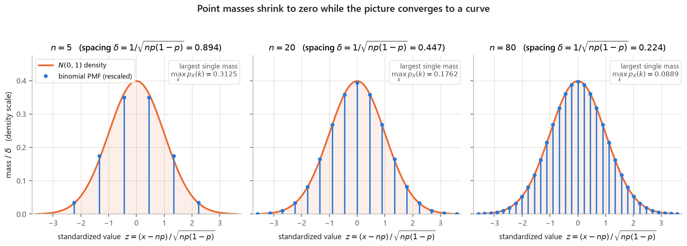
Read the figure as a statement about what survives the limit and what does not. Individual masses die: $\max_k p_{X_n}(k)$ falls from $0.3125$ at $n=5$ to $0.0889$ at $n=80$ and to $0.0446$ at $n=320$, on its way to $0$ — the same collapse that Example 0.1 produced in one step. Probabilities of intervals survive intact: at $n=80$ the stems within one standard deviation of the mean carry total mass $0.6857$, against the normal-curve area $\int_{-1}^{1}\frac{1}{\sqrt{2\pi}}e^{-z^2/2}\,dz=0.6827$. Masses vanish; areas persist. That is the entire content of the switch from $p_X$ to $f_X$.
The figure also shows mechanically why sums turn into integrals, and this is the derivation to remember. Suppose a discrete random variable $Y$ takes values $x_1<x_2<\cdots$ spaced $\delta$ apart, with masses given by a density through the slab formula, $p_Y(x_k)\approx f(x_k)\,\delta$. Then G2's expectation formula reads $$\mathbb{E}[Y]=\sum_k x_k\,p_Y(x_k)\;\approx\;\sum_k x_k\,f(x_k)\,\delta ,$$ and the right-hand side is precisely a Riemann sum for $\int x f(x)\,dx$: sample the function $x\mapsto x f(x)$ at the grid points $x_k$ and multiply by the grid width $\delta$. As $\delta\to0$ the Riemann sum converges to the integral, so $$\sum_x x\,p_X(x) \;\longrightarrow\; \int_{-\infty}^{\infty} x f_X(x)\,dx .$$ Nothing here is special to $x\mapsto x$; replacing it by any $g$ gives the expected value rule, and by $(x-\mathbb{E}[X])^2$ the variance. Every row of the table in §0.2 is this one substitution, $p_X(x)\rightsquigarrow f_X(x)\,dx$.
A concrete check that the limit really lands where it should. Let $Y_n$ be uniform on the $n$ midpoints $x_k=\frac{2k-1}{2n}$, $k=1,\dots,n$, of the $n$ equal cells of $[0,1]$, each with mass $1/n$ — so $\delta=1/n$ and $f\equiv1$, matching the wheel of Example 0.1. Then $\mathbb{E}[Y_n]=1/2$ exactly for every $n$ by symmetry, agreeing with $\int_0^1 x\,dx=\big[\tfrac{x^2}{2}\big]_0^1=\tfrac12-0=\tfrac12$. The variances are $\operatorname{var}(Y_n)=\frac{1}{12}\big(1-\frac{1}{n^2}\big)$, numerically $0.078125,\ 0.0825,\ 0.083325,\ 0.08333325$ for $n=4,10,100,1000$, converging to $$\int_0^1\Big(x-\tfrac12\Big)^2\,dx=\Big[\tfrac{(x-1/2)^3}{3}\Big]_0^1=\frac{(1/2)^3}{3}-\frac{(-1/2)^3}{3}=\frac{1/8}{3}+\frac{1/8}{3}=\frac{1}{12}=0.08333\ldots$$ the variance of the continuous uniform on $[0,1]$ (§1 derives the general $[a,b]$ case, $(b-a)^2/12$).
0.2 The correspondence table
L09 slide 1 opens the second continuous lecture with a two-column summary of concepts: the discrete world on the left, the continuous world on the right, and — centered between the columns — the objects that are the same in both and therefore need no translation. The same picture appears at the close of L08 (slide 8, "the constellation of concepts"). It is the map of this entire note, so it is reproduced here in full, with the definitions attached.
| Concept | Discrete (G2) | Continuous (this note) | Where |
|---|---|---|---|
| Distribution of one r.v. | $p_X(x)=\mathbf{P}(X=x)$ | $f_X(x)$, with $\mathbf{P}(a\le X\le b)=\displaystyle\int_a^b f_X(x)\,dx$ | §1 |
| Normalization | $\displaystyle\sum_x p_X(x)=1$ | $\displaystyle\int_{-\infty}^{\infty} f_X(x)\,dx=1$ | §1 |
| CDF — same object in both | $F_X(x)=\mathbf{P}(X\le x)$ $\Big(=\displaystyle\sum_{k\le x}p_X(k)$ or $\displaystyle\int_{-\infty}^{x} f_X(t)\,dt\Big)$ | §1 | |
| Expectation | $\mathbb{E}[X]=\displaystyle\sum_x x\,p_X(x)$ | $\mathbb{E}[X]=\displaystyle\int_{-\infty}^{\infty} x f_X(x)\,dx$ | §1 |
| Expected value rule | $\mathbb{E}[g(X)]=\displaystyle\sum_x g(x)p_X(x)$ | $\mathbb{E}[g(X)]=\displaystyle\int_{-\infty}^{\infty} g(x)f_X(x)\,dx$ | §1 |
| Variance — same definition in both | $\operatorname{var}(X)=\mathbb{E}\big[(X-\mathbb{E}[X])^2\big]=\mathbb{E}[X^2]-(\mathbb{E}[X])^2$; $\operatorname{var}(aX+b)=a^2\operatorname{var}(X)$ | §1 | |
| Joint distribution | $p_{X,Y}(x,y)=\mathbf{P}(X=x,\,Y=y)$ | $f_{X,Y}(x,y)$, with $\mathbf{P}\big((X,Y)\in S\big)=\displaystyle\iint_S f_{X,Y}\,dx\,dy$ | §2 |
| Marginal from joint | $p_X(x)=\displaystyle\sum_y p_{X,Y}(x,y)$ | $f_X(x)=\displaystyle\int_{-\infty}^{\infty} f_{X,Y}(x,y)\,dy$ | §2 |
| Conditioning on an event $A$ | $p_{X\mid A}(x)=\mathbf{P}(X=x\mid A)$ | $f_{X\mid A}(x)$, with $\mathbf{P}(X\in B\mid A)=\displaystyle\int_B f_{X\mid A}(x)\,dx$ | §1 |
| Conditioning on another r.v. | $p_{X\mid Y}(x\mid y)=\dfrac{p_{X,Y}(x,y)}{p_Y(y)}$ | $f_{X\mid Y}(x\mid y)=\dfrac{f_{X,Y}(x,y)}{f_Y(y)}$, if $f_Y(y)>0$ | §2 |
| Independence | $p_{X,Y}(x,y)=p_X(x)p_Y(y)$ for all $x,y$ | $f_{X,Y}(x,y)=f_X(x)f_Y(y)$ for all $x,y$ | §2 |
| Bayes' rule between two r.v.'s | $p_{X\mid Y}(x\mid y)=\dfrac{p_X(x)p_{Y\mid X}(y\mid x)}{p_Y(y)}$ | $f_{X\mid Y}(x\mid y)=\dfrac{f_X(x)f_{Y\mid X}(y\mid x)}{f_Y(y)}$ | §3 |
| Covariance and correlation — same definition in both | $\operatorname{cov}(X,Y)=\mathbb{E}\big[(X-\mathbb{E}[X])(Y-\mathbb{E}[Y])\big]=\mathbb{E}[XY]-\mathbb{E}[X]\,\mathbb{E}[Y]$; $\rho=\dfrac{\operatorname{cov}(X,Y)}{\sigma_X\sigma_Y}\in[-1,1]$ | §4 | |
Three structural remarks about the table, each of which saves work later.
- The CDF row is the bridge. $F_X(x)=\mathbf{P}(X\le x)$ is defined for any random variable — discrete, continuous or mixed — because it only ever asks for the probability of an event. That is why L09 slide 1 centers it. It is also why it is the universal computational tool: §1 uses it to define $f_X=\frac{dF_X}{dx}$, and §4 uses it as the first step of the derived-distribution method.
- $\mathbb{E}$ and $\operatorname{var}$ are centered too, and that is a statement about properties, not formulas. The formulas differ ($\sum$ versus $\int$), but every identity proved in G2 §2–§4 — linearity $\mathbb{E}[aX+b]=a\mathbb{E}[X]+b$, $\operatorname{var}(aX+b)=a^2\operatorname{var}(X)$, $\operatorname{var}(X)=\mathbb{E}[X^2]-(\mathbb{E}[X])^2$, $\mathbb{E}[X+Y]=\mathbb{E}[X]+\mathbb{E}[Y]$ with no independence needed — holds verbatim here, with the same proof after the substitution. None of them is re-proved in G3; they are imported.
- The right-hand column has one genuinely new inhabitant: nothing in the discrete world corresponds to the change-of-variables Jacobian $\big|dx/dy\big|$ that appears when you transform a continuous random variable (§4). Discretely, $Y=g(X)$ needs only bookkeeping — collect the $x$'s with $g(x)=y$ and add their masses. Continuously, stretching the axis stretches the density, and the stretch factor must be tracked. That is the one place where "replace $\sum$ by $\int$" is not the whole story, and the first half of §4 is about it.
- Replace each mass function by the corresponding density: $p_X\rightsquigarrow f_X$, $p_{X,Y}\rightsquigarrow f_{X,Y}$, $p_{X\mid Y}\rightsquigarrow f_{X\mid Y}$.
- Replace each $\sum_x$ by $\int_{-\infty}^{\infty}\cdots dx$, one integral per summation index (a double sum becomes a double integral).
- Keep the limits honest: integrate only over the support, the set where the density is nonzero. This replaces the discrete habit of "sum over the values that occur", and it is where most errors in §2 originate — a support like $\{0\le y\le x\le \ell\}$ silently sets the limits of both integrals.
- Interpret a bare $f$-value as a rate, never a probability: if the discrete formula's left side was a probability, the continuous one's left side is a density, and you must integrate to get back to a probability.
- Statements about events (Bayes, total probability, independence of events) need no translation at all — they were never about masses.
0.3 Reading guide for this note
G3 covers L08–L11 with recitations rec08–rec11, i.e. B&T Chapter 3 in full plus §4.1–4.2. The six sections work through the table above roughly top to bottom; the "Where" column is the authoritative index.
- §1 — PDFs, CDFs, and the three standard densities (L08, rec08, rec09 P2, B&T §3.1–3.3). The density and its properties; $\mathbb{E}$, $\mathbb{E}[g(X)]$ and $\operatorname{var}$ as integrals; the CDF $F_X$ and the two-way street $f_X=dF_X/dx$; mixed distributions and conditioning a density on a positive-probability event; the continuous uniform, the exponential and its memorylessness (rec09 P2, solved here where the exponential lives), maxima and minima of independent exponentials (rec08 P3(d),(e) — the rates of independent exponentials add at a minimum), and the normal — including standardization $\frac{X-\mu}{\sigma}\sim N(0,1)$ and the $\Phi$ table. Hook: the exponential is the only continuous density that forgets how long it has already waited.
- §2 — Joint, marginal and conditional densities (L09, rec09 P1/P3/P4, B&T §3.4–3.5). $f_{X,Y}$ and the $\delta^2$-square interpretation; marginalizing by integrating out a variable; $f_{X\mid Y}(x\mid y)=f_{X,Y}(x,y)/f_Y(y)$ as a normalized slice of the joint surface; independence; Buffon's needle and the stick-breaking example. Hook: conditioning on $\{Y=y\}$, an event of probability zero, is nevertheless perfectly well defined — via slabs, not via G1's definition.
- §3 — The four faces of Bayes' rule (L10, rec11 P1–P2, B&T §3.6). Inference when the unknown and the observation may each be discrete or continuous: discrete–discrete (G1's rule), discrete–continuous, continuous–discrete, continuous–continuous, plus the mixed versions that arise in detection and estimation; then an appendix (§3.6) discharging the three derived-distribution examples L10 leaves unworked — $Y/X$ on the unit square, Joan's Boston–New York trip, and $Y=aX+b$ applied to a normal. Hook: one rule, four notations; picking the right one is a matter of asking which of the two variables has a mass function.
- §4 — Derived distributions and convolution (L11, rec11 P3, B&T §4.1–4.2). Finding the distribution of $Y=g(X)$: the general two-step CDF method $F_Y(y)=\mathbf{P}(g(X)\le y)$ then differentiate, the shortcut formula for monotonic $g$, the linear case $Y=aX+b$; then the density of a sum of independent random variables, $f_{X+Y}(z)=\int f_X(x)f_Y(z-x)\,dx$, with the graphical flip-and-shift picture and the sum of two independent normals; and finally covariance and correlation (L11 slides 7–8, B&T §4.2) — the two numbers measuring departure from independence, with the repaired variance-of-a-sum formula, the counterexample showing zero covariance does not imply independence, and the coefficient $\rho\in[-1,1]$. Hook: the Jacobian mentioned above — the one thing the correspondence table cannot translate — and, at the end, the discrete convolution of G2 with its sum replaced by an integral, the recipe above one last time.
- §5 — Synthesis and checkpoint (rec10, the quiz-review problem set). A consolidated pass over the whole note: which tool answers which question, the common failure modes, and the rec10 quiz-review problems worked in full as a self-test across §1–§4. Hook: exam problems rarely announce which section they belong to; §5 is about recognizing the type.
Behind you: G1 (models, conditioning, Bayes, independence) and G2 (random variables, PMFs, expectation, variance, joint PMFs) — both used constantly and not restated. Ahead: G4 recasts $\mathbb{E}[X\mid Y]$ as a random variable and builds the Poisson process on the exponential density of §1; G6 proves the Central Limit Theorem that Fig. 0.1 only hinted at, and returns to §3's Bayes machinery for estimation.
§1 PDFs, CDFs, and the classic continuous distributions
Sources: L08 slides 2–8 (raster p01–p02) · rec08 P1–P3 · rec09 P2 (exponential memorylessness — solved here, where the exponential lives, rather than in §2) · Bertsekas–Tsitsiklis (B&T, as in §0) §3.1–3.3 (pp. 140–156), B&T Example 3.13 (p. 165), B&T Problem 3.9 "Mixed random variables" (Chapter 3, Problem 9; pp. 186–187) · every number recomputed in computes/g3_s1.py, figures in computes/g3_s1_figs.py
G2 built the whole theory of a random variable out of one object: the PMF $p_X(x) = \mathbf{P}(X = x)$. That object dies the moment $X$ can take a continuum of values. Spin a pointer and let $X$ be the angle it stops at; every particular angle has probability zero, so $p_X \equiv 0$ and the PMF carries no information at all. Yet the experiment plainly has structure — the pointer is as likely to land in $[0°,90°]$ as in $[90°,180°]$. The fix is to stop assigning probability to points and start assigning it to intervals, through a density.
This section installs that machinery. §1.1 defines the probability density function and reads it correctly (it is a rate, not a probability). §1.2 redoes expectation and variance with integrals in place of sums, working every integral. §1.3 and §1.5 derive the two workhorse families — uniform and exponential — from scratch, filling in L08's blanks and rec08's compressed steps. §1.4 introduces the cumulative distribution function, the one object that describes discrete, continuous and mixed random variables in a single language; Al's taxi (rec08 P2) is the showcase. §1.6 uses CDFs to get the law of a maximum and a minimum of exponentials. §1.7 does the normal: where the $1/\sqrt{2\pi\sigma^2}$ comes from, why standardization works, and how to use the $\Phi$ table. Joint and conditional densities are §2; Bayes-style inference is §3; derived distributions and convolution are §4.
1.1 Probability density functions
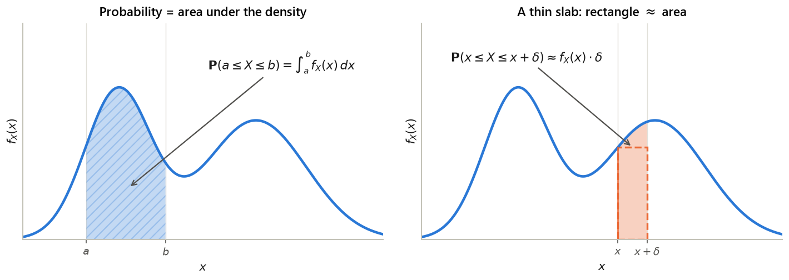
Three consequences follow immediately, and all three trip people up.
How good is the approximation? For $X$ exponential with $\lambda = 1$ at $x = 0.5$ (delta_slab_*): with $\delta = 0.5$ the exact probability is $0.238651$ against the rectangle's $0.303265$, a $27.1\%$ relative error; with $\delta = 0.1$, $0.057719$ against $0.060653$, a $5.08\%$ error; with $\delta = 0.01$, $0.0060351$ against $0.0060653$, a $0.50\%$ error; with $\delta = 0.001$, a $0.05\%$ error. The error is proportional to $\delta$ — halve the window, halve the relative error. That is what "$\approx$" means here.
unif_height_w*). There is no contradiction: what must be at most $1$ is the area, and the height-$50$ rectangle is only $0.02$ wide. Writing "$f_X(x) \le 1$" or reading $f_X(0.3) = 2.5$ as "a probability of $2.5$" are the two commonest beginner errors in this chapter. Height is a rate; area is a probability.Statement. Let $Z$ be a continuous random variable with $$f_Z(z) = \begin{cases} \gamma(1 + z^2), & -2 < z < 1,\\ 0, & \text{otherwise.}\end{cases}$$ For what value of $\gamma$ is this possible? (The question sheet prints the subscript in lower case, $f_z(z)$; the solution sheet uses $f_Z(z)$. Same object.)
Solution — with the arithmetic the solution sheet omits
Step 1 — write down the condition. A pdf must integrate to $1$. Outside $(-2,1)$ the density is $0$ and contributes nothing, so the whole integral collapses onto that interval: $$1 \;=\; \int_{-\infty}^{\infty} f_Z(z)\,dz \;=\; \int_{-2}^{1} \gamma\,(1 + z^2)\,dz \;=\; \gamma \int_{-2}^{1} (1+z^2)\,dz,$$ the constant $\gamma$ coming out of the integral by linearity.
Step 2 — the antiderivative. We need $G$ with $G'(z) = 1 + z^2$. Term by term, an antiderivative of $1$ is $z$ and an antiderivative of $z^2$ is $z^3/3$ (since $\frac{d}{dz}\frac{z^3}{3} = \frac{3z^2}{3} = z^2$). So $$G(z) \;=\; z + \tfrac13 z^3 .$$
Step 3 — substitute the limits. By the fundamental theorem of calculus the integral is $G(1) - G(-2)$. Evaluating each end separately (this is the step the solution sheet skips):
$$G(1) \;=\; 1 + \tfrac13(1)^3 \;=\; 1 + \tfrac13 \;=\; \tfrac43,$$
$$G(-2) \;=\; (-2) + \tfrac13(-2)^3 \;=\; -2 + \tfrac{-8}{3} \;=\; -\tfrac63 - \tfrac83 \;=\; -\tfrac{14}{3} .$$
Therefore
$$\int_{-2}^{1}(1+z^2)\,dz \;=\; \tfrac43 - \left(-\tfrac{14}{3}\right) \;=\; \tfrac43 + \tfrac{14}{3} \;=\; \tfrac{18}{3} \;=\; 6 .$$
(Keys recP1_G_at_1, recP1_G_at_m2, recP1_integral_no_gamma.)
Step 4 — solve for $\gamma$. The condition is $\gamma \cdot 6 = 1$, so dividing both sides by $6$,
$$\boxed{\;\gamma \;=\; \tfrac16 \;\approx\; 0.166667\;}$$
This is the sheet's "$6\gamma$, from which we conclude $\gamma = 1/6$", now with the two missing lines restored. Sign check: $\gamma > 0$ and $1 + z^2 > 0$, so $f_Z \ge 0$ — the other pdf requirement holds. Numerical confirmation: scipy.integrate.quad of $(1+z^2)/6$ over $[-2,1]$ returns $1.0$ to $1.1\times10^{-14}$ (recP1_scipy_norm_check).
Reading the answer. The density is an upward parabola on $(-2,1)$: it is largest at the left end, $f_Z(-2^+) = (1+4)/6 = 5/6 \approx 0.8333$, dips to its minimum $f_Z(0) = 1/6 \approx 0.1667$ at the origin, and rises again to $f_Z(1^-) = 2/6 = 1/3$. So $Z$ is pulled toward $-2$: values near $-2$ are about five times as likely, per unit length, as values near $0$. Part (b), the CDF, is completed in §1.4 once CDFs are defined.
Solution
(a) Normalization: $\int_0^2 cx\,dx = c\big[\tfrac{x^2}{2}\big]_0^2 = c\big(\tfrac{4}{2} - 0\big) = 2c$. Setting $2c = 1$ gives $c = 1/2$ (p11_c).
(b) $\mathbf{P}(X \le 1) = \int_0^1 \tfrac12 x\,dx = \tfrac12\big[\tfrac{x^2}{2}\big]_0^1 = \tfrac12\cdot\tfrac12 = \tfrac14 = 0.25$ (p11_P_X_le_1). Note $\mathbf{P}(X \le 1) = 1/4$, not $1/2$: the density is small near $0$, so the left half of the range carries much less than half the mass.
(c) No — and it does not matter. At $x = 2$, $f_X(2) = 1$; the maximum on the range is exactly $1$ here, but had the range been $[0,1]$ the constant would be $c = 2$ and the density would reach $2$. Only the area is constrained.
Solution
Legitimate? $3x^2 \ge 0$ on $[0,1]$. ✓ And $\int_0^1 3x^2\,dx = \big[x^3\big]_0^1 = 1 - 0 = 1$ ✓ (an antiderivative of $3x^2$ is $x^3$).
The probability. Same antiderivative, new limits:
$$\mathbf{P}(0.2 \le X \le 0.5) = \big[x^3\big]_{0.2}^{0.5} = (0.5)^3 - (0.2)^3 = 0.125 - 0.008 = 0.117$$
(p12_val). Sanity check on the shape: $f_X$ increases on $[0,1]$, so the interval $[0.2,0.5]$ — width $0.3$, sitting in the low-density region — collects less than $0.3$ of the mass. ✓
Solution
The density is constant at $1/(0.02 - 0) = 50$ per second (unif_height_w0.02) on the range, so $f_X(0.01) = 50$ — fifty times larger than $1$.
The probability is the area of a rectangle of height $50$ and width $0.011 - 0.009 = 0.002$: $$\mathbf{P}(0.009 \le X \le 0.011) = 50 \times 0.002 = 0.1 .$$ Perfectly legal. The reconciliation is the delta-interval reading: $50\ \text{s}^{-1}$ times $0.002\ \text{s}$ is the dimensionless $0.1$. Change the unit to milliseconds and the same density is $0.05\ \text{ms}^{-1}$ while the probability stays $0.1$ — probabilities are unit-free, densities are not.
1.2 Expectation and variance by integration
Every definition here is the G2 definition with the sum replaced by an integral and the PMF replaced by the density. The delta-interval reading is why: $f_X(x)\,dx$ is the probability mass sitting in $[x, x+dx]$, exactly the role $p_X(x)$ played in G2.
Proof of the three identities — the integral versions of the G2 proofs
Linearity. Apply the expected-value rule with $g(x) = ax+b$ and split the integral (linearity of integration): $$\mathbb{E}[aX+b] = \int_{-\infty}^{\infty}(ax+b)f_X(x)\,dx = a\int_{-\infty}^{\infty} x f_X(x)\,dx + b\int_{-\infty}^{\infty} f_X(x)\,dx = a\,\mathbb{E}[X] + b\cdot 1,$$ the last step using the definition of $\mathbb{E}[X]$ and normalization.
Variance of a linear function. Write $\mu = \mathbb{E}[X]$, so $\mathbb{E}[aX+b] = a\mu + b$ by the line above. Then $$\operatorname{var}(aX+b) = \int \big((ax+b) - (a\mu+b)\big)^2 f_X(x)\,dx = \int \big(a(x-\mu)\big)^2 f_X(x)\,dx = a^2\int (x-\mu)^2 f_X(x)\,dx,$$ because the two $+b$'s cancel inside the bracket and $a$ pulls out squared. The remaining integral is $\operatorname{var}(X)$. Note $b$ has vanished: shifting a distribution does not change its spread.
The computational formula. Expand the square inside the integral, $(x-\mu)^2 = x^2 - 2\mu x + \mu^2$, and split into three integrals: $$\operatorname{var}(X) = \int x^2 f_X\,dx \;-\; 2\mu\int x f_X\,dx \;+\; \mu^2\int f_X\,dx = \mathbb{E}[X^2] - 2\mu\cdot\mu + \mu^2\cdot 1 = \mathbb{E}[X^2] - \mu^2 .$$ The three integrals are, in order, $\mathbb{E}[X^2]$ (expected-value rule with $g(x)=x^2$), $\mathbb{E}[X] = \mu$, and normalization. $\blacksquare$ This identity is usually the cheaper route: one integral $\int x^2 f_X$ instead of an integral involving the mean you just computed.
- Check the density. $f_X \ge 0$ and $\int f_X = 1$. If a constant is unknown, this fixes it (Example 1.1).
- Restrict the limits. The integral $\int_{-\infty}^{\infty}$ is only ever over the region where $f_X > 0$; write those actual limits down before integrating anything.
- Mean: integrate $x f_X(x)$. State the antiderivative, then substitute the upper and lower limits separately.
- Second moment: integrate $x^2 f_X(x)$ the same way.
- Variance: $\operatorname{var}(X) = \mathbb{E}[X^2] - (\mathbb{E}[X])^2$. (Direct integration of $(x - \mathbb{E}[X])^2 f_X(x)$ is equivalent; use whichever is algebraically lighter — for the uniform, a shift substitution makes the direct route trivial, see §1.3.)
- Sanity checks: the mean must lie inside the range of $X$; the variance must be $\ge 0$; the standard deviation should be a modest fraction of the range (for a distribution on an interval of length $L$ it is always at most $L/2$).
Solution
Mean. $\displaystyle \mathbb{E}[X] = \int_0^1 x\cdot 2x\,dx = \int_0^1 2x^2\,dx = \Big[\tfrac{2x^3}{3}\Big]_0^1 = \tfrac23 - 0 = \tfrac23 \approx 0.6667$ (p2a_mean). It exceeds the midpoint $0.5$ because the density tilts mass toward $1$. ✓
Second moment. $\displaystyle \mathbb{E}[X^2] = \int_0^1 x^2\cdot 2x\,dx = \int_0^1 2x^3\,dx = \Big[\tfrac{x^4}{2}\Big]_0^1 = \tfrac12 - 0 = \tfrac12$ (p2a_EX2).
Variance. $\operatorname{var}(X) = \tfrac12 - \big(\tfrac23\big)^2 = \tfrac12 - \tfrac49 = \tfrac{9}{18} - \tfrac{8}{18} = \tfrac1{18} \approx 0.055556$, so $\sigma_X = \sqrt{1/18} \approx 0.2357$ (p2a_var, cross-checked by quadrature in p2a_scipy). Check: $\sigma_X \le L/2 = 0.5$. ✓
Solution
Take $g(x) = 1/x$ and integrate against $f_X$: $$\mathbb{E}\Big[\tfrac1X\Big] = \int_0^1 \frac{1}{x}\cdot 2x\,dx = \int_0^1 2\,dx = \big[2x\big]_0^1 = 2 .$$ The factor $x$ in the density cancels the $1/x$ singularity, so the integral converges. Two lessons: (i) the expected-value rule saves you an entire derived-distribution computation (that machinery is §4); (ii) $\mathbb{E}[1/X] = 2 \ne 1/\mathbb{E}[X] = 3/2$ — expectation does not commute with nonlinear functions, exactly as in G2.
1.3 The continuous uniform random variable
L08 slide 3 introduces the uniform with two blanks left for lecture. We fill them, then derive the variance the slide asserts.
Statement as printed. "Continuous Uniform r.v.": $f_X(x) = \underline{\hspace{1.5cm}}$ for $a \le x \le b$; $\mathbb{E}[X] = \underline{\hspace{1.5cm}}$; and $$\sigma_X^2 = \int_a^b\Big(x - \frac{a+b}{2}\Big)^2\frac{1}{b-a}\,dx = \frac{(b-a)^2}{12},$$ with the middle steps omitted. Here $a < b$ are the endpoints of the interval on which $X$ is equally likely to land.
Blank 1 — the density. "Uniform" means the density is a constant $c$ on $[a,b]$ and $0$ outside. Normalization pins $c$ down; no choice is involved: $$1 = \int_{-\infty}^{\infty} f_X(x)\,dx = \int_a^b c\,dx = c\big[x\big]_a^b = c\,(b-a) \quad\Longrightarrow\quad c = \frac{1}{b-a}.$$ So $$\boxed{\;f_X(x) = \begin{cases}\dfrac{1}{b-a}, & a \le x \le b,\\[4pt] 0, & \text{otherwise.}\end{cases}\;}$$ This is the $1/(b-a)$ that already appears inside the slide's variance integral. Note the immediate corollary, the one you actually use: for $a \le u \le v \le b$, $$\mathbf{P}(u \le X \le v) = \int_u^v \frac{dx}{b-a} = \frac{v-u}{b-a} = \frac{\text{length of the sub-interval}}{\text{length of the whole interval}},$$ which is G1's "geometric probability" recovered as a density statement.
Blank 2 — the mean. Integrate $x$ against the density, pulling the constant $1/(b-a)$ out: $$\mathbb{E}[X] = \int_a^b x\cdot\frac{1}{b-a}\,dx = \frac{1}{b-a}\Big[\frac{x^2}{2}\Big]_a^b = \frac{1}{b-a}\cdot\frac{b^2 - a^2}{2}.$$ Factor the difference of squares, $b^2 - a^2 = (b-a)(b+a)$, and cancel the $(b-a)$: $$\mathbb{E}[X] = \frac{(b-a)(b+a)}{2(b-a)} = \boxed{\;\frac{a+b}{2}\;}$$ the midpoint — as symmetry demands. (This is the value the slide silently uses inside its variance integral.)
The variance, every step. Start from the slide's integral and substitute $u = x - \frac{a+b}{2}$, so $du = dx$. The limits move with the substitution:
$$x = a \;\Longrightarrow\; u = a - \frac{a+b}{2} = \frac{2a - a - b}{2} = -\frac{b-a}{2}, \qquad
x = b \;\Longrightarrow\; u = \frac{b-a}{2}.$$
Abbreviate $c = \frac{b-a}{2}$ (half the interval length). Then
$$\sigma_X^2 = \frac{1}{b-a}\int_{-c}^{c} u^2\,du = \frac{1}{b-a}\Big[\frac{u^3}{3}\Big]_{-c}^{c}
= \frac{1}{b-a}\left(\frac{c^3}{3} - \frac{(-c)^3}{3}\right) = \frac{1}{b-a}\cdot\frac{2c^3}{3},$$
using $(-c)^3 = -c^3$ so the two terms add rather than cancel. Now put $c^3 = \frac{(b-a)^3}{8}$:
$$\sigma_X^2 = \frac{1}{b-a}\cdot\frac{2}{3}\cdot\frac{(b-a)^3}{8} = \frac{2(b-a)^3}{24(b-a)} = \boxed{\;\frac{(b-a)^2}{12}\;}$$
which is the slide's answer, now derived. (Numerically verified for five intervals in unif_*_var; e.g. $[2,7]$ gives $25/12 \approx 2.083333$ both symbolically and by quadrature.)
Cross-check by the other route. Using $\operatorname{var}(X) = \mathbb{E}[X^2] - (\mathbb{E}[X])^2$: $$\mathbb{E}[X^2] = \frac{1}{b-a}\Big[\frac{x^3}{3}\Big]_a^b = \frac{b^3 - a^3}{3(b-a)} = \frac{(b-a)(a^2+ab+b^2)}{3(b-a)} = \frac{a^2+ab+b^2}{3},$$ factoring $b^3 - a^3 = (b-a)(b^2+ab+a^2)$. Then, over the common denominator $12$, $$\operatorname{var}(X) = \frac{a^2+ab+b^2}{3} - \frac{(a+b)^2}{4} = \frac{4(a^2+ab+b^2) - 3(a+b)^2}{12} = \frac{4a^2+4ab+4b^2 - 3a^2-6ab-3b^2}{12} = \frac{a^2 - 2ab + b^2}{12} = \frac{(b-a)^2}{12}. \checkmark$$
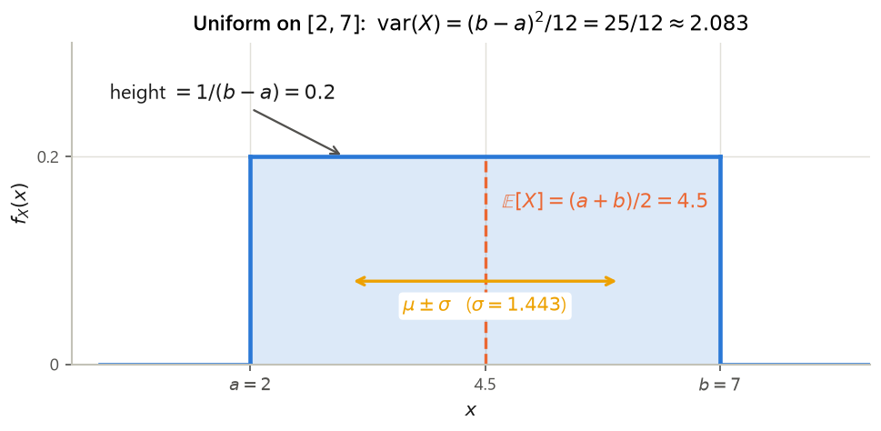
unif_2_7_*). The $\pm\sigma$ band covers about $58\%$ of the interval — a flat distribution is "wide" relative to its range.Solution
$a = 0$, $b = 10$, density $1/10 = 0.1$ on $[0,10]$.
$\mathbb{E}[X] = (0+10)/2 = 5$ minutes. $\operatorname{var}(X) = (10-0)^2/12 = 100/12 = 8.3\overline{3}$, so $\sigma_X = \sqrt{100/12} \approx 2.886751$ minutes (unif_0_10_*).
$\mathbf{P}(X > 7) = \dfrac{10 - 7}{10 - 0} = 0.3$ by the length-ratio corollary — no integration needed.
Solution
(a) From Fig. 1.2, $\mathbb{E}[X] = 4.5$ and $\operatorname{var}(X) = 25/12$. By the linearity properties of §1.2, $$\mathbb{E}[3X-1] = 3(4.5) - 1 = 12.5, \qquad \operatorname{var}(3X-1) = 3^2\cdot\frac{25}{12} = \frac{225}{12} = 18.75 .$$ The $-1$ shifts the mean and leaves the variance alone.
(b) Rearranging the computational formula, $\mathbb{E}[X^2] = \operatorname{var}(X) + (\mathbb{E}[X])^2 = \dfrac{25}{12} + 20.25 = 2.08\overline{3} + 20.25 = 22.33\overline{3}$. (Cross-check with the closed form derived above: $(a^2+ab+b^2)/3 = (4 + 14 + 49)/3 = 67/3 = 22.33\overline{3}$. ✓)
1.4 Cumulative distribution functions: one object for all three worlds
The pdf handles continuous random variables, the PMF handles discrete ones, and neither handles a random variable that is part atom and part smear — like Al's waiting time below, which is $0$ with probability $2/3$ and otherwise spread over an interval. The CDF handles all three without modification, which is why L08 slide 8 prints it between the two columns.
- Nondecreasing: if $x \le y$ then $F_X(x) \le F_X(y)$, because $\{X \le x\} \subseteq \{X \le y\}$ and probability is monotone (G1).
- Limits: $F_X(x) \to 0$ as $x \to -\infty$ and $F_X(x) \to 1$ as $x \to +\infty$.
- Right-continuous: $F_X(x) = \lim_{\varepsilon \downarrow 0} F_X(x+\varepsilon)$ — the "$\le$" in the definition puts the value at each jump on the upper step (the closed dot in Fig. 1.3).
- Interval probabilities: $\mathbf{P}(a < X \le b) = F_X(b) - F_X(a)$, always.
- Jumps are point masses: $\mathbf{P}(X = x) = F_X(x) - \lim_{\varepsilon \downarrow 0}F_X(x - \varepsilon)$, the size of the jump at $x$. A continuous random variable has no jumps; a discrete one is all jumps.
- Recovering the pdf: if $X$ is continuous, then wherever $F_X$ is differentiable, $$f_X(x) = \frac{dF_X}{dx}(x),$$ by the fundamental theorem of calculus applied to $F_X(x) = \int_{-\infty}^x f_X(t)\,dt$.
![A two-row, three-column figure. Top row: a uniform pdf rectangle; a discrete PMF with three spikes of heights one sixth, three sixths and two sixths at 1, 2 and 4; and a mixed distribution showing a rectangular slab of height one half on the interval zero to one with a heavy arrow at one half denoting an atom of mass one half. Bottom row: the corresponding CDFs — a continuous ramp rising from 0 at a to 1 at b; a right-continuous staircase with closed dots on the upper step and open dots on the lower step, levels one sixth, four sixths and one; and a CDF that ramps, jumps from one quarter to three quarters at x equals one half, then ramps again to one.](img/g3_s1_cdf_trio.png)
stair_cdf_levels). Right: mixed ⇒ both features at once.Statement. With $\gamma = 1/6$, find the cumulative distribution function of $Z$.
Solution — with the lower-limit evaluation the solution sheet omits
Step 1 — three regimes. $F_Z(z) = \int_{-\infty}^{z} f_Z(t)\,dt$, and the integrand is nonzero only on $(-2,1)$, so:
- If $z < -2$: the whole integration range lies where $f_Z = 0$, so $F_Z(z) = 0$.
- If $z > 1$: the range covers all the mass, so $F_Z(z) = 1$ (this is Example 1.1's normalization).
- If $-2 \le z \le 1$: only the part from $-2$ to $z$ contributes, so $F_Z(z) = \int_{-2}^{z}\tfrac16(1+t^2)\,dt$.
Step 2 — the middle piece. Using the antiderivative $G(t) = t + \tfrac13 t^3$ from Example 1.1,
$$F_Z(z) = \frac16\Big[t + \tfrac13 t^3\Big]_{-2}^{z} = \frac16\Big(\big(z + \tfrac13 z^3\big) - G(-2)\Big) .$$
And $G(-2) = -\tfrac{14}{3}$, computed in Example 1.1 Step 3. Subtracting a negative adds:
$$F_Z(z) = \frac16\Big(z + \frac{z^3}{3} + \frac{14}{3}\Big), \qquad -2 \le z \le 1 .$$
That $\tfrac{14}{3}$ is the constant the solution sheet produces without showing where it comes from (recP1_cdf_constant).
Step 3 — assemble. $$F_Z(z) = \begin{cases} 0, & z < -2,\\[3pt] \dfrac16\Big(z + \dfrac{z^3}{3} + \dfrac{14}{3}\Big), & -2 \le z \le 1,\\[6pt] 1, & z > 1 .\end{cases}$$
Step 4 — check the joins (always do this). At $z = -2$: $\tfrac16(-2 - \tfrac83 + \tfrac{14}{3}) = \tfrac16(-2 + 2) = 0$ ✓ — it meets the left piece. At $z = 1$: $\tfrac16(1 + \tfrac13 + \tfrac{14}{3}) = \tfrac16(1 + 5) = 1$ ✓ — it meets the right piece. No jumps, so $Z$ is genuinely continuous. Spot values (recP1_FZ_*): $F_Z(-1) = 5/9 \approx 0.5556$, $F_Z(0) = 7/9 \approx 0.7778$, $F_Z(0.5) \approx 0.8681$.
Step 5 — reverse check. Differentiating the middle piece, $\frac{d}{dz}\frac16\big(z + \frac{z^3}{3} + \frac{14}{3}\big) = \frac16\big(1 + z^2\big) = f_Z(z)$ ✓, as property 6 requires. Note also that $F_Z(0) = 7/9$: more than three quarters of the mass sits left of the origin, confirming the leftward tilt observed in Example 1.1.
Statement. The taxi stand and the bus stop near Al's home are in the same location. Al goes there at a given time; if a taxi is waiting (probability $2/3$) he boards it immediately. Otherwise he waits for whichever comes first, a taxi or a bus. The next taxi arrives after a time uniformly distributed on $[0,10]$ minutes; the next bus arrives in exactly $5$ minutes. Find the CDF and the expected value of Al's waiting time.
The rec08 solution sheet contains no work at all — it says only "See textbook, Problem 3.9, page 187". Everything below is the full derivation; the book's compressed version is reproduced at the end for comparison.
Solution — the entire [SOLUTION GAP] filled
Step 0 — name the random quantities. Let $X$ be Al's waiting time in minutes (what we want). Let $T \sim \text{Uniform}[0,10]$ be the time until the next taxi arrives, given that none is waiting. The bus arrives deterministically at time $5$. Then $$X = \begin{cases} 0 & \text{if a taxi is already waiting (probability } 2/3),\\ \min(T, 5) & \text{otherwise (probability } 1/3).\end{cases}$$ So $X$ takes the single value $0$ with a lump of probability, the single value $5$ with another lump (whenever the bus wins), and a spread of values in $(0,5)$ (whenever the taxi wins). It is a mixed random variable — exactly the situation the book's problem is built around, and its preamble (p. 186) supplies the framework we now use.
Step 1 — the mixed-random-variable framework (stated in the preamble of the same B&T Problem 3.9, p. 186). If $X$ equals a discrete random variable $Y$ with probability $p$ and a continuous random variable $Z$ with probability $1-p$, then by the total probability theorem applied to the event $\{X \le x\}$, $$F_X(x) = \mathbf{P}(X \le x) = p\,\mathbf{P}(Y \le x) + (1-p)\,\mathbf{P}(Z \le x) = p\,F_Y(x) + (1-p)\,F_Z(x),$$ and, conforming to the total expectation theorem, $$\mathbb{E}[X] = p\,\mathbb{E}[Y] + (1-p)\,\mathbb{E}[Z].$$ So the job is to identify the splitting event, $p$, $Y$ and $Z$.
Step 2 — the splitting event $A$ and its probability. Following the book, let
$$A = \{\text{Al finds a taxi waiting}\} \cup \{\text{Al has to wait and the bus arrives first}\},$$
i.e. the event that his waiting time is one of the two special values $0$ or $5$. First, given that he has to wait, the bus (at exactly $5$) beats the taxi precisely when $T > 5$, and since $T$ is uniform on $[0,10]$ the length-ratio rule of §1.3 gives
$$\mathbf{P}(\text{taxi takes more than } 5 \text{ minutes}) = \mathbf{P}(T > 5) = \frac{10-5}{10-0} = \frac12 .$$
Now decompose $A$ into its two disjoint pieces and use the multiplication rule on the second:
$$\mathbf{P}(A) = \underbrace{\frac23}_{\text{taxi waiting}} + \underbrace{\frac13 \cdot \frac12}_{\text{must wait, then bus wins}} = \frac23 + \frac16 = \frac46 + \frac16 = \frac56 \approx 0.8333 .$$
(Keys taxi_p_taxi_gt5, taxi_p_bus_branch, taxi_PA.) Hence $p = \mathbf{P}(A) = 5/6$ and $1 - p = 1/6$.
Step 3 — the discrete component $Y$ (the law of $X$ given $A$). Given $A$, the waiting time is $0$ or $5$. By the definition of conditional probability,
$$p_Y(0) = \mathbf{P}(X = 0 \mid A) = \frac{\mathbf{P}(X = 0,\ A)}{\mathbf{P}(A)} = \frac{2/3}{5/6} = \frac23\cdot\frac65 = \frac{12}{15} = \frac45 = 0.8,$$
$$p_Y(5) = \mathbf{P}(X = 5 \mid A) = \frac{\mathbf{P}(X = 5,\ A)}{\mathbf{P}(A)} = \frac{1/6}{5/6} = \frac16\cdot\frac65 = \frac{3}{15} = \frac15 = 0.2 .$$
(The book prints these as $12/15$ and $3/15$; keys taxi_pY0, taxi_pY5.) Check: $4/5 + 1/5 = 1$ ✓. Its mean is
$$\mathbb{E}[Y] = 0\cdot\frac45 + 5\cdot\frac15 = 1 \text{ minute}.$$
Step 4 — the continuous component $Z$ (the law of $X$ given $A^c$). The complementary event $A^c$ is "Al must wait and the taxi arrives within $5$ minutes", of probability $\frac13\cdot\frac12 = \frac16$ ✓ (it agrees with $1 - 5/6$). On $A^c$ the waiting time is $T$ itself, conditioned on $T < 5$. Conditioning a density on an event of the form $\{T \in A\}$ rescales it on that set (B&T §3.5, p. 165): $$f_Z(z) = f_{T \mid \{T < 5\}}(z) = \frac{f_T(z)}{\mathbf{P}(T < 5)} = \frac{1/10}{1/2} = \frac15, \qquad 0 \le z \le 5,$$ and $0$ elsewhere. So $Z$ is uniform on $[0,5]$ — as it must be: chopping a uniform density and renormalizing leaves it uniform. Its mean is $\mathbb{E}[Z] = (0+5)/2 = 5/2 = 2.5$ minutes.
Step 5 — assemble the CDF. Insert into $F_X = p F_Y + (1-p)F_Z$ region by region.
- $x < 0$: both components are $\le x$ with probability $0$, so $F_X(x) = 0$.
- $0 \le x < 5$: $F_Y(x) = \mathbf{P}(Y \le x) = p_Y(0) = 4/5$ (the value $5$ has not been reached yet), and $F_Z(x) = x/5$ (uniform on $[0,5]$). Hence $$F_X(x) = \frac56\cdot\frac45 + \frac16\cdot\frac{x}{5} = \frac{20}{30} + \frac{x}{30} = \frac23 + \frac{x}{30}.$$
- $x \ge 5$: $F_Y(x) = 1$ and $F_Z(x) = 1$, so $F_X(x) = \frac56 + \frac16 = 1$.
Step 6 — read the shape and check it. At $x = 0$ the CDF leaps from $0$ to $2/3$: that jump is $\mathbf{P}(X = 0) = 2/3$. It then ramps with slope $1/30$ (the density of the continuous part, $\frac16\cdot\frac15$), reaching
$$F_X(5^-) = \frac23 + \frac{5}{30} = \frac{20}{30} + \frac{5}{30} = \frac{25}{30} = \frac56 ,$$
and at $x = 5$ it leaps the remaining $1 - \frac56 = \frac16$: that jump is $\mathbf{P}(X = 5) = \frac16$, the bus. Total mass accounted for: $\frac23 + \frac{5}{30} + \frac16 = 1$ ✓. Intermediate value: $F_X(2.5) = \frac23 + \frac{2.5}{30} = 0.75$ (taxi_F_2.5_exact) — three quarters of the time Al is on his way within $2\tfrac12$ minutes.
Step 7 — the expected value.
$$\mathbb{E}[X] = \mathbf{P}(A)\,\mathbb{E}[Y] + \big(1-\mathbf{P}(A)\big)\,\mathbb{E}[Z] = \frac56\cdot 1 + \frac16\cdot\frac52 = \frac56 + \frac{5}{12} = \frac{10}{12} + \frac{5}{12} = \frac{15}{12} = \boxed{\;\frac54 = 1.25 \text{ minutes}\;}$$
matching the book's $15/12$ (taxi_EX).
Step 8 — an independent cross-check. Compute $\mathbb{E}[X]$ directly from $X = \mathbf{1}\{\text{must wait}\}\cdot\min(T,5)$. Since he waits with probability $1/3$ and $T$ is independent of that,
$$\mathbb{E}[X] = \frac13\,\mathbb{E}[\min(T,5)], \qquad
\mathbb{E}[\min(T,5)] = \int_0^5 t\cdot\frac{1}{10}\,dt + 5\cdot\mathbf{P}(T > 5) = \frac{1}{10}\Big[\frac{t^2}{2}\Big]_0^5 + 5\cdot\frac12 = \frac{25}{20} + \frac52 = 1.25 + 2.5 = 3.75,$$
so $\mathbb{E}[X] = 3.75/3 = 1.25$ ✓. A four-million-run Monte Carlo simulation of the whole story gives mean $1.25058$ and $F_X(2.5) = 0.74986$ (taxi_MC_*), confirming both answers.
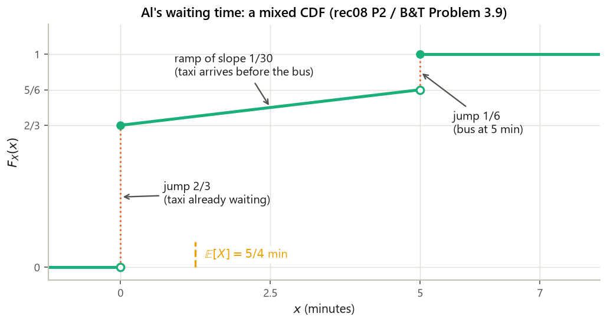
computes/g3_s1.py keys taxi_*.Solution
(a) Yes: $F_X$ is continuous everywhere (at $x=0$ both pieces give $0$; at $x=1$ both give $1$), so there are no jumps and hence no point masses.
(b) Differentiate on the middle piece: $f_X(x) = \frac{d}{dx}x^2 = 2x$ for $0 \le x \le 1$, and $0$ elsewhere — the density of Practice 1.4. (Check: $\int_0^1 2x\,dx = [x^2]_0^1 = 1$ ✓.)
(c) $\mathbf{P}(0.25 < X \le 0.75) = F_X(0.75) - F_X(0.25) = 0.75^2 - 0.25^2 = 0.5625 - 0.0625 = 0.5$. Differencing the CDF is faster than integrating the pdf whenever the CDF is already in hand.
Solution
CDF. For $0 \le x < 1$: $\{X \le x\} = \{U \le x\}$, so $F_X(x) = x/2$. For $x \ge 1$: $X \le 1$ always, so $F_X(x) = 1$. For $x < 0$: $F_X(x) = 0$. $$F_X(x) = \begin{cases}0, & x < 0,\\ x/2, & 0 \le x < 1,\\ 1, & x \ge 1.\end{cases}$$
The atom. $F_X(1^-) = 1/2$ while $F_X(1) = 1$, a jump of $1/2$: $\mathbf{P}(X = 1) = \mathbf{P}(U \ge 1) = 1/2$ ✓. So $X$ is mixed — half continuous (uniform density $1/2$ on $[0,1)$), half a single atom at $1$.
Mean. Split as in Example 1.4, with $p = 1/2$ for the atom $Y \equiv 1$ and $1-p = 1/2$ for $Z$ uniform on $[0,1]$: $$\mathbb{E}[X] = \tfrac12\cdot 1 + \tfrac12\cdot\tfrac12 = \tfrac12 + \tfrac14 = 0.75 .$$ Cross-check by direct integration against the continuous part plus the atom: $\int_0^1 x\cdot\frac12\,dx + 1\cdot\frac12 = \frac14 + \frac12 = 0.75$ ✓. Note $\mathbb{E}[X] = 0.75 < \mathbb{E}[U] = 1$: saturation can only pull the mean down.
1.5 The exponential random variable and memorylessness
The exponential is the continuous analogue of G2's geometric: it models the time you wait for an event that has no schedule and no memory — a light bulb burning out, a customer arriving, a packet failing. rec08 P3 derives its CDF, mean and variance; rec09 P2 asks for the memorylessness property and then defers to the textbook. Both are done in full here.
(a) The CDF. For $x < 0$ the density is identically zero on $(-\infty, x]$, so $$F_X(x) = \int_{-\infty}^{x} f_X(t)\,dt = 0 .$$ For $x \ge 0$ the integrand is zero on $(-\infty, 0)$ and $\lambda e^{-\lambda t}$ on $[0,x]$: $$F_X(x) = \int_{0}^{x}\lambda e^{-\lambda t}\,dt = \Big[-e^{-\lambda t}\Big]_{0}^{x} .$$ Substituting the limits separately: at $t = x$ the antiderivative is $-e^{-\lambda x}$; at $t = 0$ it is $-e^{0} = -1$. Subtracting, $$F_X(x) = -e^{-\lambda x} - (-1) = 1 - e^{-\lambda x} .$$ Hence $$\boxed{\;F_X(x) = \begin{cases}0, & x < 0,\\ 1 - e^{-\lambda x}, & x \ge 0,\end{cases}\qquad\text{equivalently}\qquad \mathbf{P}(X > x) = e^{-\lambda x} \ \ (x \ge 0).\;}$$ The tail form $\mathbf{P}(X > x) = e^{-\lambda x}$ is the one worth memorizing; it is the survival probability, and it drives §1.6 and memorylessness below.
(b) The mean, by parts — every step. We must evaluate $\mathbb{E}[X] = \int_0^\infty x\,\lambda e^{-\lambda x}\,dx$. Integration by parts says $\int_0^\infty u\,dv = \big[uv\big]_0^\infty - \int_0^\infty v\,du$. Choose
$$u = x \;\Longrightarrow\; du = dx, \qquad dv = \lambda e^{-\lambda x}dx \;\Longrightarrow\; v = -e^{-\lambda x},$$
the choice of $v$ being verified by differentiating: $\frac{d}{dx}(-e^{-\lambda x}) = \lambda e^{-\lambda x}$ ✓. (Why this choice? Because differentiating $u = x$ removes the polynomial factor, whereas the exponential integrates back to itself.) Then
$$\mathbb{E}[X] = \Big[-x e^{-\lambda x}\Big]_0^{\infty} \;-\; \int_0^{\infty}\big(-e^{-\lambda x}\big)\,dx \;=\; \Big[-x e^{-\lambda x}\Big]_0^{\infty} \;+\; \int_0^{\infty} e^{-\lambda x}\,dx .$$
The boundary term (the sheet drops it silently). At the lower limit, $-0\cdot e^{0} = 0$. At the upper limit we need $\lim_{x\to\infty} x e^{-\lambda x}$. Since $e^{\lambda x}$ grows faster than any polynomial, $x/e^{\lambda x} \to 0$ (formally, one application of L'Hôpital's rule gives $1/(\lambda e^{\lambda x}) \to 0$). Concretely, at $\lambda = 1$, $x = 100$ the value is $3.720\times10^{-42}$ (exp_bdry_x_e_1_at_100). So the boundary term is $0 - 0 = 0$.
The remaining integral. An antiderivative of $e^{-\lambda x}$ is $-\frac{1}{\lambda}e^{-\lambda x}$, so
$$\int_0^{\infty}e^{-\lambda x}dx = \Big[-\frac{1}{\lambda}e^{-\lambda x}\Big]_0^{\infty} = 0 - \Big(-\frac{1}{\lambda}\Big) = \frac{1}{\lambda}.$$
Therefore
$$\boxed{\;\mathbb{E}[X] = 0 + \frac1\lambda = \frac{1}{\lambda}\;}$$
Verified by quadrature for $\lambda = 0.5, 1, 2, 0.2$ (exp_lam*_mean).
(c) The variance. First the second moment, by parts again with $u = x^2$, $dv = \lambda e^{-\lambda x}dx$, so $du = 2x\,dx$ and $v = -e^{-\lambda x}$:
$$\mathbb{E}[X^2] = \int_0^{\infty}x^2\lambda e^{-\lambda x}dx = \Big[-x^2 e^{-\lambda x}\Big]_0^{\infty} + \int_0^{\infty}2x\,e^{-\lambda x}\,dx .$$
Boundary term. At $x = 0$ it is $0$; as $x\to\infty$, $x^2 e^{-\lambda x}\to 0$ for the same growth reason (at $\lambda=1$, $x=100$: $3.720\times 10^{-40}$, key exp_bdry_x2_e_1_at_100). So it vanishes.
The remaining integral — the step the sheet compresses. Multiply and divide by $\lambda$ so that the density reappears inside:
$$\int_0^{\infty}2x\,e^{-\lambda x}dx = \frac{2}{\lambda}\int_0^{\infty}x\,\lambda e^{-\lambda x}\,dx = \frac{2}{\lambda}\,\mathbb{E}[X] = \frac{2}{\lambda}\cdot\frac1\lambda = \frac{2}{\lambda^2}.$$
That is exactly the sheet's "$= \frac{2}{\lambda}\mathbb{E}[X]$", now with the inserted factor $\lambda$ made explicit. Hence $\mathbb{E}[X^2] = 2/\lambda^2$, and
$$\operatorname{var}(X) = \mathbb{E}[X^2] - \big(\mathbb{E}[X]\big)^2 = \frac{2}{\lambda^2} - \Big(\frac1\lambda\Big)^2 = \frac{2}{\lambda^2} - \frac{1}{\lambda^2} = \boxed{\;\frac{1}{\lambda^2}\;}$$
so $\sigma_X = 1/\lambda = \mathbb{E}[X]$: the exponential's standard deviation equals its mean. All four values confirmed numerically in exp_lam*_*.
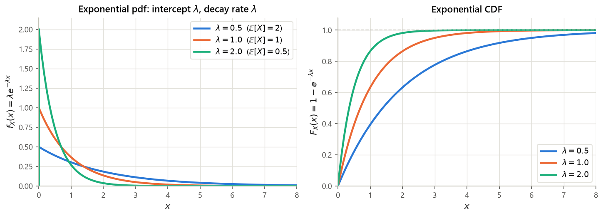
exp_P_within_1sd). About $63\%$ of exponential waits are shorter than average — the distribution is heavily right-skewed, and the rare long waits drag the mean above the median $\ln 2/\lambda \approx 0.693/\lambda$.Statement. The time $T$ until a new light bulb burns out is exponential with parameter $\lambda$. Ariadne turns the light on, leaves the room, and when she returns $t$ time units later finds the bulb still on — the event $A = \{T > t\}$. Let $X$ be the additional time until the bulb burns out. What is the conditional CDF of $X$ given $A$? (The rec09 solution sheet says only "See Example 3.13 in the textbook on page 165".)
Solution
Step 1 — translate the question into an event about $T$. $X = T - t$ is the residual life. For $x \ge 0$, $$\{X > x\} \cap A = \{T - t > x\} \cap \{T > t\} = \{T > t + x\} \cap \{T > t\} = \{T > t+x\},$$ the last equality because $x \ge 0$ makes $t + x \ge t$, so $\{T > t+x\}$ is already contained in $\{T > t\}$ — the intersection is the smaller set.
Step 2 — apply the definition of conditional probability (G1 §2). $$\mathbf{P}(X > x \mid A) = \frac{\mathbf{P}(\{X > x\}\cap A)}{\mathbf{P}(A)} = \frac{\mathbf{P}(T > t + x)}{\mathbf{P}(T > t)} .$$
Step 3 — insert the exponential tail from Example 1.5(a). $\mathbf{P}(T > s) = e^{-\lambda s}$, so $$\mathbf{P}(X > x \mid A) = \frac{e^{-\lambda(t+x)}}{e^{-\lambda t}} = e^{-\lambda(t+x) + \lambda t} = e^{-\lambda x},$$ using the exponent law $e^{p}/e^{q} = e^{p-q}$ and cancelling the $\lambda t$'s. The elapsed time $t$ has vanished entirely.
Step 4 — the conditional CDF. Taking complements, $$F_{X\mid A}(x) = \mathbf{P}(X \le x \mid A) = 1 - e^{-\lambda x}, \qquad x \ge 0,$$ which is precisely the unconditional exponential CDF of Example 1.5(a). Differentiating, the conditional density is $\lambda e^{-\lambda x}$: the residual life is $\text{Exp}(\lambda)$, the same distribution as a brand-new bulb. In particular the expected remaining life is $\mathbb{E}[X \mid T > t] = 1/\lambda$, no matter how long the bulb has already burned.
Numerical confirmation. With $\lambda = 0.4$: for every $t \in \{0,1,3,10,50\}$ and every $x \in \{0.5,2,5,9\}$, the conditional tail $e^{-\lambda(t+x)}/e^{-\lambda t}$ equals the fresh tail $e^{-\lambda x}$ to within $2.3\times10^{-15}$ (mem_lam0.4_*, mem_max_abs_dev) — e.g. both equal $0.81873075$ at $x = 0.5$ and $0.44932896$ at $x = 2$.
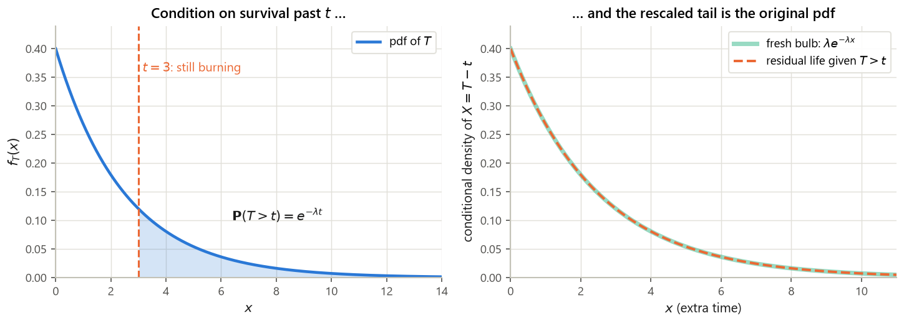
Solution
(a) $\mathbb{E}[X] = 1/\lambda = 5$, so $\lambda = 0.2$ per second.
(b) $\mathbf{P}(X > 10) = e^{-0.2 \times 10} = e^{-2} = 0.135335$ (exp_lam02_P_gt_10).
(c) $\mathbf{P}(X \le 5) = 1 - e^{-0.2\times5} = 1 - e^{-1} = 0.632121$ — the universal $63\%$ figure.
(d) The median $m$ solves $1 - e^{-0.2m} = 0.5$, i.e. $e^{-0.2m} = 0.5$, i.e. $-0.2m = \ln 0.5 = -\ln 2$, so $m = \ln 2/0.2 = 5\ln 2 = 3.465736$ seconds (exp_lam02_median). The median is well below the mean $5$ — the right tail is long.
(e) $\operatorname{var}(X) = 1/\lambda^2 = 1/0.04 = 25$, so $\sigma_X = 5$ seconds $= \mathbb{E}[X]$ ✓.
Solution
By memorylessness the $800$ hours are irrelevant:
$$\mathbf{P}(T > 1000 \mid T > 800) = \mathbf{P}(T > 200) = e^{-200/1000} = e^{-0.2} = 0.818731$$
(mem_bulb_P200_more, identical to mem_bulb_P_fresh_200). The expected remaining life is $1/\lambda = 1000$ hours — the same as for a brand-new bulb. A real bulb would do worse; this is the modeling assumption at work.
Solution
Let $C$ be the number of customers ahead, with $\mathbf{P}(C=0) = \mathbf{P}(C=1) = 1/2$. Condition on $C$ (total probability theorem, G1 §2): $$F_W(w) = \mathbf{P}(W \le w) = \tfrac12\,\mathbf{P}(W \le w \mid C = 0) + \tfrac12\,\mathbf{P}(W \le w \mid C = 1).$$ Given $C = 0$, $W = 0$, so $\mathbf{P}(W \le w \mid C=0) = 1$ for $w \ge 0$ and $0$ for $w < 0$. Given $C = 1$, $W$ is exponential, so $\mathbf{P}(W \le w \mid C=1) = 1 - e^{-\lambda w}$ for $w \ge 0$. Hence for $w \ge 0$ $$F_W(w) = \tfrac12\cdot 1 + \tfrac12\big(1 - e^{-\lambda w}\big) = 1 - \tfrac12 e^{-\lambda w},$$ and $F_W(w) = 0$ for $w < 0$.
Read the shape: $F_W(0) = 1 - 1/2 = 1/2$, a jump of $1/2$ at the origin (the atom $\mathbf{P}(W = 0) = 1/2$), then a smooth climb to $1$. Mixed, exactly like Al's taxi. Mean: $\mathbb{E}[W] = \frac12\cdot 0 + \frac12\cdot\frac1\lambda = \frac{1}{2\lambda}$.
1.6 Maxima and minima of independent exponentials
These two problems (rec08 P3(d),(e)) are the standard advertisement for the CDF: neither the max nor the min has an obvious density, but both have an obvious CDF, because "$\max \le z$" and "$\min > w$" both factor across independent components.
- Never attack the density directly. Write the event in terms of an inequality on every component.
- Maximum: $\{\max_i X_i \le z\} = \bigcap_i \{X_i \le z\}$ — the largest is below $z$ exactly when all are. Independence gives $F_{\max}(z) = \prod_i F_{X_i}(z)$.
- Minimum: $\{\min_i X_i > w\} = \bigcap_i \{X_i > w\}$ — the smallest exceeds $w$ exactly when all do. Independence gives $\mathbf{P}(\min > w) = \prod_i \mathbf{P}(X_i > w)$, i.e. multiply the tails, then take $F_{\min} = 1 - \prod_i(1 - F_{X_i})$.
- Differentiate the resulting CDF to get the pdf (if the result is continuous).
- Check: the pdf must be nonnegative and integrate to $1$; $\mathbb{E}[\min] \le \mathbb{E}[X_i] \le \mathbb{E}[\max]$.
Statement. $X_1, X_2, X_3$ are independent, each $\text{Exp}(\lambda)$. Find the pdf of $Z = \max\{X_1,X_2,X_3\}$.
Solution
Step 1 — the event. The maximum of a set is at most $z$ exactly when every element is at most $z$. So for $z \ge 0$, $$\mathbf{P}(Z \le z) = \mathbf{P}\big(\max\{X_1,X_2,X_3\}\le z\big) = \mathbf{P}(X_1 \le z,\ X_2 \le z,\ X_3 \le z).$$
Step 2 — independence. The three events $\{X_i \le z\}$ are independent because the $X_i$ are, so the probability of the intersection is the product: $$= \mathbf{P}(X_1 \le z)\,\mathbf{P}(X_2 \le z)\,\mathbf{P}(X_3 \le z).$$
Step 3 — insert the exponential CDF (Example 1.5(a)); each factor is the same: $$= \big(1 - e^{-\lambda z}\big)^3 .$$ For $z < 0$ each factor is $0$, so $F_Z(z) = 0$. Hence $$F_Z(z) = \begin{cases}0, & z < 0,\\ \big(1 - e^{-\lambda z}\big)^3, & z \ge 0 .\end{cases}$$
Step 4 — differentiate. Apply the chain rule to $g(z)^3$ with $g(z) = 1 - e^{-\lambda z}$, $g'(z) = \lambda e^{-\lambda z}$: $$f_Z(z) = \frac{d}{dz}\big(1-e^{-\lambda z}\big)^3 = 3\big(1-e^{-\lambda z}\big)^2\cdot \lambda e^{-\lambda z} .$$ So $$\boxed{\;f_Z(z) = \begin{cases}0, & z < 0,\\ 3\lambda e^{-\lambda z}\big(1-e^{-\lambda z}\big)^2, & z \ge 0 .\end{cases}\;}$$
Step 5 — checks and extras. $f_Z \ge 0$ ✓, and numerical integration gives $\int_0^\infty f_Z = 1.0$ (max3_pdf_integrates_to). Unlike an exponential, $f_Z(0) = 0$: the maximum of three waits is almost never tiny. The density peaks at $z = \ln 3/\lambda \approx 1.0986/\lambda$ (max3_mode). Its mean, using the tail formula $\mathbb{E}[Z] = \int_0^\infty\big(1 - F_Z(z)\big)dz$ valid for nonnegative random variables, expands with $u = e^{-\lambda z}$:
$$1 - (1-u)^3 = 3u - 3u^2 + u^3 = 3e^{-\lambda z} - 3e^{-2\lambda z} + e^{-3\lambda z},$$
$$\mathbb{E}[Z] = \frac{3}{\lambda} - \frac{3}{2\lambda} + \frac{1}{3\lambda} = \frac{1}{\lambda}\Big(3 - \frac32 + \frac13\Big) = \frac{11}{6\lambda},$$
each term integrated by $\int_0^\infty e^{-k\lambda z}dz = 1/(k\lambda)$. For $\lambda = 1$ that is $1.8\overline{3}$, matching both quadrature and a two-million-run simulation, $1.83341$ (max3_mean_*). Notice $\mathbb{E}[Z] = \frac1\lambda(1 + \frac12 + \frac13)$ — the harmonic pattern: waiting for the last of $n$ independent exponentials costs $\frac1\lambda\sum_{k=1}^n \frac1k$.
Statement. $X_1, X_2$ independent $\text{Exp}(\lambda)$. Find the pdf of $W = \min\{X_1,X_2\}$.
Solution
Step 1 — the event, stated as a tail. The minimum of a set exceeds $w$ exactly when every element does. So for $w \ge 0$, $$\mathbf{P}(W \ge w) = \mathbf{P}\big(\min\{X_1,X_2\}\ge w\big) = \mathbf{P}(X_1 \ge w,\ X_2 \ge w).$$
Step 2 — independence. $$= \mathbf{P}(X_1 \ge w)\,\mathbf{P}(X_2 \ge w).$$
Step 3 — insert the exponential tail. $\mathbf{P}(X_i \ge w) = e^{-\lambda w}$ (Example 1.5(a); the endpoint is immaterial since points have no mass), so $$\mathbf{P}(W \ge w) = \big(e^{-\lambda w}\big)^2 = e^{-2\lambda w},$$ using $(e^{c})^2 = e^{2c}$.
Step 4 — the CDF and pdf. Taking complements, $F_W(w) = 1 - e^{-2\lambda w}$ for $w \ge 0$ and $0$ for $w < 0$. Compare with Example 1.5(a): this is exactly the CDF of an exponential with parameter $2\lambda$. Differentiating,
$$\boxed{\;f_W(w) = \begin{cases}0, & w < 0,\\ 2\lambda e^{-2\lambda w}, & w \ge 0 .\end{cases}\;}$$
Consequently $\mathbb{E}[W] = 1/(2\lambda)$ and $\operatorname{var}(W) = 1/(2\lambda)^2$, no new work needed (min2_mean, min2_var; simulation gives $0.50013$ against the exact $0.5$ at $\lambda = 1$).
Step 5 — the general rule (the part worth remembering). The same two lines with $n$ independent exponentials of possibly different rates $\lambda_1,\dots,\lambda_n$ give
$$\mathbf{P}(\min_i X_i > w) = \prod_{i=1}^n e^{-\lambda_i w} = e^{-(\lambda_1+\cdots+\lambda_n)w},$$
so $\min_i X_i \sim \text{Exp}(\lambda_1+\cdots+\lambda_n)$: rates add. Checked numerically for rates $0.5, 1.5, 2.0$: the minimum has rate $4.0$ and mean $0.25$, against a simulated $0.24995$ (min_general_*).
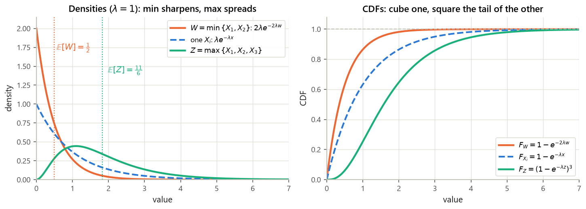
Solution
The rates are $\lambda_1 = 1/10 = 0.1$, $\lambda_2 = 1/20 = 0.05$, $\lambda_3 = 1/30 = 0.03\overline{3}$ per hour. By the rate-addition rule of Example 1.8 Step 5, the minimum is exponential with rate
$$\lambda = 0.1 + 0.05 + 0.0333\overline{3} = 0.1833\overline{3} \text{ per hour}$$
(p_min_machines_rate), so the expected time to first failure is
$$\frac{1}{0.18333\overline{3}} = \frac{60}{11} \approx 5.4545 \text{ hours}$$
(p_min_machines_mean). Note this is well under the shortest individual mean, $10$ hours — three independent ways to fail is much worse than one.
Solution
$F_M(m) = \mathbf{P}(X_1 \le m)\mathbf{P}(X_2 \le m) = (1 - e^{-\lambda m})^2$ for $m \ge 0$. Differentiating with the chain rule, $f_M(m) = 2(1-e^{-\lambda m})\lambda e^{-\lambda m} = 2\lambda e^{-\lambda m} - 2\lambda e^{-2\lambda m}$.
For the mean use the tail formula: $1 - F_M(m) = 1 - (1 - 2e^{-\lambda m} + e^{-2\lambda m}) = 2e^{-\lambda m} - e^{-2\lambda m}$, so $$\mathbb{E}[M] = \int_0^\infty\big(2e^{-\lambda m} - e^{-2\lambda m}\big)dm = \frac{2}{\lambda} - \frac{1}{2\lambda} = \frac{3}{2\lambda}.$$ Harmonic check: $\frac1\lambda(1 + \frac12) = \frac{3}{2\lambda}$ ✓. A cute identity worth noticing: $\mathbb{E}[\max] + \mathbb{E}[\min] = \frac{3}{2\lambda} + \frac{1}{2\lambda} = \frac{2}{\lambda} = \mathbb{E}[X_1] + \mathbb{E}[X_2]$, which must hold because $\max + \min = X_1 + X_2$ pointwise.
1.7 The normal (Gaussian) random variable
The normal is the most important distribution in the subject, for a reason that only becomes visible in G6 (the central limit theorem): sums of many independent contributions look normal regardless of what the contributions look like. L08 slides 6 and 7 present it, leave four blanks — three on slide 6 ($\mathbb{E}[X]$ for the standard normal, then $\mathbb{E}[Y]$ and $\operatorname{var}(Y)$ for $Y = aX+b$) and one on slide 7 (the standardization $\frac{X-\mu}{\sigma} \sim N(\underline{\hspace{1cm}})$) — and assert two facts with "it turns out", plus an unproved "Fact". All of that is settled here.
- $(x-\mu)^2$ measures squared distance from the center. Because it is even in $(x-\mu)$, the density is symmetric about $\mu$: $f_X(\mu + c) = f_X(\mu - c)$.
- $e^{-(\cdot)/2\sigma^2}$ turns distance into decay, and it decays very fast — squared distance in the exponent means the tails die faster than any exponential. Dividing by $\sigma^2$ sets the scale on which "far" is measured: at $|x - \mu| = \sigma$ the exponent is $-1/2$, at $2\sigma$ it is $-2$, at $3\sigma$ it is $-4.5$.
- $\frac{1}{\sigma\sqrt{2\pi}}$ is pure bookkeeping — the unique constant making the area $1$. It is derived below. Its size is dictated by $\sigma$: a narrow bell must be tall, and indeed the peak height is $1/(\sigma\sqrt{2\pi}) = 0.398942/\sigma$ (e.g. $0.398942$ at $\sigma=1$, $0.099736$ at $\sigma=4$ — keys
normal_mu*_peak).
Where $1/\sqrt{2\pi}$ comes from — the Gaussian integral, in full
We must show $I := \int_{-\infty}^{\infty}e^{-x^2/2}dx = \sqrt{2\pi}$; then dividing by $I$ makes the area $1$. The function $e^{-x^2/2}$ has no elementary antiderivative, so the one-dimensional approach is hopeless. The trick is to square the integral and pass to polar coordinates.
Step 1 — square it, writing the second copy in a new variable $y$. $$I^2 = \left(\int_{-\infty}^{\infty}e^{-x^2/2}dx\right)\left(\int_{-\infty}^{\infty}e^{-y^2/2}dy\right) = \int_{-\infty}^{\infty}\!\!\int_{-\infty}^{\infty} e^{-x^2/2}e^{-y^2/2}\,dx\,dy = \int_{-\infty}^{\infty}\!\!\int_{-\infty}^{\infty} e^{-(x^2+y^2)/2}\,dx\,dy,$$ combining the exponentials with $e^{p}e^{q} = e^{p+q}$. The double integral is over the whole plane.
Step 2 — polar coordinates. Put $x = r\cos\theta$, $y = r\sin\theta$ with $r \ge 0$ and $\theta \in [0,2\pi)$. Then $x^2 + y^2 = r^2$ (Pythagoras), and the area element becomes $dx\,dy = r\,dr\,d\theta$ (the Jacobian of the polar map is $r$). So $$I^2 = \int_0^{2\pi}\!\!\int_0^{\infty} e^{-r^2/2}\,r\,dr\,d\theta .$$ The extra factor $r$ is what rescues the computation.
Step 3 — the radial integral. Substitute $s = r^2/2$, so $ds = r\,dr$; when $r = 0$, $s = 0$, and as $r\to\infty$, $s\to\infty$: $$\int_0^{\infty} e^{-r^2/2}\,r\,dr = \int_0^{\infty}e^{-s}\,ds = \big[-e^{-s}\big]_0^{\infty} = 0 - (-1) = 1 .$$
Step 4 — the angular integral. The inner result does not depend on $\theta$, so
$$I^2 = \int_0^{2\pi} 1\,d\theta = 2\pi \quad\Longrightarrow\quad I = \sqrt{2\pi} \approx 2.5066283,$$
taking the positive root since the integrand is positive. Numerically confirmed by quadrature: $\int e^{-x^2/2}dx = 2.5066282746 = \sqrt{2\pi}$ (gauss_integral, sqrt_2pi). Hence $\frac{1}{\sqrt{2\pi}} = 0.398942$ is the required prefactor for $N(0,1)$.
Step 5 — the general case. For $N(\mu,\sigma^2)$, substitute $y = (x-\mu)/\sigma$, so $x = \mu + \sigma y$ and $dx = \sigma\,dy$ (the limits stay $\pm\infty$): $$\int_{-\infty}^{\infty}e^{-(x-\mu)^2/2\sigma^2}dx = \int_{-\infty}^{\infty}e^{-y^2/2}\,\sigma\,dy = \sigma\sqrt{2\pi} .$$ So the normalizing constant is $\frac{1}{\sigma\sqrt{2\pi}} = \frac{1}{\sqrt{2\pi\sigma^2}}$, which is the form in the definition. $\blacksquare$
Blank 1: for the standard normal, $\mathbb{E}[X] = \underline{\hspace{1cm}}$ (with $\operatorname{var}(X) = 1$ given). The answer is $\mathbb{E}[X] = 0$. Proof: with $\varphi(x) = \frac{1}{\sqrt{2\pi}}e^{-x^2/2}$,
$$\mathbb{E}[X] = \int_{-\infty}^{\infty}x\,\varphi(x)\,dx .$$
An antiderivative of $x\varphi(x)$ is $-\varphi(x)$, because $\frac{d}{dx}\Big(-\frac{1}{\sqrt{2\pi}}e^{-x^2/2}\Big) = -\frac{1}{\sqrt{2\pi}}e^{-x^2/2}\cdot(-x) = x\varphi(x)$ by the chain rule. Therefore
$$\mathbb{E}[X] = \big[-\varphi(x)\big]_{-\infty}^{\infty} = 0 - 0 = 0,$$
since $\varphi(x)\to0$ at both ends. (Equivalently: $x\varphi(x)$ is an odd function and is absolutely integrable, so its integral over a symmetric range vanishes.) Confirmed numerically as $0.0$ (stdnormal_mean).
The "it turns out" for the general normal: $\mathbb{E}[X] = \mu$. Substitute $y = (x-\mu)/\sigma$, i.e. $x = \mu + \sigma y$, $dx = \sigma\,dy$: $$\mathbb{E}[X] = \int_{-\infty}^{\infty} x\,\frac{1}{\sigma\sqrt{2\pi}}e^{-(x-\mu)^2/2\sigma^2}dx = \int_{-\infty}^{\infty}(\mu + \sigma y)\,\frac{1}{\sigma\sqrt{2\pi}}e^{-y^2/2}\,\sigma\,dy = \int_{-\infty}^{\infty}(\mu+\sigma y)\varphi(y)\,dy,$$ the two $\sigma$'s cancelling. Splitting the integral, $$= \mu\underbrace{\int\varphi(y)\,dy}_{=\,1\ \text{(normalization)}} + \sigma\underbrace{\int y\,\varphi(y)\,dy}_{=\,0\ \text{(just proved)}} = \mu .$$
The "it turns out" for the variance: $\operatorname{var}(X) = \sigma^2$. Same substitution:
$$\operatorname{var}(X) = \int (x-\mu)^2\frac{1}{\sigma\sqrt{2\pi}}e^{-(x-\mu)^2/2\sigma^2}dx = \int (\sigma y)^2\varphi(y)\,dy = \sigma^2\int y^2\varphi(y)\,dy .$$
It remains to show $\int y^2\varphi(y)dy = 1$ (this is the slide's "$\operatorname{var}(X)=1$" for the standard normal). Integrate by parts with $u = y$ and $dv = y\varphi(y)\,dy$, so $du = dy$ and $v = -\varphi(y)$ (the antiderivative found above):
$$\int_{-\infty}^{\infty}y^2\varphi(y)\,dy = \big[-y\,\varphi(y)\big]_{-\infty}^{\infty} + \int_{-\infty}^{\infty}\varphi(y)\,dy .$$
The boundary term is $0$ because $\varphi$ decays like $e^{-y^2/2}$, which crushes the linear factor $y$ at both ends. The remaining integral is $1$ by normalization. Hence $\int y^2\varphi = 1$ and $\operatorname{var}(X) = \sigma^2$. Numerically: $\operatorname{var} = 1.0$ for the standard normal, and $(2,16)$, $(-1,0.25)$, $(10,9)$ for the three general cases checked (stdnormal_var, normal_mu*_var).
Blanks 2 and 3: if $Y = aX + b$, then $\mathbb{E}[Y] = \underline{\hspace{1cm}}$ and $\operatorname{var}(Y) = \underline{\hspace{1cm}}$. By the general linearity properties of §1.2 (which need no normality at all), $$\boxed{\;\mathbb{E}[Y] = a\mu + b, \qquad \operatorname{var}(Y) = a^2\sigma^2 .\;}$$
The slide's unproved "Fact": $Y = aX+b \sim N(a\mu+b,\ a^2\sigma^2)$. Linearity alone gives the mean and variance; it does not give normality. Here is the CDF argument the slide omits. Assume first that $a > 0$; the case $a < 0$ is handled immediately afterwards, and $a = 0$ is excluded because $Y = b$ is then constant, not normal. For any $y$, $$F_Y(y) = \mathbf{P}(aX + b \le y) = \mathbf{P}\Big(X \le \frac{y-b}{a}\Big) = F_X\Big(\frac{y-b}{a}\Big),$$ dividing by the positive $a$ preserves the inequality. Differentiate in $y$, using the chain rule (the inner derivative is $1/a$): $$f_Y(y) = \frac{1}{a}f_X\Big(\frac{y-b}{a}\Big) = \frac{1}{a}\cdot\frac{1}{\sigma\sqrt{2\pi}}\exp\left\{-\frac{\big(\frac{y-b}{a}-\mu\big)^2}{2\sigma^2}\right\}.$$ Simplify the bracket by putting it over the common denominator $a$: $$\frac{y-b}{a}-\mu = \frac{y - b - a\mu}{a} = \frac{y - (a\mu+b)}{a} \quad\Longrightarrow\quad \Big(\frac{y-b}{a}-\mu\Big)^2 = \frac{\big(y-(a\mu+b)\big)^2}{a^2}.$$ Substituting back, and recalling $a > 0$ so that $a = |a|$, $$f_Y(y) = \frac{1}{|a|\,\sigma\sqrt{2\pi}}\exp\left\{-\frac{\big(y-(a\mu+b)\big)^2}{2a^2\sigma^2}\right\},$$ which is exactly the $N(a\mu+b,\ a^2\sigma^2)$ density with center $a\mu + b$ and scale $|a|\sigma$.
The case $a < 0$. Dividing by a negative number reverses the inequality, so the first line becomes $$F_Y(y) = \mathbf{P}(aX+b \le y) = \mathbf{P}\Big(X \ge \frac{y-b}{a}\Big) = 1 - F_X\Big(\frac{y-b}{a}\Big),$$ using $\mathbf{P}(X \ge c) = 1 - F_X(c)$ (legitimate here because $X$ is continuous, so the point $c$ carries no mass). Differentiating, the minus sign in front and the inner derivative $1/a < 0$ multiply to give $-1/a = 1/|a|$: $$f_Y(y) = -\frac{1}{a}f_X\Big(\frac{y-b}{a}\Big) = \frac{1}{|a|}f_X\Big(\frac{y-b}{a}\Big),$$ and the rest of the algebra is unchanged since only $a^2 = |a|^2$ appears in the exponent. So for every $a \ne 0$, $$\boxed{\;f_Y(y) = \frac{1}{|a|\,\sigma\sqrt{2\pi}}\exp\left\{-\frac{\big(y-(a\mu+b)\big)^2}{2a^2\sigma^2}\right\}, \qquad Y \sim N\big(a\mu+b,\ a^2\sigma^2\big).\;}$$ The $|a|$ matters: with a bare $a$ the prefactor would be negative for $a < 0$, which no density can be. $\blacksquare$ (This is the "normality is preserved by linear transformations" box on B&T p. 154; the technique — write the CDF, then differentiate, minding the sign of the multiplier — is the general derived-distribution method of §4, where the two-case $1/|a|$ formula reappears in full generality, and the monotone-decreasing case is worked again in §3.6 Example 3.10.)
Blank: if $X \sim N(\mu,\sigma^2)$ then $\dfrac{X-\mu}{\sigma} \sim N(\underline{\hspace{1.5cm}})$. The answer is $N(0,1)$. Proof: $\frac{X-\mu}{\sigma}$ is the linear function $aX+b$ with $a = 1/\sigma$ and $b = -\mu/\sigma$. By Example 1.9, it is normal with $$\text{mean} = a\mu + b = \frac{\mu}{\sigma} - \frac{\mu}{\sigma} = 0, \qquad \text{variance} = a^2\sigma^2 = \frac{\sigma^2}{\sigma^2} = 1 .$$ So $Z = \frac{X-\mu}{\sigma} \sim N(0,1)$, whatever $\mu$ and $\sigma$ were. This is standardization, and it is why one table suffices for the entire two-parameter family.
The slide's example: $X \sim N(2,16)$, find $\mathbf{P}(X \le 3)$.
Step 1 — extract $\sigma$. The second parameter is the variance, so $\sigma^2 = 16$ and $\sigma = \sqrt{16} = 4$. (The slide writes the $4$ without comment; this is the [DERIVATION GAP].) The mean is $\mu = 2$.
Step 2 — standardize both sides of the inequality. Subtracting $2$ and dividing by the positive number $4$ leaves the inequality direction unchanged: $$\mathbf{P}(X \le 3) = \mathbf{P}\left(\frac{X-2}{4} \le \frac{3-2}{4}\right) = \mathbf{P}(Z \le 0.25) = \Phi(0.25),$$ where $Z \sim N(0,1)$ by the blank just filled and $\Phi$ denotes its CDF.
Step 3 — read the table. Go to the row $0.2$ and the column $.05$ of the standard normal table: the entry is $\mathbf{0.5987}$. (The slide stops at "CDF(0.25)" without giving the number; this is the rest of the gap.) So
$$\boxed{\;\mathbf{P}(X \le 3) = \Phi(0.25) = 0.5987\;}$$
scipy gives $0.598706$ (slide7_Phi_0.25_scipy), and computing $\mathbf{P}(X\le3)$ directly from the $N(2,16)$ CDF without standardizing gives the same $0.598706$ (slide7_direct) — the standardization is exact, not an approximation.
Sanity check. $3$ is just above the mean $2$, only a quarter of a standard deviation, so the answer should be just above $0.5$. It is. ✓
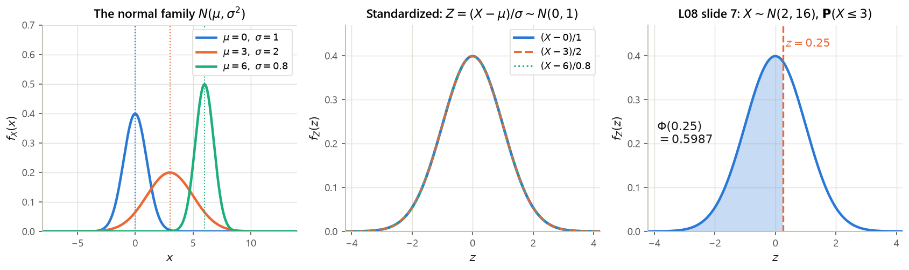
- Identify $\mu$ and $\sigma$. Remember the notation $N(\mu,\sigma^2)$ carries the variance; take a square root.
- Standardize every bound. Replace $\{a \le X \le b\}$ by $\left\{\frac{a-\mu}{\sigma} \le Z \le \frac{b-\mu}{\sigma}\right\}$; subtracting a constant and dividing by the positive $\sigma$ preserves inequalities.
- Express in $\Phi$. $\mathbf{P}(Z \le z) = \Phi(z)$; $\mathbf{P}(Z > z) = 1 - \Phi(z)$; $\mathbf{P}(z_1 \le Z \le z_2) = \Phi(z_2) - \Phi(z_1)$.
- Negative arguments: the table only lists $z \ge 0$. Use the symmetry of the bell,
$$\Phi(-z) = 1 - \Phi(z).$$
Example: $\Phi(-0.5) = 1 - 0.6915 = 0.3085$ (
Phi_minus_0.5, matchingPhi_minus_0.5_via_symmetry). - Read the table: row = $z$ to one decimal, column = the second decimal. E.g. $\Phi(1.71)$: row $1.7$, column $.01$, giving $0.9564$ (
Phi_1.71_table, book p. 155). - Check the sign. If your bound is above the mean the answer must exceed $0.5$; below the mean, less than $0.5$. This catches standardization sign errors instantly.
The L08 table stops at $z = 2.0$; the book's version (p. 155) runs to $3.49$. Beyond that, $\Phi(z) > 0.9998$ and the tail is negligible for hand computation.
normal_P_within_*sigma):
$$\mathbf{P}(|X-\mu| \le \sigma) = 0.682689, \qquad \mathbf{P}(|X-\mu| \le 2\sigma) = 0.954500, \qquad \mathbf{P}(|X-\mu| \le 3\sigma) = 0.997300 .$$
So about $68\%$, $95\%$ and $99.7\%$ — the "68–95–99.7 rule". One-sided: $\mathbf{P}(X > \mu + 2\sigma) = 0.02275$ and $\mathbf{P}(X > \mu+3\sigma) = 0.00135$. Each derivation is one line, e.g. $\mathbf{P}(|X-\mu|\le 2\sigma) = \Phi(2) - \Phi(-2) = 2\Phi(2) - 1 = 2(0.9772) - 1 = 0.9545$.Solution
$\mu = 70$, $\sigma = \sqrt{25} = 5$. Standardize both bounds:
$$z_{\text{lo}} = \frac{65-70}{5} = -1, \qquad z_{\text{hi}} = \frac{80-70}{5} = 2 .$$
Then
$$\mathbf{P}(65 \le X \le 80) = \Phi(2) - \Phi(-1) = \Phi(2) - \big(1 - \Phi(1)\big) = 0.9772 - (1 - 0.8413) = 0.9772 - 0.1587 = 0.8185 .$$
(Table values from L08 slide 7; scipy gives $0.818595$ — key pnorm_answer — so the table rounding costs about $10^{-4}$.) About $82\%$ of the class.
Solution
By Example 1.9's Fact with $a=3$, $b=1$, $\mu=2$, $\sigma^2=16$:
$$\mathbb{E}[Y] = 3(2)+1 = 7, \qquad \operatorname{var}(Y) = 3^2(16) = 144, \qquad Y \sim N(7, 144), \ \sigma_Y = 12 .$$
Then $\mathbf{P}(Y \le 19) = \Phi\big(\frac{19-7}{12}\big) = \Phi(1) = 0.8413$ (pY_*; scipy $0.841345$). Cross-check without the Fact: $Y \le 19 \iff 3X + 1 \le 19 \iff X \le 6$, and $\mathbf{P}(X \le 6) = \Phi\big(\frac{6-2}{4}\big) = \Phi(1)$ ✓ — the same $z$-score, as it must be, since standardizing is itself a linear map.
Solution
Standardizing, $\mathbf{P}(X \ge k\sigma) = \mathbf{P}\big(\frac{X-0}{\sigma} \ge k\big) = 1 - \Phi(k)$ — the $\sigma$ cancels, which is the entire point of standardization. From the table (and normal_P_gt_*sigma):
$$1-\Phi(1) = 0.158655, \qquad 1-\Phi(2) = 0.022750, \qquad 1-\Phi(3) = 0.001350 .$$
By symmetry $\mathbf{P}(|X| \ge k\sigma) = 2\big(1-\Phi(k)\big)$: $0.317311$, $0.045500$, $0.002700$ respectively. In words, reading the two-sided numbers: a normal quantity strays more than two standard deviations from its mean about one time in twenty-two ($1/0.045500 = 22.0$), and more than three about one time in $370$ ($1/0.002700 = 370.4$) — keys normal_odds_abs_gt_2sigma, normal_odds_abs_gt_3sigma. One-sidedly — strays that far above the mean — the same events are one time in $44.0$ and one time in $740.8$ (normal_odds_gt_2sigma, normal_odds_gt_3sigma). Quote whichever you like, but do not mix the two conventions in one sentence.
1.8 Choosing a method
Everything in this section is one of six moves. The chart below is the decision guide; the summary box after it is the reference card.
![A three-column flowchart. The top box asks what you are being asked for, with arrows to three branches: probability of an interval; expectation, expected value of a function, or variance; and the law of a maximum, minimum, or mixed random variable. Each branch leads to a method box — integrate the pdf or difference the CDF; integrate against the pdf; go through the CDF and then differentiate — and then to a shortcut box listing the named-family answers. A footer box says always finish with a sanity check that the density is nonnegative, integrates to one, and that the CDF is nondecreasing from zero to one.](img/g3_s1_flow.png)
Solution
(a) For $0 \le y < 2$: $\{Y \le y\} = \{X \le y\}$, so $F_Y(y) = 1 - e^{-y}$. For $y \ge 2$: $Y \le 2$ always, so $F_Y(y) = 1$. For $y < 0$: $0$.
(b) Mixed: $F_Y(2^-) = 1 - e^{-2} = 0.864665$ while $F_Y(2) = 1$, a jump of $e^{-2} = 0.135335$ — the atom $\mathbf{P}(Y = 2) = \mathbf{P}(X \ge 2) = e^{-2}$ ✓ (exp_lam02_P_gt_10 is the same number $e^{-2}$).
(c) Use the tail formula $\mathbb{E}[Y] = \int_0^\infty \mathbf{P}(Y > y)\,dy$, valid for any nonnegative random variable including mixed ones. Here $\mathbf{P}(Y > y) = e^{-y}$ for $0 \le y < 2$ and $0$ for $y \ge 2$, so $$\mathbb{E}[Y] = \int_0^2 e^{-y}dy = \big[-e^{-y}\big]_0^2 = 1 - e^{-2} = 0.864665 .$$ Sanity: $\mathbb{E}[Y] < \mathbb{E}[X] = 1$, as truncation requires ✓. Compare Practice 1.9 — the same "saturating sensor" structure, with the uniform replaced by an exponential.
| Object | Definition / formula | Source |
|---|---|---|
| $\mathbf{P}(a\le X\le b) = \int_a^b f_X$; $\int_{-\infty}^{\infty}f_X = 1$; $f_X \ge 0$ (may exceed $1$) | L08 s2, B&T §3.1 | |
| density reading | $\mathbf{P}(x \le X \le x+\delta) \approx f_X(x)\,\delta$ — probability per unit length | L08 s2 |
| mean / rule / variance | $\mathbb{E}[X]=\int x f_X$; $\mathbb{E}[g(X)]=\int g f_X$; $\operatorname{var}(X)=\mathbb{E}[X^2]-(\mathbb{E}[X])^2$ | L08 s3, B&T §3.1 |
| CDF | $F_X(x)=\mathbf{P}(X\le x)$; nondecreasing, right-continuous, $0\to1$; $f_X=F_X'$; jump at $x$ $=\mathbf{P}(X=x)$ | L08 s4–5, B&T §3.2 |
| Uniform$[a,b]$ | $f=\frac{1}{b-a}$; $F=\frac{x-a}{b-a}$; $\mathbb{E}=\frac{a+b}{2}$; $\operatorname{var}=\frac{(b-a)^2}{12}$ | L08 s3 |
| Exponential$(\lambda)$ | $f=\lambda e^{-\lambda x}$; $F=1-e^{-\lambda x}$; tail $e^{-\lambda x}$; $\mathbb{E}=\frac1\lambda$; $\operatorname{var}=\frac1{\lambda^2}$; memoryless | rec08 P3, rec09 P2 |
| Normal$(\mu,\sigma^2)$ | $f=\frac{1}{\sigma\sqrt{2\pi}}e^{-(x-\mu)^2/2\sigma^2}$; $\mathbb{E}=\mu$; $\operatorname{var}=\sigma^2$; $aX+b\sim N(a\mu+b,a^2\sigma^2)$ | L08 s6, B&T §3.3 |
| standardizing | $Z=\frac{X-\mu}{\sigma}\sim N(0,1)$; $\mathbf{P}(X\le c)=\Phi\!\big(\frac{c-\mu}{\sigma}\big)$; $\Phi(-z)=1-\Phi(z)$ | L08 s7, B&T §3.3 |
| max / min | $F_{\max}=\prod F_i$; $\mathbf{P}(\min>w)=\prod \mathbf{P}(X_i>w)$; exponential rates add: $\min\sim\text{Exp}(\sum\lambda_i)$ | rec08 P3(d,e), B&T §3.2 |
| mixed r.v. | $F_X=pF_Y+(1-p)F_Z$; $\mathbb{E}[X]=p\,\mathbb{E}[Y]+(1-p)\mathbb{E}[Z]$; no pdf exists | rec08 P2, B&T Problem 3.9 |
| key numbers | $\Phi(0.25)=0.5987$; $68/95/99.7\%$ within $1/2/3\sigma$; $\mathbf{P}(\text{Exp}\le\text{its mean})=1-e^{-1}=0.6321$ | L08 s7 |
What is next. §2 puts two continuous random variables on one page: joint, marginal and conditional densities, and independence (L09, rec09). §3 does Bayes-style inference with densities (L10, rec11). §4 derives the distribution of $g(X)$ and of sums via convolution (L11, rec11) — generalizing the CDF-then-differentiate move used here for $\max$, $\min$ and $aX+b$. §5 is the synthesis and the rec10 quiz-review checkpoint.
§2 Joint, marginal, and conditional PDFs
Sources: L09 slides 3–8 (raster p01–p02) · rec09 P1, P3, P4 (P2, memorylessness, belongs to §1) · B&T §3.4 (joint PDFs, printed pp. 158–163) and B&T §3.5 (conditioning, printed pp. 165–172), B&T Problems 3.22(i) and 3.23 (p. 191)
§1 gave one continuous random variable a density. This section gives two of them one density — a surface $f_{X,Y}(x,y)$ sitting over the plane, whose volume above a region is the probability of landing in that region. Everything in G2 §3–§4 (joint PMFs, conditional PMFs, independence, the total expectation theorem for discrete variables) has an exact analog here, obtained by the same two substitutions used throughout G3: replace $p$ by $f$, and replace $\sum$ by $\int$. What is genuinely new is geometric. A conditional PMF $p_{X|Y}(x|y)$ was a column of a table, rescaled; a conditional PDF $f_{X|Y}(x|y)$ is a vertical slice through a surface, rescaled — and the whole lecture, including the three-panel wireframe picture of L09 slide 6, is about learning to see that slice.
The plan. §2.1 defines the joint PDF and reads it as probability-per-unit-area (the $\delta^2$ rule of L09 slide 3). §2.2 fills the blank that L09 slide 3 leaves after "$f_X(x)\cdot\delta \approx \mathbf{P}(x \le X \le x+\delta) = $" — the marginalization formula — with every step of the argument the slide skips. §2.3 defines the conditional PDF, proves it is a legitimate density, and reproduces the L09 slide 6 picture; it also carries the section's interactive widget. §2.4 is independence, applied at once to Buffon's needle (L09 slide 4), whose two blanks we fill. §2.5 does expectation: $\mathbb{E}[g(X,Y)]$, $\mathbb{E}[X\mid Y=y]$, the total expectation theorem, and the stick-breaking example of L09 slides 7–8, whose three blanks we fill. §2.6–§2.8 are the three recitation problems assigned here — rec09 P1 (an exponential falling in an odd interval), rec09 P3 (uniform on a triangle) and rec09 P4 (the broken stick) — each solved completely, since the recitation solution sheet defers all three to the textbook. §2.9 is the decision guide.
Where this sits in the note: §1 built the one-variable objects (PDF, CDF, uniform, exponential, normal) that every example below uses; §3 turns the conditional densities of §2.3 into the continuous Bayes rule and its four discrete/continuous variations; §4 uses joint PDFs to derive the distribution of functions such as $X+Y$ (convolution); §5 is the synthesis and the rec10 quiz checkpoint. All numbers below come from computes/g3_s2.py (values printed to computes/g3_s2.json).
2.1 The joint PDF, and probability as volume
The $\delta^2$ interpretation (L09 slide 3). The slide states, without proof, $$\mathbf{P}(x \le X \le x+\delta,\ y \le Y \le y+\delta) \;\approx\; f_{X,Y}(x,y)\cdot \delta^2 .$$ Here is why. Apply the definition with $S$ the small square $[x, x+\delta]\times[y,y+\delta]$, of side $\delta \gt 0$: $$\mathbf{P}(x \le X \le x+\delta,\ y \le Y \le y+\delta) \;=\; \int_{y}^{y+\delta}\!\!\int_{x}^{x+\delta} f_{X,Y}(s,t)\,ds\,dt .$$ If $f_{X,Y}$ is continuous at $(x,y)$ then for small $\delta$ its value anywhere in that square is close to its value at the corner, $f_{X,Y}(s,t) \approx f_{X,Y}(x,y)$; a constant integrand comes out of both integrals and what is left is $\int_y^{y+\delta}\!\int_x^{x+\delta} ds\,dt = \delta\cdot\delta = \delta^2$, the area of the square. Hence the claim.
Step 1 — normalization fixes $c$. Integrate over the square, innermost integral first (in $y$, holding $x$ fixed). The antiderivative of $x+y$ with respect to $y$ is $xy + y^2/2$, so
$$\int_0^1 (x+y)\,dy = \Big[xy + \tfrac{y^2}{2}\Big]_{y=0}^{y=1} = \Big(x\cdot 1 + \tfrac{1}{2}\Big) - \big(0+0\big) = x + \tfrac12 .$$
Now integrate that in $x$; the antiderivative of $x+\frac12$ is $\frac{x^2}{2}+\frac{x}{2}$:
$$\int_0^1\Big(x+\tfrac12\Big)dx = \Big[\tfrac{x^2}{2}+\tfrac{x}{2}\Big]_0^1 = \tfrac12+\tfrac12 = 1 .$$
So $\iint c(x+y) = c\cdot 1 = 1$, giving $\boxed{c = 1}$ (key xy_normalization $= 1$). The density is simply $f_{X,Y}(x,y)=x+y$ on the square.
Step 2 — $\mathbf{P}(X+Y\le 1)$, the shaded triangle of Fig. 2.1. The region is $S = \{(x,y): x\ge0,\ y\ge0,\ x+y\le 1\}$. Slice it by vertical lines: for each fixed $x \in [0,1]$, $y$ runs from $0$ up to $1-x$. Hence
$$\mathbf{P}(X+Y\le 1) = \int_0^1\!\!\int_0^{1-x} (x+y)\,dy\,dx .$$
Inner integral (same antiderivative $xy+y^2/2$, now evaluated at the moving upper limit $y=1-x$):
$$\int_0^{1-x}(x+y)\,dy = \Big[xy+\tfrac{y^2}{2}\Big]_{0}^{1-x} = x(1-x) + \frac{(1-x)^2}{2} .$$
Expand and collect, using $(1-x)^2 = 1-2x+x^2$:
$$x - x^2 + \frac{1-2x+x^2}{2} = x - x^2 + \frac12 - x + \frac{x^2}{2} = \frac12 - \frac{x^2}{2} .$$
(The two $x$ terms cancel; the $-x^2 + x^2/2$ leaves $-x^2/2$.) Outer integral, antiderivative $\frac{x}{2}-\frac{x^3}{6}$:
$$\int_0^1\Big(\frac12-\frac{x^2}{2}\Big)dx = \Big[\frac{x}{2}-\frac{x^3}{6}\Big]_0^1 = \frac12-\frac16 = \frac{3-1}{6} = \frac{1}{3} \approx 0.333333 .$$
So $\mathbf{P}(X+Y\le 1) = 1/3$ (key xy_P_sum_le_1 $= 0.333333$). Sanity check on the direction: the triangle is exactly half the square by area, yet it carries only a third of the probability, because the density $x+y$ is smallest near the origin, which is where the triangle lives.
Step 3 — the $\delta^2$ rule, audited. Take $x=y=0.5$ and $\delta = 0.05$. Exactly,
$$\int_{0.5}^{0.55}\!\!\int_{0.5}^{0.55}(s+t)\,ds\,dt = \delta^2\big(x+y+\delta\big) = (0.05)^2(1.05) = 0.002625,$$
while the approximation gives $f_{X,Y}(0.5,0.5)\,\delta^2 = (0.5+0.5)(0.0025) = 0.002500$ (keys xy_delta_exact, xy_delta_approx). The relative error is $0.002625/0.002500 = 1.05$, i.e. $5\%$, and it is exactly $\delta/(x+y) = 0.05/1$ — first order in $\delta$, as the derivation predicts. Halve $\delta$ and the error halves.
![Left panel: a blue heat map of the density x plus y over the unit square, light at the origin and dark at the corner (1,1), with white contour lines; the lower-left triangle bounded by the line x plus y equals 1 is outlined in orange and hatched, with a white callout box reading S equals the set where x plus y is at most 1, and P of (X,Y) in S equals one third. Right panel: a magnified swatch of the same density with a small orange square of side delta drawn on it, double-headed arrows labeling both sides delta, the corner point labeled (x,y), and two boxes above stating the delta-squared approximation and the numerical check exact 0.002625 versus approximation 0.002500, ratio 1.05.](img/g3_s2_jointregion.png)
computes/g3_s2.py, keys xy_*.- $f_{X,Y}(x,y)$ is not a probability, and is not bounded by $1$. In Example 2.1 it reaches $2$ at $(1,1)$; a uniform density on a small region is huge. Only integrals of it are probabilities.
- $\mathbf{P}(X=x,\ Y=y) = 0$ for every single point, and indeed $\mathbf{P}\big((X,Y)\in S\big)=0$ for every region $S$ of zero area — a line, a curve, a point. So $\mathbf{P}(X = Y) = 0$ whenever $(X,Y)$ is jointly continuous, because the diagonal is a line.
- Two continuous random variables need not be jointly continuous. If $Y = X$ exactly, then $X$ and $Y$ each have a perfectly good one-dimensional PDF, but the random point $(X,Y)$ lives on the diagonal line, a set of zero area; no surface $f_{X,Y}$ can give that line probability $1$. Joint continuity is a genuine extra assumption (B&T §3.4 p. 158).
Solution
The region is the rectangle $[\frac12,1]\times[0,\frac12]$, so the limits are constants:
$$\mathbf{P} = \int_{1/2}^{1}\!\!\int_{0}^{1/2}(x+y)\,dy\,dx .$$
Inner: $\big[xy+\frac{y^2}{2}\big]_{0}^{1/2} = \frac{x}{2} + \frac{1}{8}$. Outer, antiderivative $\frac{x^2}{4}+\frac{x}{8}$:
$$\int_{1/2}^{1}\Big(\frac{x}{2}+\frac18\Big)dx = \Big[\frac{x^2}{4}+\frac{x}{8}\Big]_{1/2}^{1} = \Big(\frac14+\frac18\Big)-\Big(\frac{1}{16}+\frac{1}{16}\Big) = \frac38 - \frac18 = \frac14 = 0.25 .$$
(Key pq_xy_quadrant $=0.25$.) The uniform density would give the plain area, $\frac12\cdot\frac12 = \frac14$ — the same number. Coincidence, not principle: the rectangle is positioned so that its excess density in $x$ ($x\ge\frac12$) exactly offsets its deficit in $y$ ($y\le\frac12$), by the symmetry $f_{X,Y}(x,y)=f_{X,Y}(y,x)$.
Solution
The disk has area $\pi(1)^2 = \pi$, so $f_{X,Y}(x,y) = 1/\pi \approx 0.318310$ inside it and $0$ outside (key pq_disk_f). Since the density is uniform, every probability is a ratio of areas.
$\{X^2+Y^2\le \frac14\}$ is the concentric disk of radius $\frac12$, of area $\pi(\frac12)^2 = \pi/4$. Hence $\mathbf{P} = \frac{\pi/4}{\pi} = \frac14 = 0.25$. Note the radius halves but the probability quarters — area is quadratic in radius.
$\{Y \gt X\}$ is the half-plane above the diagonal; it cuts the disk into two congruent halves, so $\mathbf{P} = \frac12$. (The boundary line $Y=X$ has zero area and so contributes nothing, per Gotcha item 2.)
2.2 From the joint to the marginal
L09 slide 3 writes the line
$$f_X(x)\cdot\delta \;\approx\; \mathbf{P}(x \le X \le x+\delta) \;=\; \underline{\hspace{5em}}$$and stops: the right-hand side is blank on the slide, and the marginalization formula is never printed. Here is the missing argument, in full.
Derivation, one step per line. The event $\{x \le X \le x+\delta\}$ places no restriction at all on $Y$, so as an event about the pair it is the vertical strip $S_\delta = [x,x+\delta]\times(-\infty,\infty)$. Therefore:
$$\begin{aligned} \mathbf{P}(x \le X \le x+\delta) &= \mathbf{P}\big(x \le X \le x+\delta,\ -\infty \lt Y \lt \infty\big) &&\text{the second condition is certain}\\[2pt] &= \int_{-\infty}^{\infty}\!\!\int_{x}^{x+\delta} f_{X,Y}(s,y)\,ds\,dy &&\text{definition of the joint PDF applied to } S_\delta\\[2pt] &\approx \int_{-\infty}^{\infty} \Big(\delta\, f_{X,Y}(x,y)\Big) dy &&\text{inner integral over a strip of width }\delta:\ f_{X,Y}(s,y)\approx f_{X,Y}(x,y)\\[2pt] &= \delta \int_{-\infty}^{\infty} f_{X,Y}(x,y)\,dy &&\delta \text{ does not depend on } y, \text{ so it comes out}. \end{aligned}$$Compare with the one-variable rule $\mathbf{P}(x\le X\le x+\delta)\approx f_X(x)\,\delta$ from §1. The two right-hand sides must agree for every small $\delta$; dividing both by $\delta$ and letting $\delta \to 0$, $$f_X(x) = \int_{-\infty}^{\infty} f_{X,Y}(x,y)\,dy . \qquad\blacksquare$$ The same computation with a horizontal strip gives $f_Y$. (B&T p. 159 reaches it slightly differently, by writing $\mathbf{P}(X\in A) = \int_A\!\int_{-\infty}^{\infty} f_{X,Y}(x,y)\,dy\,dx$ and matching against $\mathbf{P}(X \in A) = \int_A f_X(x)\,dx$; same conclusion.)
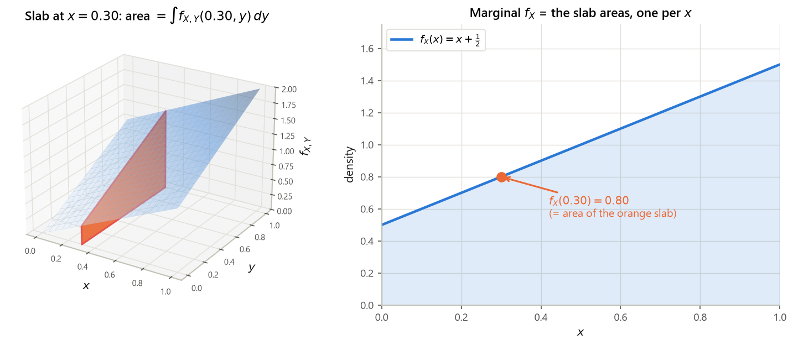
Marginal of $X$. For $0\le x\le 1$, integrate $y$ out over the support $0\le y\le 1$ — the density is zero outside, so those are the only limits that contribute: $$f_X(x) = \int_0^1 (x+y)\,dy = \Big[xy+\frac{y^2}{2}\Big]_0^1 = x + \frac12 ,$$ and $f_X(x)=0$ outside $[0,1]$. Check: $\int_0^1(x+\frac12)dx = \frac12+\frac12 = 1$ ✓. By the symmetry $f_{X,Y}(x,y)=f_{X,Y}(y,x)$, also $f_Y(y) = y+\frac12$.
Mean of $X$. Using the one-variable rule $\mathbb{E}[X] = \int x f_X(x)dx$ from §1, with antiderivative $\frac{x^3}{3}+\frac{x^2}{4}$:
$$\mathbb{E}[X] = \int_0^1 x\Big(x+\frac12\Big)dx = \int_0^1\Big(x^2+\frac{x}{2}\Big)dx = \Big[\frac{x^3}{3}+\frac{x^2}{4}\Big]_0^1 = \frac13+\frac14 = \frac{4+3}{12} = \frac{7}{12} \approx 0.583333 .$$
(Key xy_EX.) It exceeds $\frac12$, as it must: the density leans toward large $x$. By symmetry $\mathbb{E}[Y]=\frac{7}{12}$ too.
Second moment and variance. $\displaystyle\mathbb{E}[X^2]=\int_0^1 x^2(x+\tfrac12)dx = \Big[\frac{x^4}{4}+\frac{x^3}{6}\Big]_0^1 = \frac14+\frac16=\frac{5}{12}$, so
$$\operatorname{var}(X) = \mathbb{E}[X^2]-\big(\mathbb{E}[X]\big)^2 = \frac{5}{12}-\frac{49}{144} = \frac{60-49}{144} = \frac{11}{144} \approx 0.076389$$
(keys xy_EX2, xy_varX), using the identity from G2 §3.
Are $X$ and $Y$ independent? No: $f_X(x)f_Y(y) = (x+\frac12)(y+\frac12) = xy+\frac{x}{2}+\frac{y}{2}+\frac14$, which is not $x+y$. A cleaner symptom (anticipating §2.4): compute $\mathbb{E}[XY]$ by the two-dimensional expected value rule of §2.5,
$$\mathbb{E}[XY]=\int_0^1\!\!\int_0^1 xy(x+y)\,dx\,dy = \int_0^1\!\!\int_0^1 (x^2y+xy^2)\,dx\,dy = \int_0^1\Big(\frac{y}{3}+\frac{y^2}{2}\Big)dy = \frac16+\frac16=\frac13 ,$$
whereas $\mathbb{E}[X]\mathbb{E}[Y] = \big(\frac{7}{12}\big)^2 = \frac{49}{144} \approx 0.340278$. The difference,
$$\operatorname{cov}(X,Y) = \frac13-\frac{49}{144} = \frac{48-49}{144} = -\frac{1}{144} \approx -0.006944 ,$$
is negative (keys xy_EXY, xy_cov): given a large $X$, the density $x+y$ is relatively flat in $y$, so $Y$ is pushed back toward $\frac12$ — mild negative dependence. §2.3 makes this precise.
Solution
Fix $x$ with $|x| \le 1$. The disk requires $x^2+y^2\le 1$, i.e. $|y| \le \sqrt{1-x^2}$. So the support slice is the interval $\big[-\sqrt{1-x^2},\,\sqrt{1-x^2}\big]$, of length $2\sqrt{1-x^2}$, and the density is the constant $1/\pi$ on it: $$f_X(x) = \int_{-\sqrt{1-x^2}}^{\sqrt{1-x^2}} \frac{1}{\pi}\,dy = \frac{1}{\pi}\cdot 2\sqrt{1-x^2} = \frac{2}{\pi}\sqrt{1-x^2}, \qquad -1\le x\le 1 ,$$ and $0$ otherwise. This is the semicircle density — note that it is not uniform, even though the joint density is: uniformity on a non-rectangular region does not survive marginalization, because the slices have different lengths.
Check: $\int_{-1}^{1}\frac{2}{\pi}\sqrt{1-x^2}\,dx = \frac{2}{\pi}\cdot\frac{\pi}{2} = 1$ ✓, since $\int_{-1}^1\sqrt{1-x^2}\,dx$ is the area of a half-disk of radius 1, namely $\pi/2$. As a bonus, $\mathbb{E}[X]=0$ by symmetry and $\mathbb{E}[X^2] = \int_{-1}^1 x^2\frac{2}{\pi}\sqrt{1-x^2}dx = \frac14 = 0.25$ (key pq_disk_EX2), so $\operatorname{var}(X)=1/4$.
Solution
Normalization. $\int_0^1\!\int_0^1 6xy^2 dy\,dx = \int_0^1 6x\big[\frac{y^3}{3}\big]_0^1 dx = \int_0^1 2x\,dx = \big[x^2\big]_0^1 = 1$ ✓.
Marginals. $f_X(x)=\int_0^1 6xy^2 dy = 6x\cdot\frac13 = 2x$ on $[0,1]$; $f_Y(y)=\int_0^1 6xy^2 dx = 6y^2\cdot\frac12 = 3y^2$ on $[0,1]$.
Independent? $f_X(x)f_Y(y) = (2x)(3y^2) = 6xy^2 = f_{X,Y}(x,y)$ for all $(x,y)$ — yes. The tell was visible from the start: the density factors as (a function of $x$) × (a function of $y$) and the support is a rectangle. Contrast Example 2.2, where $x+y$ is a sum and does not factor.
2.3 Conditional PDFs: the renormalized slice
Conditioning on $\{Y=y\}$ looks illegal: that event has probability zero, and G1 §2 defined $\mathbf{P}(A\mid B)$ only for $\mathbf{P}(B)\gt0$. L09 slide 5 handles this by refusing to define the conditional probability and defining the conditional density instead, by analogy.
The analogy (L09 slide 5). One variable: $\mathbf{P}(x\le X\le x+\delta) \approx f_X(x)\cdot\delta$. We would like a function $f_{X|Y}(\cdot\mid y)$ with the corresponding property $$\mathbf{P}\big(x\le X\le x+\delta \,\big|\, Y \approx y\big) \;\approx\; f_{X|Y}(x\mid y)\cdot\delta ,$$ where "$Y\approx y$" abbreviates the honest, positive-probability event $\{y \le Y \le y+\delta\}$. Compute that conditional probability by the definition of conditional probability, then apply the $\delta^2$ rule to the numerator and the $\delta$ rule to the denominator:
$$\mathbf{P}\big(x\le X\le x+\delta \,\big|\, y\le Y\le y+\delta\big) = \frac{\mathbf{P}(x\le X\le x+\delta,\ y\le Y\le y+\delta)}{\mathbf{P}(y\le Y\le y+\delta)} \approx \frac{f_{X,Y}(x,y)\,\delta^2}{f_Y(y)\,\delta} = \frac{f_{X,Y}(x,y)}{f_Y(y)}\cdot\delta .$$The $\delta$'s do not fully cancel — one survives, exactly as the analogy demanded. Matching the two displays identifies the bracket, and that is the definition.
Why it is a legitimate PDF. Two things must hold. Nonnegativity is immediate: numerator and denominator are both $\ge 0$ and the denominator is $\gt 0$. Normalization is where the marginal formula of §2.2 does its work: $$\int_{-\infty}^{\infty} f_{X|Y}(x\mid y)\,dx = \int_{-\infty}^{\infty}\frac{f_{X,Y}(x,y)}{f_Y(y)}\,dx = \frac{1}{f_Y(y)}\int_{-\infty}^{\infty} f_{X,Y}(x,y)\,dx = \frac{f_Y(y)}{f_Y(y)} = 1 ,$$ pulling the constant $1/f_Y(y)$ (constant in $x$) out of the integral and then recognizing the marginal $f_Y(y)=\int f_{X,Y}(x,y)dx$. $\blacksquare$
- Shape is inherited, scale is not. $f_{X|Y}(x\mid y)$ is proportional to $f_{X,Y}(x,y)$ as a function of $x$; the constant $1/f_Y(y)$ does not depend on $x$. So to find a conditional density you may ignore all $x$-free factors and normalize at the end.
- The support shrinks. Wherever the slice is zero, the conditional density is zero. This is why the triangle problems in §2.5 and §2.7 have conditional densities living on intervals whose endpoints move with $y$.
- The family of slices is the whole joint distribution. Knowing $f_Y$ and all the conditionals $f_{X|Y}(\cdot\mid y)$ reconstructs $f_{X,Y}$ by the multiplication rule — nothing is lost, unlike marginalization.
![Three three-dimensional wireframe panels. Panel a: a green mesh over the unit square carrying a single tall bell-shaped peak, with a thick red curve ruled across the surface at x equals 0.44 marking one cut. Panel b: the same surface drawn faintly, with a single solid orange vertical fin standing on the cut line, its outline red; the title states that the area of this slice equals f_X of 0.44 equals 1.126. Panel c: a flat grid carrying a row of six blue vertical fins at increasing values of x, each of area one but of different heights and shapes, representing the renormalized conditional densities.](img/g3_s2_slice.png)
- Sketch the support of $f_{X,Y}$ in the $(x,y)$ plane. Everything below reads off that sketch.
- Draw the slice. Fix the conditioning value $y$ and draw the horizontal line at that height. The part of it inside the support is the range of $x$ on which $f_{X|Y}(\cdot\mid y)$ lives; write down its endpoints as functions of $y$.
- Get the normalizer. Either compute $f_Y(y) = \int f_{X,Y}(x,y)\,dx$ over exactly those endpoints, or — equivalent and often faster — treat $f_{X,Y}(x,y)$ as a function of $x$ alone, drop every factor that does not involve $x$, and choose the constant that makes the integral $1$.
- Divide: $f_{X|Y}(x\mid y) = f_{X,Y}(x,y)/f_Y(y)$ on that range, $0$ elsewhere.
- Check that it integrates to $1$ in $x$, and that its support endpoints depend on $y$ the way the sketch says.
- Recognize the shape. If the slice is constant in $x$, the conditional is uniform on the slice — which is the case for every uniform-on-a-region model (§2.5, §2.7).
Read off the dependence. At $y=0$ the conditional is $f_{X|Y}(x\mid 0) = 2x$: a triangular density leaning right. At $y=1$ it is $\frac{x+1}{1.5}$, much closer to flat. So large $Y$ flattens the conditional distribution of $X$ toward uniform, which drags its mean down toward $\frac12$; small $Y$ tilts it toward large $x$. That is the negative covariance of Example 2.2, seen directly. Conditional means (computed in §2.5): $\mathbb{E}[X\mid Y=0]=\frac23 \approx 0.666667$, $\mathbb{E}[X\mid Y=0.5]=\frac{7}{12}\approx 0.583333$, $\mathbb{E}[X\mid Y=1]=\frac59 \approx 0.555556$ (keys xy_EXgY_*) — strictly decreasing in $y$.
- $f_{X|Y}(x\mid y)$ is not a conditional probability. The event $\{Y=y\}$ has probability $0$ and $\mathbf{P}(X\le x\mid Y=y)$ is not defined by G1 §2. What is defined is the density, via the limiting argument above; probabilities are then recovered by integrating it: $\mathbf{P}(X\in B\mid Y=y) := \int_B f_{X|Y}(x\mid y)\,dx$.
- Undefined where the marginal vanishes. If $f_Y(y)=0$ the definition is $0/0$ and $f_{X|Y}(\cdot\mid y)$ simply is not defined — reasonably, since such a $y$ never occurs.
- Conditioning on $\{Y=y\}$ and on $\{Y\approx y\}$ can differ if you are careless about which "$\approx$" you mean. The limit taken above shrinks a rectangle; other shrinking families can give other answers (the Borel–Kolmogorov paradox). For everything in 6.041 the definition above is the intended one.
- Do not divide by the wrong marginal. $f_{X|Y}(x\mid y)$ has $f_Y$ in the denominator, not $f_X$ — the variable being conditioned on. Checking that the result integrates to $1$ in $x$ catches this immediately.
Solution
$f_Y(y)=3y^2$, so for any $y\in(0,1]$, $$f_{X|Y}(x\mid y) = \frac{6xy^2}{3y^2} = 2x, \qquad 0\le x\le 1 .$$ The $y$'s cancel completely, so the conditional density does not depend on $y$ at all — and it equals the marginal $f_X(x)=2x$. That is the signature of independence (§2.4): all the slices have the same shape, so learning $Y$ tells you nothing about $X$.
Solution
Support sketch: the wedge above the diagonal, $0\lt x\lt y\lt\infty$. For a fixed $y\gt0$, $x$ runs over $(0,y)$.
Marginal. The integrand does not involve $x$, so integrating it over an interval of length $y$ just multiplies by $y$: $$f_Y(y) = \int_0^{y}\frac{1}{y}e^{-y}\,dx = \frac{e^{-y}}{y}\Big[x\Big]_0^{y} = \frac{e^{-y}}{y}\cdot y = e^{-y}, \qquad y\gt0 .$$ So $Y$ is exponential with parameter $\lambda=1$ (§1) — and, incidentally, $\int_0^\infty e^{-y}dy = 1$ ✓.
Conditional. $\displaystyle f_{X|Y}(x\mid y) = \frac{\frac{1}{y}e^{-y}}{e^{-y}} = \frac1y$ for $0\lt x\lt y$: uniform on $(0,y)$. Constant in $x$, exactly as the Recipe's step 6 predicts, since the joint density was constant along each horizontal slice. Hence $\mathbb{E}[X\mid Y=y]=y/2$, and by the total expectation theorem of §2.5, $\mathbb{E}[X] = \mathbb{E}[Y]/2 = 1/2$.
2.4 Independence, and Buffon's needle
- $f_{X,Y}(x,y) = f_X(x)f_Y(y)$ for all $x,y$;
- $f_{X|Y}(x\mid y) = f_X(x)$ for all $x$ and all $y$ with $f_Y(y)\gt0$;
- $\mathbf{P}(X\in A,\ Y\in B) = \mathbf{P}(X\in A)\mathbf{P}(Y\in B)$ for all sets $A, B$.
Proof of (1) $\Leftrightarrow$ (2), which is the one L09 slide 5 states. If (1) holds then for any $y$ with $f_Y(y)\gt 0$, $$f_{X|Y}(x\mid y) = \frac{f_{X,Y}(x,y)}{f_Y(y)} = \frac{f_X(x)f_Y(y)}{f_Y(y)} = f_X(x),$$ cancelling the common factor $f_Y(y)$ — this is exactly the last bullet of L09 slide 5. Conversely, if $f_{X|Y}(x\mid y)=f_X(x)$ for all such $y$, multiply the definition of the conditional density through by $f_Y(y)$ to get $f_{X,Y}(x,y) = f_{X|Y}(x\mid y)f_Y(y) = f_X(x)f_Y(y)$, which is (1). $\blacksquare$
Proof that $\mathbb{E}[XY]=\mathbb{E}[X]\mathbb{E}[Y]$ under independence. Using the expected value rule of §2.5 and factoring the double integral into a product of single integrals — legitimate because each factor depends on only one variable: $$\mathbb{E}[XY] = \int\!\!\int xy\,f_X(x)f_Y(y)\,dx\,dy = \Big(\int x f_X(x)\,dx\Big)\Big(\int y f_Y(y)\,dy\Big) = \mathbb{E}[X]\,\mathbb{E}[Y]. \qquad\blacksquare$$
Step 1 — the model, and what "at random" means. Two numbers determine the outcome (Fig. 2.4, left):
- $X$ = the perpendicular distance from the midpoint of the needle to the nearest line. Since the lines are $d$ apart, the farthest a point can be from the nearest line is half the gap, so $X\in[0,d/2]$.
- $\Theta$ = the acute angle between the needle and the direction of the lines, $\Theta\in[0,\pi/2]$. (Angles in $(\pi/2,\pi)$ are handled by symmetry: reflecting the needle gives the same crossing behavior, so we may fold the range.)
The modeling assumption of the slide is: $X$ and $\Theta$ are uniform on their ranges and independent. Uniform on $[0,d/2]$ means $f_X(x) = \dfrac{1}{d/2} = \dfrac{2}{d}$ on that interval; uniform on $[0,\pi/2]$ means $f_\Theta(\theta) = \dfrac{1}{\pi/2}=\dfrac{2}{\pi}$.
Step 2 — the joint density (the first blank on L09 slide 4). The slide writes "$f_{X,\Theta}(x,\theta) = \underline{\quad}$, $0\le x\le d/2$, $0\le\theta\le\pi/2$" and leaves the value blank. By independence the joint density is the product of the marginals: $$\boxed{\,f_{X,\Theta}(x,\theta) = f_X(x)\,f_\Theta(\theta) = \frac{2}{d}\cdot\frac{2}{\pi} = \frac{4}{\pi d}\,}, \qquad 0\le x\le \frac d2,\ 0\le\theta\le\frac\pi2,$$ and $0$ elsewhere. Sanity check on normalization: the rectangle has area $\frac d2\cdot\frac\pi2 = \frac{\pi d}{4}$, and $\frac{4}{\pi d}\cdot\frac{\pi d}{4}=1$ ✓. Equivalently: the pair $(X,\Theta)$ is uniform on the rectangle $[0,d/2]\times[0,\pi/2]$, so all probabilities below are ratios of areas.
Step 3 — the geometric condition. Project the needle onto the direction perpendicular to the lines. Half the needle, of length $\ell/2$, has perpendicular extent $\frac{\ell}{2}\sin\theta$. The needle reaches the nearest line exactly when that extent is at least the distance to it: $$\text{intersection} \iff X \le \frac{\ell}{2}\sin\Theta .$$ (The assumption $\ell\lt d$ guarantees the needle can meet at most one line, so "intersects a line" is this single condition and there is no double counting.)
Step 4 — the double integral, with the step the slide performs silently. The event is the region under the sine curve in Fig. 2.4, right. Integrate the joint density over it, taking $\theta$ as the outer variable so that the inner limits in $x$ are $0$ to $\frac{\ell}{2}\sin\theta$: $$\begin{aligned} \mathbf{P}\Big(X\le \tfrac{\ell}{2}\sin\Theta\Big) &= \int_0^{\pi/2}\!\!\int_0^{(\ell/2)\sin\theta} f_X(x)\,f_\Theta(\theta)\,dx\,d\theta &&\text{joint }=\text{ product, by independence}\\[2pt] &= \int_0^{\pi/2}\!\!\int_0^{(\ell/2)\sin\theta} \frac{4}{\pi d}\,dx\,d\theta &&\text{substituting } \tfrac2d\cdot\tfrac2\pi = \tfrac{4}{\pi d}\ \text{(the slide's unexplained constant)}\\[2pt] &= \frac{4}{\pi d}\int_0^{\pi/2}\!\!\int_0^{(\ell/2)\sin\theta} dx\,d\theta &&\text{a constant integrand pulls out of both integrals}\\[2pt] &= \frac{4}{\pi d}\int_0^{\pi/2} \Big[x\Big]_0^{(\ell/2)\sin\theta} d\theta = \frac{4}{\pi d}\int_0^{\pi/2}\frac{\ell}{2}\sin\theta\,d\theta &&\text{inner integral: antiderivative } x\\[2pt] &= \frac{4}{\pi d}\cdot\frac{\ell}{2}\int_0^{\pi/2}\sin\theta\,d\theta = \frac{2\ell}{\pi d}\Big[-\cos\theta\Big]_0^{\pi/2} &&\text{antiderivative of } \sin\theta \text{ is } -\cos\theta\\[2pt] &= \frac{2\ell}{\pi d}\Big(-\cos\tfrac\pi2 + \cos 0\Big) = \frac{2\ell}{\pi d}\big(0+1\big) = \boxed{\dfrac{2\ell}{\pi d}} . \end{aligned}$$ The slide compresses the last three lines into one; the value $\int_0^{\pi/2}\sin\theta\,d\theta = 1$ is the only nontrivial ingredient.
Step 5 — numbers, and the $\pi$ machine. With $\ell=d$ (the longest allowed needle) the probability is $2/\pi \approx 0.636620$; with $\ell = d/2$ it is $1/\pi\approx 0.318310$; with $\ell=d/4$, $0.159155$ (keys buffon_p_l_over_d_*). A simulation of $N=4{,}000{,}000$ throws at $\ell/d = 1/2$ (seed 6041) gave $\hat p = 0.318661$ against the exact $0.318310$ — agreement to $3.5\times10^{-4}$, about one Monte-Carlo standard error (keys buffon_mc_*). Inverting the formula turns the experiment into an estimate of $\pi$:
$$\pi \approx \frac{2\ell}{d\,\hat p} = \frac{2(0.5)}{1\cdot 0.318661} = 3.138131 ,$$
which is Buffon's famous point, and the reason B&T calls this "the origin of the field of geometric probability."
![Left panel: a schematic of three horizontal parallel lines with a double-headed arrow labeled d spanning one gap; a thick black needle labeled 'needle, length ell' crosses the middle line at an acute angle marked with a blue arc labeled theta, and a short orange dashed segment from the needle's midpoint up to the line is labeled x; a box below reads 'crosses if and only if x is at most (ell/2) sin theta'. Right panel: the rectangle from theta = 0 to pi/2 and x = 0 to d/2, with the area under the curve x = (ell/2) sin theta shaded orange and labeled CROSS, the rest labeled NO CROSS, and a box giving the constant joint density 4/(pi d) and the answer 2 ell/(pi d) = 0.3183.](img/g3_s2_buffon.png)
buffon_*).Solution
With $\ell = d$: $\mathbf{P} = \frac{2\ell}{\pi d} = \frac{2}{\pi} \approx 0.636620$ (key pq_buffon_l_eq_d). Notice this is the largest value the formula can produce under the standing assumption $\ell\le d$; at $\ell=d$ the sine curve in Fig. 2.4 just touches the top edge $x=d/2$ at $\theta=\pi/2$.
If $\ell \gt d$ the formula would eventually exceed $1$ (at $\ell/d = \pi/2 \approx 1.571$), which is impossible. Two things break simultaneously: (i) the needle can cross two or more lines, so "intersects a line" is no longer the single condition $X\le\frac\ell2\sin\Theta$, and the double integral is counting crossings rather than events; (ii) the curve $x=\frac{\ell}{2}\sin\theta$ leaves the rectangle $x\le d/2$, so the inner limits are $\min\{\frac\ell2\sin\theta,\ d/2\}$, not $\frac\ell2\sin\theta$. The correct long-needle answer is a different, messier formula. What remains exactly true for any $\ell$ is that the expected number of crossings is $2\ell/(\pi d)$.
Solution
By independence, $f_{X,Y}(x,y) = \lambda_X e^{-\lambda_X x}\cdot\lambda_Y e^{-\lambda_Y y} = 1\cdot e^{-x}\cdot 2e^{-2y}$ on the quarter-plane $x,y\ge0$. Integrate over $\{x \lt y\}$, taking $x$ outside and $y$ from $x$ to $\infty$:
$$\mathbf{P}(X\lt Y) = \int_0^\infty e^{-x}\Big(\int_x^\infty 2e^{-2y}dy\Big)dx .$$
Inner integral, antiderivative $-e^{-2y}$: $\big[-e^{-2y}\big]_x^{\infty} = 0-(-e^{-2x}) = e^{-2x}$ — which is just $\mathbf{P}(Y\gt x)$, the exponential tail from §1. Hence
$$\mathbf{P}(X\lt Y) = \int_0^\infty e^{-x}e^{-2x}dx = \int_0^\infty e^{-3x}dx = \Big[-\tfrac13 e^{-3x}\Big]_0^\infty = \tfrac13 \approx 0.333333 .$$
(Keys pq_expo_PXlY, pq_expo_PXlY_num.) In general $\mathbf{P}(X\lt Y) = \dfrac{\lambda_X}{\lambda_X+\lambda_Y}$ — here $\frac{1}{1+2}=\frac13$ — a formula worth memorizing: the faster clock wins in proportion to its rate.
2.5 Expectation, conditional expectation, and the stick-breaking example
Why linearity needs nothing. Take $g(x,y)=ax+by+c$ and split the integral into three: $$\mathbb{E}[aX+bY+c] = a\iint x f_{X,Y} + b\iint y f_{X,Y} + c\iint f_{X,Y} .$$ In the first term, integrate out $y$ first: $\iint x f_{X,Y}(x,y)\,dy\,dx = \int x\big(\int f_{X,Y}(x,y)dy\big)dx = \int x f_X(x)dx = \mathbb{E}[X]$, using the marginalization formula of §2.2. Symmetrically the second term is $\mathbb{E}[Y]$, and the third is $c\cdot 1$ by normalization. Hence the claim. Dependence never entered — it is the marginals that decide $\mathbb{E}[X]$ and $\mathbb{E}[Y]$.
Derivation. Substitute the definition and swap the order of integration: $$\begin{aligned} \int \mathbb{E}[X\mid Y=y]\,f_Y(y)\,dy &= \int\Big(\int x\,f_{X|Y}(x\mid y)\,dx\Big) f_Y(y)\,dy &&\text{definition of }\mathbb{E}[X\mid Y=y]\\[2pt] &= \int\!\!\int x\,f_{X|Y}(x\mid y)\,f_Y(y)\,dx\,dy &&f_Y(y) \text{ is constant in } x, \text{ so it moves inside}\\[2pt] &= \int\!\!\int x\, f_{X,Y}(x,y)\,dx\,dy &&\text{multiplication rule } f_{X|Y}f_Y = f_{X,Y}\\[2pt] &= \int x\Big(\int f_{X,Y}(x,y)\,dy\Big)dx &&\text{Fubini: swap the order; } x \text{ does not depend on } y\\[2pt] &= \int x\, f_X(x)\,dx = \mathbb{E}[X] &&\text{marginalization (§2.2), then the definition of } \mathbb{E}[X]. \end{aligned}$$ The total-probability version is the same chain stopped one step earlier: $\int f_{X|Y}(x\mid y)f_Y(y)dy = \int f_{X,Y}(x,y)dy = f_X(x)$. $\blacksquare$ Both are word-for-word the discrete statements of G2 §3–§4 with $\sum_y \to \int dy$ and $p\to f$.
(The slide prints "$X$: uniform in $[0,1]$", but every formula on it — $f_{X,Y}=1/(\ell x)$, $f_Y = \frac1\ell\log\frac\ell y$, $\mathbb{E}[Y]=\ell/4$ — requires $[0,\ell]$. Read it as $[0,\ell]$; this is a typo on the original slide.)
Step 1 — the two given densities. $X$ uniform on $[0,\ell]$ gives $f_X(x) = 1/\ell$ for $0\le x\le\ell$. Given $X=x$, $Y$ is uniform on $[0,x]$, an interval of length $x$, so $$f_{Y|X}(y\mid x) = \frac1x, \qquad 0\le y\le x .$$ Note it is taller than $f_X$ whenever $x\lt\ell$ — the picture on the slide, where the second box is narrower and higher than the first.
Step 2 — the joint PDF (the first blank). By the multiplication rule, $$\boxed{\,f_{X,Y}(x,y) = f_X(x)\,f_{Y|X}(y\mid x) = \frac1\ell\cdot\frac1x = \frac{1}{\ell x}\,}$$ on the set $\{(x,y): 0\le y\le x\le\ell\}$, and $0$ elsewhere. The support is the triangle with vertices $(0,0)$, $(\ell,0)$, $(\ell,\ell)$ — the region below the diagonal $y=x$ and left of $x=\ell$ (Fig. 2.5, left), exactly the shaded sketch on the slide. Two remarks. The density is not uniform: it blows up like $1/x$ near the origin, because a small first piece concentrates the second break into a tiny interval. And $X,Y$ are dependent — the support is a triangle, not a rectangle (§2.4 Gotcha).
Step 3 — $\mathbb{E}[Y\mid X=x]$ (the second blank; the slide leaves the right-hand side empty). Given $X=x$, $Y$ is uniform on $[0,x]$, so $$\mathbb{E}[Y\mid X=x] = \int_0^x y\cdot\frac1x\,dy = \frac1x\Big[\frac{y^2}{2}\Big]_0^{x} = \frac1x\cdot\frac{x^2}{2} = \boxed{\frac x2}, \qquad 0\lt x\le\ell,$$ the midpoint of $[0,x]$, as symmetry demands. (This is the answer L09 slide 7 never prints.)
Step 4 — the marginal $f_Y$ (L09 slide 8, with the limits explained). Fix $y\in[0,\ell]$ and integrate $x$ out. Which $x$? The support constraint is $y\le x\le\ell$: the first break must be to the right of the second, and at most $\ell$. That — not habit — is where the lower limit $y$ comes from, and it is the step the slide omits. With the antiderivative of $1/x$ being $\log x$:
$$f_Y(y) = \int_{y}^{\ell}\frac{1}{\ell x}\,dx = \frac1\ell\Big[\log x\Big]_{y}^{\ell} = \frac1\ell\big(\log\ell - \log y\big) = \frac{1}{\ell}\log\frac{\ell}{y}, \qquad 0\lt y\le\ell .$$
Check of normalization (key stick_fY_normalization $= 1.000000$): substituting $u = y/\ell$, $dy = \ell\,du$,
$$\int_0^{\ell}\frac1\ell\log\frac\ell y\,dy = \int_0^1 \log\frac1u\,du = \Big[u - u\log u\Big]_0^1 = 1 ,$$
since $\frac{d}{du}(u-u\log u) = 1 - \log u - 1 = -\log u = \log\frac1u$, and $u\log u \to 0$ as $u\to0$. ✓ Numerically ($\ell=1$): $f_Y(0.05)=2.995732$, $f_Y(0.25)=1.386294$, $f_Y(0.5)=0.693147$, $f_Y(0.75)=0.287682$ (keys stick_fY_at_*) — the logarithmic blow-up at $0$ is integrable.
Step 5 — $\mathbb{E}[Y]$, the hard way (L09 slide 8 does this in one step; here is the integration by parts).
$$\mathbb{E}[Y] = \int_0^{\ell} y\,f_Y(y)\,dy = \int_0^{\ell} \frac{y}{\ell}\log\frac{\ell}{y}\,dy .$$
Integrate by parts with
$$u = \log\frac{\ell}{y} \ \Rightarrow\ du = -\frac{1}{y}\,dy, \qquad dv = \frac{y}{\ell}\,dy \ \Rightarrow\ v = \frac{y^2}{2\ell} .$$
(The derivative of $\log\ell - \log y$ with respect to $y$ is $-1/y$.) Then $\int u\,dv = uv - \int v\,du$ gives
$$\mathbb{E}[Y] = \underbrace{\Big[\frac{y^2}{2\ell}\log\frac{\ell}{y}\Big]_0^{\ell}}_{\text{boundary term}} \;+\; \int_0^{\ell}\frac{y^2}{2\ell}\cdot\frac{1}{y}\,dy .$$
Boundary term. At $y=\ell$: $\log(\ell/\ell)=\log 1 = 0$, so the product is $0$. At $y\to0^+$: $y^2\log(\ell/y)\to0$, because $y^2$ beats the logarithm. So the boundary term is $0-0=0$. Remaining integral.
$$\int_0^{\ell}\frac{y}{2\ell}\,dy = \frac{1}{2\ell}\Big[\frac{y^2}{2}\Big]_0^{\ell} = \frac{1}{2\ell}\cdot\frac{\ell^2}{2} = \frac{\ell}{4} .$$
Hence $\boxed{\mathbb{E}[Y] = \ell/4}$, matching the slide (key stick_EY $=0.250000$ at $\ell=1$).
Step 6 — $\mathbb{E}[Y]$, the easy way (total expectation). Never build $f_Y$ at all:
$$\mathbb{E}[Y] = \int_0^{\ell}\mathbb{E}[Y\mid X=x]\,f_X(x)\,dx = \int_0^{\ell}\frac{x}{2}\cdot\frac1\ell\,dx = \frac{1}{2\ell}\Big[\frac{x^2}{2}\Big]_0^{\ell} = \frac{1}{2\ell}\cdot\frac{\ell^2}{2} = \frac{\ell}{4} .\ \checkmark$$
Or, in one line: $\mathbb{E}[Y] = \mathbb{E}\big[\mathbb{E}[Y\mid X]\big] = \mathbb{E}[X/2] = \frac12\mathbb{E}[X] = \frac12\cdot\frac{\ell}{2} = \frac{\ell}{4}$ (key stick_EY_via_total_expectation $=0.250000$). Six lines of integration by parts replaced by one application of linearity. This is the point of the total expectation theorem.
Step 7 — extras the slides do not compute. $\mathbb{E}[Y^2] = \int_0^{\ell}y^2 f_Y(y)dy = \ell^2/9$ (key stick_EY2 $=0.111111$), so
$$\operatorname{var}(Y) = \frac{\ell^2}{9}-\Big(\frac{\ell}{4}\Big)^2 = \frac{16\ell^2 - 9\ell^2}{144} = \frac{7\ell^2}{144} \approx 0.048611\,\ell^2 .$$
And the other conditional: for a fixed $y$, $f_{X|Y}(x\mid y) = \frac{1/(\ell x)}{\frac1\ell\log(\ell/y)} = \frac{1}{x\log(\ell/y)}$ on $[y,\ell]$, whence
$$\mathbb{E}[X\mid Y=y] = \int_y^{\ell}\frac{x}{x\log(\ell/y)}dx = \frac{\ell-y}{\log(\ell/y)} .$$
At $\ell=1$: $0.390865$ at $y=0.1$, $0.721348$ at $y=0.5$, $0.949122$ at $y=0.9$ (keys stick_EXgY_*) — try these in the widget of §2.3 with the third model selected.
![Left panel: the shaded triangle with vertices at the origin, (ell, 0) and (ell, ell), below the diagonal, labeled with the joint density one over ell x; an orange vertical segment marks the slice at X = x with the note that Y is uniform on [0,x], and a green horizontal segment marks the slice at Y = y with the note that x runs from y to ell. Right panel: the marginal density of Y, the curve log of one over y, decreasing from a logarithmic spike at zero to zero at one, shaded underneath; a vertical dashed orange line at 0.25 labeled E[Y] = ell/4; and a green dash-dotted straight line of slope one half labeled E[Y given X = x] = x/2.](img/g3_s2_stick.png)
stick_*.Solution
Condition on $X$, which makes the inner expectation trivial: given $X=x$, $\mathbb{E}[XY\mid X=x] = x\,\mathbb{E}[Y\mid X=x] = x\cdot\frac x2 = \frac{x^2}{2}$ (the factor $x$ is a constant once $X=x$ is known). By total expectation, $$\mathbb{E}[XY] = \int_0^1 \frac{x^2}{2}\cdot 1\,dx = \frac12\Big[\frac{x^3}{3}\Big]_0^1 = \frac16 \approx 0.166667 .$$ With $\mathbb{E}[X]=\frac12$ and $\mathbb{E}[Y]=\frac14$, $$\operatorname{cov}(X,Y) = \frac16 - \frac12\cdot\frac14 = \frac16-\frac18 = \frac{4-3}{24} = \frac{1}{24} \approx 0.041667 \gt 0 .$$ Positive, and it should be: a longer left piece both is a larger $X$ and gives $Y$ more room to be large.
Solution
From Example 2.3, $f_{X|Y}(x\mid y) = \frac{x+y}{y+1/2}$ on $[0,1]$. Hence
$$\mathbb{E}[X\mid Y=y] = \int_0^1 x\,\frac{x+y}{y+\frac12}\,dx = \frac{1}{y+\frac12}\int_0^1 (x^2+xy)\,dx = \frac{1}{y+\frac12}\Big[\frac{x^3}{3}+\frac{yx^2}{2}\Big]_0^1 = \frac{\frac13+\frac y2}{y+\frac12} .$$
Multiply numerator and denominator by $6$: $\ \mathbb{E}[X\mid Y=y] = \dfrac{2+3y}{6y+3} = \dfrac{3y+2}{3(2y+1)}$. Values: $\frac23\approx0.666667$ at $y=0$, $0.611111$ at $y=0.25$, $\frac{7}{12}\approx0.583333$ at $y=0.5$, $0.566667$ at $y=0.75$, $\frac59\approx0.555556$ at $y=1$ (keys xy_EXgY_*) — decreasing, confirming the negative covariance.
Total expectation. With $f_Y(y)=y+\frac12 = \frac{2y+1}{2}$, the denominator cancels beautifully:
$$\int_0^1 \frac{3y+2}{3(2y+1)}\cdot\frac{2y+1}{2}\,dy = \int_0^1\frac{3y+2}{6}\,dy = \frac16\Big[\frac{3y^2}{2}+2y\Big]_0^1 = \frac16\Big(\frac32+2\Big) = \frac{7}{12} = \mathbb{E}[X]\ \checkmark$$
(key xy_total_expectation $=0.583333$).
2.6 Recitation 9, Problem 1 — an exponential landing in an odd interval
The first of the three recitation problems is a one-variable warm-up, and it is here to exercise a habit rather than a formula: turning a question about a continuous variable into a question about a discrete one. The exponential of §1 supplies the probabilities; countable additivity and the geometric series of G1 §1.5 do the rest.
Solution
Step 0 — what is being asked. The intervals $[1,2], [3,4], [5,6],\dots$ are disjoint (they share no interior, and single points have probability $0$ anyway), and the question is the probability of their union. By countable additivity this is the sum of the individual probabilities. Fig. 2.6, left, shades them.
Step 1 — one interval, via the CDF. From §1, the exponential CDF is $F_X(t) = 1-e^{-\lambda t}$ for $t\ge0$. For any $n\ge 0$,
$$\begin{aligned}
\mathbf{P}(n\le X\le n+1) &= F_X(n+1)-F_X(n) &&\text{probability of an interval from the CDF}\\
&= \big(1-e^{-\lambda(n+1)}\big)-\big(1-e^{-\lambda n}\big) &&\text{substituting the exponential CDF}\\
&= e^{-\lambda n}-e^{-\lambda(n+1)} &&\text{the two 1's cancel}\\
&= e^{-\lambda n}\big(1-e^{-\lambda}\big) &&\text{factor } e^{-\lambda n}, \text{ since } e^{-\lambda(n+1)}=e^{-\lambda n}e^{-\lambda}.
\end{aligned}$$
(One could equally integrate the PDF $\lambda e^{-\lambda x}$ over $[n,n+1]$; the CDF route saves a line.) At $\lambda=1$: $n=1$ gives $0.232544$, $n=3$ gives $0.031471$, $n=5$ gives $0.004259$ (keys p1_interval_lam1_n*) — a geometric decay by the factor $e^{-2\lambda}$ from one odd interval to the next.
Step 2 — reindex the odd integers. The official solution changes variables silently; here it is. The odd positive integers are $n = 1, 3, 5,\dots$, i.e. exactly the numbers $n = 2k+1$ as $k$ runs over $0,1,2,\dots$. Substituting, $$\sum_{n\ \text{odd}} e^{-\lambda n}\big(1-e^{-\lambda}\big) = \big(1-e^{-\lambda}\big)\sum_{k=0}^{\infty} e^{-\lambda(2k+1)} ,$$ having pulled the constant factor $(1-e^{-\lambda})$ — it does not involve $n$ — out of the sum.
Step 3 — recognize the geometric series. Split the exponent: $e^{-\lambda(2k+1)} = e^{-\lambda}\cdot e^{-2\lambda k} = e^{-\lambda}\big(e^{-2\lambda}\big)^k$. So $$\big(1-e^{-\lambda}\big)\,e^{-\lambda}\sum_{k=0}^{\infty}\big(e^{-2\lambda}\big)^{k} .$$ The ratio is $r = e^{-2\lambda}$. Convergence check, which the official solution omits: $\lambda\gt0$ implies $-2\lambda\lt0$, hence $0\lt r\lt 1$, so the geometric series converges and $\sum_{k\ge0} r^k = \dfrac{1}{1-r}$ (G1 §1.5). Therefore the sum equals $$\big(1-e^{-\lambda}\big)\,e^{-\lambda}\cdot\frac{1}{1-e^{-2\lambda}} .$$
Step 4 — factor the denominator and cancel. Also silent in the official solution: $1-e^{-2\lambda}$ is a difference of squares, $1 - (e^{-\lambda})^2 = (1-e^{-\lambda})(1+e^{-\lambda})$. Hence $$\big(1-e^{-\lambda}\big)e^{-\lambda}\cdot\frac{1}{(1-e^{-\lambda})(1+e^{-\lambda})} = \frac{e^{-\lambda}}{1+e^{-\lambda}} ,$$ the factor $(1-e^{-\lambda})$ cancelling top and bottom (legitimate since $\lambda\gt0$ makes it nonzero). Multiplying numerator and denominator by $e^{\lambda}$ gives the tidiest form: $$\boxed{\ \mathbf{P}\big(X\in[n,n+1]\ \text{for some odd } n\big) = \frac{e^{-\lambda}}{1+e^{-\lambda}} = \frac{1}{e^{\lambda}+1}\ }$$
Step 5 — numbers and sanity checks (keys p1_lam*).
| $\lambda$ | 0.25 | 0.5 | 1 | 2 | 5 |
|---|---|---|---|---|---|
| $\mathbf{P}(\text{odd }n)$ | 0.437823 | 0.377541 | 0.268941 | 0.119203 | 0.006693 |
| $\mathbf{P}(\text{even }n)$ | 0.562177 | 0.622459 | 0.731059 | 0.880797 | 0.993307 |
Every closed-form value matches a brute-force sum of the first $2000$ odd intervals to $10^{-15}$ (keys p1_lam*_bruteforce), and a Monte-Carlo run of $4\times10^6$ exponentials at $\lambda=1$ gave $0.268852$ against $0.268941$ (key p1_mc_lam1). Three structural checks:
- The answer is always less than $\frac12$. Since $e^{\lambda}\gt1$ for $\lambda\gt0$, $\frac{1}{e^\lambda+1} \lt \frac12$. This must be so: within each pair of intervals $[2k,2k+1]\cup[2k+1,2k+2]$, the decaying density gives more mass to the earlier (even) one.
- $\lambda\to0^+$ gives $\frac{1}{1+1}=\frac12$. A nearly flat density spreads mass evenly, so odd and even intervals split the total (key
p1_limit_lam_to_0). - $\lambda\to\infty$ gives $0$. Almost all the mass sits in $[0,1]$, an even interval.
Complement check. The even case (including $n=0$) is $\sum_{k\ge0}e^{-2\lambda k}(1-e^{-\lambda}) = \frac{1-e^{-\lambda}}{1-e^{-2\lambda}} = \frac{1}{1+e^{-\lambda}} = \frac{e^\lambda}{e^\lambda+1}$, and the two add to exactly $1$ ✓ — as they must, since the intervals $[n,n+1]$, $n=0,1,2,\dots$, tile $[0,\infty)$, which carries all the probability.
![Left panel: the exponential density with lambda equal to one, drawn from 0 to 8, with the strips over [1,2], [3,4] and [5,6] shaded orange and labeled 0.2325, 0.0315 and 0.0043, and the strips over [0,1], [2,3], [4,5], [6,7] shaded gray; a box states that the orange strips total one over (e to the lambda plus one), equal to 0.2689. Right panel: the curve of 1/(e^lambda + 1) against lambda from 0 to 5, falling from one half toward zero, with a dotted horizontal line at one half labeled as the lambda to zero limit and three orange dots marking lambda = 0.5 (0.3775), lambda = 1 (0.2689) and lambda = 2 (0.1192).](img/g3_s2_oddint.png)
p1_*.Solution
Solve $\dfrac{1}{e^{\lambda}+1} = \dfrac13 \iff e^{\lambda}+1 = 3 \iff e^{\lambda}=2 \iff \lambda = \log 2 \approx 0.693147$ (key pq_p1_lam_ln2 $=0.333333$). Interpretation: $\lambda=\log 2$ is the rate at which the density halves over each unit interval, so consecutive strips are in the ratio $2:1$; within each even/odd pair the odd strip gets one third.
Solution
These are exactly the intervals with even left endpoint, so the answer is the complement computed in Step 5:
$$\sum_{k=0}^{\infty} e^{-2\lambda k}\big(1-e^{-\lambda}\big) = \big(1-e^{-\lambda}\big)\frac{1}{1-e^{-2\lambda}} = \frac{1-e^{-\lambda}}{(1-e^{-\lambda})(1+e^{-\lambda})} = \frac{1}{1+e^{-\lambda}} = \frac{e^{\lambda}}{e^{\lambda}+1}.$$
Adding: $\frac{e^\lambda}{e^\lambda+1}+\frac{1}{e^\lambda+1} = \frac{e^\lambda+1}{e^\lambda+1}=1$ ✓. At $\lambda=1$ this is $0.731059$ (key p1_lam1p0_even). Notice the ratio of the two answers is $e^{\lambda}$: each shift by one unit costs a factor $e^{-\lambda}$ of density, so the even family beats the odd family by exactly that factor.
2.7 Recitation 9, Problem 3 — uniform on a triangle
This is the standard drill for everything in §2.2–§2.5 at once, and specifically for the one step that goes wrong most often: marginalizing off a non-rectangular support, where the limits of integration move with the conditioning value. It also shows a symmetry argument (part (e) below) closing a problem that the integrals alone leave open.
(a) Find the joint PDF of $X$ and $Y$. (b) Find the marginal PDF of $Y$. (c) Find the conditional PDF of $X$ given $Y$. (d) Find $\mathbb{E}[X\mid Y=y]$, and use the total expectation theorem to find $\mathbb{E}[X]$ in terms of $\mathbb{E}[Y]$. (e) Use the symmetry of the problem to find the value of $\mathbb{E}[X]$.
(The recitation solution sheet says only "Problem 3.23, page 191 in text. See online solutions." — no work of any kind. Everything below is supplied.)
Solution
(a) The joint PDF. First describe the triangle by inequalities. Its three vertices are $(0,0)$, $(0,1)$, $(1,0)$; the sides are the two axes and the line through $(0,1)$ and $(1,0)$, which is $x+y=1$. So
$$T = \{(x,y): x\ge0,\ y\ge0,\ x+y\le1\} .$$
Its area is $\frac12(\text{base})(\text{height}) = \frac12(1)(1) = \frac12$. By the uniform-on-a-region definition (§2.1),
$$f_{X,Y}(x,y) = \begin{cases} \dfrac{1}{1/2} = 2, & (x,y)\in T,\\[3pt] 0, & \text{otherwise.}\end{cases}$$
Check: $\iint_T 2\,dx\,dy = 2\cdot\frac12 = 1$ ✓ (key p3_normalization).
(b) The marginal of $Y$. Fix $y\in[0,1]$ and find the slice: the constraints $x\ge0$ and $x\le 1-y$ give $x\in[0,1-y]$, an interval of length $1-y$. So
$$f_Y(y) = \int_{0}^{1-y} 2\,dx = 2\Big[x\Big]_0^{1-y} = 2(1-y), \qquad 0\le y\le 1,$$
and $0$ elsewhere. Check: $\int_0^1 2(1-y)dy = 2\big[y-\frac{y^2}{2}\big]_0^1 = 2(1-\frac12) = 1$ ✓. Values: $f_Y(0)=2$, $f_Y(0.25)=1.5$, $f_Y(0.5)=1$, $f_Y(0.75)=0.5$ (keys p3_fY_*). By the symmetry of $T$ under swapping coordinates, $f_X(x)=2(1-x)$ as well. Note that neither marginal is uniform, even though the joint density is — the slices have different lengths (compare Practice 2.3).
(c) The conditional PDF of $X$ given $Y$. For $y\in[0,1)$ (so that $f_Y(y)=2(1-y)\gt0$), $$f_{X|Y}(x\mid y) = \frac{f_{X,Y}(x,y)}{f_Y(y)} = \frac{2}{2(1-y)} = \frac{1}{1-y}, \qquad 0\le x\le 1-y,$$ and $0$ elsewhere. The constant $2$ cancels: given $Y=y$, $X$ is uniform on $[0,1-y]$. This is the Recipe's step 6 in action — a flat slice renormalizes to a uniform density — and it is the general fact that conditioning a uniform joint density on a line gives a uniform conditional density on the slice. Check: $\int_0^{1-y}\frac{1}{1-y}dx = \frac{1-y}{1-y}=1$ ✓. Notice the support shrinks as $y$ grows, which is precisely how the dependence shows up.
(d) Conditional expectation, and total expectation. The mean of a uniform distribution on $[0,b]$ is $b/2$, so with $b = 1-y$,
$$\mathbb{E}[X\mid Y=y] = \frac{1-y}{2} .$$
(Longhand: $\int_0^{1-y}x\frac{1}{1-y}dx = \frac{1}{1-y}\big[\frac{x^2}{2}\big]_0^{1-y} = \frac{(1-y)^2}{2(1-y)} = \frac{1-y}{2}$.) Values: $0.5$ at $y=0$, $0.375$ at $y=0.25$, $0.25$ at $y=0.5$, $0.125$ at $y=0.75$ (keys p3_EXgY_*). Now the total expectation theorem of §2.5, in the compact form $\mathbb{E}[X]=\mathbb{E}\big[\mathbb{E}[X\mid Y]\big]$: since $\mathbb{E}[X\mid Y] = \frac{1-Y}{2}$ is a linear function of $Y$, linearity of expectation applies directly and
$$\boxed{\ \mathbb{E}[X] = \mathbb{E}\Big[\frac{1-Y}{2}\Big] = \frac{1-\mathbb{E}[Y]}{2}\ }$$
which is exactly the relation the problem asks for. (Longhand, integrating instead: $\int_0^1\frac{1-y}{2}\cdot2(1-y)\,dy = \int_0^1(1-y)^2dy = \big[-\frac{(1-y)^3}{3}\big]_0^1 = \frac13$ — key p3_EX_via_total_expectation $=0.333333$.)
(e) The symmetry argument. The triangle $T$ is unchanged by the reflection $(x,y)\mapsto(y,x)$ — its defining inequalities $x\ge0,\ y\ge0,\ x+y\le1$ are symmetric in $x$ and $y$ — and the density is the same constant $2$ everywhere on it. Hence the joint distribution of $(X,Y)$ is the same as that of $(Y,X)$, and in particular
$$\mathbb{E}[X] = \mathbb{E}[Y] =: m .$$
Substituting into the relation from (d):
$$m = \frac{1-m}{2} \;\Longrightarrow\; 2m = 1-m \;\Longrightarrow\; 3m = 1 \;\Longrightarrow\; \boxed{\mathbb{E}[X]=\mathbb{E}[Y]=\tfrac13 \approx 0.333333 } .$$
No integration was needed at all — one equation in one unknown. Direct verification (keys p3_EX, p3_EY): $\mathbb{E}[X] = \int_0^1 x\cdot2(1-x)dx = 2\big[\frac{x^2}{2}-\frac{x^3}{3}\big]_0^1 = 2\big(\frac12-\frac13\big) = 2\cdot\frac16 = \frac13$ ✓.
Extras the problem does not ask for. $\mathbb{E}[X^2] = \int_0^1 x^2\cdot2(1-x)dx = 2\big(\frac13-\frac14\big) = \frac16$, so $\operatorname{var}(X) = \frac16-\frac19 = \frac{3-2}{18} = \frac{1}{18}\approx0.055556$ (keys p3_EX2, p3_varX). And
$$\mathbb{E}[XY] = \iint_T 2xy\,dx\,dy = \int_0^1 2y\Big[\frac{x^2}{2}\Big]_0^{1-y}dy = \int_0^1 y(1-y)^2 dy = \int_0^1 (y-2y^2+y^3)dy = \frac12-\frac23+\frac14 = \frac{1}{12},$$
whence $\operatorname{cov}(X,Y) = \frac{1}{12}-\frac19 = \frac{3-4}{36} = -\frac{1}{36}\approx-0.027778$ (keys p3_EXY, p3_cov). Negative, and obviously so: $X+Y\le1$ forces the two to trade off. Confirming §2.4, $X$ and $Y$ are not independent: $f_X(x)f_Y(y) = 4(1-x)(1-y) \ne 2 = f_{X,Y}(x,y)$, and the support is a triangle rather than a rectangle.
![Left panel: the shaded right triangle with vertices (0,0), (0,1) and (1,0), labeled with joint density equal to 2; a green horizontal segment at y = 0.6 from x = 0 to x = 0.40 with a dot at 0.20, annotated that X given Y = 0.6 is uniform on [0, 0.40] with conditional mean 0.200; an orange horizontal segment at y = 0.25 from x = 0 to x = 0.75 with a dot at 0.375, similarly annotated. Right panel: the marginal density f_Y(y) = 2(1-y) as a descending blue line from 2 to 0 with shading beneath, the conditional mean (1-y)/2 as a descending orange dashed line from 0.5 to 0, and a green dotted horizontal line at one third labeled E[X] = E[Y] = 1/3.](img/g3_s2_tri.png)
p3_*.Solution
Unconditional: $\displaystyle\mathbf{P}(X\le\tfrac14) = \int_0^{1/4}2(1-x)\,dx = 2\Big[x-\frac{x^2}{2}\Big]_0^{1/4} = 2\Big(\frac14-\frac{1}{32}\Big) = 2\cdot\frac{7}{32} = \frac{7}{16} = 0.4375 .$
Conditional on $Y=\frac12$: then $X$ is uniform on $[0,1-\frac12] = [0,\frac12]$, so $$\mathbf{P}\big(X\le\tfrac14\mid Y=\tfrac12\big) = \frac{1/4}{1/2} = \frac12 = 0.5 .$$ The conditional probability is larger. Learning that $Y$ is as big as $\frac12$ confines $X$ to the shorter interval $[0,\frac12]$, so the fixed target $[0,\frac14]$ occupies a larger share of it. This is the dependence, quantified.
Solution
The hypotenuse joins $(2,0)$ and $(0,1)$: the line $\frac{x}{2}+y = 1$, i.e. $x = 2(1-y)$. Area $=\frac12(2)(1)=1$, so $f_{X,Y}=1$ on the triangle.
Slice at height $y\in[0,1]$: $x\in[0,2(1-y)]$, length $2(1-y)$. Hence $f_Y(y) = 2(1-y)$ on $[0,1]$ (same as before — check: integrates to $1$ ✓), and $$f_{X|Y}(x\mid y) = \frac{1}{2(1-y)}\ \text{ on } [0,2(1-y)] \quad\Rightarrow\quad \mathbb{E}[X\mid Y=y] = \frac{2(1-y)}{2} = 1-y .$$ Total expectation: $\mathbb{E}[X] = \mathbb{E}[1-Y] = 1-\mathbb{E}[Y]$. Now $\mathbb{E}[Y]=\int_0^1 y\cdot2(1-y)dy = \frac13$ (as in Example 2.7), so $\mathbb{E}[X] = 1-\frac13 = \frac23$.
The symmetry trick fails: the region is not invariant under $(x,y)\mapsto(y,x)$, so $\mathbb{E}[X]\ne\mathbb{E}[Y]$ — indeed $\frac23 \ne \frac13$. You must compute $\mathbb{E}[Y]$ some other way. Consistency check: the triangle is the image of Example 2.7's under $x\mapsto2x$, and expectation scales linearly, $\frac23 = 2\cdot\frac13$ ✓.
2.8 Recitation 9, Problem 4 — the broken stick
The last recitation problem exercises the cheapest tool in the section: when the joint density is uniform, every probability is an area (§2.1), so the entire difficulty moves from calculus to geometry — translating a verbal condition into a region of the unit square. It is also the section's clearest warning that "break the stick into three pieces" names no model until the joint density is written down.
(The recitation solution sheet says only "Problem 3.22, part (i), page 191 in text (see online solution)." — no derivation, no region, no number. Everything below is supplied.)
Solution
Step 1 — the probabilistic model. Let $X$ and $Y$ be the two break points. "Randomly, using a uniform PDF" means each is uniform on $[0,1]$, with $f_X(x)=1$ on $[0,1]$; "independently" means (§2.4) the joint density is the product, $$f_{X,Y}(x,y) = f_X(x)f_Y(y) = 1\cdot 1 = 1, \qquad 0\le x\le1,\ 0\le y\le1 ,$$ i.e. $(X,Y)$ is uniform on the unit square. Every probability below is therefore the area of a region of that square (§2.1).
Step 2 — the three piece lengths. The pieces depend on which break point is to the left. If $X\lt Y$, cutting at $x$ and then at $y$ leaves $$a = X,\qquad b = Y-X,\qquad c = 1-Y ,$$ which are nonnegative and sum to $X + (Y-X) + (1-Y) = 1$ ✓ (Fig. 2.8, left). If $Y\lt X$ the roles swap: $a=Y$, $b=X-Y$, $c=1-X$. The case $X=Y$ has probability $0$ (a line in the square).
Step 3 — the triangle condition, simplified. Three nonnegative lengths form a (possibly degenerate) triangle exactly when each is at most the sum of the other two — the triangle inequality, in all three orientations: $$a \le b+c,\qquad b \le a+c,\qquad c \le a+b .$$ Now use the constraint $a+b+c=1$. The first inequality says $a \le (b+c) = 1-a$, i.e. $2a\le1$, i.e. $a\le\frac12$; and identically for the other two. Therefore $$\boxed{\text{the three pieces form a triangle}\iff a\lt\tfrac12,\ b\lt\tfrac12,\ c\lt\tfrac12 }$$ — no piece may exceed half the stick. (Strict versus non-strict makes no difference: the boundary set has zero area.) This is the whole of the geometry, and it is why the answer is so clean.
Step 4 — translate into a region of the unit square. Handle the two orderings separately, since the piece formulas differ.
Case $X\lt Y$ (the upper triangle of the square). The three conditions become $$a = X \lt \tfrac12, \qquad b = Y-X \lt \tfrac12, \qquad c = 1-Y\lt\tfrac12 .$$ Rewrite them as constraints on the point $(x,y)$: $\ x\lt\frac12$; $\ y\lt x+\frac12$; $\ y\gt\frac12$. Together with $x\lt y$ (automatic here, since $y\gt\frac12\gt x$) this is the set $$R_1 = \Big\{(x,y):\ 0\le x\lt\tfrac12,\ \tfrac12\lt y\lt x+\tfrac12\Big\} ,$$ the triangle with vertices $\big(0,\frac12\big)$, $\big(\frac12,\frac12\big)$, $\big(\frac12,1\big)$ — shown shaded upper-left in Fig. 2.8, right. Its legs both have length $\frac12$ (from $x=0$ to $x=\frac12$ along the bottom edge $y=\frac12$, and from $y=\frac12$ to $y=1$ along the right edge $x=\frac12$), so $$\text{area}(R_1) = \tfrac12\cdot\tfrac12\cdot\tfrac12 = \tfrac18 .$$ Or by integration, which is the same computation written out: $\int_0^{1/2}\big[(x+\tfrac12)-\tfrac12\big]dx = \int_0^{1/2}x\,dx = \big[\frac{x^2}{2}\big]_0^{1/2} = \frac{1}{8}$.
Case $Y\lt X$. By the symmetry of the model in $X$ and $Y$ (both uniform, independent, interchangeable), the region is the mirror image of $R_1$ across the diagonal: the triangle with vertices $\big(\frac12,0\big)$, $\big(\frac12,\frac12\big)$, $\big(1,\frac12\big)$, also of area $\frac18$.
Step 5 — add up. The two regions are disjoint (they lie on opposite sides of the diagonal, meeting only at the point $(\frac12,\frac12)$), so by additivity and because the density is the constant $1$,
$$\mathbf{P}(\text{triangle}) = \iint_{R_1\cup R_2} 1\,dx\,dy = \text{area}(R_1)+\text{area}(R_2) = \frac18+\frac18 = \boxed{\frac14 = 0.25} .$$
Simulation with $4\times10^6$ pairs (seed 322) gives $0.2500655$ ✓ (keys p4_answer, p4_mc).
![Left panel: a horizontal bar representing the unit stick divided into three colored pieces by two tick marks labeled x and y, with the pieces labeled x, y minus x, and 1 minus y; below it a box states that a triangle is possible if and only if every piece is less than one half. Right panel: the unit square with the diagonal dashed and two orange right triangles shaded — one with vertices (0, 0.5), (0.5, 0.5), (0.5, 1) above the diagonal and its mirror image below — each labeled area one eighth, with a red annotation giving the three inequalities x less than one half, y greater than one half, y less than x plus one half; the title states the total area is one quarter.](img/g3_s2_broken.png)
p4_*).Solution
Take the case $X\lt Y$. The three conditions $X\ge\alpha$, $Y-X\ge\alpha$, $1-Y\ge\alpha$ become
$$x\ge\alpha,\qquad y\ge x+\alpha,\qquad y\le 1-\alpha .$$
This is the triangle with vertices $(\alpha, 2\alpha)$, $(\alpha, 1-\alpha)$ and $(1-2\alpha, 1-\alpha)$. Both legs have length $(1-\alpha)-2\alpha = 1-3\alpha$ (vertical leg from $y=2\alpha$ to $y=1-\alpha$ at $x=\alpha$; horizontal leg from $x=\alpha$ to $x=1-2\alpha$ at $y=1-\alpha$), so its area is $\frac12(1-3\alpha)^2$. Doubling for the mirror case,
$$\mathbf{P}(\text{all pieces} \ge \alpha) = 2\cdot\tfrac12(1-3\alpha)^2 = (1-3\alpha)^2 ,$$
valid for $0\le\alpha\le\frac13$ (beyond that the region is empty and the probability is $0$). Checks: $\alpha=0$ gives $1$ ✓; $\alpha=\frac13$ gives $0$ ✓ (all three pieces exactly $\frac13$ is a single point). Values: $\alpha=0.2 \Rightarrow (0.4)^2 = 0.16$ (simulation $0.159798$); $\alpha=0.25\Rightarrow(0.25)^2 = 0.0625$ (simulation $0.062388$); $\alpha=0.1\Rightarrow 0.49$ (simulation $0.489722$) — keys p4_all_ge_*.
Solution
The joint density is $f_{X,Y}(x,y) = \frac{1}{x}$ on $\{0\le y\le x\le1\}$ (Example 2.5 with $\ell=1$). The triangle condition is again "every piece $\lt\frac12$":
$$Y\lt\tfrac12,\qquad X-Y\lt\tfrac12,\qquad 1-X\lt\tfrac12 .$$
The third gives $X\gt\frac12$ immediately. For a fixed $x\in(\frac12,1)$, the remaining two say $y\lt\frac12$ and $y\gt x-\frac12$; together with $y\ge0$ (automatic, as $x-\frac12\gt0$) the admissible $y$ form the interval $\big(x-\frac12,\ \frac12\big)$, of length
$$\tfrac12-\big(x-\tfrac12\big) = 1-x .$$
Integrating the density over that slice — the density $\frac1x$ does not involve $y$, so the inner integral is just (length) × $\frac1x$:
$$\mathbf{P}(\text{triangle}) = \int_{1/2}^{1}\frac{1-x}{x}\,dx = \int_{1/2}^{1}\Big(\frac1x - 1\Big)dx = \Big[\log x - x\Big]_{1/2}^{1} = (0-1)-\big(\log\tfrac12-\tfrac12\big) = -1+\log 2+\tfrac12 ,$$
using $\log\frac12 = -\log 2$. Hence
$$\mathbf{P}(\text{triangle}) = \log 2 - \tfrac12 \approx 0.193147 ,$$
confirmed by both numerical integration and a $4\times10^6$-sample simulation, $0.19297$ (keys p4_seq_answer, p4_seq_integral, p4_seq_mc). It is smaller than $\frac14$: cutting the left piece again tends to produce two short pieces and one long one — precisely the configuration a triangle forbids.
2.9 A decision guide
Almost every problem in this section was the same three moves in a different order: write the joint density, integrate one variable out, or slice and renormalize. Fig. 2.9 lays out the choices; the Recipe states them as a procedure.
![A flowchart. The top box asks what you are given for two continuous random variables, branching to three boxes: a region S with the words uniform on S; a formula for the joint density; or the density of X plus a rule for Y given X. The first leads to the joint density equals one over the area of S on S and zero outside; the third leads to the multiplication rule joint equals f_X times f_{Y given X}; both feed back into having the joint PDF. A central box then says: now you have the joint PDF, two moves and only two. The left branch is MARGINAL, integrate the other variable out over the support, leading to a box with the two-dimensional expected value rule and the independence check. The right branch is CONDITIONAL, fix y, slice and renormalize, leading to a box with the conditional expectation and the total expectation theorem; an arrow from the marginal box to the conditional box is labeled need f_Y first.](img/g3_s2_flow.png)
- Identify the support and write $f_{X,Y}$. Uniform on a region $S$ $\Rightarrow$ $f_{X,Y}=1/\text{area}(S)$. Given "$X$ has density $f_X$, and given $X=x$, $Y$ is …" $\Rightarrow$ multiplication rule $f_{X,Y}=f_X(x)f_{Y|X}(y\mid x)$. Independent $\Rightarrow$ $f_{X,Y}=f_Xf_Y$. Sketch the support — every limit of integration below comes off that sketch.
- Probability of an event? Draw the event as a region, then $\mathbf{P}=\iint f_{X,Y}$. If the density is uniform, this is a ratio of areas and no integral is needed (§2.8).
- Need one variable alone? Marginalize: $f_Y(y)=\int f_{X,Y}(x,y)dx$, limits from the horizontal slice of the support at height $y$.
- Need "given $Y=y$"? Slice and renormalize: $f_{X|Y}(x\mid y)=f_{X,Y}(x,y)/f_Y(y)$ on that slice. Constant slice $\Rightarrow$ uniform conditional.
- Need an average? If the quantity is $g(X,Y)$, use $\mathbb{E}[g(X,Y)]=\iint g f_{X,Y}$. If $g$ is linear, use $\mathbb{E}[aX+bY+c]=a\mathbb{E}[X]+b\mathbb{E}[Y]+c$ and stop. If a direct integral looks ugly, condition: compute $\mathbb{E}[X\mid Y=y]$ (often by inspection) and then $\mathbb{E}[X]=\int\mathbb{E}[X\mid Y=y]f_Y(y)dy$.
- Exploit symmetry. If the joint distribution is unchanged by swapping $X$ and $Y$, then $\mathbb{E}[X]=\mathbb{E}[Y]$; combined with a conditioning relation this often removes the last integral entirely (§2.7e).
- Check independence properly. Support must be a product set and the density must factor. A triangle, wedge or disk support settles it: dependent.
- Audit. Densities integrate to $1$; probabilities lie in $[0,1]$; means lie inside the range of the variable; conditional support endpoints must move with the conditioning value in the direction the sketch shows.
Solution
Step 1: $f_{X,Y}=1$ on the unit square (area $1$). Step 2: the event $\{Z\le z\} = \{X\le z\ \text{and}\ Y\le z\}$ is the sub-square $[0,z]^2$, of area $z^2$. Since the density is uniform, $\mathbf{P}(Z\le z) = z^2$ for $0\le z\le1$ — a CDF. Differentiating (§1): $f_Z(z)=2z$ on $[0,1]$, so $$\mathbb{E}[Z]=\int_0^1 z\cdot 2z\,dz = 2\Big[\frac{z^3}{3}\Big]_0^1 = \frac23 \approx 0.666667 .$$ Cross-check by the expected value rule without ever finding $f_Z$: $\mathbb{E}[\max(X,Y)] = \iint \max(x,y)\,dx\,dy = 2\iint_{y\lt x} x\,dx\,dy = 2\int_0^1 x\cdot x\,dx = \frac23$ ✓ (the factor $2$ by symmetry of the two orderings).
Solution
(i) False as stated, true with a caveat. The factorization must hold on all of the plane, which forces the support to be a product set; if it does hold everywhere, then normalizing $g$ and $h$ separately shows $X,Y$ are independent. Counterexample when the support is ignored: $f_{X,Y}=2$ on the triangle of §2.7 "factors" as $2\cdot1$ inside, but not outside.
(ii) False. It integrates to $1$ over $x$, the variable it is a density in; $y$ is a fixed parameter. (See the Gotcha in §2.3.)
(iii) False. Linearity of expectation holds for any jointly distributed pair (§2.5); only products, $\mathbb{E}[XY]=\mathbb{E}[X]\mathbb{E}[Y]$, and $\operatorname{var}(X+Y)=\operatorname{var}X+\operatorname{var}Y$ need independence (or at least zero covariance).
(iv) True. The slice of a constant function is constant, and renormalizing a constant leaves it constant — uniform on the slice (§2.7c, Practice 2.6).
(v) False. The marginal is the length of the slice times the constant, and slice lengths vary: the triangle gives $f_Y(y)=2(1-y)$, the disk gives the semicircle law (Practice 2.3). It is uniform only when the region is a rectangle with sides parallel to the axes.
- Joint PDF (L09 slide 3): $\mathbf{P}\big((X,Y)\in S\big)=\iint_S f_{X,Y}$; normalization $\iint f_{X,Y}=1$; interpretation $\mathbf{P}(x\le X\le x+\delta,\ y\le Y\le y+\delta)\approx f_{X,Y}(x,y)\delta^2$ — probability per unit area, so $f_{X,Y}$ may exceed 1.
- Uniform on a region $S$: $f_{X,Y}=1/\text{area}(S)$ on $S$; then every probability is a ratio of areas.
- Marginal (slide 3, blank filled): $f_X(x)=\int f_{X,Y}(x,y)\,dy$ — the area of the slice at $x$. Limits come from the support, not from habit.
- Conditional (slide 5): $f_{X|Y}(x\mid y)=f_{X,Y}(x,y)/f_Y(y)$ — the slice at $y$, renormalized to area 1. Multiplication rule $f_{X,Y}=f_Y f_{X|Y}=f_X f_{Y|X}$. A flat slice gives a uniform conditional.
- Independence: $f_{X,Y}=f_Xf_Y$ $\iff$ $f_{X|Y}(x\mid y)=f_X(x)$. Requires a product-set support; triangle/disk/wedge supports $\Rightarrow$ dependent. Then $\mathbb{E}[XY]=\mathbb{E}[X]\mathbb{E}[Y]$ and $\operatorname{var}(X+Y)=\operatorname{var}X+\operatorname{var}Y$.
- Expectation: $\mathbb{E}[g(X,Y)]=\iint g\,f_{X,Y}$; $\ \mathbb{E}[aX+bY+c]=a\mathbb{E}[X]+b\mathbb{E}[Y]+c$ with no independence needed.
- Conditional expectation and total expectation: $\mathbb{E}[X\mid Y=y]=\int x f_{X|Y}(x\mid y)dx$ and $\mathbb{E}[X]=\int\mathbb{E}[X\mid Y=y]f_Y(y)dy=\mathbb{E}\big[\mathbb{E}[X\mid Y]\big]$; also $f_X(x)=\int f_{X|Y}(x\mid y)f_Y(y)dy$.
- Running example $f_{X,Y}=x+y$ on $[0,1]^2$: $\mathbf{P}(X+Y\le1)=\frac13$; $f_X(x)=x+\frac12$; $\mathbb{E}[X]=\frac{7}{12}$; $\mathbb{E}[XY]=\frac13$; $\operatorname{cov}=-\frac{1}{144}$; $\mathbb{E}[X\mid Y=y]=\frac{3y+2}{3(2y+1)}$.
- Buffon's needle (slide 4, blanks filled): $f_{X,\Theta}=\frac2d\cdot\frac2\pi=\frac{4}{\pi d}$ on $[0,\frac d2]\times[0,\frac\pi2]$; intersect iff $X\le\frac\ell2\sin\Theta$; $\mathbf{P}=\frac{2\ell}{\pi d}$ (needs $\ell\le d$). At $\ell/d=\frac12$: $0.318310$.
- Stick breaking (slides 7–8, blanks filled): $f_{X,Y}=\frac{1}{\ell x}$ on $0\le y\le x\le\ell$; $\mathbb{E}[Y\mid X=x]=\frac x2$; $f_Y(y)=\frac1\ell\log\frac\ell y$; $\mathbb{E}[Y]=\frac\ell4$; $\operatorname{var}(Y)=\frac{7\ell^2}{144}$.
- rec09 P1: $\mathbf{P}(n\le X\le n+1)=e^{-\lambda n}(1-e^{-\lambda})$; summing over odd $n=2k+1$ gives $\dfrac{e^{-\lambda}}{1+e^{-\lambda}}=\dfrac{1}{e^{\lambda}+1}$ — always $\lt\frac12$, $\to\frac12$ as $\lambda\to0$. ($\lambda=1$: $0.268941$.)
- rec09 P3: uniform on the triangle $(0,0),(0,1),(1,0)$: $f_{X,Y}=2$; $f_Y(y)=2(1-y)$; $X\mid Y=y$ uniform on $[0,1-y]$; $\mathbb{E}[X\mid Y=y]=\frac{1-y}{2}$; $\mathbb{E}[X]=\frac{1-\mathbb{E}[Y]}{2}$, and symmetry $\Rightarrow\mathbb{E}[X]=\mathbb{E}[Y]=\frac13$.
- rec09 P4: two independent uniform cuts, $f_{X,Y}=1$ on the unit square; triangle possible $\iff$ every piece $\lt\frac12$; the favourable set is two right triangles of area $\frac18$, so $\mathbf{P}=\frac14$. All pieces $\ge\alpha$: $(1-3\alpha)^2$. Sequential model instead: $\log2-\frac12=0.193147$.
§3 The four faces of Bayes' rule
Sources: L10 slides 1–8 (raster p01–p02; slides 1–3 are the Bayes material, slides 4, 7 and 8 the derived-distribution examples discharged in §3.6) · rec11 P1 (discrete signal in Laplacian noise), rec11 P2 (beta posterior for a Bernoulli success probability) · B&T §3.6 "The Continuous Bayes' Rule", B&T Examples 3.19 (light bulb) and 3.20 (signal detection) · G1 §2.4 (Bayes' rule for events, radar model) · §§1–2 of this note (PDFs, conditional densities). All numbers: computes/g3_s3.py; figures: computes/g3_s3_figs.py.
Everything in §§1–2 was descriptive: here is a density, here is its mean, here is how two densities sit together. This section is the first that is genuinely useful. The setting is inference: some quantity $X$ is hidden from you — a signal that was transmitted, the bias of a coin, the failure rate of a component, whether a plane is out there — and you observe a second quantity $Y$ that depends on it, usually a corrupted or partial view. Your prior beliefs about $X$ are encoded in $p_X$ or $f_X$; the measurement mechanism is encoded in $p_{Y|X}$ or $f_{Y|X}$; and the question is always the same: having seen $Y=y$, what should I now believe about $X$? The answer is always the same too — Bayes' rule — but it wears four different costumes depending on which of $X$ and $Y$ is discrete and which is continuous.
L10 slides 2–3 lay those four costumes side by side and give the formula for each without deriving any of them. That derivation gap is the first thing this section closes (§3.2), with the limiting "thin strip" argument that makes conditioning on a probability-zero event $\{Y=y\}$ legitimate. After that: one fully worked example per cell of the grid — the radar recap from G1 (§3.2), the light bulb and the Gaussian channel (§3.3), the rec11 P1 Laplacian detector with its decision threshold and error probability (§3.4), and the rec11 P2 coin-bias problem with the beta family and an interactive Bayes updater (§3.5). §3.6 is a short appendix that clears the three unsolved derived-distribution examples on the back half of the L10 handout; the general machinery for those is §4's job.
![A two by two grid of boxes. Columns are labeled evidence Y is discrete and evidence Y is continuous. Rows are labeled unknown X is discrete with PMF prior, and unknown X is continuous with PDF prior. Top left box, discrete unknown and discrete evidence: p of X given Y equals p of X times p of Y given X over p of Y, denominator is a sum over x, example G1 section 2.4 radar plane blip. Top right, discrete unknown and continuous evidence: p of X given Y equals p of X times f of Y given X over f of Y, denominator is a sum over x, example rec11 P1 X equals plus or minus one plus Laplacian noise. Bottom left, continuous unknown and discrete evidence: f of X given Y equals f of X times p of Y given X over p of Y, denominator is an integral over x, example rec11 P2 coin bias giving a Beta distribution and photon count. Bottom right, continuous unknown and continuous evidence: f of X given Y equals f of X times f of Y given X over f of Y, denominator is an integral, example B and T Example 3.19 bulb lifetime giving the rate lambda. A footer box reads: one rule, posterior is proportional to prior times likelihood, the denominator is whatever makes it integrate or sum to one; sum where the variable is discrete, integrate where it is continuous, use p for PMFs and f for PDFs.](img/g3_s3_bayesmap.png)
3.1 The inference problem, and one rule with four faces
Fix the vocabulary once, because every example below reuses it verbatim.
- $X$ is the unknown (also called the state, the parameter, or the signal): the thing you want to learn and cannot see.
- $Y$ is the observation (the measurement, the evidence, or the data): the thing you can see.
- The prior $p_X(x)$ (if $X$ is discrete) or $f_X(x)$ (if $X$ is continuous) is your description of $X$ before the measurement.
- The likelihood, or measurement model, $p_{Y|X}(y\mid x)$ or $f_{Y|X}(y\mid x)$, says how the observation is generated once the unknown is fixed at $X=x$. It is a function of two arguments, but for inference you hold $y$ fixed at the observed value and read it as a function of $x$.
- The posterior $p_{X|Y}(x\mid y)$ or $f_{X|Y}(x\mid y)$ is your description of $X$ after the measurement. It is the answer.
- The marginal (or evidence) $p_Y(y)$ or $f_Y(y)$ is the normalizing denominator: the total probability (density) of seeing what you saw, averaged over all possible values of the unknown.
| cell | prior | likelihood | posterior | denominator | worked here |
|---|---|---|---|---|---|
| (D$\,|\,$D) | $p_X(x)$ | $p_{Y|X}(y\mid x)$ | $p_{X|Y}(x\mid y)$ | $\sum_{x'}$ (a probability) | §3.2 radar |
| (D$\,|\,$C) | $p_X(x)$ | $f_{Y|X}(y\mid x)$ | $p_{X|Y}(x\mid y)$ | $\sum_{x'}$ (a density) | §3.4 rec11 P1 |
| (C$\,|\,$D) | $f_X(x)$ | $p_{Y|X}(y\mid x)$ | $f_{X|Y}(x\mid y)$ | $\int dx'$ (a probability) | §3.5 rec11 P2 |
| (C$\,|\,$C) | $f_X(x)$ | $f_{Y|X}(y\mid x)$ | $f_{X|Y}(x\mid y)$ | $\int dx'$ (a density) | §3.3 B&T Example 3.19 |
- Name the unknown and the observation. The unknown is what the question asks you to report a belief about; the observation is what the problem says you saw. "Find $\mathbf{P}(X=1\mid Z=z)$" makes $X$ the unknown and $Z$ the observation, even though the problem built $Z$ out of $X$.
- Classify each as D or C. Discrete unknown $\Rightarrow$ the answer is a PMF (a number in $[0,1]$ for each value). Continuous unknown $\Rightarrow$ the answer is a PDF (a nonnegative function that integrates to 1). This alone tells you which row of the table you are in, and hence what shape the answer must have.
- Write the numerator: prior $\times$ likelihood, using $p$ for whichever variable is discrete and $f$ for whichever is continuous. Do not attempt the denominator yet.
- Get the likelihood right. If the model is "$Y = $ (something involving $X$) $+$ independent noise $W$", then conditioning on $X=x$ freezes the $X$ part and leaves only the noise: $f_{Y|X}(y\mid x) = f_W\big(y - g(x)\big)$ (proved in §3.4, Step 1).
- Normalize. The denominator does not depend on $x$, so it is nothing but the constant that makes the numerator a legitimate PMF/PDF in $x$. Either evaluate $\sum_{x'}$ / $\int dx'$ of the numerator, or — often faster — recognize the shape of the numerator as a known distribution and read its normalizing constant off a table (that is exactly the beta trick of §3.5).
- Sanity-check. Does the posterior sum/integrate to 1? Does it move the right way (more evidence for $x$ $\Rightarrow$ more posterior mass at $x$)? Does it collapse to the prior when the observation is uninformative, and to a point when the noise vanishes? Every example below runs these three checks.
(a) A thermometer with continuous-valued reading $Y$ is used to decide whether a patient has one of three diseases $X\in\{1,2,3\}$.
(b) A production line's defect rate $Q\in[0,1]$ is unknown; you count $K$ defects in 200 items.
(c) An unknown voltage $V$ (any real number) is measured by an instrument that adds Gaussian noise.
(d) A fair-or-biased coin ($X\in\{\text{fair},\text{biased}\}$) is tossed 10 times and you record the number of heads.
Solution
(a) Unknown discrete, evidence continuous — cell (D$\,|\,$C): $\;p_{X|Y}(x\mid y) = \dfrac{p_X(x) f_{Y|X}(y\mid x)}{\sum_{x'=1}^{3} p_X(x')f_{Y|X}(y\mid x')}$.
(b) Unknown continuous, evidence discrete — cell (C$\,|\,$D): $\;f_{Q|K}(q\mid k) = \dfrac{f_Q(q)p_{K|Q}(k\mid q)}{\int_0^1 f_Q(t)p_{K|Q}(k\mid t)\,dt}$.
(c) Both continuous — cell (C$\,|\,$C): $\;f_{V|Y}(v\mid y) = \dfrac{f_V(v)f_{Y|V}(y\mid v)}{\int_{-\infty}^{\infty} f_V(t)f_{Y|V}(y\mid t)\,dt}$.
(d) Both discrete — cell (D$\,|\,$D), the G1 case: $\;p_{X|K}(x\mid k) = \dfrac{p_X(x)p_{K|X}(k\mid x)}{\sum_{x'} p_X(x')p_{K|X}(k\mid x')}$.
Note that (a) and (d) have the same shape of answer (a PMF over a handful of values) even though the evidence type differs; that is the point of the row labels in Fig. 3.1.
Solution
The check performed is the wrong integral. $\int f_{Y|X}(y\mid x)\,dy = 1$ is true for every $x$ — it just says the likelihood is a legitimate density in its first argument. The Bayes denominator is $f_Y(y) = \int f_X(x')f_{Y|X}(y\mid x')\,dx'$, an integral over the unknown $x'$ with the prior as a weight, evaluated at the fixed observed $y$. There is no reason for that to equal 1; e.g. in §3.3 the light-bulb denominator at $y=2$ is $0.103429$. Dropping it leaves an unnormalized function whose integral over $x$ is $0.103429$, not 1.
The proportionality statement is correct — $f_{X|Y}(x\mid y)\propto f_X(x)f_{Y|X}(y\mid x)$ — and is often all you need, as long as you restore the constant at the end.
3.2 Filling L10's derivation gap: the thin-strip argument
L10 slide 3 states the two "mixed" formulas with no justification, and the transcript flags this explicitly as a [DERIVATION GAP]. The difficulty is real and worth naming: for a continuous $Y$, the event $\{Y=y\}$ has probability zero, so the G1 definition $$\mathbf{P}(A\mid B) = \frac{\mathbf{P}(A\cap B)}{\mathbf{P}(B)}$$ is $0/0$ and says nothing. The repair, which B&T §3.6 carries out for one of the four cases and which we do for all four, is to condition on a thin strip $\{y \le Y \le y+\delta\}$ — an event of genuinely positive probability — and then let $\delta \to 0$.
Proof of the lemma — every step
Step 1. The first equality is the defining property of a PDF (§1): the probability that $Y$ falls in an interval is the integral of its density over that interval.
Step 2. By the mean value theorem for integrals, applied to the continuous function $f_Y$ on the closed interval $[y, y+\delta]$, there exists a point $\xi_\delta \in [y,y+\delta]$ with $$\int_y^{y+\delta} f_Y(t)\,dt \;=\; f_Y(\xi_\delta)\cdot\big((y+\delta)-y\big) \;=\; f_Y(\xi_\delta)\,\delta.$$ Here $\xi_\delta$ is some interior height-matching point; we never need to know where it is.
Step 3. As $\delta \to 0^+$ we have $\xi_\delta \to y$ (it is trapped in a shrinking interval), so by continuity $f_Y(\xi_\delta)\to f_Y(y)$. Hence $$\frac{\mathbf{P}(y\le Y\le y+\delta)}{f_Y(y)\,\delta} = \frac{f_Y(\xi_\delta)}{f_Y(y)} \longrightarrow 1. \qquad\blacksquare$$
The same statement for the unknown: $\mathbf{P}(x \le X \le x+\varepsilon)\approx f_X(x)\varepsilon$. This is the "density $\times$ width $=$ probability" slogan of §1, and it is the only analytic input the whole section needs.
Case (D | D) — both discrete: nothing new
Both $\{X=x\}$ and $\{Y=y\}$ have positive probability, so G1 §2.4 applies unchanged: $$p_{X|Y}(x\mid y) = \mathbf{P}(X=x\mid Y=y) = \frac{\mathbf{P}(X=x,\,Y=y)}{\mathbf{P}(Y=y)} = \frac{\mathbf{P}(X=x)\,\mathbf{P}(Y=y\mid X=x)}{\mathbf{P}(Y=y)} = \frac{p_X(x)p_{Y|X}(y\mid x)}{p_Y(y)},$$ the third equality being the multiplication rule $\mathbf{P}(A\cap B) = \mathbf{P}(A)\mathbf{P}(B\mid A)$. The denominator comes from the total probability theorem over the partition $\{X=x'\}$: $\;p_Y(y) = \sum_{x'}p_X(x')p_{Y|X}(y\mid x')$. This is G2 §4 material and L10 slide 2 quotes it purely as the pattern to imitate.
Case (D | C) — discrete unknown, continuous evidence (the first formula on L10 slide 3)
Step 1 — replace the impossible conditioning event by a strip. Define $$p_{X|Y}(x\mid y) \;:=\; \lim_{\delta\to0^+}\mathbf{P}\big(X=x \;\big|\; y \le Y \le y+\delta\big).$$ Every quantity inside the limit is a legitimate conditional probability, because $\mathbf{P}(y\le Y\le y+\delta) > 0$ whenever $f_Y(y)>0$ and $\delta$ is small.
Step 2 — apply Bayes' rule for events (G1 §2.4) with $A = \{X=x\}$ and $B = \{y\le Y\le y+\delta\}$: $$\mathbf{P}(A\mid B) = \frac{\mathbf{P}(A)\,\mathbf{P}(B\mid A)}{\mathbf{P}(B)} = \frac{p_X(x)\,\mathbf{P}(y\le Y\le y+\delta \mid X = x)}{\mathbf{P}(y\le Y\le y+\delta)}.$$
Step 3 — apply the lemma twice. In the numerator the conditional law of $Y$ given $X=x$ has density $f_{Y|X}(\cdot\mid x)$, so the strip probability is $\approx f_{Y|X}(y\mid x)\,\delta$. In the denominator the unconditional law of $Y$ has density $f_Y$, so the strip probability is $\approx f_Y(y)\,\delta$. Therefore $$\mathbf{P}(A\mid B) \;\approx\; \frac{p_X(x)\,f_{Y|X}(y\mid x)\,\delta}{f_Y(y)\,\delta}.$$
Step 4 — the widths cancel. The single factor $\delta$ appears once upstairs and once downstairs and divides out before the limit is taken, so the limit is trivial: $$p_{X|Y}(x\mid y) \;=\; \frac{p_X(x)\,f_{Y|X}(y\mid x)}{f_Y(y)}.$$ This is exactly the red formula on L10 slide 3. $\blacksquare$
Step 5 — the denominator. Condition the strip probability on the values of $X$ (total probability theorem over the partition $\{X = x'\}$): $$\mathbf{P}(y\le Y\le y+\delta) = \sum_{x'} p_X(x')\,\mathbf{P}(y\le Y\le y+\delta\mid X=x') \approx \sum_{x'}p_X(x')f_{Y|X}(y\mid x')\,\delta.$$ Compare with $\mathbf{P}(y\le Y\le y+\delta)\approx f_Y(y)\delta$ and divide both sides by $\delta$: $$f_Y(y) = \sum_{x'} p_X(x')\,f_{Y|X}(y\mid x'),$$ the second formula on the slide. Notice what it says: the observation's density is a mixture of the conditional densities, weighted by the prior PMF.
Case (C | D) — continuous unknown, discrete evidence (the second formula on L10 slide 3)
Now the roles reverse: the conditioning event $\{Y=y\}$ is perfectly ordinary (positive probability), but the answer is a density, so a strip is needed around the unknown instead.
Step 1 — a density is a limit of probability over width. By definition of a conditional PDF, $$f_{X|Y}(x\mid y) \;=\; \lim_{\varepsilon\to0^+}\frac{1}{\varepsilon}\,\mathbf{P}\big(x\le X\le x+\varepsilon \;\big|\; Y=y\big).$$
Step 2 — Bayes' rule for events with $A = \{x\le X\le x+\varepsilon\}$ and $B = \{Y=y\}$: $$\mathbf{P}(A\mid B) = \frac{\mathbf{P}(A)\,\mathbf{P}(B\mid A)}{\mathbf{P}(B)} = \frac{\mathbf{P}(x\le X\le x+\varepsilon)\;\mathbf{P}(Y=y\mid x\le X\le x+\varepsilon)}{p_Y(y)}.$$
Step 3 — evaluate the two numerator factors for small $\varepsilon$. The first is $\approx f_X(x)\varepsilon$ by the lemma. The second is a conditional PMF given that $X$ lies in a tiny interval around $x$; by continuity of the model in $x$ it tends to $p_{Y|X}(y\mid x)$ as $\varepsilon\to0$. Hence $$\mathbf{P}(A\mid B)\;\approx\; \frac{f_X(x)\,\varepsilon\,p_{Y|X}(y\mid x)}{p_Y(y)}.$$
Step 4 — divide by $\varepsilon$ and let $\varepsilon\to0$: $$f_{X|Y}(x\mid y) \;=\; \frac{f_X(x)\,p_{Y|X}(y\mid x)}{p_Y(y)}. \qquad\blacksquare$$
Step 5 — the denominator, by the continuous total probability theorem (§2): $$p_Y(y) = \mathbf{P}(Y=y) = \int_{-\infty}^{\infty} f_X(x')\,p_{Y|X}(y\mid x')\,dx',$$ i.e. average the conditional probability of the observed value over the prior. Again a mixture, this time of PMFs weighted by a density.
Case (C | C) — both continuous (L10 slide 2, "Continuous counterpart")
Both strips are needed at once.
Step 1. $\displaystyle f_{X|Y}(x\mid y) = \lim_{\varepsilon\to0^+}\lim_{\delta\to0^+}\frac{1}{\varepsilon}\mathbf{P}\big(x\le X\le x+\varepsilon\;\big|\;y\le Y\le y+\delta\big)$.
Step 2 — Bayes for events, with $A$ the $x$-strip and $B$ the $y$-strip: $$\mathbf{P}(A\mid B) = \frac{\mathbf{P}(A)\mathbf{P}(B\mid A)}{\mathbf{P}(B)}\;\approx\;\frac{\big(f_X(x)\varepsilon\big)\big(f_{Y|X}(y\mid x)\delta\big)}{f_Y(y)\,\delta},$$ using the lemma three times: on the $x$-strip under the prior, on the $y$-strip under the conditional law given $X\approx x$, and on the $y$-strip under the marginal law of $Y$.
Step 3 — cancel $\delta$, divide by $\varepsilon$: $$f_{X|Y}(x\mid y) = \frac{f_X(x)f_{Y|X}(y\mid x)}{f_Y(y)},\qquad f_Y(y) = \int_{-\infty}^{\infty} f_X(x')f_{Y|X}(y\mid x')\,dx'. \qquad\blacksquare$$
Consistency check with §2. Multiplying up gives $f_Y(y)f_{X|Y}(x\mid y) = f_X(x)f_{Y|X}(y\mid x)$, and both sides equal the joint density $f_{X,Y}(x,y)$ — the first is the §2 definition of a conditional density read one way, the second read the other way. So (C$\,|\,$C) Bayes is nothing but "compute the joint two ways and equate", exactly as in the discrete case.
Denominator. $p_Y(1) = p_X(1)p_{Y|X}(1\mid1) + p_X(0)p_{Y|X}(1\mid0) = (0.05)(0.99) + (0.95)(0.10) = 0.0495 + 0.0950 = 0.1445$.
Posterior. $\displaystyle p_{X|Y}(1\mid 1) = \frac{0.0495}{0.1445} = 0.342561$.
A blip leaves a plane the less likely explanation, because the false alarms generated by the 95% empty skies ($0.0950$) outnumber the true detections ($0.0495$). In odds form the prior odds $0.05/0.95 = 0.052632$ are multiplied by the likelihood ratio $0.99/0.10 = 9.9$ to give posterior odds $0.521053$; a factor of $9.9$ is a lot of evidence and still lands below even money. (computes/g3_s3.py keys A_*; all values reproduce G1 §2.4 exactly.) This cell is here only to anchor the grid — everything new is in the other three.
Solution
Condition on the strip $B_\delta = \{y\le Y\le y+\delta\}$ and use Bayes for events: $$\mathbf{P}(A\mid B_\delta) = \frac{\mathbf{P}(A)\mathbf{P}(B_\delta\mid A)}{\mathbf{P}(B_\delta)} \approx \frac{\mathbf{P}(A)f_{Y|A}(y)\delta}{f_Y(y)\delta} = \frac{\mathbf{P}(A)f_{Y|A}(y)}{f_Y(y)},$$ where $f_{Y|A}$ is the conditional density of $Y$ given $A$ (the lemma applies to it because it is an honest density). For the denominator, split the strip event over the partition $\{A, A^c\}$: $$\mathbf{P}(B_\delta) = \mathbf{P}(A)\mathbf{P}(B_\delta\mid A) + \mathbf{P}(A^c)\mathbf{P}(B_\delta\mid A^c) \approx \big[\mathbf{P}(A)f_{Y|A}(y) + \mathbf{P}(A^c)f_{Y|A^c}(y)\big]\delta,$$ so $f_Y(y) = \mathbf{P}(A)f_{Y|A}(y)+\mathbf{P}(A^c)f_{Y|A^c}(y)$ after dividing by $\delta$. Substituting gives the claim. (This is the exact form B&T §3.6 derives before specializing to $A = \{N=n\}$.)
Solution
Practice 3.3 gives $\mathbf{P}(A\mid Y=y)\,f_Y(y) = \mathbf{P}(A)f_{Y|A}(y)$ after clearing the denominator. Divide both sides by $\mathbf{P}(A)$ (positive by assumption): $$f_{Y|A}(y) = \frac{f_Y(y)\mathbf{P}(A\mid Y=y)}{\mathbf{P}(A)}.$$ It is used when the continuous variable is the unknown and the event is the observation: you know the unconditional density of $Y$ and how the chance of $A$ varies with $y$, and you want the updated density of $Y$ having learned that $A$ occurred. Equivalently, by the normalization $\int f_{Y|A} = 1$, $\;f_{Y|A}(y) = f_Y(y)\mathbf{P}(A\mid Y=y)\big/\int f_Y(t)\mathbf{P}(A\mid Y=t)\,dt$ — cell (C$\,|\,$D) again, with the discrete observation being the indicator of $A$.
3.3 (C$\,|\,$C) Continuous unknown, continuous evidence
This is the cell L10 slide 2 calls the "continuous counterpart", with the generic story: $X$ is a signal with prior $f_X$, $Y$ is a noisy version of it, and $f_{Y|X}$ is the noise model. Two examples make it concrete: one where the prior is a bounded uniform and the arithmetic is a visible integral (B&T Example 3.19), and one where prior and noise are both normal and the posterior turns out to be normal too — the single most important calculation in applied inference.
Statement. A light bulb's lifetime $Y$ is exponential with parameter $\lambda$, but the manufacturer's process drifts, so on any given day $\lambda$ is itself random: model it as $\Lambda \sim \mathrm{Uniform}[1, 3/2]$. You test one bulb and it lasts $y$. What can you say about $\Lambda$?
Step 0 — identify the cell. The unknown $\Lambda$ is continuous; the observation $Y$ is continuous. Cell (C$\,|\,$C). The answer must be a density in $\lambda$ supported on $[1,3/2]$.
Step 1 — the prior. A uniform density on an interval of length $3/2 - 1 = 1/2$ has constant height equal to the reciprocal of that length: $$f_\Lambda(\lambda) \;=\; \frac{1}{3/2 - 1} \;=\; 2, \qquad 1 \le \lambda \le \tfrac32,$$ and $0$ elsewhere. Its mean is the midpoint, $\mathbb{E}[\Lambda] = (1 + 1.5)/2 = 1.25$.
Step 2 — the likelihood. Given $\Lambda = \lambda$, the lifetime is exponential with that parameter (§1): $$f_{Y|\Lambda}(y\mid\lambda) \;=\; \lambda e^{-\lambda y}, \qquad y \ge 0.$$ Read as a function of $\lambda$ for fixed observed $y$, this is the quantity that will do the updating: it rewards small $\lambda$ when $y$ is large (a low failure rate explains a long life) and large $\lambda$ when $y$ is small.
Step 3 — the numerator. Prior times likelihood: $$f_\Lambda(\lambda)f_{Y|\Lambda}(y\mid\lambda) \;=\; 2\lambda e^{-\lambda y}, \qquad 1\le\lambda\le\tfrac32.$$
Step 4 — the denominator, integral and all. By the (C$\,|\,$C) total probability formula, $$f_Y(y) \;=\; \int_{-\infty}^{\infty} f_\Lambda(t)f_{Y|\Lambda}(y\mid t)\,dt \;=\; \int_{1}^{3/2} 2t\,e^{-ty}\,dt,$$ the limits collapsing to $[1,3/2]$ because $f_\Lambda$ vanishes outside. Integrate by parts in $t$ (with $y$ a fixed positive constant): take $u = t$, $dv = e^{-ty}dt$, so $du = dt$ and $v = -e^{-ty}/y$. Then $$\int t\,e^{-ty}\,dt \;=\; -\frac{t\,e^{-ty}}{y} \;+\; \frac{1}{y}\int e^{-ty}\,dt \;=\; -\frac{t\,e^{-ty}}{y} \;-\; \frac{e^{-ty}}{y^2} \;=\; -\frac{e^{-ty}}{y^{2}}\,(ty+1),$$ which is the antiderivative; differentiate it back if you want to check ($\frac{d}{dt}$ of the right side is $\frac{y e^{-ty}}{y^2}(ty+1) - \frac{e^{-ty}}{y^2}\cdot y = e^{-ty}\,t$ ✓). Now substitute the limits $t = 1$ and $t = 3/2$: $$f_Y(y) \;=\; 2\left[-\frac{e^{-ty}}{y^2}(ty+1)\right]_{t=1}^{t=3/2} \;=\; \frac{2}{y^{2}}\Big[(y+1)e^{-y} \;-\; \big(\tfrac32 y + 1\big)e^{-3y/2}\Big].$$ (The overall minus sign flipped the order of the two terms.)
Step 5 — the posterior. Divide Step 3 by Step 4; the factor $2$ cancels: $$\boxed{\;f_{\Lambda|Y}(\lambda\mid y) \;=\; \frac{\lambda\,y^{2}\,e^{-\lambda y}}{(y+1)e^{-y} - \big(\tfrac32 y+1\big)e^{-3y/2}}, \qquad 1\le\lambda\le\tfrac32,\;}$$ and $0$ outside $[1,3/2]$ — a restriction the book's displayed formula keeps, and which you must keep too: no amount of evidence can move belief outside the support of the prior.
Step 6 — numbers at $y = 2$ (a bulb that lasted 2 time units, i.e. longer than the reciprocal of the prior mean rate, $1/\mathbb{E}[\Lambda] = 1/1.25 = 0.8$ — and longer, too, than the actual prior mean lifetime $\mathbb{E}[Y] = \mathbb{E}[1/\Lambda] = \int_1^{3/2} 2/\lambda\,d\lambda = 2\ln(3/2) = 0.810930$, which is not the same number: see the $\mathbb{E}[g(X)]\ne g(\mathbb{E}[X])$ warnings in §3.6 and §4.3). The bracket is
$$(2+1)e^{-2} - (3+1)e^{-3} = 3(0.135335) - 4(0.049787) = 0.406006 - 0.199148 = 0.206858,$$
so $f_Y(2) = \frac{2}{4}(0.206858) = 0.103429$. The posterior density is then
$$f_{\Lambda|Y}(\lambda\mid 2) = \frac{4\lambda e^{-2\lambda}}{0.206858},$$
giving $f_{\Lambda|Y}(1\mid2) = 2.616975$ and $f_{\Lambda|Y}(1.5\mid2) = 1.444097$ — a ratio of $0.551819$, so after this one observation the smallest admissible failure rate is nearly twice as plausible as the largest. Numerical integration confirms the posterior integrates to $1.000000$ and has mean $\mathbb{E}[\Lambda\mid Y=2] = 1.225415$, below the prior mean $1.25$. (computes/g3_s3.py keys B_*; the closed-form denominator agrees with scipy.integrate.quad to $10^{-12}$ at $y=0.5, 2, 5$.)
Step 7 — the direction check. At $y = 0.5$ (a short-lived bulb) the posterior rises with $\lambda$: $f(1\mid 0.5) = 1.823505 < f(1.5\mid 0.5) = 2.130220$, and the posterior mean $1.256348$ sits above the prior mean. At $y = 5$ the tilt is dramatic the other way: $f(1\mid5) = 4.714955$ versus $f(1.5\mid5) = 0.580541$, a ratio of $0.123127$, with posterior mean $1.168829$. Long life ⟹ low failure rate. ✓
![Two panels. Panel a: densities on the interval from 1 to 1.5 for the parameter lambda. A flat dashed grey line at height 2 is the uniform prior. A blue curve, the posterior after observing y equals 0.5, tilts gently upward from 1.82 to 2.13. An orange curve, y equals 2, tilts downward from 2.62 to 1.44. A green curve, y equals 5, falls steeply from 4.71 to 0.58. Panel b: the posterior mean of lambda plotted against the observed lifetime y from 0 to 12, a smooth decreasing pink curve starting near 1.265 and falling to about 1.09, crossing the dashed horizontal prior mean 1.25 near y equals 1. Three dots mark y equals 0.5 with value 1.2563, y equals 2 with 1.2254, and y equals 5 with 1.1688.](img/g3_s3_lightbulb.png)
Statement. A signal $X$ has prior $X \sim N(0,1)$ — best guess $0$, uncertainty $1$. It is measured through additive noise: $Y = X + W$, where $W \sim N(0,\sigma^2)$ is independent of $X$ and $\sigma^2$ is the noise power. Find $f_{X|Y}(x\mid y)$.
Step 1 — the likelihood. Given $X=x$, $Y = x + W$ is a constant plus a $N(0,\sigma^2)$ variable, hence $N(x,\sigma^2)$ (shifting a normal shifts its mean — §1): $$f_{Y|X}(y\mid x) = \frac{1}{\sqrt{2\pi\sigma^2}}\exp\!\left(-\frac{(y-x)^2}{2\sigma^2}\right).$$
Step 2 — numerator, keeping only what depends on $x$. By the "constants are invisible" remark of §3.2, $$f_{X|Y}(x\mid y) \;\propto\; f_X(x)f_{Y|X}(y\mid x) \;\propto\; \exp\!\left(-\frac{x^2}{2}\right)\exp\!\left(-\frac{(y-x)^2}{2\sigma^2}\right) = \exp\!\left(-\frac{1}{2}\left[x^2 + \frac{(y-x)^2}{\sigma^2}\right]\right),$$ where the two $1/\sqrt{2\pi\cdot}$ factors were dropped because they contain no $x$.
Step 3 — expand and collect powers of $x$. Put the bracket over the common denominator $\sigma^2$: $$x^2 + \frac{(y-x)^2}{\sigma^2} = \frac{\sigma^2x^2 + (y-x)^2}{\sigma^2} = \frac{\sigma^2x^2 + y^2 - 2xy + x^2}{\sigma^2} = \frac{(1+\sigma^2)x^2 - 2xy + y^2}{\sigma^2}.$$
Step 4 — complete the square in $x$. Factor $(1+\sigma^2)$ out of the $x$-terms and add-and-subtract the square: $$(1+\sigma^2)x^2 - 2xy = (1+\sigma^2)\left[x^2 - \frac{2xy}{1+\sigma^2}\right] = (1+\sigma^2)\left[\left(x - \frac{y}{1+\sigma^2}\right)^{2} - \frac{y^2}{(1+\sigma^2)^2}\right].$$ So the whole bracket is $$\frac{1}{\sigma^2}\left[(1+\sigma^2)\left(x-\frac{y}{1+\sigma^2}\right)^2 - \frac{y^2}{1+\sigma^2} + y^2\right],$$ and the last two terms contain no $x$, so they join the invisible constant.
Step 5 — read off the answer. What survives is
$$f_{X|Y}(x\mid y) \;\propto\; \exp\!\left(-\frac{1}{2}\cdot\frac{1+\sigma^2}{\sigma^2}\left(x - \frac{y}{1+\sigma^2}\right)^{2}\right),$$
which is the shape $\exp\!\big(-(x-\mu)^2/(2\tau^2)\big)$ of a normal density with
$$\mu = \frac{y}{1+\sigma^2}, \qquad \tau^2 = \frac{\sigma^2}{1+\sigma^2}.$$
A density is determined by its shape (the normalizing constant is forced), so
$$\boxed{\;X \mid \{Y=y\} \;\sim\; N\!\left(\frac{y}{1+\sigma^2},\;\frac{\sigma^2}{1+\sigma^2}\right).\;}$$
Check ($\sigma^2 = 0.5$, $y = 1.5$): posterior mean $1.5/1.5 = 1.000000$ and variance $0.5/1.5 = 0.333333$; numerical integration of the joint gives mean $1.000000$ and variance $0.333333$, and the marginal $f_Y(1.5) = 0.153866$ matches the $N(0, 1+\sigma^2)$ density exactly (computes/g3_s3.py keys C_*).
Solution
The denominator is a constant in $\lambda$, so it cancels in a ratio:
$$\frac{f_{\Lambda|Y}(1.5\mid5)}{f_{\Lambda|Y}(1\mid5)} = \frac{2(1.5)e^{-1.5\cdot5}}{2(1)e^{-1\cdot5}} = 1.5\,e^{-7.5+5} = 1.5\,e^{-2.5} = 1.5(0.082085) = 0.123127.$$
So $\lambda = 3/2$ is about $8.1$ times less plausible. This ratio-of-posteriors trick — the Bayes factor — is the fastest way to compare two candidate values and never needs the normalizer. (computes/g3_s3.py key H2_ratio_y5, cross-checked against B_post_ratio_hi_lo_y=5.0.)
Solution
The exponent, up to $x$-free constants, is $$-\frac12\left[\frac{(x-\mu_0)^2}{\sigma_0^2} + \frac{(y-x)^2}{\sigma^2}\right] = -\frac12\left[x^2\left(\frac{1}{\sigma_0^2}+\frac{1}{\sigma^2}\right) - 2x\left(\frac{\mu_0}{\sigma_0^2}+\frac{y}{\sigma^2}\right)\right] + \text{const}.$$ Write $A = \frac{1}{\sigma_0^2}+\frac{1}{\sigma^2}$ (the total precision) and $B = \frac{\mu_0}{\sigma_0^2}+\frac{y}{\sigma^2}$. Completing the square, $Ax^2 - 2Bx = A\big(x - B/A\big)^2 - B^2/A$, so $$f_{X|Y}(x\mid y)\propto \exp\!\left(-\frac{A}{2}\left(x - \frac{B}{A}\right)^2\right),$$ a normal with mean $B/A$ and variance $1/A$. Substituting, $$\frac1A = \frac{1}{\frac{1}{\sigma_0^2}+\frac{1}{\sigma^2}} = \frac{\sigma_0^2\sigma^2}{\sigma^2+\sigma_0^2},\qquad \frac{B}{A} = \frac{\frac{\mu_0}{\sigma_0^2}+\frac{y}{\sigma^2}}{\frac{1}{\sigma_0^2}+\frac{1}{\sigma^2}} = \frac{\sigma^2\mu_0+\sigma_0^2y}{\sigma_0^2+\sigma^2}.$$ Setting $\mu_0=0$, $\sigma_0^2=1$ recovers Example 3.3. The pattern to remember: precisions add, and the posterior mean is the precision-weighted average of the two "opinions" $\mu_0$ and $y$.
3.4 (D$\,|\,$C) Discrete unknown, continuous evidence: detection
This is the engineering workhorse — L10 slide 3's "discrete signal, continuous noise". A finite alphabet is transmitted, a real number is received, and you must decide which symbol was sent. rec11 P1 is the version with two-sided exponential (Laplacian) noise; B&T Example 3.20 is the same problem with Gaussian noise. Working both is worth the effort, because the comparison exposes something surprising about heavy-tailed noise.
Statement. Let $X$ be a discrete random variable taking the value $1$ with probability $p$ and $-1$ with probability $1-p$. Let $Y$ be a continuous random variable independent of $X$ with the Laplacian (two-sided exponential) density $$f_Y(y) \;=\; \tfrac12\lambda e^{-\lambda|y|}, \qquad -\infty < y < \infty,$$ where $\lambda > 0$ controls how concentrated the noise is. Let $Z = X + Y$. Find $\mathbf{P}(X=1\mid Z=z)$, and check that the expression makes sense as $p\to0^+$, $p\to1^-$, $\lambda\to0^+$ and $\lambda\to\infty$.
Solution — every step, with the recitation's gaps filled
Step 0 — the cell. The unknown $X$ is discrete (two values); the observation $Z$ is continuous. Cell (D$\,|\,$C): $$p_{X|Z}(x\mid z) \;=\; \frac{p_X(x)\,f_{Z|X}(z\mid x)}{f_Z(z)}, \qquad f_Z(z) = \sum_{x'\in\{-1,+1\}} p_X(x')\,f_{Z|X}(z\mid x').$$ [Note on the source: the official solution writes the sum as $\sum_{k=0}^{1}$, but $X$ takes the values $-1$ and $+1$, not $0$ and $1$; the algebra that follows in the solution does correctly use $\pm1$. We write $\sum_{x'\in\{-1,+1\}}$ throughout.]
Step 1 — the likelihood $f_{Z|X}$ (the recitation's first [SOLUTION GAP]). The official solution jumps straight to $f_{Z|X}(z\mid x)=\tfrac12\lambda e^{-\lambda|z-x|}$. Here is why. Fix $x\in\{-1,+1\}$ and compute the conditional CDF: $$\mathbf{P}(Z\le z\mid X=x) = \mathbf{P}(X+Y\le z\mid X=x) = \mathbf{P}(x+Y\le z\mid X=x) = \mathbf{P}(Y \le z-x\mid X=x) = \mathbf{P}(Y\le z-x) = F_Y(z-x).$$ The third equality substitutes the known value $X=x$ inside the event; the fourth drops the conditioning because $Y$ is independent of $X$ (this is where independence is used, and it is essential). Differentiating in $z$ and applying the chain rule (the inner derivative $\frac{d}{dz}(z-x) = 1$): $$f_{Z|X}(z\mid x) = \frac{d}{dz}F_Y(z-x) = f_Y(z-x) = \tfrac12\lambda e^{-\lambda|z-x|}.$$ In words: conditioned on $X=x$, the observation is the noise density shifted so that it is centered at $x$. So $f_{Z|X}(z\mid 1) = \tfrac12\lambda e^{-\lambda|z-1|}$ and $f_{Z|X}(z\mid -1) = \tfrac12\lambda e^{-\lambda|z+1|}$.
Step 2 — assemble Bayes' rule. $$\mathbf{P}(X=1\mid Z=z) = p_{X|Z}(1\mid z) = \frac{p\cdot\tfrac12\lambda e^{-\lambda|z-1|}}{(1-p)\cdot\tfrac12\lambda e^{-\lambda|z+1|} \;+\; p\cdot\tfrac12\lambda e^{-\lambda|z-1|}}.$$
Step 3 — cancel $\tfrac12\lambda$. The factor $\tfrac12\lambda$ appears in every term of numerator and denominator, so it divides out: $$= \frac{p\,e^{-\lambda|z-1|}}{(1-p)e^{-\lambda|z+1|} + p\,e^{-\lambda|z-1|}}.$$ (This is the "constants are invisible" principle of §3.2 in action.)
Step 4 — divide top and bottom by $e^{-\lambda|z-1|}$, equivalently multiply both by $e^{+\lambda|z-1|}$: $$= \frac{p}{(1-p)\,e^{-\lambda|z+1|}\,e^{\lambda|z-1|} + p} \;=\; \frac{p}{(1-p)e^{-\lambda\left(|z+1| - |z-1|\right)} + p}.$$ This is the recitation's final form. Every dependence on the data is now packed into the single quantity $|z+1|-|z-1|$.
Step 5 — simplify that quantity (not done in the recitation, and it is the interesting part). Write $d(z) = |z+1| - |z-1|$ and split by cases:
• If $z \ge 1$: both $z+1>0$ and $z-1\ge0$, so $d(z) = (z+1)-(z-1) = 2$.
• If $z \le -1$: both are $\le 0$, so $|z+1| = -(z+1)$ and $|z-1| = -(z-1)$, giving $d(z) = -(z+1)+(z-1) = -2$.
• If $-1 \le z \le 1$: $z+1\ge0$ and $z-1\le0$, so $d(z) = (z+1) + (z-1) = 2z$.
Compactly, $d(z) = 2\max(-1,\min(z,1))$: it grows linearly on $[-1,1]$ and then saturates at $\pm2$. Hence
$$\boxed{\;\mathbf{P}(X=1\mid Z=z) \;=\; \frac{p}{p + (1-p)e^{-\lambda d(z)}},\qquad d(z)=\begin{cases}-2,& z\le-1,\\ 2z,& -1\le z\le 1,\\ +2,& z\ge 1.\end{cases}\;}$$
Step 6 — numerical checks (computes/g3_s3.py keys D_*; the simplified formula agrees with the unsimplified Step 2 ratio to $2.2\times10^{-16}$ over a grid of $z$, $p$, $\lambda$). For $p = 1/2$, $\lambda = 1$: the posterior is $0.500000$ at $z=0$, $0.731059$ at $z=0.5$, and $0.880797$ at every $z\ge1$ — at $z=1$, $z=2$, $z=5$ alike. For $p=0.3$, $\lambda=2$: $0.300000$ at $z=0$ (the observation $z=0$ is exactly neutral, so the posterior equals the prior), $0.760004$ at $z=0.5$, and the plateau value $0.959015$ for all $z\ge1$, versus $0.007788$ for all $z\le-1$.
Step 7 — the four limits (the recitation's second [SOLUTION GAP], filled).
(i) $p\to0^+$. The numerator $p\to0$ while the denominator $\to (1-p)e^{-\lambda d(z)} \to e^{-\lambda d(z)} > 0$, a fixed positive number, so the ratio $\to 0$. Interpretation: if you are certain in advance that $X=-1$, no observation changes that.
(ii) $p\to1^-$. Then $1-p\to0$, the denominator $\to 0 + p \to 1$, and the ratio $\to 1$. Same interpretation, mirrored.
(iii) $\lambda\to0^+$. Then $\lambda d(z)\to 0$ for each fixed $z$, so $e^{-\lambda d(z)}\to e^0 = 1$ and $$\mathbf{P}(X=1\mid Z=z) \to \frac{p}{p + (1-p)} = \frac{p}{1} = p.$$ The posterior collapses to the prior. Interpretation: as $\lambda\to0$ the Laplacian density $\tfrac12\lambda e^{-\lambda|y|}$ flattens out (its height $\lambda/2$ at the origin goes to $0$ and its variance $2/\lambda^2$ blows up), so the noise swamps the $\pm1$ signal and the observation carries no information. Numerically at $\lambda = 10^{-9}$, $p=0.3$, $z=0.7$: posterior $= 0.300000$.
(iv) $\lambda\to\infty$. Everything hinges on the sign of $d(z)$, i.e. on whether $|z+1|>|z-1|$:
• If $d(z)>0$ then $-\lambda d(z)\to-\infty$, so $e^{-\lambda d(z)}\to0$ and the ratio $\to p/(p+0) = 1$.
• If $d(z)<0$ then $-\lambda d(z)\to+\infty$, so $e^{-\lambda d(z)}\to\infty$, the denominator $\to\infty$ and the ratio $\to 0$.
And the sign condition simplifies: since both sides are nonnegative and $u\mapsto u^2$ is increasing on $[0,\infty)$,
$$|z+1| > |z-1| \iff (z+1)^2 > (z-1)^2 \iff z^2+2z+1 > z^2-2z+1 \iff 4z > 0 \iff z > 0.$$
So the limit is $1$ for $z>0$ and $0$ for $z<0$ — the noise becomes negligible ($\operatorname{var}(Y) = 2/\lambda^2 \to 0$), $Z$ is essentially $X$ itself, and the sign of $z$ reveals it. Numerically at $\lambda = 400$: posterior $= 1.000000$ at $z = 0.7$ and $0.000000$ at $z=-0.7$. ✓
![Two panels showing sharp-peaked two-sided exponential densities. Panel a, p equals one half and lambda equals 1: an orange curve peaked at z equals minus 1 is the conditional density of Z given X equals minus 1, a blue curve peaked at z equals plus 1 is the conditional density given X equals plus 1, both with height 0.5 at their peaks and cusped tips. A dotted vertical line at z equals 0 is the threshold. The blue curve's area to the left of zero is shaded and labeled miss, the orange curve's area to the right of zero is shaded and labeled false alarm. A box reads P of error equals e to the minus lambda times the square root of p times one minus p, equals 0.183940. Panel b, p equals 0.3 and lambda equals 2: the same picture with the two densities weighted by their prior probabilities, so the orange minus one curve peaks at 0.70 and the blue plus one curve peaks at 0.30; the dotted threshold has moved right to z equals 0.211824, and the labeled error probability is 0.062018.](img/g3_s3_laplace.png)
Derivation — threshold, then error probability, every step
Step 1 — where the posterior crosses $1/2$. Using the boxed formula, $$\frac{p}{p+(1-p)e^{-\lambda d(z)}} > \frac12 \iff 2p > p + (1-p)e^{-\lambda d(z)} \iff p > (1-p)e^{-\lambda d(z)},$$ (multiplying by the strictly positive denominator preserves the inequality). Rearranging and taking logs — legal since both sides are positive and $\ln$ is increasing: $$e^{\lambda d(z)} > \frac{1-p}{p} \iff \lambda\,d(z) > \ln\frac{1-p}{p} \iff d(z) > \frac1\lambda\ln\frac{1-p}{p}.$$ On the linear stretch $d(z) = 2z$ this is $z > \frac{1}{2\lambda}\ln\frac{1-p}{p} =: z^*$. For $p = 1/2$ the log is $\ln 1 = 0$ and $z^* = 0$ — decide by the sign of $z$, as symmetry demands. For $p = 0.3$, $\lambda = 2$: $z^* = \frac{1}{4}\ln(7/3) = 0.211824$, shifted toward the less likely symbol, as it should be.
Step 2 — the two ways to be wrong. With the rule "$\hat X = +1$ iff $z > t$", $$\mathbf{P}(\text{error}) = \mathbf{P}(X=+1)\,\mathbf{P}(Z\le t\mid X=+1) \;+\; \mathbf{P}(X=-1)\,\mathbf{P}(Z>t\mid X=-1),$$ by the total probability theorem over the partition $\{X=+1\},\{X=-1\}$. The first term is a miss, the second a false alarm.
Step 3 — evaluate the two conditional probabilities. Given $X=+1$, $Z = 1+Y$, so $\{Z\le t\} = \{Y \le t-1\}$; given $X=-1$, $\{Z>t\} = \{Y > t+1\}$. Assume $-1<t<1$ so that $t-1<0<t+1$. The Laplacian CDF on the negative half-line is $$F_Y(u) = \int_{-\infty}^{u}\tfrac12\lambda e^{\lambda v}\,dv = \left[\tfrac12 e^{\lambda v}\right]_{-\infty}^{u} = \tfrac12 e^{\lambda u}, \qquad u \le 0,$$ (on $v\le0$ we have $|v| = -v$, so $e^{-\lambda|v|} = e^{\lambda v}$; the antiderivative of $\tfrac12\lambda e^{\lambda v}$ is $\tfrac12 e^{\lambda v}$, which vanishes at $-\infty$). By the symmetry $f_Y(-u) = f_Y(u)$, the upper tail is $\mathbf{P}(Y>u) = \tfrac12 e^{-\lambda u}$ for $u\ge0$. Hence $$\mathbf{P}(Y\le t-1) = \tfrac12 e^{\lambda(t-1)}, \qquad \mathbf{P}(Y>t+1) = \tfrac12 e^{-\lambda(t+1)},$$ and $$\mathbf{P}(\text{error})(t) = \frac{p}{2}e^{\lambda(t-1)} + \frac{1-p}{2}e^{-\lambda(t+1)}.$$
Step 4 — minimize over $t$ (confirming that the MAP threshold is also the minimum-error threshold). Differentiate: $$\frac{d}{dt}\mathbf{P}(\text{error})(t) = \frac{p\lambda}{2}e^{\lambda(t-1)} - \frac{(1-p)\lambda}{2}e^{-\lambda(t+1)}.$$ Setting this to zero and cancelling $\lambda/2$: $\;p\,e^{\lambda t}e^{-\lambda} = (1-p)e^{-\lambda t}e^{-\lambda}$, so $e^{2\lambda t} = (1-p)/p$ and $t = \frac{1}{2\lambda}\ln\frac{1-p}{p} = z^*$ — the same threshold. (The second derivative is a sum of two positive exponentials, so this is a minimum.)
Step 5 — the optimal value. Write $r = (1-p)/p$, so $e^{\lambda z^*} = \sqrt r$ and $e^{-\lambda z^*} = 1/\sqrt r$. Then
$$\text{miss term} = \frac p2 e^{-\lambda}\sqrt r = \frac p2 e^{-\lambda}\sqrt{\frac{1-p}{p}} = \frac12 e^{-\lambda}\sqrt{p(1-p)},$$
$$\text{false-alarm term} = \frac{1-p}{2}e^{-\lambda}\frac{1}{\sqrt r} = \frac{1-p}{2}e^{-\lambda}\sqrt{\frac{p}{1-p}} = \frac12 e^{-\lambda}\sqrt{p(1-p)}.$$
The two are equal — at the optimum you split the risk evenly between the two error types — and their sum is
$$\mathbf{P}(\text{error}) = e^{-\lambda}\sqrt{p(1-p)}. \qquad\blacksquare$$
Checks (computes/g3_s3.py keys D_*_perr_*): for $p=1/2,\lambda=1$ the formula gives $0.183940$ and direct numerical integration of the two shaded tails gives $0.183940$ (each term $0.091970$); for $p=0.3,\lambda=2$, $0.062018$ both ways (each term $0.031009$). The error decays like $e^{-\lambda}$: doubling $\lambda$ from 1 to 2 with $p=1/2$ drops the error from $0.183940$ to $0.067668$.
![Two panels of the posterior probability that X equals 1 plotted against the observation z. Panel a, Laplacian noise with p equal one half: three S-shaped curves for lambda equal 0.3, 1.0 and 3.0. Each is exactly flat for z less than minus 1, rises through the point z equals 0, posterior one half, and is exactly flat again for z greater than 1. The lambda equals 0.3 curve plateaus at about 0.35 and 0.65; lambda equals 1 at 0.12 and 0.88; lambda equals 3 at essentially 0 and 1. A note reads plateau, no further evidence. Panel b compares the Laplacian lambda equals 1 curve with the Gaussian sigma equals 1 curve from B and T Example 3.20. The two coincide exactly on the interval from minus 1 to 1, then the Laplacian curve freezes at 0.880797 while the dashed Gaussian curve keeps rising toward 1.](img/g3_s3_posterior.png)
Statement. A binary signal $S$ is transmitted with $\mathbf{P}(S=1)=p$, $\mathbf{P}(S=-1)=1-p$. The received signal is $Y = S + N$ with $N\sim N(0,1)$ independent of $S$. Find $\mathbf{P}(S=1\mid Y=y)$.
Step 1. Exactly as in Example 3.4, Step 1: given $S=s$, $Y$ is normal with mean $s$ and variance 1, so $f_{Y|S}(y\mid s) = \frac{1}{\sqrt{2\pi}}e^{-(y-s)^2/2}$.
Step 2 — Bayes (cell (D$\,|\,$C)). $$\mathbf{P}(S=1\mid Y=y) = \frac{p\,\frac{1}{\sqrt{2\pi}}e^{-(y-1)^2/2}}{p\,\frac{1}{\sqrt{2\pi}}e^{-(y-1)^2/2} + (1-p)\frac{1}{\sqrt{2\pi}}e^{-(y+1)^2/2}}.$$
Step 3 — the simplification the book skips. Expand the two exponents:
$$-\frac{(y-1)^2}{2} = -\frac{y^2 - 2y + 1}{2} = -\frac{y^2+1}{2} + y, \qquad -\frac{(y+1)^2}{2} = -\frac{y^2+1}{2} - y.$$
Both share the factor $e^{-(y^2+1)/2}$, which together with $1/\sqrt{2\pi}$ is common to all three terms and therefore cancels:
$$\mathbf{P}(S=1\mid Y=y) = \frac{p\,e^{y}}{p\,e^{y} + (1-p)e^{-y}},$$
the book's stated answer. (Verified against the raw normal densities to $2.2\times10^{-16}$ across a grid — computes/g3_s3.py key D_gauss_algebra_max_mismatch.)
Step 4 — reading it. Dividing top and bottom by $p e^y$ gives $1/\big(1 + \frac{1-p}{p}e^{-2y}\big)$: a logistic function of $2y$. It is strictly increasing in $y$, tends to $0$ as $y\to-\infty$ and to $1$ as $y\to+\infty$ — "consistent with intuition", as the book puts it. For $p=1/2$: $0.731059$ at $y=0.5$, $0.880797$ at $y=1$, $0.982014$ at $y=2$, $0.999955$ at $y=5$. The MAP threshold is again $y^* = \frac12\ln\frac{1-p}{p}$, equal to $0$ for $p=1/2$, and the error probability there is $\mathbf{P}(N > 1) = 1-\Phi(1) = 0.158655$.
Solution
$\mathbf{P}(S=1\mid Y=y) = \dfrac{p e^{y}}{pe^{y}+(1-p)e^{-y}}$. With $y=0.4$: $e^{0.4}=1.491825$, $e^{-0.4}=0.670320$.
For $p = 0.3$: numerator $0.3(1.491825) = 0.447547$; denominator $0.447547 + 0.7(0.670320) = 0.447547+0.469224 = 0.916771$; ratio $= 0.488178$.
For $p = 0.5$: numerator $0.745912$; denominator $0.745912+0.335160 = 1.081072$; ratio $= 0.689974$.
Same data, different conclusions: with the skeptical prior the posterior is still (just) below $1/2$, so the MAP decision is $\hat S = -1$; with the neutral prior it is comfortably above and the decision flips. The evidence contributed a fixed likelihood ratio $e^{2y} = e^{0.8} = 2.225541$ in both cases — it is the prior odds that decided the outcome. (computes/g3_s3.py keys H1_*.)
Solution
With $p=1/2$, $\sqrt{p(1-p)} = 1/2$, so $\mathbf{P}(\text{error}) = \tfrac12 e^{-\lambda} < 0.01 \iff e^{-\lambda} < 0.02 \iff \lambda > \ln 50 = 3.912023$.
Physically: the Laplacian noise has variance $2/\lambda^2$, so $\lambda = 3.912$ means noise standard deviation $\sqrt2/\lambda = 0.361504$, roughly a third of the distance from the origin to either signal value (the two hypotheses sit at $\pm1$, so that distance is $1$; the full separation between them is $2$, of which $0.361504$ is about $18\%$). Sanity: at $\lambda=1$ the error is $0.183940$ and at $\lambda=2$ it is $0.067668$, both above $1\%$, consistent with the threshold $3.912$. (computes/g3_s3.py keys H5_*.)
Solution
$d(3) = 2$ (saturated), so $\mathbf{P}(X=1\mid Z=3) = \dfrac{0.5}{0.5+0.5e^{-2}} = \dfrac{1}{1+e^{-2}} = \dfrac{1}{1.135335} = 0.880797$ — exactly the same as for $z=1$, and there is a $11.92\%$ chance the signal was $-1$ and the noise was a $+4$ excursion. Laplacian noise makes big excursions cheap ($e^{-\lambda\cdot4}$ falls off far slower than $e^{-4^2/2}$), so distance past the signal buys no extra confidence. Under Gaussian noise the same $z=3$ would give $1/(1+e^{-6}) = 0.997527$.
3.5 (C$\,|\,$D) Continuous unknown, discrete evidence: learning a probability
The last cell is the one L10 slide 3 illustrates with a light beam of unknown intensity $X$ observed through a photon count $Y$, and the one rec11 P2 turns into the cleanest example in the course: the unknown is itself a probability. If you do not know how biased a coin is, your belief about its bias is a density on $[0,1]$; each toss is a discrete observation; and Bayes' rule tells you how the density moves.
Statement. Let $Q$ be a continuous random variable with PDF $$f_Q(q) = \begin{cases} 6q(1-q), & 0\le q\le 1,\\ 0,&\text{otherwise,}\end{cases}$$ representing the (unknown) success probability of a Bernoulli random variable $X$, i.e. $\mathbf{P}(X=1\mid Q=q) = q$. Find $f_{Q|X}(q\mid x)$ for $x\in\{0,1\}$ and all $q$.
Solution — every step, with the recitation's gaps filled
Step 0 — the cell and the form of the answer. The unknown $Q$ is continuous; the observation $X$ is discrete (one Bernoulli trial). Cell (C$\,|\,$D): $$f_{Q|X}(q\mid x) = \frac{f_Q(q)\,p_{X|Q}(x\mid q)}{p_X(x)} = \frac{f_Q(q)p_{X|Q}(x\mid q)}{\int_0^1 f_Q(t)p_{X|Q}(x\mid t)\,dt}.$$ The integral runs over $[0,1]$ only, because $f_Q$ vanishes elsewhere.
Step 1 — sanity-check the prior. $\int_0^1 6q(1-q)\,dq = 6\int_0^1 (q - q^2)dq = 6\left[\frac{q^2}{2}-\frac{q^3}{3}\right]_0^1 = 6\left(\frac12-\frac13\right) = 6\cdot\frac16 = 1$ ✓. Its mean is $\int_0^1 q\cdot6q(1-q)dq = 6\left[\frac{q^3}{3}-\frac{q^4}{4}\right]_0^1 = 6\left(\frac13-\frac14\right) = 6\cdot\frac{1}{12} = \frac12$. So before any toss the coin is believed fair on average, but with real uncertainty — the prior is a hump peaking at $q=1/2$ and vanishing at the two extremes.
Step 2 — the likelihood. The model $\mathbf{P}(X=1\mid Q=q) = q$ means $$p_{X|Q}(1\mid q) = q, \qquad p_{X|Q}(0\mid q) = 1-q,$$ the second by the complement rule inside the conditional universe $\{Q=q\}$.
Step 3 — the case $x=1$ (a head). Numerator: $f_Q(q)p_{X|Q}(1\mid q) = 6q(1-q)\cdot q = 6q^2(1-q)$. Denominator: $$p_X(1) = \int_0^1 6q^2(1-q)\,dq = 6\int_0^1 (q^2 - q^3)\,dq = 6\left[\frac{q^3}{3} - \frac{q^4}{4}\right]_0^1 = 6\left(\frac13 - \frac14\right) = 6\cdot\frac{1}{12} = \frac12.$$ (The recitation asserts the value $1/2$ without this evaluation — [SOLUTION GAP] filled.) Therefore $$f_{Q|X}(q\mid 1) = \frac{6q^2(1-q)}{1/2} = 12q^2(1-q), \qquad 0\le q\le 1.$$
Step 4 — the case $x=0$ (a tail). Numerator: $6q(1-q)\cdot(1-q) = 6q(1-q)^2$. Denominator: expand $q(1-q)^2 = q(1-2q+q^2) = q - 2q^2 + q^3$, so $$p_X(0) = \int_0^1 6\big(q - 2q^2 + q^3\big)dq = 6\left[\frac{q^2}{2} - \frac{2q^3}{3} + \frac{q^4}{4}\right]_0^1 = 6\left(\frac12 - \frac23 + \frac14\right) = 6\cdot\frac{6-8+3}{12} = 6\cdot\frac{1}{12} = \frac12.$$ Therefore $$f_{Q|X}(q\mid 0) = \frac{6q(1-q)^2}{1/2} = 12q(1-q)^2, \qquad 0\le q\le 1.$$
Step 5 — "for all $q$" (the recitation's second [SOLUTION GAP]). The question asks for all $q$, so state the complete answer: $$f_{Q|X}(q\mid 1) = \begin{cases}12q^2(1-q), & 0\le q\le1,\\ 0, &\text{otherwise,}\end{cases} \qquad f_{Q|X}(q\mid 0) = \begin{cases}12q(1-q)^2, & 0\le q\le1,\\ 0,&\text{otherwise.}\end{cases}$$ Outside $[0,1]$ the prior is $0$, so the numerator is $0$ and so is the posterior — a probability cannot be negative or exceed 1, whatever the data.
Step 6 — checks. Both integrate to 1 (verified symbolically with sympy, computes/g3_s3.py keys E_post_x*_check_norm). Their means are
$$\mathbb{E}[Q\mid X=1] = \int_0^1 q\cdot 12q^2(1-q)dq = 12\left(\frac14-\frac15\right) = 12\cdot\frac{1}{20} = \frac35 = 0.6,$$
$$\mathbb{E}[Q\mid X=0] = \int_0^1 q\cdot 12q(1-q)^2dq = \frac25 = 0.4,$$
symmetric about the prior mean $1/2$: one head raises the estimated bias by $0.1$, one tail lowers it by $0.1$. Also $p_X(1) = p_X(0) = 1/2$, which is exactly the prior mean $\mathbb{E}[Q] = 1/2$ — as it must be, since $p_X(1) = \int_0^1 q f_Q(q)dq = \mathbb{E}[Q]$ by the total probability theorem.
Step 7 — the name. The recitation notes that $f_Q$, $f_{Q|X}(\cdot\mid0)$ and $f_{Q|X}(\cdot\mid1)$ are all in the family of beta distributions, which return in Chapter 8. The next box says precisely what that means.
Identify the three rec11 P2 densities: $B(2,2) = \frac{1!\,1!}{3!} = \frac16$, so Beta$(2,2)$ has density $q(1-q)/(1/6) = 6q(1-q)$ — the prior. $B(3,2) = \frac{2!\,1!}{4!} = \frac{2}{24} = \frac{1}{12}$, so Beta$(3,2)$ is $12q^2(1-q)$ — the posterior after a head. Symmetrically Beta$(2,3)$ is $12q(1-q)^2$ — the posterior after a tail. Means: $\frac{2}{4}=0.5$, $\frac{3}{5}=0.6$, $\frac{2}{5}=0.4$, matching Step 6 exactly.
Derivation, plus the marginal $p_K(k)$
Step 1 — write the numerator and throw away everything free of $q$. By cell (C$\,|\,$D), $$f_{Q|K}(q\mid k) \;\propto\; f_Q(q)\,p_{K|Q}(k\mid q) \;=\; \frac{q^{a-1}(1-q)^{b-1}}{B(a,b)}\binom nk q^{k}(1-q)^{n-k}.$$ The factors $1/B(a,b)$ and $\binom nk$ do not involve $q$, so they belong to the invisible constant.
Step 2 — combine the powers. $q^{a-1}q^k = q^{a+k-1}$ and $(1-q)^{b-1}(1-q)^{n-k} = (1-q)^{b+n-k-1}$, so $$f_{Q|K}(q\mid k) \;\propto\; q^{(a+k)-1}(1-q)^{(b+n-k)-1}, \qquad 0\le q\le1.$$
Step 3 — recognize the shape. That is exactly the unnormalized Beta$(a+k, b+n-k)$ density. Since a density is determined by its shape (the constant is whatever makes the integral 1), the normalizer must be $B(a+k,b+n-k)$ and $$f_{Q|K}(q\mid k) = \frac{q^{a+k-1}(1-q)^{b+n-k-1}}{B(a+k,\,b+n-k)}. \qquad\blacksquare$$ No integration was needed — this is the payoff of Recipe step 5.
Step 4 — the marginal, for free. Comparing the exact numerator of Step 1 with the exact posterior of Step 3,
$$p_K(k) = \frac{\text{numerator}}{\text{posterior}} = \binom nk\,\frac{B(a+k,\,b+n-k)}{B(a,b)},$$
the beta-binomial PMF. For $a=b=2$, $n=10$, $k=7$: $p_K(7) = 0.111888$, confirmed by direct numerical integration of $\int_0^1\binom{10}{7}q^7(1-q)^3\,6q(1-q)\,dq = 0.111888$ (computes/g3_s3.py keys E_gen_pK, E_gen_pK_quad).
Step 5 — one toss at a time gives the same answer. Setting $n=1$ recovers rec11 P2: $k=1$ gives Beta$(2+1,2+0) = $ Beta$(3,2)$ ✓ and $k=0$ gives Beta$(2,3)$ ✓. And applying the rule $n$ times in sequence adds $1$ to $a$ on each head and $1$ to $b$ on each tail, ending at Beta$(a+k, b+n-k)$ — identical to processing the whole batch at once (computes key H7_seq_equals_batch). Bayesian updating does not care about the order of the data, nor whether you update in one gulp or one toss at a time.
![Two panels of densities on the interval zero to one. Panel a, rec11 P2: a dashed grey symmetric hump peaking at 1.5 at q equals 0.5 is the prior 6q(1-q), Beta(2,2). A blue curve, the posterior after a head, is 12 q squared times (1-q), peaking near q equals two thirds at height 1.78. An orange curve, the posterior after a tail, is its mirror image peaking near q equals one third. Three triangles on the axis mark the posterior means 0.4, 0.5 and 0.6. Panel b: the same dashed Beta(2,2) prior with three increasingly narrow and tall posteriors, for 3 heads in 4 tosses giving Beta(5,3), 7 in 10 giving Beta(9,5), and 28 in 40 giving Beta(30,14) which is a sharp spike of height 5.7. A dotted vertical line marks the sample frequency 0.7, and the posterior peaks approach it as the sample grows.](img/g3_s3_beta.png)
Statement. The slide proposes: $X$ is a continuous signal with prior $f_X$ — say the intensity of a light beam — and $Y$ is a discrete random variable affected by $X$ — say the number of photons counted in a fixed interval — with $p_{Y|X}$ the model of the count. Concretely, take the prior $f_X(x) = e^{-x}$ for $x\ge0$ (exponential with parameter 1: dim beams are more common than bright ones, mean intensity $1$), and the standard photon model $Y\mid\{X=x\}\sim\text{Poisson}(x)$, i.e. $p_{Y|X}(y\mid x) = e^{-x}x^{y}/y!$ for $y=0,1,2,\dots$. Find $f_{X|Y}(x\mid y)$.
Step 1 — numerator. $$f_X(x)\,p_{Y|X}(y\mid x) = e^{-x}\cdot\frac{e^{-x}x^{y}}{y!} = \frac{x^{y}e^{-2x}}{y!}, \qquad x\ge0.$$ The two exponentials combined: the prior's $e^{-x}$ and the Poisson's $e^{-x}$ give $e^{-2x}$.
Step 2 — denominator, with the substitution shown. $$p_Y(y) = \int_0^\infty \frac{x^{y}e^{-2x}}{y!}\,dx.$$ Substitute $u = 2x$, so $x = u/2$ and $dx = du/2$; the limits $x=0,\infty$ become $u=0,\infty$: $$\int_0^\infty x^y e^{-2x}dx = \int_0^\infty \Big(\frac u2\Big)^{y}e^{-u}\,\frac{du}{2} = \frac{1}{2^{y+1}}\int_0^\infty u^{y}e^{-u}\,du = \frac{y!}{2^{y+1}},$$ using the gamma integral $\int_0^\infty u^y e^{-u}du = \Gamma(y+1) = y!$ for a nonnegative integer $y$ (integrate by parts $y$ times). Hence $$p_Y(y) = \frac{1}{y!}\cdot\frac{y!}{2^{y+1}} = \Big(\frac12\Big)^{y+1}, \qquad y = 0,1,2,\dots$$
Step 3 — the posterior. $$f_{X|Y}(x\mid y) = \frac{x^{y}e^{-2x}/y!}{2^{-(y+1)}} = \frac{2^{\,y+1}\,x^{y}\,e^{-2x}}{y!}, \qquad x\ge0,$$ which is the Gamma$(y+1, 2)$ density (shape $y+1$, rate 2). Its mean is $(y+1)/2$ and its mode is $y/2$.
Step 4 — reading the answer. Two things are worth noticing. (i) The marginal photon count is geometric with parameter $1/2$ on $\{0,1,2,\dots\}$: $p_Y(y) = (1/2)^{y+1}$, and $\sum_{y\ge0}(1/2)^{y+1} = 1$ ✓ (computes key F_marginal_is_geometric_sum $= 1.000000$). A Poisson count whose rate is exponentially random comes out geometric — a small miracle that falls out of the algebra. (ii) The posterior mean $(y+1)/2$ shrinks the naive estimate $y$ (the maximum-likelihood count-equals-rate answer) by roughly a factor of two, because the prior insists that bright beams are rare. Seeing $y=3$ photons gives posterior mean $2.0$, not $3$; $y=8$ gives $4.5$, not $8$. Numerical checks: posterior normalizes to $1.000000$ and has the predicted mean for $y = 0,1,3,8$ (computes keys F_*).
![Two panels. Panel a: densities in the beam intensity x from 0 to 9. A dashed grey exponential decay from height 1 is the prior. Four solid curves are the posteriors after observing 0, 1, 3 and 8 photons: y equals 0 is a steep decay from height 2, y equals 1 peaks at 0.75 near x equals 0.5, y equals 3 peaks at 0.45 near x equals 1.5, and y equals 8 is a broad hump peaking at 0.28 near x equals 4. Panel b: a stem plot of the marginal photon count PMF, spikes of height 0.5, 0.25, 0.125, 0.0625 and so on at y equals 0, 1, 2, 3, decaying geometrically; a note reads denominator of Bayes rule, and it sums to 1.](img/g3_s3_photon.png)
The widget below is the coin-bias inference of Example 3.6 made interactive. Set the prior's two parameters, then feed it data. Sliding $n$ with $k/n$ roughly fixed shows the shrinkage weight $w = n/(n+a+b)$ climbing toward 1; sliding $a$ and $b$ up with data fixed shows a stubborn prior refusing to move. The beta density is evaluated in JavaScript through a Lanczos log-gamma; that implementation was ported line for line into computes/g3_s3.py and agrees with scipy.stats.beta.pdf to $5.3\times10^{-13}$ over a grid of parameters (key G_beta_pdf_max_abs_err).
Three experiments worth running. (1) Defaults $a=b=2$, $n=10$, $k=7$: the readout should say posterior Beta$(9,5)$, mean $0.642857$, mode $0.666667$, sd $0.123718$, $w = 0.714286$ — every number checked in computes/g3_s3.py. (2) Set $n=0$: the posterior curve lands exactly on the prior, since no data means no update. (3) Set $a=b=1$ (uniform prior) with $n=4$, $k=3$: the posterior is Beta$(4,2)$ with mean $4/6 = 0.666667$ — Laplace's rule of succession $(k+1)/(n+2)$ — while the mode is $3/4 = 0.75$, the raw frequency. Mode and mean disagree because the beta density is skewed; which one you report depends on whether you want the most likely value or the best least-squares guess.
Solution
Posterior Beta$(1+3,\,1+1) = $ Beta$(4,2)$, i.e. $f(q) = q^3(1-q)/B(4,2)$ with $B(4,2) = \frac{3!\,1!}{5!} = \frac{6}{120} = \frac{1}{20}$, so $f(q) = 20q^3(1-q)$ on $[0,1]$.
Mean $= \frac{4}{4+2} = \frac23 = 0.666667$. Mode $= \frac{4-1}{4+2-2} = \frac34 = 0.75$, which equals the sample frequency.
General rule: with a uniform prior the posterior mean is $\frac{k+1}{n+2}$ — Laplace's rule of succession. It never returns exactly $0$ or $1$, which is the point: having seen 4 heads in 4 tosses, it predicts $5/6$ for the next toss, not certainty. (computes/g3_s3.py keys H4_*.)
Solution
Posterior: $f_{X|Y}(x\mid8) = \frac{2^{9}x^{8}e^{-2x}}{8!} = \frac{512\,x^8 e^{-2x}}{40320}$ for $x\ge0$, i.e. Gamma$(9,2)$. Mean $= 9/2 = 4.5$; mode $= 8/2 = 4$ (set the derivative of $x^8e^{-2x}$ to zero: $8x^7e^{-2x} - 2x^8e^{-2x} = 0 \Rightarrow x = 4$).
Prior probability of that count: $p_Y(8) = (1/2)^{9} = 0.001953$, about 1 in 512. (computes/g3_s3.py keys H6_*, F_*_y=8.) Note the estimate $4.5$ is far below the naive $8$ — with an $\mathrm{Exp}(1)$ prior a count of 8 is far more likely to be a moderately bright beam that fluctuated high than a genuinely very bright one.
Solution
Sequentially. After the head: Beta$(2+1,2) = $ Beta$(3,2)$, density $12q^2(1-q)$. Treat that as the new prior; after the tail: Beta$(3,\,2+1) = $ Beta$(3,3)$.
In one batch. $n=2$, $k=1$, so Beta$(2+1,\,2+2-1) = $ Beta$(3,3)$ ✓.
Explicitly, $B(3,3) = \frac{2!\,2!}{5!} = \frac{4}{120} = \frac{1}{30}$, so $f_{Q|K}(q\mid 1) = 30q^2(1-q)^2$ on $[0,1]$, with mean $\frac{3}{6} = 0.5$ (back to the prior mean, as symmetry demands — one head and one tail is neutral evidence) but standard deviation $\sqrt{\frac{9}{36\cdot7}} = \sqrt{1/28} = 0.188982$, smaller than the prior's $\sqrt{\frac{4}{16\cdot5}} = \sqrt{1/20} = 0.223607$. Neutral evidence does not move the center but it does sharpen the belief.
3.6 Appendix: the three unsolved derived-distribution examples on L10
The back half of the L10 handout (slides 4–8) switches topic from inference to derived distributions — the PDF of a function of random variables — and leaves three examples unworked. The general machinery (the two-step CDF method, the linear-transformation formula, convolution) is developed in §4; this appendix simply discharges the three [UNSOLVED EXAMPLE] markers so nothing on the handout is left open. Each uses the same two-step recipe stated on L10 slide 6: get the CDF $F_Y(y) = \mathbf{P}(Y\le y)$, then differentiate.
Statement. $X,Y$ have the uniform joint density $f_{X,Y}(x,y) = 1$ on the unit square $0\le x\le1$, $0\le y\le1$. Find the PDF of $R = Y/X$.
Step 1 — the CDF as an area. Because the density is $1$ on the square, $\mathbf{P}(\text{region}) = \text{area of the region} \cap \text{square}$. For $r>0$, $$F_R(r) = \mathbf{P}\big(Y/X \le r\big) = \mathbf{P}(Y \le rX),$$ the region below the line $y = rx$. (Dividing by $X$ is safe: $\mathbf{P}(X=0) = 0$, and $X>0$ so the inequality direction is preserved.)
Step 2 — two cases, because the line exits the square through different sides.
• $0 < r \le 1$: the line $y=rx$ meets the right edge $x=1$ at height $r\le1$, so the region below it inside the square is the triangle with vertices $(0,0), (1,0), (1,r)$, of area $\tfrac12\cdot\text{base}\cdot\text{height} = \tfrac12(1)(r) = r/2$. Hence $F_R(r) = r/2$.
• $r > 1$: easier to take the complement. $\{Y > rX\}$ is the region above the line; for each height $y\in[0,1]$ it consists of $x < y/r$, and $y/r \le 1/r < 1$, so its width is exactly $y/r$. Its area is $\int_0^1 \frac{y}{r}dy = \frac{1}{r}\left[\frac{y^2}{2}\right]_0^1 = \frac{1}{2r}$. Hence $F_R(r) = 1 - \frac{1}{2r}$.
Step 3 — differentiate.
$$f_R(r) = \frac{dF_R}{dr}(r) = \begin{cases} \tfrac12, & 0 < r < 1,\\[1mm] \dfrac{1}{2r^{2}}, & r > 1,\\[1mm] 0,&r\le0.\end{cases}$$
Check: $\int_0^1\tfrac12 dr + \int_1^\infty \frac{dr}{2r^2} = \tfrac12 + \left[-\frac{1}{2r}\right]_1^\infty = \tfrac12 + \tfrac12 = 1$ ✓. Monte Carlo with $4\times10^6$ samples gives $F_R(0.5) = 0.249677$ vs. $0.25$, $F_R(2) = 0.749857$ vs. $0.75$, $F_R(4) = 0.874867$ vs. $0.875$ (computes/g3_s3.py keys I1_*).
Statement. The trip is $200$ miles and Joan's speed $V$ is uniform on $[30,60]$ mph. The duration is $T = 200/V$. Find $f_T(t)$.
Step 1 — the prior on speed. $f_V(v) = \frac{1}{60-30} = \frac{1}{30}$ for $30\le v\le 60$ — the flat-topped rectangle of height $1/30$ drawn on the slide.
Step 2 — the range of $T$. $t(v) = 200/v$ is decreasing, so the fastest speed gives the shortest time and vice versa: $T$ ranges over $\left[\frac{200}{60},\frac{200}{30}\right] = \left[\frac{10}{3},\frac{20}{3}\right] = [3.333333, 6.666667]$ hours.
Step 3 — the CDF, watching the inequality flip. For $t$ in that range, $$F_T(t) = \mathbf{P}(T\le t) = \mathbf{P}\!\left(\frac{200}{V}\le t\right) = \mathbf{P}\!\left(V \ge \frac{200}{t}\right),$$ the inequality reversing because both sides were multiplied by $V>0$ and divided by $t>0$ — a step it is very easy to get wrong. Since $V$ is uniform on $[30,60]$, $$\mathbf{P}\!\left(V\ge\frac{200}{t}\right) = \frac{60 - 200/t}{30}.$$
Step 4 — differentiate. Using $\frac{d}{dt}\big(200 t^{-1}\big) = -200t^{-2}$, $$f_T(t) = \frac{d}{dt}\left[2 - \frac{200}{30t}\right] = \frac{200}{30t^{2}} = \frac{20}{3t^{2}}, \qquad \frac{10}{3}\le t\le\frac{20}{3},$$ and $0$ elsewhere.
Step 5 — checks. Normalization: $\int_{10/3}^{20/3}\frac{20}{3t^2}dt = \frac{20}{3}\left[-\frac1t\right]_{10/3}^{20/3} = \frac{20}{3}\left(\frac{3}{10}-\frac{3}{20}\right) = \frac{20}{3}\cdot\frac{3}{20} = 1$ ✓ (numerically $1.000000$). The mean is
$$\mathbb{E}[T] = \int_{10/3}^{20/3} t\cdot\frac{20}{3t^2}\,dt = \frac{20}{3}\int_{10/3}^{20/3}\frac{dt}{t} = \frac{20}{3}\big[\ln t\big]_{10/3}^{20/3} = \frac{20}{3}\ln 2 = 4.620981 \text{ hours},$$
which agrees with the shortcut $\mathbb{E}[200/V] = \int_{30}^{60}\frac{200}{v}\cdot\frac{dv}{30} = 4.620981$ — no derived distribution needed if the mean is all you want. Note $\mathbb{E}[T] = 4.620981 > 200/\mathbb{E}[V] = 200/45 = 4.444444$: the same Jensen gap as the random-speed example of G2 §3.3, now in continuous dress. (computes/g3_s3.py keys I2_*.)
Part 1 — derive $f_Y(y) = \frac{1}{|a|}f_X\!\left(\frac{y-b}{a}\right)$ (the slide's [DERIVATION GAP]; it reads the formula off a picture). Let $a\neq0$ and $Y = aX+b$.
Case $a>0$. $\{Y\le y\} = \{aX+b\le y\} = \{X \le \frac{y-b}{a}\}$, dividing by the positive $a$. So $F_Y(y) = F_X\!\left(\frac{y-b}{a}\right)$, and differentiating with the chain rule (inner derivative $1/a$): $$f_Y(y) = f_X\!\left(\frac{y-b}{a}\right)\cdot\frac1a.$$ Case $a<0$. Dividing by a negative number flips the inequality: $\{Y\le y\} = \{X \ge \frac{y-b}{a}\}$, so $F_Y(y) = 1 - F_X\!\left(\frac{y-b}{a}\right)$ (the endpoint has probability zero for a continuous $X$). Differentiating: $$f_Y(y) = -f_X\!\left(\frac{y-b}{a}\right)\cdot\frac1a = f_X\!\left(\frac{y-b}{a}\right)\cdot\frac{1}{-a}.$$ Since $1/a$ in the first case and $1/(-a)$ in the second are both $1/|a|$, the two cases combine into the single formula $$f_Y(y) = \frac{1}{|a|}f_X\!\left(\frac{y-b}{a}\right). \qquad\blacksquare$$ The $1/|a|$ is a bookkeeping factor, not an afterthought: stretching the horizontal axis by $|a|$ must squash the height by $|a|$ so the total area stays 1 — exactly what the three curves on the slide (supported on $[-1,2]$, $[-2,4]$ and $[3,9]$ for $a=2$, $b=5$) show.
Part 2 — apply it to a normal $X$ (the [UNSOLVED EXAMPLE]). Let $X\sim N(\mu,\sigma^2)$, i.e. $f_X(x) = \frac{1}{\sigma\sqrt{2\pi}}e^{-(x-\mu)^2/(2\sigma^2)}$. Substitute $x = \frac{y-b}{a}$:
$$f_Y(y) = \frac{1}{|a|}\cdot\frac{1}{\sigma\sqrt{2\pi}}\exp\!\left(-\frac{\left(\frac{y-b}{a}-\mu\right)^{2}}{2\sigma^{2}}\right).$$
Clean the exponent by putting the inner expression over $a$:
$$\frac{y-b}{a}-\mu = \frac{y - b - a\mu}{a} \quad\Longrightarrow\quad \left(\frac{y-b}{a}-\mu\right)^2 = \frac{\big(y-(a\mu+b)\big)^2}{a^2}.$$
Therefore
$$f_Y(y) = \frac{1}{|a|\sigma\sqrt{2\pi}}\exp\!\left(-\frac{\big(y-(a\mu+b)\big)^{2}}{2a^{2}\sigma^{2}}\right),$$
which is precisely the $N\big(a\mu+b,\;a^2\sigma^2\big)$ density (mean $a\mu+b$, standard deviation $|a|\sigma$). So a linear function of a normal is normal, with the mean and variance the linearity rules of G2 already predicted. Check: $\mu=1$, $\sigma=2$, $a=-3$, $b=5$ gives $N(2,36)$, and the two densities agree pointwise to $2.1\times10^{-17}$ over a grid of $200{,}001$ points (computes/g3_s3.py keys I3_*). Note that a negative $a$ still gives a normal — the reflection is invisible because the normal density is symmetric about its mean.
Solution
Step 1 — the prior and the range. $f_V(v) = \frac{1}{80-40} = \frac{1}{40}$ on $[40,80]$. Since $t(v) = 300/v$ is decreasing, $T$ ranges over $\left[\frac{300}{80},\frac{300}{40}\right] = [3.75,\,7.5]$ hours.
Step 2 — the CDF, with the flip. For $3.75\le t\le 7.5$, $$F_T(t) = \mathbf{P}\!\left(\frac{300}{V}\le t\right) = \mathbf{P}\!\left(V\ge\frac{300}{t}\right) = \frac{80 - 300/t}{40} = 2 - \frac{300}{40\,t},$$ the inequality reversing because both sides were multiplied by $V>0$ and divided by $t>0$.
Step 3 — differentiate. Using $\frac{d}{dt}(300t^{-1}) = -300t^{-2}$, $$f_T(t) = \frac{300}{40\,t^{2}} = \frac{7.5}{t^{2}}, \qquad 3.75\le t\le 7.5,$$ and $0$ elsewhere. Check: $\int_{3.75}^{7.5}\frac{7.5}{t^2}dt = 7.5\left(\frac{1}{3.75}-\frac{1}{7.5}\right) = 7.5\cdot\frac{1}{7.5} = 1$ ✓ (numerically $1.000000$).
Step 4 — the mean.
$$\mathbb{E}[T] = \int_{3.75}^{7.5} t\cdot\frac{7.5}{t^{2}}\,dt = 7.5\big[\ln t\big]_{3.75}^{7.5} = 7.5\ln 2 = 5.198604 \text{ hours},$$
matching the shortcut $\mathbb{E}[300/V] = \int_{40}^{80}\frac{300}{v}\cdot\frac{dv}{40} = 5.198604$. Meanwhile $300/\mathbb{E}[V] = 300/60 = 5.000000$, so the Jensen gap is $0.198604$ hours — about twelve minutes of driving that the naive "distance over average speed" calculation silently loses. The structure is identical to Example 3.9 (same $\frac{d}{3t^2}$-type density, same $\ln 2$, because both trips double the speed from bottom to top of the range). (computes/g3_s3.py keys I4_*.)
Solution
Step 1 — range. $f_X(x) = 1/2$ on $[0,2]$. As $x$ runs over $(0,2]$, $y = 1/x$ runs over $[1/2,\infty)$; the smallest $y$ comes from the largest $x$. So $f_Y$ is supported on $[1/2,\infty)$. (The event $X=0$ has probability $0$ and is discarded.)
Step 2 — CDF, watching the flip. For $y\ge 1/2$, $$F_Y(y) = \mathbf{P}\!\left(\frac1X\le y\right) = \mathbf{P}\!\left(X\ge\frac1y\right) = \frac{2 - 1/y}{2} = 1 - \frac{1}{2y},$$ using the uniform CDF and the fact that $1/y\le2$ exactly when $y\ge1/2$.
Step 3 — differentiate. $$f_Y(y) = \frac{d}{dy}\left(1 - \frac{1}{2y}\right) = \frac{1}{2y^{2}}, \qquad y\ge\tfrac12,$$ and $0$ for $y<1/2$. Check: $\int_{1/2}^{\infty}\frac{dy}{2y^2} = \left[-\frac{1}{2y}\right]_{1/2}^{\infty} = 0 + 1 = 1$ ✓ (numerically $1.000000$).
Step 4 — the mean does not exist. $$\mathbb{E}[Y] = \int_{1/2}^{\infty} y\cdot\frac{1}{2y^{2}}\,dy = \int_{1/2}^{\infty}\frac{dy}{2y} = \Big[\tfrac12\ln y\Big]_{1/2}^{\infty} = \infty.$$ Truncating at $M$ gives $\tfrac12\ln(2M)$, which crawls upward without limit: $1.497866$ at $M=10$, $2.649159$ at $M=100$, $3.800451$ at $M=1000$ — the tell-tale logarithmic creep of a divergent mean. The cause is exactly Example 3.8's: $X$ can be arbitrarily close to $0$, so $1/X$ has a $1/y^2$ tail, and $y\cdot y^{-2} = y^{-1}$ is not integrable at infinity.
What to report instead. A quantile. $F_Y(y) = 1/2$ at $1 - \frac{1}{2y} = \frac12$, i.e. $y = 1.000000$: the median of $Y$ is $1$, a perfectly informative summary that exists whether or not the mean does. Note also that $\mathbb{E}[X] = 1$ here, so "$\mathbb{E}[1/X] = 1/\mathbb{E}[X]$" would have given the finite answer $1$ — a spectacular illustration of why $\mathbb{E}[g(X)]\ne g(\mathbb{E}[X])$: the left side is not merely different, it does not exist. (computes/g3_s3.py keys I5_*.)
- One rule: posterior $\propto$ prior $\times$ likelihood. Constants free of the unknown are invisible; the denominator is whatever restores normalization.
- The 2×2 grid (L10 slides 2–3): use $p$ for discrete, $f$ for continuous; sum over a discrete unknown, integrate over a continuous one. $$p_{X|Y} = \frac{p_X p_{Y|X}}{p_Y},\quad p_{X|Y}=\frac{p_X f_{Y|X}}{f_Y},\quad f_{X|Y} = \frac{f_X p_{Y|X}}{p_Y},\quad f_{X|Y}=\frac{f_X f_{Y|X}}{f_Y}.$$
- Why they are legal (§3.2): condition on the strip $\{y\le Y\le y+\delta\}$, use $\mathbf{P}(y\le Y\le y+\delta)\approx f_Y(y)\delta$, and the $\delta$ (and $\varepsilon$) cancel between numerator and denominator.
- Shifted-noise likelihood: if $Z = x + W$ given $X=x$ with $W$ independent, then $f_{Z|X}(z\mid x) = f_W(z-x)$ — the noise density recentered at $x$.
- (D$\,|\,$D) radar (G1 §2.4): $p_Y(1) = 0.1445$, $\mathbf{P}(\text{plane}\mid\text{blip}) = 0.342561$ from a $0.05$ prior.
- (C$\,|\,$C) light bulb (B&T Example 3.19): $\Lambda\sim U[1,3/2]$, $Y\mid\lambda\sim\mathrm{Exp}(\lambda)$ $\Rightarrow$ $f_{\Lambda|Y}(\lambda\mid y) = \dfrac{\lambda y^2 e^{-\lambda y}}{(y+1)e^{-y} - (\frac32y+1)e^{-3y/2}}$ on $[1,3/2]$; at $y=2$ the denominator is $0.103429$ and the posterior mean is $1.225415$ (prior mean $1.25$).
- (C$\,|\,$C) Gaussian channel: $X\sim N(0,1)$, $Y=X+W$, $W\sim N(0,\sigma^2)$ $\Rightarrow$ $X\mid\{Y=y\}\sim N\!\left(\frac{y}{1+\sigma^2},\frac{\sigma^2}{1+\sigma^2}\right)$. Precisions add; the posterior mean is a precision-weighted average of the data and the prior mean.
- (D$\,|\,$C) rec11 P1: $X=\pm1$ w.p. $p,1-p$; Laplacian noise $\tfrac12\lambda e^{-\lambda|y|}$; $Z=X+Y$. Then $$\mathbf{P}(X=1\mid Z=z) = \frac{p}{p+(1-p)e^{-\lambda d(z)}},\qquad d(z) = |z+1|-|z-1| = 2\max(-1,\min(z,1)).$$ Limits: $\to0$ as $p\to0$; $\to1$ as $p\to1$; $\to p$ as $\lambda\to0$ (flat noise, no information); $\to \mathbf 1\{z>0\}$ as $\lambda\to\infty$.
- Detection: MAP threshold $z^* = \frac{1}{2\lambda}\ln\frac{1-p}{p}$ (valid only if $|z^*|\le1$), minimum error probability $e^{-\lambda}\sqrt{p(1-p)}$ — $0.183940$ at $p=1/2,\lambda=1$; $0.062018$ at $p=0.3,\lambda=2$. At the optimum the miss and false-alarm terms are equal.
- Heavy vs. light tails (Fig. 3.4): the Laplacian posterior saturates at $p/(p+(1-p)e^{-2\lambda}) = 0.880797$ for $p=1/2,\lambda=1$; the Gaussian posterior $\frac{pe^y}{pe^y+(1-p)e^{-y}}$ (B&T Example 3.20) tends to 1. Heavy tails discount outliers.
- (C$\,|\,$D) rec11 P2: prior $6q(1-q) = $ Beta$(2,2)$; one head $\Rightarrow 12q^2(1-q) = $ Beta$(3,2)$ (mean $0.6$); one tail $\Rightarrow 12q(1-q)^2 = $ Beta$(2,3)$ (mean $0.4$); zero outside $[0,1]$. Both normalizers are $p_X(x) = 1/2 = \mathbb{E}[Q]$.
- Beta conjugacy: Beta$(a,b)$ prior $+$ $k$ heads in $n$ tosses $\Rightarrow$ Beta$(a+k,\,b+n-k)$. Posterior mean $\frac{a+k}{a+b+n} = w\frac kn + (1-w)\frac{a}{a+b}$ with $w = \frac{n}{n+a+b}$; the prior is worth $a+b$ pseudo-tosses. $n=10,k=7$ from Beta$(2,2)$: Beta$(9,5)$, mean $0.642857$, mode $0.666667$, sd $0.123718$.
- (C$\,|\,$D) photon count (L10 slide 3): $X\sim\mathrm{Exp}(1)$, $Y\mid x\sim\mathrm{Poisson}(x)$ $\Rightarrow$ posterior Gamma$(y+1,2)$ with mean $(y+1)/2$, and marginal $p_Y(y) = (1/2)^{y+1}$ — geometric.
- Appendix (§3.6, previewing §4): $R=Y/X$ on the unit square has $f_R(r) = 1/2$ on $(0,1)$ and $1/(2r^2)$ on $(1,\infty)$, with $\mathbb{E}[R]=\infty$. Joan: $f_T(t) = \frac{20}{3t^2}$ on $[10/3, 20/3]$, $\mathbb{E}[T] = \frac{20}{3}\ln2 = 4.620981$ h $> 200/\mathbb{E}[V] = 4.444444$ h. Linear map: $f_Y(y) = \frac{1}{|a|}f_X\!\big(\frac{y-b}{a}\big)$, so $aX+b \sim N(a\mu+b, a^2\sigma^2)$ when $X\sim N(\mu,\sigma^2)$.
computes/g3_s3.py (JSON: computes/g3_s3.json); all figures by computes/g3_s3_figs.py. §4 takes up derived distributions and convolution in general.§4 Derived distributions and convolution
Sources: L10 slides 6 and 8 (the two-step CDF procedure; the PDF of $Y=aX+b$) · L11 slides 1–8 (raster p01–p02) · rec11 problem 3 · Bertsekas–Tsitsiklis (B&T, as in §0) §4.1 (derived distributions, convolution; B&T Example 4.8, its Figures 4.2–4.10, pp. 202–217), B&T §4.2 (covariance and correlation, pp. 217–229). Every number on this page is recomputed in computes/g3_s4.py; every figure is generated by computes/g3_s4_figs.py.
You have a continuous random variable $X$ whose density you know, and you care about some function of it: the area $Y=X^2$ of a square with random side, the power $Y=cV^2$ dissipated by a random voltage, the ratio $Z=Y/X$ of two random quantities, the total $W=X+Y$ of two independent delays. In the discrete world of G2 this was bookkeeping — group the values of $X$ that $g$ sends to the same $y$, add their masses, done. In the continuous world there is nothing to add: every individual value has probability zero, so $f_Y(y)$ cannot be built by summing $f_X$ over a preimage. The density has to be reconstructed from scratch.
This section develops the three tools L11 gives you for that job, in increasing order of specialization: the CDF method, which always works; the change-of-variables formula $f_Y(y)=f_X(x)/|g'(x)|$, which works when $g$ is strictly monotonic and is really just the CDF method with the calculus done once and for all; and convolution, which handles the single most important case, $W=X+Y$ with $X$ and $Y$ independent. Along the way we compute L11's $Z=Y/X$ example in full, work rec11 P3 (a normal random variable pushed through a kinked map), and close with covariance and correlation, the two numbers that measure how far a pair of random variables is from independent, and the repaired variance-of-a-sum formula that goes with them.
4.1 The CDF method
The one technique that never fails goes through the CDF, because a CDF is a probability of an event, and events can be manipulated even when densities cannot.
- Write the CDF. $F_Y(y)=\mathbf{P}(Y\le y)=\mathbf{P}\big(g(X)\le y\big)$, for each real $y$.
- Invert the event. Rewrite $\{g(X)\le y\}$ as an event about $X$ alone — a set $A_y=\{x: g(x)\le y\}$, usually an interval or a union of intervals — and evaluate $F_Y(y)=\mathbf{P}(X\in A_y)=\int_{A_y}f_X(x)\,dx$. This is the only step that requires thought; draw the graph of $g$ and read the answer off it.
- Differentiate. $f_Y(y)=\dfrac{d}{dy}F_Y(y)$, one $y$ at a time. The chain rule appears here because the limits of the integral in step 2 depend on $y$.
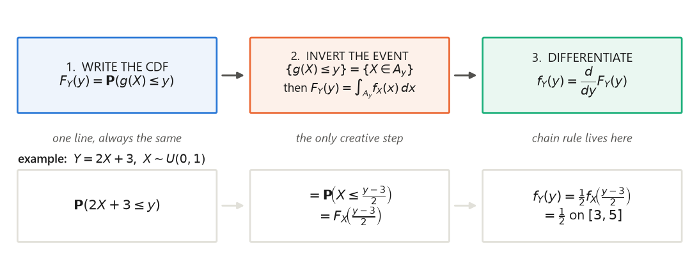
The linear case, derived completely
The single most common transformation is affine: $Y=aX+b$, with $a\ne 0$ and $b$ real constants ($a$ is a scale factor — a change of units — and $b$ a shift of origin). Let us run the recipe with no steps skipped. Here $X$ is a continuous random variable with PDF $f_X$ and CDF $F_X$. You have met this formula twice before in special guises: §1.7's Example 1.9 used it to show that a linear function of a normal is normal, and §3.6's Example 3.10 Part 1 ran exactly this $a>0$/$a<0$ case-split as the appendix clearing L10 slide 8. This is the general statement both were pointing at; read them together and expect no new answer, only the general one.
Case $a>0$. Step 1: for a given real number $y$, $$F_Y(y)=\mathbf{P}(Y\le y)=\mathbf{P}(aX+b\le y).$$ Step 2: subtract $b$ from both sides of the inequality inside the event (this changes nothing, since $aX+b\le y$ and $aX\le y-b$ are the same statement about the same outcome), then divide by $a$; because $a>0$, dividing preserves the direction of the inequality. Hence $$\{aX+b\le y\}=\Big\{X\le \tfrac{y-b}{a}\Big\}\quad\Longrightarrow\quad F_Y(y)=\mathbf{P}\Big(X\le\tfrac{y-b}{a}\Big)=F_X\Big(\tfrac{y-b}{a}\Big).$$ Step 3: differentiate in $y$. Write $u(y)=(y-b)/a$, so $F_Y(y)=F_X(u(y))$. The chain rule gives $$f_Y(y)=\frac{d}{dy}F_X\big(u(y)\big)=F_X'\big(u(y)\big)\cdot u'(y)=f_X\Big(\tfrac{y-b}{a}\Big)\cdot\frac1a,$$ using $F_X'=f_X$ (the fundamental theorem of calculus, which is exactly the statement that the CDF is the integral of the PDF — see §1) and $u'(y)=1/a$.
Case $a<0$. Step 2 changes: dividing by a negative number reverses the inequality, so $$\{aX+b\le y\}=\Big\{X\ge \tfrac{y-b}{a}\Big\}\quad\Longrightarrow\quad F_Y(y)=\mathbf{P}\Big(X\ge\tfrac{y-b}{a}\Big)=1-F_X\Big(\tfrac{y-b}{a}\Big),$$ where the last equality uses $\mathbf{P}(X\ge c)=1-\mathbf{P}(X<c)=1-F_X(c)$; for a continuous $X$, $\mathbf{P}(X=c)=0$, so $\mathbf{P}(X<c)$ and $\mathbf{P}(X\le c)$ agree. Differentiating, $$f_Y(y)=-f_X\Big(\tfrac{y-b}{a}\Big)\cdot\frac1a=f_X\Big(\tfrac{y-b}{a}\Big)\cdot\frac{1}{|a|},$$ because $-1/a=1/|a|$ when $a<0$.
Solution. By the property, $f_Y(y)=\frac{1}{|2|}f_X\!\left(\frac{y-3}{2}\right)
=\frac12 f_X\!\left(\frac{y-3}{2}\right)$. Now $f_X$ of anything is $1$ exactly when its argument
lies in $[0,1]$:
$$0\le\frac{y-3}{2}\le 1\iff 0\le y-3\le 2\iff 3\le y\le 5 .$$
Therefore $f_Y(y)=\tfrac12=0.5$ for $3\le y\le5$ and $0$ otherwise — i.e. $Y\sim U(3,5)$, as it must
be. Check: $\mathbb{E}[Y]=2\cdot0.5+3=4$ and $\operatorname{var}(Y)=2^2\cdot\frac1{12}
=\frac13\approx0.333333$, matching the mean and variance of $U(3,5)$ from §1
(lin_mean_Y, lin_var_Y).
Solution. $X$ takes values in $[0,1]$, so $Y=X^2$ takes values in $[0,1]$ and $f_Y(y)=0$
outside that interval. For $0<y<1$, step 1 gives $F_Y(y)=\mathbf{P}(X^2\le y)$. Step 2: since
$X\ge0$ here, the inequality $x^2\le y$ is equivalent to $x\le\sqrt y$ (the square root is increasing
on $[0,\infty)$), so
$$F_Y(y)=\mathbf{P}(X\le\sqrt y)=F_X(\sqrt y)=\sqrt y,$$
using $F_X(t)=t$ on $[0,1]$ for the uniform. Step 3: differentiate,
$$f_Y(y)=\frac{d}{dy}y^{1/2}=\tfrac12 y^{-1/2}=\frac{1}{2\sqrt y},\qquad 0<y<1 .$$
Sanity checks. $\int_0^1\frac{dy}{2\sqrt y}=\big[\sqrt y\big]_0^1=1-0=1$
(sq_norm $=1.000000$); and
$\int_0^1 y\cdot\frac{1}{2\sqrt y}dy=\int_0^1\tfrac12 y^{1/2}dy=\big[\tfrac13y^{3/2}\big]_0^1=\tfrac13
\approx0.333333$, which is $\mathbb{E}[X^2]$ — exactly what the expected-value rule of §1 predicts
(sq_mean). Note the density blows up as $y\to0^+$; a PDF is allowed to be unbounded, it
just has to integrate to $1$.
Solution
Formula. $a=-2$, $b=1$, so $f_Y(y)=\frac{1}{|-2|}f_X\!\left(\frac{y-1}{-2}\right)
=\frac12 f_X\!\left(\frac{1-y}{2}\right)$. That is $\frac12$ exactly when
$0\le\frac{1-y}{2}\le1\iff0\le1-y\le2\iff-1\le y\le1$. So $Y\sim U(-1,1)$ with $f_Y=\tfrac12$ on
$[-1,1]$ (lin_neg_lo $=-1$, lin_neg_hi $=1$).
From scratch. $F_Y(y)=\mathbf{P}(-2X+1\le y)=\mathbf{P}(-2X\le y-1) =\mathbf{P}\!\left(X\ge\frac{1-y}{2}\right)=1-F_X\!\left(\frac{1-y}{2}\right)=1-\frac{1-y}{2}$ for $\frac{1-y}{2}\in[0,1]$, i.e. $y\in[-1,1]$. Differentiate: $f_Y(y)=-\frac{d}{dy}\frac{1-y}{2}=-\left(-\tfrac12\right)=\tfrac12$. Same answer, and the sign flip in the middle step is precisely where the $|a|$ comes from.
Solution
$Y=5X$ is the case $a=5$, $b=0$. For $y\ge0$,
$$f_Y(y)=\frac{1}{5}f_X\!\left(\frac{y}{5}\right)=\frac15\cdot 2e^{-2y/5}=\frac25 e^{-(2/5)y},$$
which is the exponential PDF with parameter $\lambda'=2/5=0.4$ (p42_rate). Its mean is
$1/\lambda'=5/2=2.5$ (p42_mean), consistent with
$\mathbb{E}[Y]=5\,\mathbb{E}[X]=5\cdot\frac12$. Scaling an exponential keeps it exponential and
divides the rate by the scale — the memorylessness of §1 is scale-invariant.
4.2 The general formula for a strictly monotonic $g$
When $g$ is strictly monotonic, step 2 of the recipe has the same answer every time, so the calculus can be done once. L11 slide 2 gives the argument in a picture; here it is with the missing algebra restored.
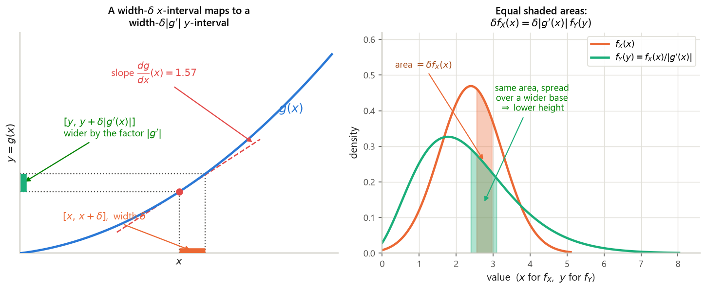
Derivation (filling L11 slide 2's gap, which stops at $\delta f_X(x)=\delta f_Y(y)|dg/dx|$). Assume first that $g$ is strictly increasing. Fix a point $x$ and a small $\delta>0$, and set $y=g(x)$.
- The two events coincide. Because $g$ is strictly increasing, $x\le X\le x+\delta$ holds if and only if $g(x)\le g(X)\le g(x+\delta)$, i.e. if and only if $y\le Y\le g(x+\delta)$. Strict monotonicity is what makes this an "if and only if": a non-monotone $g$ could send some $X$ outside $[x,x+\delta]$ into the same $y$-interval.
- Linearize the right endpoint. Taylor's theorem with the first-order remainder gives $g(x+\delta)=g(x)+\delta\frac{dg}{dx}(x)+o(\delta)$, where $o(\delta)/\delta\to0$ as $\delta\to0$. So up to a term negligible compared with $\delta$, the $y$-interval is $[y,\;y+\delta\frac{dg}{dx}(x)]$, of length $\delta\frac{dg}{dx}(x)$ (positive, since $g$ is increasing).
- Equate the two probabilities. The events being identical, their probabilities are equal. Now use the defining property of a density from §1 — for a small interval, $\mathbf{P}(t\le T\le t+h)\approx h\,f_T(t)$ — on each side: $$\underbrace{\delta\,f_X(x)}_{\mathbf{P}(x\le X\le x+\delta)}\;=\; \underbrace{\delta\left|\frac{dg}{dx}(x)\right| f_Y(y)}_{\mathbf{P}(y\le Y\le y+\delta|dg/dx|)} .$$ This is precisely the line L11 slide 2 ends on.
- Divide and solve. Both sides carry a factor $\delta$; cancel it (legitimate for $\delta\ne0$) and divide by $|dg/dx(x)|$, which is nonzero by hypothesis: $$f_Y(y)=\frac{f_X(x)}{\left|\frac{dg}{dx}(x)\right|}.$$ Letting $\delta\to0$ makes the approximations in steps 2 and 3 exact.
- The decreasing case. If $g$ is strictly decreasing, step 1 reverses the inequalities: $x\le X\le x+\delta$ iff $g(x+\delta)\le Y\le g(x)$, an interval of length $-\delta\frac{dg}{dx}(x)=\delta\left|\frac{dg}{dx}(x)\right|$ since the derivative is now negative. Steps 3–4 are unchanged. The absolute value in the final formula is exactly the device that merges the two cases — the same bookkeeping as the $|a|$ of §4.1.
A useful equivalent form: writing $h=g^{-1}$ for the inverse function and using $\frac{dh}{dy}(y)=1/\frac{dg}{dx}(x)$ (the inverse-function rule), $$f_Y(y)=f_X\big(h(y)\big)\left|\frac{dh}{dy}(y)\right| .$$ The factor $|dh/dy|$ is the one-dimensional Jacobian of the change of variables — the same object that appears in multivariable substitution.
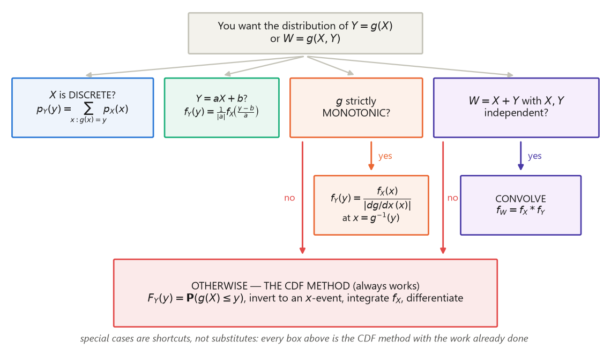
Solution. $f_X(x)=e^{-x}$ for $x\ge0$; $g(x)=e^x$ is strictly increasing with
$\frac{dg}{dx}(x)=e^x>0$. Since $x\ge0$, $y=e^x\ge1$, so $f_Y(y)=0$ for $y<1$. Invert:
$y=e^x\Rightarrow x=\ln y$. Apply the theorem:
$$f_Y(y)=\frac{f_X(\ln y)}{|e^{\ln y}|}=\frac{e^{-\ln y}}{y}=\frac{1/y}{y}=\frac{1}{y^2},
\qquad y\ge1 .$$
Checks. $\int_1^\infty y^{-2}dy=\big[-y^{-1}\big]_1^\infty=0-(-1)=1$ (pareto_norm
$=1.000000$), and $\mathbf{P}(Y\le3)=\int_1^3 y^{-2}dy=\big[-y^{-1}\big]_1^3=-\tfrac13+1=\tfrac23
\approx0.666667$ (pareto_P_Y_le_3). This is the Pareto density with tail index $1$; its
mean $\int_1^\infty y\cdot y^{-2}dy=\int_1^\infty y^{-1}dy=[\ln y]_1^\infty$ is infinite — an
exponential input can produce a heavy-tailed output.
Solution. On $u\in(0,1)$, $g(u)=-\frac1\lambda\ln(1-u)$ is strictly increasing (as $u$
grows, $1-u$ shrinks, $\ln(1-u)$ falls, and the minus sign flips it back up) and
$$\frac{dg}{du}(u)=-\frac1\lambda\cdot\frac{-1}{1-u}=\frac{1}{\lambda(1-u)}>0 .$$
Its range is $(0,\infty)$, so $f_Y(y)=0$ for $y<0$. Invert: $y=-\frac1\lambda\ln(1-u)
\Rightarrow -\lambda y=\ln(1-u)\Rightarrow 1-u=e^{-\lambda y}\Rightarrow u=1-e^{-\lambda y}$. Now
$f_U(u)=1$ on $(0,1)$, so
$$f_Y(y)=\frac{f_U(u)}{|dg/du(u)|}=\frac{1}{\frac{1}{\lambda(1-u)}}=\lambda(1-u)
=\lambda e^{-\lambda y},\qquad y\ge0 .$$
Exponential with parameter $\lambda$, exactly. Numerical check with $\lambda=2$ and two
million simulated draws: sample mean $0.500192$ against the theoretical $1/\lambda=0.5$, sample
variance $0.250401$ against $1/\lambda^2=0.25$ (invtr_mean_mc, invtr_var_mc).
The general principle: if $F$ is a continuous strictly increasing CDF and $U\sim U(0,1)$, then
$F^{-1}(U)$ has CDF $F$.
Solution
$g(x)=x^3$ is strictly increasing on $[0,1]$ with $g'(x)=3x^2$, and $g$ maps $[0,1]$ onto
$[0,1]$. Inverse: $x=y^{1/3}$. So for $0<y<1$,
$$f_Y(y)=\frac{f_X(y^{1/3})}{|3(y^{1/3})^2|}=\frac{1}{3y^{2/3}}=\tfrac13 y^{-2/3},$$
and $0$ otherwise. Normalization: $\int_0^1\tfrac13y^{-2/3}dy=\big[\tfrac13\cdot3y^{1/3}\big]_0^1
=\big[y^{1/3}\big]_0^1=1$ (p43_norm $=1.000000$). Mean:
$\int_0^1 y\cdot\tfrac13y^{-2/3}dy=\int_0^1\tfrac13y^{1/3}dy=\big[\tfrac13\cdot\tfrac34y^{4/3}\big]_0^1
=\tfrac14=0.25$ (p43_mean), which agrees with
$\mathbb{E}[X^3]=\int_0^1x^3dx=\tfrac14$.
Solution
$X$ lives on $(0,\infty)$, and $\ln$ maps $(0,\infty)$ onto all of $\mathbb{R}$ strictly
increasingly, so $Y$ has support $(-\infty,\infty)$. Here $g(x)=\ln x$, $g'(x)=1/x$, inverse
$x=e^y$. Therefore
$$f_Y(y)=\frac{f_X(e^y)}{|1/e^y|}=e^y f_X(e^y)=e^y e^{-e^y}=e^{\,y-e^{y}},\qquad -\infty<y<\infty .$$
Checks. Numerically $\int_{-\infty}^{\infty}e^{y-e^y}dy=1.000000$ (p44_norm) — as
it must, by the substitution $t=e^y$, $dt=e^ydy$, turning it into $\int_0^\infty e^{-t}dt=1$. Its
mean is $-0.577216$ (p44_mean), the negative of the Euler–Mascheroni constant
(p44_euler) — a good reminder that a nice transformation of a nice random variable can
have a thoroughly un-nice mean.
A naming caution. The standard (maximum) Gumbel density is $e^{-y-e^{-y}}$, with mean $+\gamma=+0.577216$. What we derived, $e^{\,y-e^{y}}$, is its reflection: $-Y$ is standard Gumbel, and correspondingly our mean carries the opposite sign. This is the Gumbel law for minima — the right one for $\ln$ of an exponential, which piles up mass toward $-\infty$.
4.3 A function of two variables: $Z=Y/X$ on the unit square
L11 slide 1 poses this as the lecture's opening problem and leaves both formulas blank; L10 slide 4 had already posed the identical problem as its motivating example, and §3.6 (Example 3.8, where the ratio is called $R$) solved it there as an appendix explicitly previewing this section. What follows is the same derivation stated in the general framework — same case split at $z=1$, same triangle areas, same answer. Read §3.6 for the L10-slide framing and this subsection for the method; they are one result, not two. The CDF method handles it: with two input variables, step 2 becomes "find the region of the plane where $g(x,y)\le z$, and integrate the joint density over it" — which, for a uniform joint density, is just an area computation.
Setup. Since $X>0$ and $Y\ge0$ with probability $1$, $Z=Y/X\ge0$, so $F_Z(z)=0$ for $z<0$ and $f_Z(z)=0$ there. Fix $z>0$. Step 1 of the recipe: $$F_Z(z)=\mathbf{P}\!\left(\frac YX\le z\right).$$ Step 2 — invert the event. Multiply both sides of $Y/X\le z$ by $X$; this is legitimate without flipping the inequality because $X>0$ with probability $1$. Hence $$\left\{\frac YX\le z\right\}=\{Y\le zX\},$$ the set of points of the unit square lying on or below the line $y=zx$ through the origin with slope $z$. Because $f_{X,Y}=1$ on the square, $$F_Z(z)=\iint_{\{y\le zx\}\cap[0,1]^2}1\;dx\,dy=\text{area of that region},$$ and the shape of the region depends on whether the line exits the square through its right side or through its top — i.e. on whether $z\le1$ or $z\ge1$. That is exactly why the slide has two blanks.
Case $0\le z\le 1$. At $x=1$ the line is at height $z\le1$, so it exits through the right
side at $(1,z)$. The region below it inside the square is the triangle with vertices $(0,0)$,
$(1,0)$, $(1,z)$: base $1$ along the $x$-axis, height $z$. Hence
$$\boxed{\;F_Z(z)=\tfrac12\cdot 1\cdot z=\frac z2\;}\qquad 0\le z\le1 .$$
As a check by integration rather than geometry:
$\int_0^1\!\!\int_0^{zx}1\,dy\,dx=\int_0^1 zx\,dx=z\big[\tfrac{x^2}{2}\big]_0^1=\tfrac z2$.
Numerically $F_Z(0.5)=0.25$ (ratio_F_0.5), and four million simulated pairs give
$0.249639$ (ratio_F_0.5_mc).
Case $z\ge 1$. Now the line reaches height $1$ already at $x=1/z\le1$, so it exits through
the top. It is easier to compute the complementary white region above the line: the triangle
with vertices $(0,0)$, $(0,1)$, $(1/z,1)$, whose base along the top edge has length $1/z$ and whose
height is $1$. Its area is $\frac12\cdot\frac1z\cdot1=\frac{1}{2z}$. Since the whole square has area
$1$,
$$\boxed{\;F_Z(z)=1-\frac{1}{2z}\;}\qquad z\ge1 .$$
Check by integration: $\int_0^{1/z}\!\!\int_0^{zx}1\,dy\,dx+\int_{1/z}^1\!\!\int_0^{1}1\,dy\,dx
=\frac{z}{2}\cdot\frac{1}{z^2}+\left(1-\frac1z\right)=\frac{1}{2z}+1-\frac1z=1-\frac{1}{2z}$.
Numerically $F_Z(2)=0.75$ (ratio_F_2.0) versus simulation $0.749698$.
Continuity check. Both formulas must agree at $z=1$: $z/2=1/2$ and $1-1/(2\cdot1)=1/2$. ✓ Also $F_Z(z)\to1$ as $z\to\infty$, and $F_Z(0)=0$. So $F_Z$ is a bona fide CDF.
Step 3 — differentiate. On $0<z<1$, $\frac{d}{dz}\frac z2=\frac12$. On $z>1$,
$\frac{d}{dz}\left(1-\frac{1}{2z}\right)=-\frac12\cdot\frac{d}{dz}z^{-1}
=-\frac12\cdot(-z^{-2})=\frac{1}{2z^2}$. Hence
$$f_Z(z)=\begin{cases}\tfrac12, & 0<z\le 1,\\[2pt] \dfrac{1}{2z^2}, & z>1,\\[2pt] 0,&\text{otherwise.}\end{cases}$$
Normalization. $\int_0^1\frac12dz=\frac12$ and
$\int_1^\infty\frac{dz}{2z^2}=\big[-\frac{1}{2z}\big]_1^\infty=0+\frac12=\frac12$; total $1$
(ratio_norm_lo, ratio_norm_hi, ratio_norm_tot $=1.000000$).
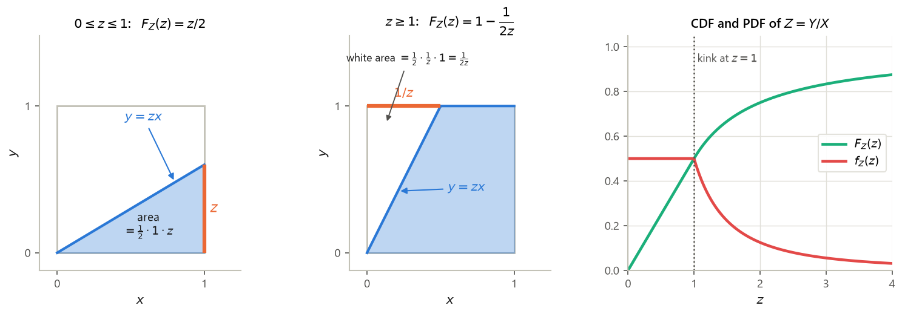
ratio_median). The mean, however, is
infinite: $\int_1^M z\cdot\frac{1}{2z^2}dz=\int_1^M\frac{dz}{2z}=\frac12\ln M$, so
$\int_0^M z f_Z(z)dz=\frac14+\frac12\ln M\to\infty$ (at $M=10,100,1000$ the partial means are
$1.401293$, $2.552585$, $3.703878$ — ratio_partial_mean_M10 and friends, matching
$\frac14+\frac12\ln M$ exactly). The culprit is the denominator: $X$ can be arbitrarily close to $0$,
and $f_X$ does not vanish fast enough there to tame $1/X$.Solution
$\mathbf{P}(\frac12\le Z\le2)=F_Z(2)-F_Z(\frac12)$ (valid since $Z$ is continuous, so the
endpoints carry no mass). From the two formulas: $F_Z(2)=1-\frac{1}{2\cdot2}=1-\frac14=\frac34$ and
$F_Z(\frac12)=\frac{1/2}{2}=\frac14$. Hence the answer is $\frac34-\frac14=\frac12=0.5$
(p45). Pleasingly symmetric — and it must be, since $Z$ and $1/Z$ have the same
distribution here by the exchangeability of $X$ and $Y$.
Solution
Step 1–2: for $0\le t\le1$, the maximum is at most $t$ if and only if both variables are:
$$F_T(t)=\mathbf{P}(\max(X,Y)\le t)=\mathbf{P}(X\le t,\;Y\le t)=\mathbf{P}(X\le t)\mathbf{P}(Y\le t)
=t\cdot t=t^2,$$
where the third equality is independence (§2). Step 3: $f_T(t)=\frac{d}{dt}t^2=2t$ on $[0,1]$, zero
elsewhere. Check: $\int_0^1 2t\,dt=[t^2]_0^1=1$ ✓. Mean:
$\mathbb{E}[T]=\int_0^1 t\cdot 2t\,dt=\big[\tfrac23t^3\big]_0^1=\tfrac23\approx0.666667$
(p46_mean) — above $1/2$, as a maximum should be. The "turn max into an intersection"
move is the standard trick; for $\min$, use $\mathbf{P}(\min>t)=\mathbf{P}(X>t)\mathbf{P}(Y>t)$.
4.4 rec11 P3 — a normal random variable through a kinked map
Solution
Step 0 — the support. On $t\le0$, $-t\ge0$; on $t>0$, $\sqrt t>0$. So $g$ never returns a negative value and $Y\ge0$, giving $f_Y(y)=0$ for $y<0$. Note also that $g$ is not monotonic: it decreases on $(-\infty,0]$ and increases on $(0,\infty)$, with a "V"-shaped kink at the origin. The change-of-variables formula of §4.2 therefore does not apply directly, and we must use the CDF method — this is the two-branch situation the Gotcha in §4.2 warned about.
Step 1 — the CDF. Fix $y>0$. Then $F_Y(y)=\mathbf{P}(g(X)\le y)$.
Step 2 — invert the event, branch by branch (this is the step rec11's official solution
states without derivation). The event $\{g(X)\le y\}$ splits according to the sign of $X$, because
$g$ is given by different formulas on the two sides, and the two pieces are disjoint:
$$\{g(X)\le y\}=\underbrace{\big(\{X\le 0\}\cap\{-X\le y\}\big)}_{\text{left branch}}\;\cup\;
\underbrace{\big(\{X>0\}\cap\{\sqrt X\le y\}\big)}_{\text{right branch}} .$$
Left branch. $-X\le y\iff X\ge -y$ (multiply by $-1$ and flip). Intersecting with
$\{X\le0\}$ and remembering $y>0$ so that $-y<0$, the left branch is
$\{-y\le X\le 0\}$.
Right branch. For $X>0$, $\sqrt X\le y\iff X\le y^2$ — squaring is legitimate here
because both sides are nonnegative and $t\mapsto t^2$ is increasing on $[0,\infty)$. So the right
branch is $\{0<X\le y^2\}$.
The two pieces are disjoint (one has $X\le0$, the other $X>0$), so by additivity
$$F_Y(y)=\mathbf{P}\big(X\in[-y,0]\big)+\mathbf{P}\big(X\in(0,y^2]\big).$$
Writing each as a difference of CDF values,
$$F_Y(y)=\big(F_X(0)-F_X(-y)\big)+\big(F_X(y^2)-F_X(0)\big)=F_X(y^2)-F_X(-y),$$
the $F_X(0)$ terms cancelling. Equivalently and more simply: the union of the two branches is the
single interval $[-y,\,y^2]$, so $F_Y(y)=\mathbf{P}(-y\le X\le y^2)$.
Step 3 — differentiate, with the chain rule (the second gap rec11 leaves open). Term by term, using $F_X'=f_X$: $$\frac{d}{dy}F_X(y^2)=f_X(y^2)\cdot\frac{d}{dy}(y^2)=2y\,f_X(y^2),$$ $$\frac{d}{dy}\big[-F_X(-y)\big]=-f_X(-y)\cdot\frac{d}{dy}(-y)=-f_X(-y)\cdot(-1)=+f_X(-y).$$ The sign works out because the inner derivative is $-1$ and there is already a minus sign in front — two negatives make the plus. Hence for $y>0$ $$f_Y(y)=2y\,f_X(y^2)+f_X(-y).$$ Substituting the standard normal density, and using $(y^2)^2=y^4$ and $(-y)^2=y^2$: $$\boxed{\;f_Y(y)=\frac{1}{\sqrt{2\pi}}\left(2y\,e^{-y^4/2}+e^{-y^2/2}\right),\qquad y>0,\;}$$ and $f_Y(y)=0$ for $y\le0$.
Verification. The total mass must be $1$, and it splits evenly between the branches, since
each branch inherits exactly the probability that $X$ falls on its side of $0$, namely $1/2$:
$$\int_0^\infty 2y\,f_X(y^2)dy \overset{u=y^2}{=} \int_0^\infty f_X(u)\,du=\tfrac12,\qquad
\int_0^\infty f_X(-y)\,dy \overset{v=-y}{=}\int_{-\infty}^0 f_X(v)\,dv=\tfrac12 .$$
(The substitution $u=y^2$ has $du=2y\,dy$, which is precisely the factor sitting in front.)
Numerically the two integrals are $0.500000$ and $0.500000$ and the total is $1.000000$
(rec_int_sqrtbranch, rec_int_linbranch, rec_norm).
Spot values: $f_Y(0.5)=0.738733$, $f_Y(1)=0.725912$, $f_Y(2)=0.054526$ (rec_fY_0.5,
rec_fY_1.0, rec_fY_2.0). A second, independent check:
$\mathbf{P}(Y\le1)=F_X(1^2)-F_X(-1)=\Phi(1)-\Phi(-1)=0.682689$, and integrating our $f_Y$ from $0$
to $1$ gives the same $0.682689$; four million simulated draws give $0.682670$
(rec_P_Y_le_1_closed, rec_P_Y_le_1, rec_P_Y_le_1_mc).
Finally $\mathbb{E}[Y]=0.810032$ by quadrature and $0.810192$ by simulation
(rec_mean, rec_mean_mc).
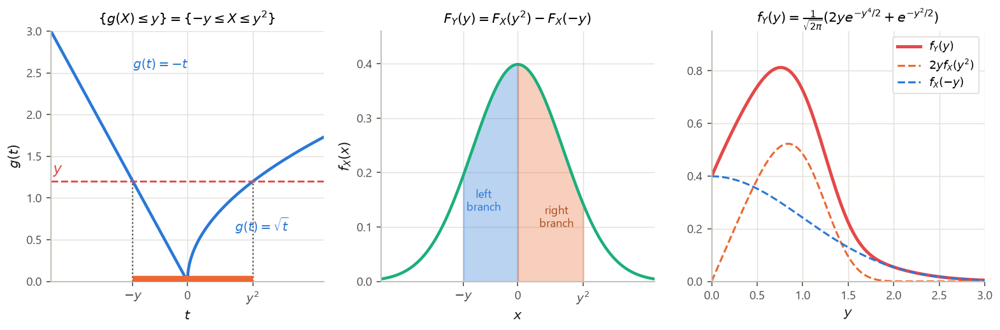
Solution
$Y\ge0$, so $f_Y(y)=0$ for $y<0$. For $y>0$,
$F_Y(y)=\mathbf{P}(|X|\le y)=\mathbf{P}(-y\le X\le y)=F_X(y)-F_X(-y)$. Differentiate with the chain
rule: $f_Y(y)=f_X(y)-f_X(-y)\cdot(-1)=f_X(y)+f_X(-y)=2f_X(y)$, using the symmetry $f_X(-y)=f_X(y)$ of
the standard normal. So
$$f_Y(y)=\frac{2}{\sqrt{2\pi}}e^{-y^2/2}=\sqrt{\frac2\pi}\,e^{-y^2/2},\qquad y>0 .$$
Check: it integrates to $1.000000$ (p47_norm). Mean:
$\mathbb{E}[Y]=\int_0^\infty y\sqrt{\frac2\pi}e^{-y^2/2}dy
=\sqrt{\frac2\pi}\big[-e^{-y^2/2}\big]_0^\infty=\sqrt{\frac2\pi}(0+1)=\sqrt{2/\pi}\approx0.797885$
(p47_mean, p47_sqrt2overpi). This is the "half-normal" density, and it is
the left branch of Example 4.6 doubled.
Solution
$Y\ge0$. For $y>0$, $\{X^2\le y\}=\{-\sqrt y\le X\le\sqrt y\}$, so
$F_Y(y)=F_X(\sqrt y)-F_X(-\sqrt y)$. Differentiate; $\frac{d}{dy}\sqrt y=\frac{1}{2\sqrt y}$ and
$\frac{d}{dy}(-\sqrt y)=-\frac{1}{2\sqrt y}$, so
$$f_Y(y)=f_X(\sqrt y)\frac{1}{2\sqrt y}+f_X(-\sqrt y)\frac{1}{2\sqrt y}
=\frac{2f_X(\sqrt y)}{2\sqrt y}=\frac{1}{\sqrt{2\pi y}}e^{-y/2},$$
again using symmetry. Numerically it integrates to $1.000000$ and has mean $1.000000$
(p48_norm, p48_mean) — the latter is no surprise, since
$\mathbb{E}[X^2]=\operatorname{var}(X)+(\mathbb{E}[X])^2=1+0=1$. Observe how the two
preimages $\pm\sqrt y$ both contribute; using the single-branch monotone formula would have halved
the answer.
4.5 Discrete convolution: flip, shift, cross-multiply, add
Before the continuous case, the discrete one — because the mechanics are visible there. Let $X$ and $Y$ be independent discrete random variables (typically integer-valued) with PMFs $p_X$ and $p_Y$, and let $W=X+Y$.
Derivation (filling L11 slide 3's gap, which asserts the middle equality). Fix $w$. The event $\{W=w\}=\{X+Y=w\}$ is the set of outcomes whose $(X,Y)$ pair lands on the anti-diagonal line $x+y=w$ — the picture on the slide. Partition it by the value of $X$: the events $\{X=x\}$, as $x$ ranges over the values of $X$, are disjoint and their union has probability $1$, so by the total probability theorem (G1 §2, discrete form) $$p_W(w)=\mathbf{P}(X+Y=w)=\sum_x\mathbf{P}\big(X=x,\;X+Y=w\big).$$ Inside the $x$-th term, the two conditions $X=x$ and $X+Y=w$ together say exactly $X=x$ and $Y=w-x$ (substitute the first into the second). Hence $$p_W(w)=\sum_x\mathbf{P}(X=x,\;Y=w-x)=\sum_x\mathbf{P}(X=x)\,\mathbf{P}(Y=w-x) =\sum_x p_X(x)\,p_Y(w-x),$$ where the middle equality is independence of $X$ and $Y$ (§4 of G2: the joint PMF factors at every pair of values). Both ingredients — total probability and independence — are what the slide leaves implicit.
- Put the two PMFs on the same axis, both plotted against $x$.
- Flip the PMF of $Y$ left-to-right: $p_Y(x)\mapsto p_Y(-x)$.
- Shift the flipped PMF right by $w$ (left, if $w<0$): you are now looking at $p_Y(w-x)$ as a function of $x$.
- Cross-multiply and add: at each $x$ multiply the two heights and sum the products.
Solution. $W$ can be anything from $0+0=0$ to $2+2=4$. For each $w$ we list the pairs $(x,w-x)$ with both coordinates in $\{0,1,2\}$ and add the products.
$w=0$: only $x=0$ works ($y=0$). $p_W(0)=\frac16\cdot\frac14=\frac{1}{24}\approx0.041667$.
$w=1$: $x=0$ ($y=1$) and $x=1$ ($y=0$). $p_W(1)=\frac16\cdot\frac14+\frac13\cdot\frac14=\frac{1}{24}+\frac{1}{12}=\frac{1}{24}+\frac{2}{24} =\frac{3}{24}=\frac18=0.125$.
$w=2$: $x=0\,(y=2)$, $x=1\,(y=1)$, $x=2\,(y=0)$. $p_W(2)=\frac16\cdot\frac12+\frac13\cdot\frac14+\frac12\cdot\frac14 =\frac{1}{12}+\frac{1}{12}+\frac18=\frac{2}{24}+\frac{2}{24}+\frac{3}{24}=\frac{7}{24} \approx0.291667$.
$w=3$: $x=1\,(y=2)$, $x=2\,(y=1)$. $p_W(3)=\frac13\cdot\frac12+\frac12\cdot\frac14=\frac16+\frac18=\frac{4}{24}+\frac{3}{24} =\frac{7}{24}\approx0.291667$.
$w=4$: only $x=2\,(y=2)$. $p_W(4)=\frac12\cdot\frac12=\frac14=0.25$.
Normalization. $\frac{1}{24}+\frac{3}{24}+\frac{7}{24}+\frac{7}{24}+\frac{6}{24}
=\frac{24}{24}=1$ ✓ (disc_pW_sum). NumPy's convolve on the same two lists
returns $[0.0416667,\,0.125,\,0.2916667,\,0.2916667,\,0.25]$ — identical
(disc_pW_numpy).
Moment cross-checks. $\mathbb{E}[X]=0\cdot\frac16+1\cdot\frac13+2\cdot\frac12=\frac43$ and
$\mathbb{E}[Y]=0\cdot\frac14+1\cdot\frac14+2\cdot\frac12=\frac54$; their sum is
$\frac{16+15}{12}=\frac{31}{12}\approx2.583333$, which is exactly $\mathbb{E}[W]$ computed from
$p_W$ (disc_EW). Similarly $\operatorname{var}(X)=\frac59$,
$\operatorname{var}(Y)=\frac{11}{16}$, and
$\operatorname{var}(W)=\frac{179}{144}\approx1.243056=\frac59+\frac{11}{16}$
(disc_varW, disc_var_sum_check) — additivity of variance under
independence, from G2 §4.
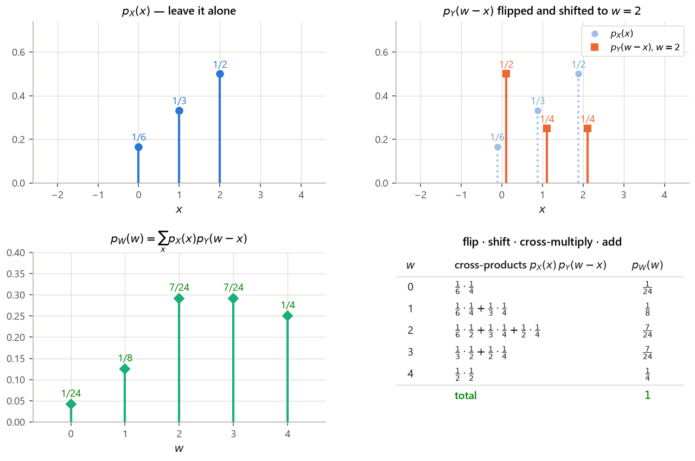
Solution
$p_X(k)=p_Y(k)=\frac16$ for $k=1,\dots,6$. Then
$p_W(7)=\sum_{x=1}^{6}p_X(x)p_Y(7-x)$. For each $x\in\{1,\dots,6\}$ the partner $7-x$ runs over
$6,5,4,3,2,1$ — always inside the support — so all six terms survive and each equals
$\frac16\cdot\frac16=\frac1{36}$. Hence $p_W(7)=6\cdot\frac{1}{36}=\frac{6}{36}=\frac16
\approx0.166667$ (p49_p7, p49_p7_frac). Seven is the unique sum for which
the flipped-and-shifted PMF overlaps the other one completely — that is why it is the mode.
Solution
Each mass is $\frac14$, so every surviving term contributes $\frac1{16}$; we only need to count
the pairs. For $w=5$: $(1,4),(2,3),(3,2),(4,1)$ — four pairs, so
$p_W(5)=\frac{4}{16}=\frac14=0.25$ (p410_p5). For $w=4$: $(1,3),(2,2),(3,1)$ — three
pairs, so $p_W(4)=\frac{3}{16}=0.1875$ (p410_p4). The PMF of $W$ is a discrete triangle
peaking at $w=5$; §4.6 shows the continuous version of the same shape.
4.6 Continuous convolution and the sum of two uniforms
Now let $X$ and $Y$ be independent continuous random variables and $W=X+Y$. L11 slide 4 gives the answer in three lines; here is each line justified.
Derivation (filling L11 slide 4's two gaps).
- The conditional density of $W$ given $X=x$ is a shifted copy of $f_Y$. Condition on $X=x$. Given that, $W=x+Y$ — a constant plus $Y$. Work with the conditional CDF: $$\mathbf{P}(W\le w\mid X=x)=\mathbf{P}(x+Y\le w\mid X=x)=\mathbf{P}(Y\le w-x\mid X=x) =\mathbf{P}(Y\le w-x)=F_Y(w-x),$$ where the third equality is independence (§2: conditioning on $X$ tells you nothing about $Y$). Differentiate in $w$, using the chain rule with inner derivative $\frac{d}{dw}(w-x)=1$: $$f_{W\mid X}(w\mid x)=\frac{d}{dw}F_Y(w-x)=f_Y(w-x).$$ This is the slide's first line, now proved. (Equivalently: adding the constant $x$ is the linear map of §4.1 with $a=1$, which shifts the density and does not rescale it.)
- Build the joint density of $(W,X)$. The multiplication rule for densities (§2) gives $$f_{W,X}(w,x)=f_X(x)\,f_{W\mid X}(w\mid x)=f_X(x)\,f_Y(w-x).$$
- Marginalize over $x$. The slide's last line silently applies the marginalization identity of §2 — integrate the joint density over the variable you do not want: $$f_W(w)=\int_{-\infty}^{\infty}f_{W,X}(w,x)\,dx=\int_{-\infty}^{\infty}f_X(x)f_Y(w-x)\,dx .$$
Geometrically (the slide's figure) this integrates the joint density $f_{X,Y}$ along the line $x+y=w$: the parameter $x$ walks along that line, and $y=w-x$ is forced.
The sum of two independent uniforms
Solution. Both densities are the indicator of $[0,1]$: $f_X(x)=1$ iff $0\le x\le1$, and $f_Y(w-x)=1$ iff $0\le w-x\le1$. The second condition rearranges: adding $x$ throughout gives $x\le w\le x+1$, i.e. $w-1\le x\le w$. So the integrand $f_X(x)f_Y(w-x)$ equals $1$ exactly on the intersection $$[0,1]\cap[w-1,\;w]=\big[\max(0,w-1),\;\min(1,w)\big],$$ and $0$ elsewhere. Therefore $$f_W(w)=\int_{\max(0,w-1)}^{\min(1,w)}1\,dx=\min(1,w)-\max(0,w-1) =\text{length of the overlap},$$ provided that length is positive. Three cases:
- $w<0$ or $w>2$: the intervals do not meet ($\min(1,w)<\max(0,w-1)$), so $f_W(w)=0$. Correct — a sum of two numbers in $[0,1]$ lies in $[0,2]$.
- $0\le w\le1$: then $\min(1,w)=w$ and $\max(0,w-1)=0$, so $f_W(w)=w-0=w$.
- $1<w\le2$: then $\min(1,w)=1$ and $\max(0,w-1)=w-1$, so $f_W(w)=1-(w-1)=2-w$.
$$f_W(w)=\begin{cases}w,&0\le w\le 1,\\ 2-w,&1<w\le 2,\\ 0,&\text{otherwise,}\end{cases}$$ a triangle peaking at $w=1$ with height $1$.
Checks. Area $=\frac12\cdot\text{base}\cdot\text{height}=\frac12\cdot2\cdot1=1$ ✓
(tri_norm $=1.000000$). Mean: by symmetry about $w=1$, $\mathbb{E}[W]=1$, confirmed by
quadrature (tri_mean) and by $\mathbb{E}[X]+\mathbb{E}[Y]=\frac12+\frac12$. Variance:
$\mathbb{E}[W^2]=\int_0^1w^2\cdot w\,dw+\int_1^2w^2(2-w)dw
=\big[\tfrac{w^4}{4}\big]_0^1+\big[\tfrac{2w^3}{3}-\tfrac{w^4}{4}\big]_1^2
=\tfrac14+\left(\tfrac{16}{3}-4\right)-\left(\tfrac23-\tfrac14\right)=\tfrac76$, so
$\operatorname{var}(W)=\tfrac76-1^2=\tfrac16\approx0.166667$ (tri_var), matching
$\operatorname{var}(X)+\operatorname{var}(Y)=\frac1{12}+\frac1{12}$. Spot values: $f_W(0.3)=0.3$,
$f_W(1.5)=0.5$ (tri_f_0.3, tri_f_1.5).
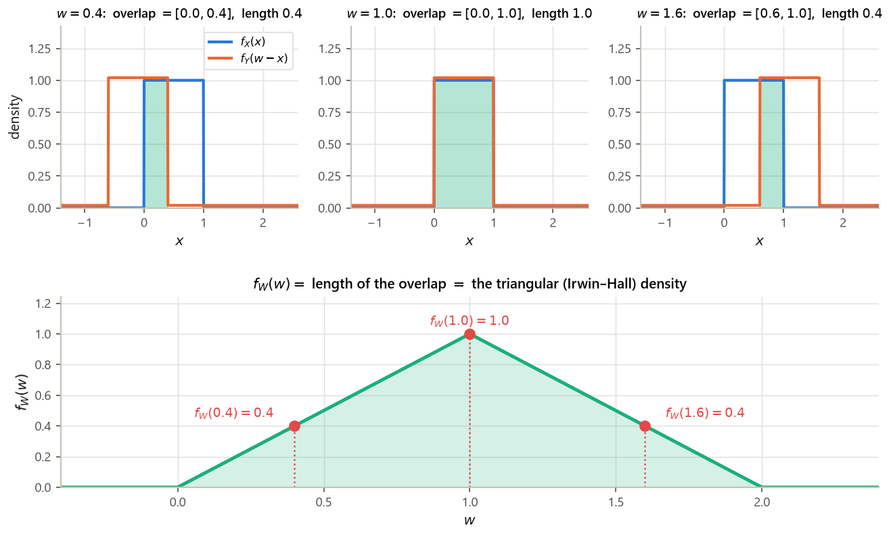
Interactive: the convolution animator
Pick the two densities, then drag $w$ (or press animate). The top panel shows $f_X(x)$ together
with the flipped-and-shifted $f_Y(w-x)$ and their product shaded; the area of that shaded
product is $f_W(w)$, plotted in the bottom panel as it accumulates. The grid computation is the same
trapezoid rule verified in computes/g3_s4.py §4.9 against
numpy.convolve (agreement to machine precision where the integrand is continuous, and
to the grid spacing $h=0.002$ at the jump discontinuities of the uniform density) and against the
closed forms $f_{U+U}(0.7)=0.7$, $f_{\mathrm{Exp}+\mathrm{Exp}}(1)=e^{-1}=0.367879$ and
$f_{\triangle+\triangle}(2)=2/3$.
Solution
$f_X(x)=\lambda e^{-\lambda x}$ for $x\ge0$ and $0$ otherwise; likewise
$f_Y(w-x)=\lambda e^{-\lambda(w-x)}$ for $w-x\ge0$, i.e. $x\le w$. Both factors are nonzero exactly
when $0\le x\le w$, which requires $w\ge0$; so $f_W(w)=0$ for $w<0$. For $w\ge0$,
$$f_W(w)=\int_0^{w}\lambda e^{-\lambda x}\cdot\lambda e^{-\lambda(w-x)}dx
=\lambda^2\int_0^w e^{-\lambda x-\lambda w+\lambda x}dx
=\lambda^2 e^{-\lambda w}\int_0^w dx=\lambda^2 w\,e^{-\lambda w}.$$
The exponentials cancel because the exponents sum to the constant $-\lambda w$ — the integrand does
not depend on $x$ at all, and the integral is just the length $w$ of the interval. This is the
Erlang density of order $2$. Checks with $\lambda=3$: it integrates to $1.000000$ and has mean
$0.666667=2/\lambda$ (p411_norm, p411_mean), consistent with
$\mathbb{E}[W]=\mathbb{E}[X]+\mathbb{E}[Y]=2/\lambda$. Set $f_X=f_Y=$ exponential in the widget to
watch this shape appear.
Solution
$f_X(x)=1$ on $[0,1]$; $f_Y(w-x)=e^{-(w-x)}$ for $x\le w$. The integrand is nonzero on $[0,1]\cap(-\infty,w]=[0,\min(1,w)]$, empty for $w<0$.
Case $0\le w\le1$: $f_W(w)=\int_0^{w}e^{-(w-x)}dx=e^{-w}\int_0^we^{x}dx=e^{-w}\big[e^x\big]_0^w=e^{-w}(e^w-1)=1-e^{-w}$.
Case $w>1$: $f_W(w)=\int_0^{1}e^{-(w-x)}dx=e^{-w}\big[e^x\big]_0^1=e^{-w}(e-1)$.
Continuity at $w=1$: $1-e^{-1}=0.632121$ and $e^{-1}(e-1)=1-e^{-1}$ — the same number ✓.
Spot values: $f_W(0.5)=1-e^{-0.5}=0.393469$ and $f_W(1.5)=e^{-1.5}(e-1)=0.383400$
(uexp_at_0.5, uexp_at_1.5); total mass $1.000000$
(p412_norm). The widget reproduces $f_W(0.5)=0.393076$ on its grid — the small
discrepancy is the trapezoid rule straddling the jump of $f_X$ at $x=0$, exactly the $O(h)$ error
recorded in the compute.
Solution
Write $D=X+(-Y)$ and first find the density of $V=-Y$: by the linear rule with $a=-1,b=0$,
$f_V(v)=\frac{1}{|-1|}f_Y(-v)=f_Y(-v)$, which is $1$ on $[-1,0]$. Now convolve:
$$f_D(d)=\int_{-\infty}^{\infty}f_X(x)f_V(d-x)dx .$$
$f_X(x)=1$ on $[0,1]$; $f_V(d-x)=1$ iff $-1\le d-x\le0$ iff $d\le x\le d+1$. The overlap of $[0,1]$
and $[d,d+1]$ has length $\min(1,d+1)-\max(0,d)$, giving
$$f_D(d)=\begin{cases}1+d,&-1\le d\le0,\\ 1-d,&0<d\le1,\\ 0,&\text{otherwise,}\end{cases}
\qquad\text{i.e. }f_D(d)=1-|d|\text{ on }[-1,1].$$
Checks: it integrates to $1.000000$ and $\operatorname{var}(D)=0.166667=\frac16$
(p413_norm, p413_var) — the same variance as $X+Y$, since
$\operatorname{var}(-Y)=(-1)^2\operatorname{var}(Y)$. The triangle has simply been recentred at $0$.
4.7 The sum of two independent normals is normal
L11 slides 5–6 treat the case that makes the normal family special. First the joint picture, then the convolution.
The joint density and its contours (L11 slide 5). If $X\sim N(\mu_x,\sigma_x^2)$ and $Y\sim N(\mu_y,\sigma_y^2)$ are independent, then by the factorization criterion of §2 their joint density is the product of the marginals: $$f_{X,Y}(x,y)=f_X(x)f_Y(y) =\frac{1}{\sqrt{2\pi}\sigma_x}e^{-(x-\mu_x)^2/2\sigma_x^2}\cdot \frac{1}{\sqrt{2\pi}\sigma_y}e^{-(y-\mu_y)^2/2\sigma_y^2} =\frac{1}{2\pi\sigma_x\sigma_y}\exp\left\{-\frac{(x-\mu_x)^2}{2\sigma_x^2}-\frac{(y-\mu_y)^2}{2\sigma_y^2}\right\},$$ the two exponentials merging because $e^ae^b=e^{a+b}$. The density depends on $(x,y)$ only through the quantity in braces, so it is constant on every curve $$\frac{(x-\mu_x)^2}{2\sigma_x^2}+\frac{(y-\mu_y)^2}{2\sigma_y^2}=\text{const},$$ which is an ellipse centred at $(\mu_x,\mu_y)$ with axes parallel to the coordinate axes and semi-axis lengths proportional to $\sigma_x$ and $\sigma_y$. It is a circle exactly when $\sigma_x=\sigma_y$.
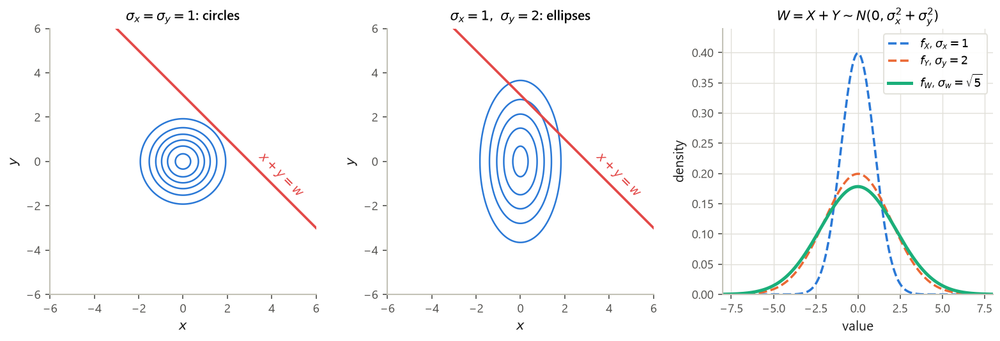
Derivation (filling L11 slide 6's "(algebra)" gap). Take $\mu_x=\mu_y=0$; the general case
follows because $X+Y=(X-\mu_x)+(Y-\mu_y)+(\mu_x+\mu_y)$, and adding the constant $\mu_x+\mu_y$ just
shifts the density by §4.1. The convolution formula gives
$$f_W(w)=\int_{-\infty}^{\infty}f_X(x)f_Y(w-x)dx
=\frac{1}{2\pi\sigma_x\sigma_y}\int_{-\infty}^{\infty}
\exp\left\{-\frac{x^2}{2\sigma_x^2}-\frac{(w-x)^2}{2\sigma_y^2}\right\}dx .$$
Step 1: expand and collect powers of $x$. Since
$(w-x)^2=x^2-2wx+w^2$, the exponent is
$$-\left[\underbrace{\left(\frac{1}{2\sigma_x^2}+\frac{1}{2\sigma_y^2}\right)}_{=:a}x^2
-\frac{w}{\sigma_y^2}x+\frac{w^2}{2\sigma_y^2}\right],$$
a quadratic in $x$ with leading coefficient $a=\frac{\sigma_x^2+\sigma_y^2}{2\sigma_x^2\sigma_y^2}>0$
(with $\sigma_x=1,\sigma_y=2$ this is $0.625$ — norm_a_const, norm_a_closed,
which agree).
Step 2: complete the square in $x$. For any $a>0$ and $\beta$, $ax^2-\beta x=a\left(x-\frac{\beta}{2a}\right)^2-\frac{\beta^2}{4a}$. Here $\beta=w/\sigma_y^2$, so with $m:=\frac{w}{2a\sigma_y^2}$ $$ax^2-\frac{w}{\sigma_y^2}x=a(x-m)^2-\frac{w^2}{4a\sigma_y^4}.$$ The exponent becomes $-a(x-m)^2+\frac{w^2}{4a\sigma_y^4}-\frac{w^2}{2\sigma_y^2}$, and the last two terms do not involve $x$, so they factor out of the integral.
Step 3: do the Gaussian integral. The standard identity $\int_{-\infty}^{\infty}e^{-a(x-m)^2}dx=\sqrt{\pi/a}$ holds for any real centre $m$ and any $a>0$ (substitute $u=\sqrt a(x-m)$ to reduce it to $\frac{1}{\sqrt a}\int e^{-u^2}du=\sqrt{\pi/a}$). Hence $$f_W(w)=\frac{1}{2\pi\sigma_x\sigma_y}\sqrt{\frac\pi a}\; \exp\left\{\frac{w^2}{4a\sigma_y^4}-\frac{w^2}{2\sigma_y^2}\right\}.$$
Step 4: simplify the exponent. Factor out $\frac{w^2}{2\sigma_y^2}$:
$$\frac{w^2}{4a\sigma_y^4}-\frac{w^2}{2\sigma_y^2}
=\frac{w^2}{2\sigma_y^2}\left(\frac{1}{2a\sigma_y^2}-1\right).$$
Now $2a\sigma_y^2=\frac{\sigma_x^2+\sigma_y^2}{\sigma_x^2}$, so
$\frac{1}{2a\sigma_y^2}=\frac{\sigma_x^2}{\sigma_x^2+\sigma_y^2}$ and
$$\frac{1}{2a\sigma_y^2}-1=\frac{\sigma_x^2-(\sigma_x^2+\sigma_y^2)}{\sigma_x^2+\sigma_y^2}
=\frac{-\sigma_y^2}{\sigma_x^2+\sigma_y^2}.$$
Multiplying back, the $\sigma_y^2$ cancels:
$$\frac{w^2}{2\sigma_y^2}\cdot\frac{-\sigma_y^2}{\sigma_x^2+\sigma_y^2}
=-\frac{w^2}{2(\sigma_x^2+\sigma_y^2)} .$$
So $\gamma=\frac{1}{2(\sigma_x^2+\sigma_y^2)}$ in the slide's notation ($=0.1$ for
$\sigma_x=1,\sigma_y=2$ — norm_gamma).
Step 5: simplify the constant.
$\sqrt{\pi/a}=\sqrt{\dfrac{2\pi\sigma_x^2\sigma_y^2}{\sigma_x^2+\sigma_y^2}}
=\sigma_x\sigma_y\sqrt{\dfrac{2\pi}{\sigma_x^2+\sigma_y^2}}$, hence
$$c=\frac{1}{2\pi\sigma_x\sigma_y}\cdot\sigma_x\sigma_y\sqrt{\frac{2\pi}{\sigma_x^2+\sigma_y^2}}
=\frac{1}{2\pi}\cdot\frac{\sqrt{2\pi}}{\sqrt{\sigma_x^2+\sigma_y^2}}
=\frac{1}{\sqrt{2\pi(\sigma_x^2+\sigma_y^2)}} .$$
(For $\sigma_x=1,\sigma_y=2$: $c=0.178412$ — norm_c.)
Conclusion.
$$f_W(w)=\frac{1}{\sqrt{2\pi(\sigma_x^2+\sigma_y^2)}}\,\exp\left\{-\frac{w^2}{2(\sigma_x^2+\sigma_y^2)}\right\},$$
which is exactly the $N(0,\sigma_x^2+\sigma_y^2)$ density. Numerical confirmation with
$\sigma_x=1,\sigma_y=2$ (so $\sigma_w^2=5$, $\sigma_w=2.236068$): evaluating the convolution integral
numerically at $w=0,1,3$ gives $0.178412$, $0.161434$, $0.072537$, and the closed form gives the same
three numbers to six decimals (norm_conv_0.0 vs norm_closed_0.0, etc.).
Solution
$X+Y$: mean $1+(-2)=-1$, variance $4+9=13$ (p414_mean,
p414_var), so $X+Y\sim N(-1,13)$.
$2X-Y$: first, $2X\sim N(2\cdot1,\;2^2\cdot4)=N(2,16)$ and $-Y\sim N(2,\;(-1)^2\cdot9)
=N(2,9)$ — a linear map of a normal is normal, by §4.1 applied to the normal density. These two are
independent (functions of independent variables), so their sum is normal with mean $2+2=4$ and
variance $16+9=25$: $2X-Y\sim N(4,25)$ (p414b_mean, p414b_var), i.e.
standard deviation $5$.
Solution
Applying the theorem repeatedly, $S_n=\sum_iX_i\sim N(n\mu,\,n\sigma^2)$ (each addition adds one mean and one variance). Then $M_n=\frac1nS_n$ is a linear map with $a=1/n$, $b=0$, so it is normal with mean $\frac1n\cdot n\mu=\mu$ and variance $\frac{1}{n^2}\cdot n\sigma^2=\frac{\sigma^2}{n}$: $$M_n\sim N\!\left(\mu,\;\frac{\sigma^2}{n}\right).$$ The mean is unbiased and the spread shrinks like $1/\sqrt n$ — the exact, non-asymptotic version of the law of large numbers, available here only because the normal family is closed under convolution.
4.8 Covariance and correlation
The last two slides of L11 introduce the numbers that quantify dependence between two random variables — and, crucially, repair the variance-of-a-sum formula when independence fails.
Derivation (the slide states it without expanding). Abbreviate $\mu_X=\mathbb{E}[X]$ and $\mu_Y=\mathbb{E}[Y]$; these are ordinary numbers, not random. Expand the product inside: $$(X-\mu_X)(Y-\mu_Y)=XY-\mu_YX-\mu_XY+\mu_X\mu_Y .$$ Take expectations and use linearity of expectation term by term (G2 §4 — it needs no independence), remembering that the expectation of a constant is that constant: $$\operatorname{cov}(X,Y)=\mathbb{E}[XY]-\mu_Y\mathbb{E}[X]-\mu_X\mathbb{E}[Y]+\mu_X\mu_Y =\mathbb{E}[XY]-\mu_Y\mu_X-\mu_X\mu_Y+\mu_X\mu_Y=\mathbb{E}[XY]-\mu_X\mu_Y .$$ Two of the three correction terms cancel. Setting $Y=X$ recovers the familiar $\operatorname{var}(X)=\mathbb{E}[X^2]-(\mathbb{E}[X])^2$: variance is self-covariance, $\operatorname{cov}(X,X)=\operatorname{var}(X)$.
Derivation (also missing from the slide). Put $\tilde X_i=X_i-\mathbb{E}[X_i]$, the centred version of $X_i$, so $\mathbb{E}[\tilde X_i]=0$ and $\sum_i X_i$ has centred version $\sum_i\tilde X_i$. By definition of variance and linearity of expectation, $$\operatorname{var}\!\left(\sum_iX_i\right)=\mathbb{E}\left[\Big(\sum_i\tilde X_i\Big)^2\right] =\mathbb{E}\left[\sum_i\sum_j\tilde X_i\tilde X_j\right]=\sum_i\sum_j\mathbb{E}[\tilde X_i\tilde X_j],$$ expanding the square as a double sum over all ordered pairs $(i,j)$ and taking the expectation inside (linearity again). Split the double sum into the diagonal $i=j$ and the off-diagonal $i\ne j$: $\mathbb{E}[\tilde X_i^2]=\operatorname{var}(X_i)$ and $\mathbb{E}[\tilde X_i\tilde X_j]=\operatorname{cov}(X_i,X_j)$ by definition. That is the claim.
Derivation. Independence gives $\mathbb{E}[XY]=\mathbb{E}[X]\mathbb{E}[Y]$ (G2 §4 in the discrete case; §2 of this note in the continuous case, where it follows from $f_{X,Y}=f_Xf_Y$ and Fubini). Substituting into the computational formula, $\operatorname{cov}(X,Y)=\mathbb{E}[X]\mathbb{E}[Y]-\mathbb{E}[X]\mathbb{E}[Y]=0$. Combining with the variance-of-a-sum property: for independent variables all off-diagonal terms vanish and we recover $\operatorname{var}(\sum X_i)=\sum\operatorname{var}(X_i)$ from G2.
Solution. $\mathbb{E}[X]=\frac13(-1)+\frac13(0)+\frac13(1)=0$;
$\mathbb{E}[Y]=\mathbb{E}[X^2]=\frac13(1+0+1)=\frac23\approx0.666667$; and
$\mathbb{E}[XY]=\mathbb{E}[X^3]=\frac13\big((-1)^3+0^3+1^3\big)=0$. Hence
$$\operatorname{cov}(X,Y)=\mathbb{E}[XY]-\mathbb{E}[X]\mathbb{E}[Y]=0-0\cdot\tfrac23=0$$
(cov_ex_EX, cov_ex_EY, cov_ex_EXY, cov_ex_cov).
Yet $Y$ is a deterministic function of $X$ — as dependent as two variables can be. Concretely,
$\mathbf{P}(X=0,Y=0)=\mathbf{P}(X=0)=\frac13$, while
$\mathbf{P}(X=0)\mathbf{P}(Y=0)=\frac13\cdot\frac13=\frac19$, and $\frac13\ne\frac19$
(cov_ex_P_X0_Y0, cov_ex_P_X0_times_P_Y0), so the independence identity
fails.
What it does not do is measure dependence in general. $\rho$ is built out of a single expected product, so it can only see the extent to which $Y$'s deviation tracks $X$'s deviation proportionally. Curved dependence, however tight, is partly or wholly invisible to it: Example 4.9's $Y=X^2$ is a deterministic function of $X$ and yet has $\rho=0$, because the positive contributions from $X>0$ cancel the negative ones from $X<0$. Read $\rho$ as "how close to a straight line", never as "how related".
Derivation (the slide asserts both without proof). Let $U=\frac{X-\mathbb{E}[X]}{\sigma_X}$ and $V=\frac{Y-\mathbb{E}[Y]}{\sigma_Y}$ be the standardized variables. Each has mean $0$ and variance $1$: e.g. $\operatorname{var}(U)=\frac{1}{\sigma_X^2}\operatorname{var}(X)=1$ by the $a^2$ rule. And $\rho=\mathbb{E}[UV]=\operatorname{cov}(U,V)$. Now compute the variance of $U\pm V$ with the variance-of-a-sum property ($n=2$): $$0\;\le\;\operatorname{var}(U\pm V)=\operatorname{var}(U)+\operatorname{var}(V)\pm2\operatorname{cov}(U,V) =1+1\pm2\rho=2(1\pm\rho).$$ The left inequality is just "a variance is never negative" (it is the expectation of a square). Taking the $+$ sign gives $1+\rho\ge0$, i.e. $\rho\ge-1$; taking the $-$ sign gives $1-\rho\ge0$, i.e. $\rho\le1$. Together, $-1\le\rho\le1$.
For the equality case: $\operatorname{var}(U-V)=0$ means $U-V$ equals its mean $0$ with probability $1$, i.e. $U=V$, i.e. $\frac{X-\mathbb{E}[X]}{\sigma_X}=\frac{Y-\mathbb{E}[Y]}{\sigma_Y}$, which is the stated linear relation with $c=\sigma_X/\sigma_Y>0$; and this happens exactly when $\rho=1$. Symmetrically $\rho=-1$ corresponds to $\operatorname{var}(U+V)=0$ and $c=-\sigma_X/\sigma_Y$. So $|\rho|=1$ is the signature of an exact straight-line relationship, with the sign of $\rho$ giving the sign of its slope.
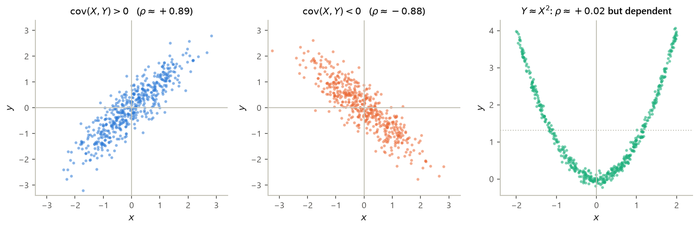
Solution. Covariance is bilinear — it follows from the definition and linearity of
expectation that $\operatorname{cov}(X,\,A+B)=\operatorname{cov}(X,A)+\operatorname{cov}(X,B)$. Hence
$$\operatorname{cov}(X,Y)=\operatorname{cov}(X,X+N)=\operatorname{cov}(X,X)+\operatorname{cov}(X,N)
=\operatorname{var}(X)+0=\tfrac1{12}\approx0.083333,$$
the middle covariance vanishing by independence of $X$ and $N$. Variances:
$\operatorname{var}(X)=\frac1{12}$ and $\operatorname{var}(Y)=\operatorname{var}(X)+\operatorname{var}(N)
=\frac1{12}+\frac1{12}=\frac16\approx0.166667$ (independence again). Therefore
$$\rho=\frac{1/12}{\sqrt{\frac1{12}}\sqrt{\frac16}}=\frac{1/12}{\sqrt{\frac{1}{72}}}
=\frac{1/12}{\frac{1}{6\sqrt2}}=\frac{6\sqrt2}{12}=\frac{1}{\sqrt2}\approx0.707107 .$$
(cov_lin_covXY, cov_lin_varY, cov_lin_rho,
cov_lin_rho_exact.) Three million simulated pairs give sample covariance $0.083357$ and
sample correlation $0.707308$ (cov_lin_cov_mc, cov_lin_rho_mc).
Reading it: $\rho=1/\sqrt2\approx0.71$, not $1$, because half of $Y$'s variance comes from
noise that $X$ knows nothing about; if the noise variance shrank to $0$ we would get $Y=X$ and
$\rho=1$.
Solution
Let $Y=aX+b$, so $\mathbb{E}[Y]=a\mathbb{E}[X]+b$ and $Y-\mathbb{E}[Y]=a(X-\mathbb{E}[X])$. Then
$$\operatorname{cov}(X,Y)=\mathbb{E}\big[(X-\mathbb{E}[X])\cdot a(X-\mathbb{E}[X])\big]
=a\,\mathbb{E}\big[(X-\mathbb{E}[X])^2\big]=a\operatorname{var}(X).$$
Also $\sigma_Y=|a|\sigma_X$, so
$$\rho=\frac{a\sigma_X^2}{\sigma_X\cdot|a|\sigma_X}=\frac{a}{|a|}=\operatorname{sign}(a),$$
which is $+1$ for $a>0$ and $-1$ for $a<0$ (rho_lin_pos,
rho_lin_neg). Exactly as the equality case of the bound predicts: a perfect linear
relationship, with the sign of the slope. Note $b$ never appears — correlation is blind to shifts.
Solution
First: $\operatorname{cov}(X,Y)=\rho\sigma_X\sigma_Y=-1\cdot1\cdot1=-1$, so
$$\operatorname{var}(X+Y)=\operatorname{var}(X)+\operatorname{var}(Y)+2\operatorname{cov}(X,Y)
=1+1-2=0$$
(p417_var). Zero variance means $X+Y$ is constant — which is right: $\rho=-1$ forces
$Y-\mathbb{E}[Y]=-(X-\mathbb{E}[X])$ here, so the fluctuations cancel exactly.
Second: $\operatorname{var}(X)=1$, $\operatorname{var}(Y)=4$, so
$\operatorname{var}(X+Y)=1+4+2\cdot1=7$ (varsum_demo_total). Had we wrongly assumed
independence we would have said $5$ — a $29\%$ underestimate of the variance and a real error in any
risk calculation.
Solution
Zero covariance. The joint density is the constant $1/\pi$ on the disk. The disk is
symmetric under $(x,y)\mapsto(-x,y)$, so $\mathbb{E}[X]=0$; likewise $\mathbb{E}[Y]=0$. For the
product, the disk is also symmetric under $(x,y)\mapsto(-x,y)$, which sends $xy$ to $-xy$ while
preserving the density; pairing each point with its mirror image makes the integral
$\mathbb{E}[XY]=\frac1\pi\iint_{\text{disk}}xy\,dx\,dy$ cancel in pairs, so $\mathbb{E}[XY]=0$.
Hence $\operatorname{cov}(X,Y)=0-0\cdot0=0$ (p418_cov).
Not independent. Given $X=x$, the variable $Y$ is confined to
$[-\sqrt{1-x^2},\sqrt{1-x^2}]$ — a conditional range that depends on $x$. At $x=0.9$ that
window has width $2\sqrt{1-0.81}=0.871780$ (p418_condrange), whereas at $x=0$ it has
width $2$. Since $f_{Y\mid X}(y\mid x)$ changes with $x$, $f_{X,Y}\ne f_Xf_Y$ and the two are
dependent. Knowing $X$ tells you a great deal about $|Y|$ and nothing about its sign — precisely the
kind of dependence covariance cannot see.
- CDF method (always works; L10 slide 6): $F_Y(y)=\mathbf{P}(g(X)\le y)$ → rewrite as an $x$-event $A_y$ → $F_Y(y)=\int_{A_y}f_X$ → differentiate. Start by finding the range of $g$; outside it $f_Y=0$.
- Linear (L10 slide 8): $Y=aX+b$, $a\ne0$ $\Rightarrow$ $f_Y(y)=\frac{1}{|a|}f_X\!\left(\frac{y-b}{a}\right)$. Example: $X\sim U(0,1)$, $Y=2X+3$ gives $U(3,5)$.
- Strictly monotonic $g$: $f_Y(y)=\dfrac{f_X(x)}{|dg/dx(x)|}$ at $x=g^{-1}(y)$; equivalently $f_Y(y)=f_X(h(y))|h'(y)|$ with $h=g^{-1}$. Not valid when $g$ is many-to-one — add the branches or use the CDF method.
- $Z=Y/X$ on the unit square (L11 slide 1 = L10 slide 4; also §3.6, Example 3.8): $F_Z(z)=z/2$ for $0\le z\le1$ and $1-\frac{1}{2z}$ for $z\ge1$; $f_Z(z)=\frac12$ on $(0,1]$ and $\frac{1}{2z^2}$ on $(1,\infty)$. Median $1$, mean infinite.
- rec11 P3: $X$ standard normal, $g(t)=-t$ for $t\le0$ and $\sqrt t$ for $t>0$ gives $\{Y\le y\}=\{-y\le X\le y^2\}$, hence $f_Y(y)=\frac{1}{\sqrt{2\pi}}\left(2ye^{-y^4/2}+e^{-y^2/2}\right)$ for $y>0$.
- Convolution ($X,Y$ independent, $W=X+Y$): discrete $p_W(w)=\sum_xp_X(x)p_Y(w-x)$; continuous $f_W(w)=\int f_X(x)f_Y(w-x)dx$. Mechanics: flip, shift by $w$, multiply, sum/integrate.
- Standard convolutions: $U(0,1)+U(0,1)$ = triangle $f_W(w)=w$ then $2-w$ on $[0,2]$; Exp($\lambda$)+Exp($\lambda$) = Erlang-2, $\lambda^2we^{-\lambda w}$; $N(\mu_x,\sigma_x^2)+N(\mu_y,\sigma_y^2)=N(\mu_x+\mu_y,\sigma_x^2+\sigma_y^2)$.
- Covariance: $\operatorname{cov}(X,Y)=\mathbb{E}[(X-\mathbb{E}X)(Y-\mathbb{E}Y)] =\mathbb{E}[XY]-\mathbb{E}[X]\mathbb{E}[Y]$; $\operatorname{cov}(X,X)=\operatorname{var}(X)$; bilinear; independence $\Rightarrow$ $0$, not conversely.
- Variance of a sum: $\operatorname{var}(\sum_iX_i)=\sum_i\operatorname{var}(X_i) +\sum_{i\ne j}\operatorname{cov}(X_i,X_j)$ (ordered pairs).
- Correlation: $\rho=\frac{\operatorname{cov}(X,Y)}{\sigma_X\sigma_Y}\in[-1,1]$, dimensionless; $|\rho|=1$ iff $X$ and $Y$ are exactly linearly related.
§5 Synthesis and checkpoint
Sources: L08 slides 2–8 · L09 slides 1–8 · L10 slides 1–8 · L11 slides 2–8 · rec08 P1–P3 · rec09 P1–P4 · rec10 (all problems — the Spring 2010 Quiz 1, reused as a G1–G3 checkpoint) · rec11 P1–P3 · Bertsekas–Tsitsiklis (B&T, as in §0) §3.1–3.6, B&T §4.1–4.2. Every number on this page is recomputed in computes/g3_s5.py (closed forms cross-checked by scipy.integrate.quad; discrete answers by exact Fraction arithmetic), and every figure by computes/g3_s5_figs.py.
Four lectures replaced the sum by the integral. Nothing else about the structure of probability changed: a random variable is still a function on the sample space, expectation is still a weighted average, conditioning still means restricting and renormalizing. What changed is the bookkeeping — $p_X(x)$ became $f_X(x)$, $\sum_x$ became $\int dx$, and the one operation that changed character rather than notation is the derived distribution: the concept exists in the discrete world too ($p_Y(y)=\sum_{x:g(x)=y}p_X(x)$, and discrete convolution with it), but the continuous version needs machinery with no discrete analogue at all — the CDF-then-differentiate two-step and the $|dg/dx|$ stretch factor. This section puts all of it on one page: the correspondence table, the identity list, the distribution zoo, the decision procedure for derived distributions, and the six mistakes that cost the most points. It then closes with a checkpoint — recitation 10 is not new material at all but the Spring 2010 Quiz 1, reused in this Fall 2010 offering as a mixed G1–G3 review, and every one of its problems is solved here in full.
Everything summarized below was built earlier in this note: §0 set out the discrete/continuous correspondence, §1 developed PDFs, CDFs and the uniform, exponential and normal families (L08, rec08), §2 the joint, marginal and conditional densities and independence (L09, rec09), §3 the four Bayes variations (L10, rec11 P1–P2), and §4 derived distributions, convolution, and — in §4.8 — covariance and correlation (L11, rec11 P3). Where a result is only stated here, the section that proves it is named.
5.1 The whole of G3 on one page
The organizing picture is the "constellation of concepts" of L08 slide 8, redrawn as a table. Read each row as a translation rule. On the left is the discrete object from G2, on the right the continuous object from G3; wherever the middle column is filled, the concept is defined once and applies to both worlds. In all of what follows $X,Y$ are random variables on a common sample space, $x,y$ are numbers they might take, $a,b$ are real constants, $g$ is a real-valued function, $A$ is an event with $\mathbf{P}(A)>0$, $\delta$ is a small positive length, and $B$ is a subset of the real line ("nice" enough to integrate over).
| Discrete (G2) | Shared | Continuous (G3) | Source | Where in G3 |
|---|---|---|---|---|
| $p_X(x)=\mathbf{P}(X=x)$ | — | $f_X(x)$ with $\mathbf{P}(a\le X\le b)=\int_a^b f_X(x)\,dx$ | L08 s2; B&T §3.1 | §1.1 |
| $p_X(x)\in[0,1]$ | — | $f_X(x)\ge 0$, may exceed $1$ | L08 s2; B&T §3.1 | §1.1 |
| $\sum_x p_X(x)=1$ | — | $\int_{-\infty}^{\infty}f_X(x)\,dx=1$ | L08 s2 | §1.1 |
| $\mathbf{P}(X\in B)=\sum_{x\in B}p_X(x)$ | — | $\mathbf{P}(X\in B)=\int_B f_X(x)\,dx$ | L08 s2 | §1.1 |
| $F_X(x)=\sum_{k\le x}p_X(k)$ | $F_X(x)=\mathbf{P}(X\le x)$ — same object in both | $F_X(x)=\int_{-\infty}^{x}f_X(t)\,dt$, and $f_X=dF_X/dx$ | L08 s4; B&T §3.2 | §1.4 |
| — | $\mathbb{E}[X]$, $\operatorname{var}(X)$ | $\int x f_X(x)dx$, $\int (x-\mathbb{E}[X])^2f_X(x)dx$ | L08 s3; B&T §3.1 | §1.2 |
| $\mathbb{E}[g(X)]=\sum_x g(x)p_X(x)$ | — | $\mathbb{E}[g(X)]=\int g(x)f_X(x)\,dx$ | L08 s3; L10 s4 | §1.2 |
| $p_{X,Y}(x,y)$ | — | $f_{X,Y}(x,y)$, $\mathbf{P}((X,Y)\in S)=\iint_S f_{X,Y}$ | L09 s3; B&T §3.4 | §2.1 |
| $p_X(x)=\sum_y p_{X,Y}(x,y)$ | — | $f_X(x)=\int_{-\infty}^{\infty}f_{X,Y}(x,y)\,dy$ | L10 s1; B&T §3.4 | §2.2 |
| $p_{X|Y}(x|y)=\dfrac{p_{X,Y}(x,y)}{p_Y(y)}$ | — | $f_{X|Y}(x|y)=\dfrac{f_{X,Y}(x,y)}{f_Y(y)}$, defined where $f_Y(y)>0$ | L09 s5; L10 s1 | §2.3 |
| $p_{X,Y}=p_Xp_Y$ for all $x,y$ | independence | $f_{X,Y}(x,y)=f_X(x)f_Y(y)$ for all $x,y$ | L09 s5; B&T §3.5 | §2.4 |
| $p_X(x)=\sum_i\mathbf{P}(A_i)p_{X|A_i}(x)$ | total probability | $f_X(x)=\sum_i\mathbf{P}(A_i)f_{X|A_i}(x)$ | B&T §3.5 | §2.5 |
| $\mathbb{E}[X]=\sum_i\mathbf{P}(A_i)\mathbb{E}[X|A_i]$ | total expectation | same formula, $\mathbb{E}[X|A_i]=\int x f_{X|A_i}(x)dx$ | B&T §3.5; rec10 P3.2 | §2.5 |
| $p_{X|Y}=\dfrac{p_Xp_{Y|X}}{p_Y}$ | Bayes | $f_{X|Y}=\dfrac{f_Xf_{Y|X}}{f_Y}$, plus the two mixed forms | L10 s2, s3; B&T §3.6 | §3.1–§3.5 |
| $p_Y(y)=\sum_{x:g(x)=y}p_X(x)$ | derived distribution | $F_Y(y)=\mathbf{P}(g(X)\le y)$, then $f_Y=dF_Y/dy$ | L10 s5, s6; B&T §4.1 | §4.1 |
| $p_W(w)=\sum_x p_X(x)p_Y(w-x)$ | convolution ($W=X+Y$, indep.) | $f_W(w)=\int f_X(x)f_Y(w-x)\,dx$ | L11 s3, s4; B&T §4.1 | §4.5–§4.6 |
Three quantities have no discrete/continuous split at all, because they are defined through expectations rather than through the mass function: linearity $\mathbb{E}[aX+bY]=a\mathbb{E}[X]+b\mathbb{E}[Y]$, the variance rules $\operatorname{var}(aX+b)=a^2\operatorname{var}(X)$ and $\operatorname{var}(X)=\mathbb{E}[X^2]-(\mathbb{E}[X])^2$, and the covariance/correlation pair $\operatorname{cov}(X,Y)=\mathbb{E}\big[(X-\mathbb{E}[X])(Y-\mathbb{E}[Y])\big]$, $\rho=\operatorname{cov}(X,Y)/(\sigma_X\sigma_Y)$ (L11 slides 7–8). Linearity and the two variance rules were proved in G2 §5.3 and are imported here unchanged; covariance and correlation are new G3 material, proved in §4.8 of this note (definition, the computational formula $\operatorname{cov}(X,Y)=\mathbb{E}[XY]-\mathbb{E}[X]\mathbb{E}[Y]$, the variance of a sum, and the bound $-1\le\rho\le1$ with its equality case).
Solution
(a) $f_X\ge 0$ on $[0,1]$ since $x\ge 0$ there. Normalization: the antiderivative of $2x$ is $x^2$, so $\int_0^1 2x\,dx=[x^2]_0^1=1^2-0^2=1$. Legitimate.
(b) For $0\le x\le 1$, $F_X(x)=\int_0^x 2t\,dt=[t^2]_0^x=x^2$; $F_X(x)=0$ for $x<0$ and $F_X(x)=1$ for $x>1$. Note $F_X$ is continuous and increasing, and $dF_X/dx=2x=f_X(x)$, as the correspondence table requires.
(c) By the CDF: $\mathbf{P}(X>1/2)=1-F_X(1/2)=1-(1/2)^2=1-0.25=0.75$. By direct
integration: $\int_{1/2}^{1}2x\,dx=[x^2]_{1/2}^{1}=1-\tfrac14=\tfrac34$. Both give $0.75$
(computes/g3_s5.py).
(d) $\mathbb{E}[X]=\int_0^1 x\cdot 2x\,dx=\int_0^1 2x^2dx=\big[\tfrac{2}{3}x^3\big]_0^1=\tfrac23\approx 0.666667$. $\mathbb{E}[X^2]=\int_0^1x^2\cdot 2x\,dx=\big[\tfrac{1}{2}x^4\big]_0^1=\tfrac12$. Hence $\operatorname{var}(X)=\tfrac12-\big(\tfrac23\big)^2=\tfrac{9-8}{18}=\tfrac{1}{18}\approx 0.055556$. (This $X$ is a Beta$(2,1)$ variable — see §5.2 — and it is the posterior of rec11 P2.)
Solution
(i) $\int f_X(x)\,dx=1$ — a translation, not the same statement. (ii) identical in both worlds: it is a statement about expectations only, proved once (G2 §5.3, L05 slide 7) and never re-proved. (iii) $f_{X|Y}(x|y)=f_{X,Y}(x,y)/f_Y(y)$ (L09 slide 5) — a translation, and the one that needs the $\delta$-argument of the Interpretation box to be legitimate, since the conditioning event has probability $0$. (iv) has no continuous counterpart: for a continuous $X$, $\mathbf{P}(X=x)=0$ for every $x$. The correct continuous analogue of "$X$ is somewhere" is $\int f_X=1$, i.e. row 3.
5.2 The continuous distribution zoo
Four families cover essentially every continuous model in 6.041 up to this point. In the table $a<b$ are the endpoints of a uniform range, $\lambda>0$ is the rate of an exponential, $\mu$ and $\sigma>0$ are the mean and standard deviation of a normal, and $\alpha,\beta>0$ are the shape parameters of a beta, whose normalizing constant is $B(\alpha,\beta)=\int_0^1 q^{\alpha-1}(1-q)^{\beta-1}dq$. The final column names the mechanism in the problem statement that should make you reach for that row.
| Family | PDF $f_X(x)$ | CDF $F_X(x)$ | $\mathbb{E}[X]$ | $\operatorname{var}(X)$ | Mechanism / source |
|---|---|---|---|---|---|
| Uniform$[a,b]$ | $\dfrac{1}{b-a}$ on $[a,b]$, else $0$ | $\dfrac{x-a}{b-a}$ on $[a,b]$ | $\dfrac{a+b}{2}$ | $\dfrac{(b-a)^2}{12}$ | "Equally likely anywhere in the range"; a point picked at random on a segment. L08 s3; B&T §3.1; §1.3 of this note |
| Exponential$(\lambda)$ | $\lambda e^{-\lambda x}$ on $x\ge 0$, else $0$ | $1-e^{-\lambda x}$, $x\ge 0$ | $\dfrac{1}{\lambda}$ | $\dfrac{1}{\lambda^{2}}$ | Waiting time with no aging (memoryless); lifetime of a component. rec08 P3; rec09 P1, P2; B&T §3.1; §1.5 of this note |
| Normal $N(\mu,\sigma^2)$ | $\dfrac{1}{\sigma\sqrt{2\pi}}e^{-(x-\mu)^2/2\sigma^2}$ | no closed form; $\Phi\!\big(\frac{x-\mu}{\sigma}\big)$ from tables | $\mu$ | $\sigma^{2}$ | Aggregate of many small independent effects; measurement noise. L08 s6, s7; L11 s5, s6; B&T §3.3; §1.7 of this note |
| Beta$(\alpha,\beta)$ | $\dfrac{q^{\alpha-1}(1-q)^{\beta-1}}{B(\alpha,\beta)}$ on $[0,1]$ | no elementary form in general; $q^{2}$ for $(2,1)$ | $\dfrac{\alpha}{\alpha+\beta}$ | $\dfrac{\alpha\beta}{(\alpha+\beta)^2(\alpha+\beta+1)}$ | A random probability: the posterior of an unknown Bernoulli parameter. rec11 P2; B&T §3.6; §3.5 of this note |
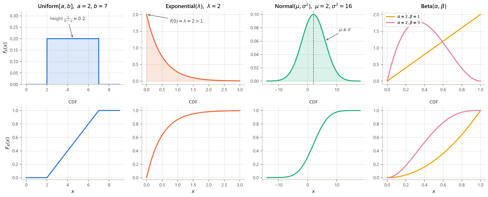
Uniform, in full (fills the blanks and the derivation gap of L08 slide 3). The slide leaves
$f_X$ and $\mathbb{E}[X]$ blank and states the variance without integrating. Constancy plus
normalization forces the height: if $f_X(x)=c$ on $[a,b]$ then
$1=\int_a^b c\,dx=c\,[x]_a^b=c(b-a)$, so $c=1/(b-a)$. For the mean, the antiderivative of $x$ is
$x^2/2$, so
$$\mathbb{E}[X]=\int_a^b \frac{x}{b-a}\,dx=\frac{1}{b-a}\Big[\frac{x^2}{2}\Big]_a^b
=\frac{1}{b-a}\cdot\frac{b^2-a^2}{2}=\frac{(b-a)(b+a)}{2(b-a)}=\frac{a+b}{2},$$
the last step factoring the difference of squares and cancelling $b-a\ne 0$. For the variance,
substitute $u=x-\frac{a+b}{2}$, so $du=dx$; the limits become $u=a-\frac{a+b}{2}=-\frac{b-a}{2}$ and
$u=b-\frac{a+b}{2}=+\frac{b-a}{2}$. Writing $c=\frac{b-a}{2}$ for that half-width and using the
antiderivative $u^3/3$,
$$\operatorname{var}(X)=\frac{1}{b-a}\int_{-c}^{c}u^2\,du
=\frac{1}{b-a}\Big[\frac{u^3}{3}\Big]_{-c}^{c}
=\frac{1}{b-a}\cdot\frac{c^3-(-c)^3}{3}
=\frac{2c^3}{3(b-a)}
=\frac{2}{3(b-a)}\cdot\frac{(b-a)^3}{8}=\frac{(b-a)^2}{12}.$$
Check at $a=2$, $b=7$: height $1/5=0.2$, mean $4.5$, variance $25/12=2.083333$ — all three reproduced
by quadrature in computes/g3_s5.py.
Exponential, in full (§1.5 of this note; rec08 P3). Normalization uses the antiderivative $-e^{-\lambda x}$: $\int_0^\infty \lambda e^{-\lambda x}dx=\big[-e^{-\lambda x}\big]_0^{\infty}=0-(-1)=1$, since $e^{-\lambda x}\to 0$ as $x\to\infty$ for $\lambda>0$. The CDF is the same integral stopped early, $F_X(x)=\big[-e^{-\lambda t}\big]_0^{x}=1-e^{-\lambda x}$. The mean is one integration by parts with $u=x$, $dv=\lambda e^{-\lambda x}dx$, hence $du=dx$ and $v=-e^{-\lambda x}$: $$\mathbb{E}[X]=\big[-x e^{-\lambda x}\big]_0^{\infty}+\int_0^{\infty}e^{-\lambda x}dx =0+\Big[-\frac{e^{-\lambda x}}{\lambda}\Big]_0^{\infty}=\frac{1}{\lambda},$$ the boundary term vanishing at $\infty$ because the exponential beats the linear factor, and at $0$ because of the factor $x$. The second moment is the same move with $u=x^2$, $du=2x\,dx$: $$\mathbb{E}[X^2]=\big[-x^2e^{-\lambda x}\big]_0^{\infty}+\int_0^{\infty}2xe^{-\lambda x}dx =0+\frac{2}{\lambda}\int_0^{\infty}x\,\lambda e^{-\lambda x}dx=\frac{2}{\lambda}\cdot\frac{1}{\lambda} =\frac{2}{\lambda^2},$$ where the middle step multiplied and divided by $\lambda$ to recreate the density and reuse $\mathbb{E}[X]=1/\lambda$. Therefore $\operatorname{var}(X)=\frac{2}{\lambda^2}-\frac{1}{\lambda^2}=\frac{1}{\lambda^2}$. At $\lambda=2$: mean $0.5$, variance $0.25$, $\mathbf{P}(X>1)=e^{-2}=0.135335$, median $\ln 2/2=0.346574$ — all verified numerically.
Normal, in full (fills "it turns out that" on L08 slide 6). Substitute $u=(x-\mu)/\sigma$, so $x=\mu+\sigma u$ and $dx=\sigma\,du$; the density becomes the standard one, $\varphi(u)=\frac{1}{\sqrt{2\pi}}e^{-u^2/2}$, and $$\mathbb{E}[X]=\int_{-\infty}^{\infty}(\mu+\sigma u)\varphi(u)\,du =\mu\underbrace{\int\varphi(u)du}_{=1}+\sigma\underbrace{\int u\varphi(u)du}_{=0}=\mu,$$ the second integral vanishing because $u\varphi(u)$ is an odd function integrated over a symmetric range. For the variance, integrate by parts with $u\,dv$ where $dv=u\varphi(u)du$ and $v=-\varphi(u)$ (since $\varphi'(u)=-u\varphi(u)$): $$\int u^2\varphi(u)du=\big[-u\varphi(u)\big]_{-\infty}^{\infty}+\int\varphi(u)du=0+1=1, \qquad\text{so}\qquad \operatorname{var}(X)=\sigma^2\cdot 1=\sigma^2 .$$ Standardization (the blank on L08 slide 7): $Z=(X-\mu)/\sigma\sim N(0,1)$, which is the $a=1/\sigma$, $b=-\mu/\sigma$ case of the linear rule of §5.3. Hence for $X\sim N(2,16)$ — where $\sigma=\sqrt{16}=4$, a step the slide performs silently — $$\mathbf{P}(X\le 3)=\mathbf{P}\Big(\frac{X-2}{4}\le\frac{3-2}{4}\Big)=\Phi(0.25)=0.5987,$$ matching the table row $0.2$, column $.05$ of the slide; the exact value is $0.598706$.
Beta, in full (rec11 P2; §3.5 of this note). The case that appears in this course is $\alpha=2$,
$\beta=1$: $f_Q(q)=2q$ on $[0,1]$. Its normalization, mean and variance were computed in Practice 5.1
($1$, $2/3$, $1/18=0.055556$), and they agree with the general formulas:
$\frac{\alpha}{\alpha+\beta}=\frac{2}{3}$ and
$\frac{\alpha\beta}{(\alpha+\beta)^2(\alpha+\beta+1)}=\frac{2\cdot 1}{9\cdot 4}=\frac{1}{18}$. Beta$(1,1)$
is exactly the uniform on $[0,1]$ (mean $0.5$, variance $1/12=0.083333$), which is why a uniform prior
on an unknown probability is the natural starting point. Four $(\alpha,\beta)$ pairs are checked against
quadrature in computes/g3_s5.py.
- "Chosen at random on/between …" with nothing else said $\to$ uniform; read off $a,b$ and write $1/(b-a)$ immediately.
- "Time until …", "lifetime", "the process has no memory", or a given constant hazard rate $\to$ exponential; read off $\lambda$ as the rate (events per unit time), so the mean is $1/\lambda$.
- "Noise", "measurement error", "sum of many small effects", or the problem hands you $\mu$ and $\sigma^2$ $\to$ normal; immediately standardize before touching a table.
- The unknown is itself a probability in $[0,1]$, and data have been observed $\to$ beta.
- If none fits, do not force one: build $f_X$ from the model, then normalize by imposing $\int f_X=1$ (rec08 P1 is exactly this).
Solution
$\mathbf{P}(X>1)=1-F_X(1)=1-(1-e^{-2\cdot 1})=e^{-2}=0.135335$.
$\mathbb{E}[X]=1/\lambda=0.5$ h and $\operatorname{var}(X)=1/\lambda^2=0.25$, so $\sigma_X=0.5$ h — mean
and standard deviation coincide. Median: solve $1-e^{-2m}=1/2\Rightarrow e^{-2m}=1/2\Rightarrow
-2m=\ln(1/2)=-\ln 2\Rightarrow m=\ln 2/2=0.346574$ h. The median is smaller than the mean
($0.3466<0.5$): the density is right-skewed, so the long tail drags the mean above the middle value.
All four numbers are in computes/g3_s5.py.
Solution
Here $\mu=5$ and $\sigma=\sqrt{9}=3$. Standardize both endpoints — subtracting $\mu$ and dividing by $\sigma>0$ preserves the inequalities: $$\mathbf{P}(2<X<11)=\mathbf{P}\Big(\frac{2-5}{3}<Z<\frac{11-5}{3}\Big)=\mathbf{P}(-1<Z<2) =\Phi(2)-\Phi(-1).$$ The table gives $\Phi(2)=0.9772$ directly. It has no negative rows, so use the symmetry of the standard normal density about $0$: $\Phi(-1)=1-\Phi(1)=1-0.8413=0.1587$. Hence $\mathbf{P}(2<X<11)=0.9772-0.1587=0.8186$ (computed value $0.818595$). Sanity check: the interval is $\mu-\sigma$ to $\mu+2\sigma$, and $0.8186$ sits between the familiar $68\%$ and $95\%$ figures.
5.3 Derived distributions: which method, and when
A derived distribution is the PDF (or PMF) of $Y=g(X)$ or $Y=g(X_1,\dots,X_n)$ when the law of the inputs is known (L10 slide 4). Four techniques exist; choosing between them is most of the difficulty, so start with the question that eliminates the work entirely.
- Do you actually need the distribution? If the question asks only for $\mathbb{E}[g(X)]$ or $\operatorname{var}(g(X))$, use the expected-value rule $\mathbb{E}[g(X)]=\int g(x)f_X(x)dx$ (or the two-variable version $\iint g(x,y)f_{X,Y}(x,y)\,dx\,dy$) and stop. L10 slide 4 makes this its first point for a reason.
- Is $X$ discrete? Then $p_Y(y)=\sum_{x:\,g(x)=y}p_X(x)$ — collect all $x$ mapping to the same $y$ and add (L10 slide 5). No calculus.
- Is $g$ linear, $Y=aX+b$ with $a\ne 0$? Use $f_Y(y)=\frac{1}{|a|}f_X\!\big(\frac{y-b}{a}\big)$ (L10 slide 8).
- Is $g$ a strictly monotonic function of one variable? Use $f_Y(y)=f_X(x)\big/\big|\frac{dg}{dx}(x)\big|$ evaluated at $x=g^{-1}(y)$ (L11 slide 2).
- Is $Y=X_1+X_2$ with $X_1,X_2$ independent? Convolve: $f_W(w)=\int f_{X}(x)f_{Y}(w-x)\,dx$ (L11 slide 4).
- Otherwise — and always, if unsure — the CDF method. Write $F_Y(y)=\mathbf{P}(g(X)\le y)$, express the event as a region in the sample space of the inputs, compute its probability as an area or integral of $f_X$ (or $f_{X,Y}$), then differentiate: $f_Y(y)=dF_Y/dy$. This never fails, handles non-monotonic $g$ and several variables, and is the method of L10 slide 6.
- Finish, every time: state the range of $y$ for which each expression is valid, and verify $\int f_Y(y)\,dy=1$.
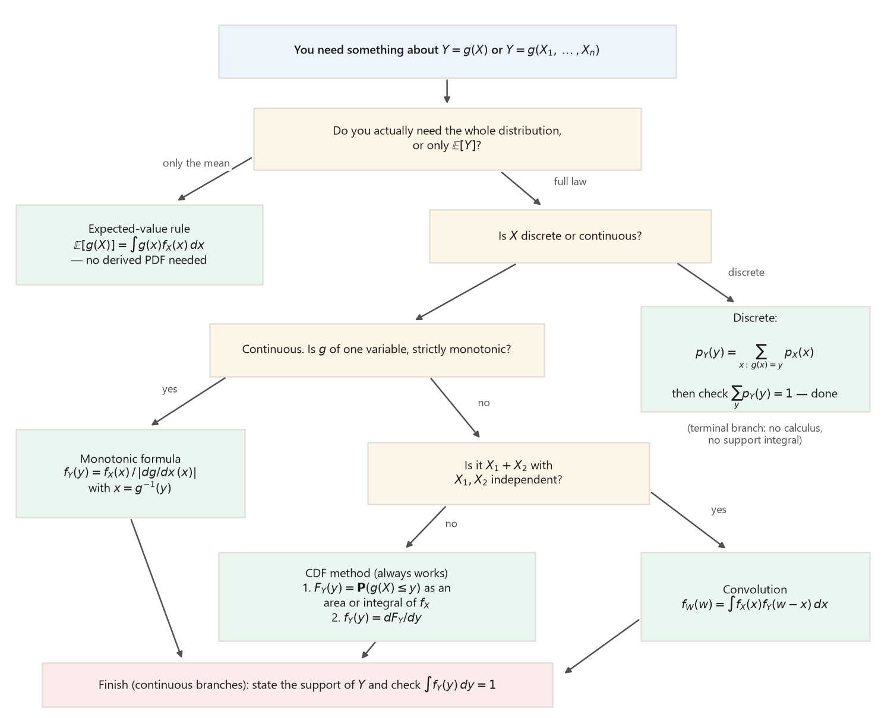
| Method | Formula | Applies when | Worked instance (recomputed) |
|---|---|---|---|
| Expected-value rule | $\mathbb{E}[g(X)]=\int g(x)f_X(x)dx$ | Only a moment is wanted | $X\sim U[0,2]$, $\mathbb{E}[X^3]=\int_0^2 x^3\cdot\frac12 dx=\big[\frac{x^4}{8}\big]_0^2=2$ — no PDF of $X^3$ needed. L10 s4 |
| Discrete collection | $p_Y(y)=\sum_{x:\,g(x)=y}p_X(x)$ | $X$ discrete | rec10 P3.1: two outcomes give $X=3$, so $p_X(3)=\frac14+\frac1{16}=\frac{5}{16}$. L10 s5 |
| CDF method | $F_Y(y)=\mathbf{P}(g(X)\le y)$, then differentiate | Always; required if $g$ is non-monotonic or multivariate | $X\sim U[0,2]$, $Y=X^3$: $f_Y(y)=\frac{1}{6y^{2/3}}$ on $0<y<8$; mass $1$, $\mathbb{E}[Y]=2$. L10 s6 |
| Linear formula | $f_Y(y)=\frac{1}{|a|}f_X\!\big(\frac{y-b}{a}\big)$ | $Y=aX+b$, $a\ne 0$ | $X\sim N(2,16)$, $Y=-3X+5$: $Y\sim N(-1,144)$ — mean and variance confirmed by quadrature. L10 s8 |
| Monotonic formula | $f_Y(y)=f_X(x)\big/\big|\frac{dg}{dx}(x)\big|$, $x=g^{-1}(y)$ | One variable, $g$ strictly monotonic and differentiable | Joan: $V\sim U[30,60]$, $T=200/V$, $f_T(t)=\frac{200}{30t^2}$ on $[\frac{10}{3},\frac{20}{3}]$; $\mathbb{E}[T]=\frac{20}{3}\ln 2=4.620981$ h. L10 s7; L11 s2 |
| Convolution | $f_W(w)=\int f_X(x)f_Y(w-x)dx$ | $W=X+Y$, $X\perp Y$ independent | Two independent $U[0,1]$: $f_W$ triangular on $[0,2]$, $\mathbb{E}[W]=1$, $\operatorname{var}(W)=1/6=0.166667$. $N(0,2.25)+N(0,4)=N(0,6.25)$, s.d. $2.5$. L11 s3–s6 |
The Joan example (L10 slide 7 leaves it unsolved; §3.6 of this note derives it in full, Example 3.9) is the cleanest illustration of why the support matters: $V$ ranges over $[30,60]$ and $t=200/v$ is decreasing, so $t$ ranges over $[200/60,200/30]=[3.333333,6.666667]$ — the endpoints swap. The normalization check confirms the algebra: with antiderivative $-1/t$, $$\int_{10/3}^{20/3}\frac{200}{30t^2}dt=\frac{200}{30}\Big[-\frac1t\Big]_{10/3}^{20/3} =\frac{20}{3}\Big(\frac{3}{10}-\frac{3}{20}\Big)=\frac{20}{3}\cdot\frac{3}{20}=1 .$$ And $\mathbb{E}[T]=\frac{20}{3}\ln 2=4.620981$ hours exceeds the naive $200/\mathbb{E}[V]=200/45=4.444444$ hours by $0.176537$ — the same $\mathbb{E}[g(X)]\ne g(\mathbb{E}[X])$ trap as G2's speed example, now continuous.
Solution
Support first. $e^x$ is increasing, so $x\in[0,1]$ gives $y\in[e^0,e^1]=[1,e]=[1,2.718282]$.
Monotonic formula. $g(x)=e^x$, $\frac{dg}{dx}=e^x>0$, and the inverse is $x=\ln y$. Hence for $1\le y\le e$, $$f_Y(y)=\frac{f_X(\ln y)}{|e^{x}|_{x=\ln y}}=\frac{1}{e^{\ln y}}=\frac1y,$$ using $f_X\equiv 1$ on $[0,1]$ and $e^{\ln y}=y$.
CDF method. $F_Y(y)=\mathbf{P}(e^X\le y)=\mathbf{P}(X\le\ln y)=F_X(\ln y)=\ln y$ for $1\le y\le e$ (taking $\ln$ is legal because it is increasing; $F_X(u)=u$ on $[0,1]$). Differentiating, $f_Y(y)=\frac{d}{dy}\ln y=\frac1y$ — the same answer.
Checks. $\int_1^{e}\frac{dy}{y}=[\ln y]_1^{e}=1-0=1$. And
$\mathbb{E}[Y]=\int_1^{e}y\cdot\frac1y\,dy=[y]_1^{e}=e-1=1.718282$, which matches the expected-value
rule route $\int_0^1 e^x dx=[e^x]_0^1=e-1$ (both computed in computes/g3_s5.py).
Solution
Why not. $g(x)=x^2$ is decreasing on $(-\infty,0]$ and increasing on $[0,\infty)$, so it is not one-to-one and has no single inverse: two values $\pm\sqrt{y}$ map to the same $y$. Use the CDF method (Fig. 5.2's default branch).
CDF. For $y>0$, the event $\{X^2\le y\}$ is $\{-\sqrt y\le X\le\sqrt y\}$, so $$F_Y(y)=\Phi(\sqrt y)-\Phi(-\sqrt y)=2\Phi(\sqrt y)-1,$$ using the symmetry $\Phi(-u)=1-\Phi(u)$. For $y\le 0$, $F_Y(y)=0$ since $X^2\ge 0$.
Differentiate with the chain rule, $\frac{d}{dy}\sqrt y=\frac{1}{2\sqrt y}$ and $\Phi'=\varphi$: $$f_Y(y)=2\varphi(\sqrt y)\cdot\frac{1}{2\sqrt y}=\frac{\varphi(\sqrt y)}{\sqrt y} =\frac{1}{\sqrt{2\pi y}}e^{-y/2},\qquad y>0 .$$ (This is the chi-square density with one degree of freedom.) Quadrature confirms $\int_0^\infty f_Y=1$, $\mathbb{E}[Y]=1$ and $\operatorname{var}(Y)=2$. The mean is also immediate from the expected-value rule without any derived density: $\mathbb{E}[X^2]=\operatorname{var}(X)+(\mathbb{E}[X])^2=1+0=1$ — step 1 of the Recipe would have answered the mean question in one line.
5.4 Top gotchas of G3
Six errors account for most of the lost points on continuous random variables. Each is a place where a discrete habit transfers illegitimately.
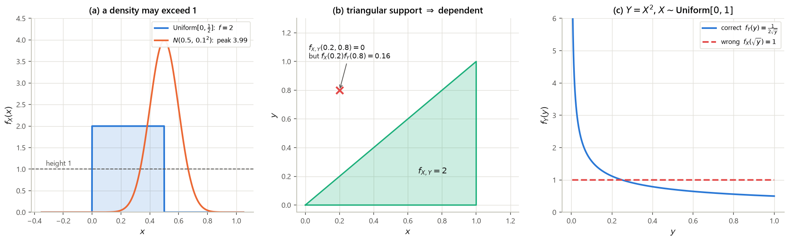
Solution
(a) Gotcha 1: $4$ is a density, not a probability, and $\int_0^{1/4}4\,dx=[4x]_0^{1/4}=1$. The PDF is perfectly legal.
(b) Gotcha 3: the $\frac{1}{|a|}$ factor is missing. With $a=3$, $b=0$, $f_Y(y)=\frac13 f_X(y/3)=\frac13$ on $[0,3]$. The claimed answer integrates to $3$, not $1$ — the normalization check catches it instantly.
(c) Gotcha 6: independence requires a product factorization $f_X(x)f_Y(y)$, not a sum. Concretely $f_X(x)=\int_0^1(x+y)dy=\big[xy+\frac{y^2}{2}\big]_0^1=x+\frac12$ and likewise $f_Y(y)=y+\frac12$, so $f_X(x)f_Y(y)=(x+\frac12)(y+\frac12)=xy+\frac{x}{2}+\frac{y}{2}+\frac14$, which is not $x+y$ (at $(0,0)$: $\frac14$ versus $0$). Dependent.
5.5 Checkpoint — quiz-style review (G1–G3 mixed)
Recitation 10 is not new material: the solution handout is titled "6.041/6.431 Spring 2010 Quiz 1 Solutions", so the session is a full-length quiz review over G1 (sample spaces, conditional probability, Bayes, independence) and G2 (PMFs, expectation, total expectation, geometric random variables). Use it as a checkpoint before continuing: every tool it exercises was built in an earlier section, cited below each part. All three problems are solved here in complete detail, with the counterexamples and arithmetic that the official solutions omit.
1.1. (a) $\mathbf{P}(A\cap B)$ may be larger than $\mathbf{P}(A)$. (b) $\operatorname{var}(X)$ may be larger than $\operatorname{var}(2X)$. (c) If $A^c\cap B^c=\emptyset$ then $\mathbf{P}(A\cup B)=1$. (d) If $A^c\cap B^c=\emptyset$ then $\mathbf{P}(A\cap B)=\mathbf{P}(A)\mathbf{P}(B)$. (e) If $\mathbf{P}(A)>1/2$ and $\mathbf{P}(B)>1/2$ then $\mathbf{P}(A\cup B)=1$.
1.2. (a) If $\mathbb{E}[X]=0$ then $\mathbf{P}(X>0)=\mathbf{P}(X<0)$. (b) $\mathbf{P}(A)=\mathbf{P}(A\mid B)+\mathbf{P}(A\mid B^c)$. (c) $\mathbf{P}(B\mid A)+\mathbf{P}(B\mid A^c)=1$. (d) $\mathbf{P}(B\mid A)+\mathbf{P}(B^c\mid A^c)=1$. (e) $\mathbf{P}(B\mid A)+\mathbf{P}(B^c\mid A)=1$.
Solution
1.1 — answer (c). The official justification: by De Morgan's law $A\cup B=(A^c\cap B^c)^c=\emptyset^c=\Omega$, and $\mathbf{P}(\Omega)=1$ by the normalization axiom (G1 §1). Now the four refutations the handout omits.
(a) False. $A\cap B\subseteq A$, and monotonicity of probability (G1 §1; it follows from additivity applied to $A=(A\cap B)\cup(A\cap B^c)$, both terms nonnegative) gives $\mathbf{P}(A\cap B)\le\mathbf{P}(A)$ always. An intersection can never be more likely than either of its parts, so "may be larger" is impossible.
(b) False. By the scaling rule $\operatorname{var}(aX)=a^2\operatorname{var}(X)$ (G2 §5.3; L05 slide 8), $\operatorname{var}(2X)=4\operatorname{var}(X)\ge\operatorname{var}(X)$ because variances are nonnegative. With $X$ Bernoulli$(1/2)$: $\operatorname{var}(X)=1/4$ and $\operatorname{var}(2X)=1$. Equality happens only in the degenerate case $\operatorname{var}(X)=0$, never strict inequality the other way.
(d) False. The hypothesis $A^c\cap B^c=\emptyset$ says $A\cup B=\Omega$; it says nothing about independence. Counterexample: $\Omega=\{1,2,3\}$ with equally likely outcomes, $A=\{1,2\}$, $B=\{2,3\}$. Then $A^c=\{3\}$, $B^c=\{1\}$, so $A^c\cap B^c=\emptyset$ as required, but $\mathbf{P}(A\cap B)=\mathbf{P}(\{2\})=\frac13=0.333333$ while $\mathbf{P}(A)\mathbf{P}(B)=\frac23\cdot\frac23=\frac49=0.444444$. Not equal.
(e) False. Take $A=B$ with $\mathbf{P}(A)=\frac35>\frac12$. Then $\mathbf{P}(A\cup B)=\mathbf{P}(A)=\frac35\ne 1$. (What is true, by inclusion–exclusion, is $\mathbf{P}(A\cap B)=\mathbf{P}(A)+\mathbf{P}(B)-\mathbf{P}(A\cup B)\ge\frac35+\frac35-1=\frac15>0$: two events each more likely than a half must overlap. That is the true statement this option is imitating.)
1.2 — answer (e). $B$ and $B^c$ partition $\Omega$, so conditioned on $A$ they are two complementary events of the conditional model: $\mathbf{P}(\cdot\mid A)$ is itself a legitimate probability law (G1 §2), hence $\mathbf{P}(B\mid A)+\mathbf{P}(B^c\mid A)=\mathbf{P}(\Omega\mid A)=1$. The trap in (b), (c), (d) is that the conditioning event varies across the two terms, and there is no rule that adds probabilities computed in two different conditional universes.
(a) False. $\mathbb{E}[X]=0$ balances the PMF as a center of gravity, which says nothing about how much mass lies on each side. Take $\mathbf{P}(X=-1)=\frac23$ and $\mathbf{P}(X=2)=\frac13$: $\mathbb{E}[X]=(-1)\frac23+2\cdot\frac13=-\frac23+\frac23=0$, yet $\mathbf{P}(X>0)=\frac13\ne\frac23=\mathbf{P}(X<0)$. (This is the same lesson as G2's speed example: the mean is not the median and not a typical value.)
(b) False. The correct identity is the total probability theorem $\mathbf{P}(A)=\mathbf{P}(B)\mathbf{P}(A\mid B)+\mathbf{P}(B^c)\mathbf{P}(A\mid B^c)$ (G1 §2) — the weights are essential. Dropping them: let $A=B$ with $\mathbf{P}(A)=\frac12$. Then $\mathbf{P}(A\mid B)=1$ and $\mathbf{P}(A\mid B^c)=0$, so the right-hand side is $1+0=1\ne\frac12$.
(c) False. Let $B=\Omega$. Then $\mathbf{P}(B\mid A)=\mathbf{P}(B\mid A^c)=1$ and the sum is $2\ne 1$. (It happens to hold when $B=A$ with $0<\mathbf{P}(A)<1$, which is exactly why the option looks plausible — one example is not a proof.)
(d) False. Concretely, let $\Omega=\{1,2,\dots,8\}$ with all eight outcomes equally likely ($\frac18$ each), $A=\{1,2,3,4\}$ and $B=\{1,5,6,7\}$. Then $\mathbf{P}(A)=\frac48=\frac12$ and $$\mathbf{P}(B\mid A)=\frac{\mathbf{P}(\{1\})}{\mathbf{P}(A)}=\frac{1/8}{1/2}=\frac14,\qquad \mathbf{P}(B^c\mid A^c)=\frac{\mathbf{P}(\{8\})}{\mathbf{P}(A^c)}=\frac{1/8}{1/2}=\frac14,$$ since $B\cap A=\{1\}$, while $A^c=\{5,6,7,8\}$ and $B^c=\{2,3,4,8\}$ give $B^c\cap A^c=\{8\}$. The sum is $\frac14+\frac14=\frac12\ne 1$. The identity fails because the two terms are computed in two different conditional universes, $\mathbf{P}(\cdot\mid A)$ and $\mathbf{P}(\cdot\mid A^c)$; only (e), where both terms live in the same universe, is safe.
Cross-references: monotonicity and De Morgan — G1 §1; total probability and conditional models — G1 §2; variance scaling — G2 §5.3; center of gravity — G2 §5.4 Gotcha 2.
Solution
(2.1) The sample space. The game stops as soon as some face has appeared twice. If the first two tosses agree the game ends at length $2$; if they disagree, each face has appeared once, so the third toss decides. Enumerating, and writing $q=1-p$ for the probability of a tail:
| Outcome | Probability | Winner |
|---|---|---|
| HH | $p\cdot p=p^2$ | Heather |
| HTH | $p\,q\,p=p^2(1-p)$ | Heather |
| HTT | $p\,q\,q=p(1-p)^2$ | Taylor |
| THH | $q\,p\,p=p^2(1-p)$ | Heather |
| THT | $q\,p\,q=p(1-p)^2$ | Taylor |
| TT | $q\cdot q=(1-p)^2$ | Taylor |
Each probability is a product because the tosses are independent (G1 §3; the multiplication rule
along a sequential tree, G1 §2). Normalization check — expand and collect:
$$p^2+2p^2(1-p)+2p(1-p)^2+(1-p)^2
=p^2+2p^2-2p^3+2p-4p^2+2p^3+1-2p+p^2=1,$$
since $-2p^3+2p^3=0$, $p^2+2p^2-4p^2+p^2=0$, $2p-2p=0$, leaving $1$. Verified symbolically at
$p=\frac12,\frac13,\frac34,\frac15$ with exact fractions in computes/g3_s5.py.
(2.2) "Heather wins" $=\{\mathbf{HH},\mathbf{HTH},\mathbf{THH}\}$, a union of disjoint outcomes, so by additivity $$\mathbf{P}(\text{H wins})=p^2+p^2(1-p)+p^2(1-p)=p^2\big[1+2(1-p)\big]=p^2(3-2p).$$ At $p=\frac12$ this is $\frac14\cdot 2=\frac12$, as symmetry demands (a fair coin makes the game fair). At $p=\frac13$: $\frac19\cdot\frac73=\frac{7}{27}=0.259259$; at $p=\frac34$: $\frac{9}{16}\cdot\frac32=\frac{27}{32}=0.843750$.
(2.3) By the definition of conditional probability (G1 §2), $$\mathbf{P}(\text{H wins}\mid\text{1st toss H})=\frac{\mathbf{P}(\{\text{H wins}\}\cap\{\text{1st H}\})}{\mathbf{P}(\text{1st H})}.$$ Numerator: the winning outcomes that start with H are HH and HTH, so the intersection has probability $p^2+p^2(1-p)$. Denominator (the step the handout skips): the outcomes beginning with H are HH, HTH, HTT, with total probability $p^2+p^2(1-p)+p(1-p)^2=p\big[p+p(1-p)+(1-p)^2\big]=p\big[p+p-p^2+1-2p+p^2\big]=p\cdot 1=p$ — as it must be, since the first toss is a head with probability $p$ regardless of what follows. Hence, factoring $p^2$ out of the numerator, $$\frac{p^2\big[1+(1-p)\big]}{p}=\frac{p^2(2-p)}{p}=p(2-p).$$ At $p=\frac12$: $\frac12\cdot\frac32=\frac34=0.75$. Sanity: $p(2-p)>p^2(3-2p)$ for all $0<p<1$ (dividing by $p^2>0$ turns it into $\frac{2-p}{p}>3-2p$, true since the left side blows up as $p\to0$ and the two sides are equal only at $p=1$) — learning the first toss was a head is good news for Heather, as it should be.
(2.4) Same definition, other order — this is the Bayes-style inversion (G1 §2): $$\mathbf{P}(\text{1st H}\mid\text{H wins})=\frac{\mathbf{P}(\{\text{1st H}\}\cap\{\text{H wins}\})}{\mathbf{P}(\text{H wins})} =\frac{p^2+p^2(1-p)}{p^2(3-2p)}.$$ The numerator is the same intersection as in (2.3), $p^2(2-p)$. Cancelling the common factor $p^2>0$ from numerator and denominator (the step the handout does in one line): $$\frac{p^2(2-p)}{p^2(3-2p)}=\frac{2-p}{3-2p}.$$ At $p=\frac12$: $\frac{1.5}{2}=\frac34=0.75$; at $p=\frac13$: $\frac{5/3}{7/3}=\frac57$; at $p=\frac15$: $\frac{9/5}{13/5}=\frac{9}{13}$. Interpretation: for $p<1$ this is always $>\frac12$ — knowing Heather won makes it more likely than not that the first toss was a head, because two of her three winning sequences start with H and the shortest one (HH) is the most likely of all.
Cross-references: sequential sample space and the multiplication rule — G1 §2; conditional probability and inversion — G1 §2; independence of tosses — G1 §3.
Solution
(3.1) Build the sequential model first. Outcomes are the roll sequences of a full basic game. Each roll is uniform on $\{1,2,3,4\}$ and rolls are independent, so a one-roll outcome has probability $\frac14$ and a two-roll outcome has probability $\frac14\cdot\frac14=\frac1{16}$ (G1 §2 multiplication rule; G2 §5.2 building a PMF).
| $\omega$ | $\mathbf{P}(\{\omega\})$ | $X(\omega)$ | why |
|---|---|---|---|
| $(1)$ | $1/4$ | $1$ | pays the roll |
| $(2)$ | $1/4$ | $2$ | pays the roll |
| $(3)$ | $1/4$ | $3$ | pays the roll |
| $(4,1)$ | $1/16$ | $3$ | $\$2+\$1$ |
| $(4,2)$ | $1/16$ | $4$ | $\$2+\$2$ |
| $(4,3)$ | $1/16$ | $5$ | $\$2+\$3$ |
| $(4,4)$ | $1/16$ | $6$ | $\$2+\$4$ |
The probabilities total $3\cdot\frac14+4\cdot\frac1{16}=\frac34+\frac14=1$, so the model is complete. Collecting outcomes by value — the definition of a PMF (G2 §5.1) — the only value hit twice is $x=3$, by $(3)$ and $(4,1)$; the addition the handout omits is $$p_X(3)=\frac14+\frac1{16}=\frac{4}{16}+\frac{1}{16}=\frac{5}{16}=0.3125 .$$ Hence $$p_X(x)=\begin{cases}1/4,&x=1,2,\\ 5/16,&x=3,\\ 1/16,&x=4,5,6,\\ 0,&\text{otherwise,}\end{cases} \qquad\text{and}\quad \tfrac14+\tfrac14+\tfrac5{16}+3\cdot\tfrac1{16}=\tfrac{4+4+5+3}{16}=1 .$$
(3.2) Two routes, same answer. Directly from the PMF, $$\mathbb{E}[X]=1\cdot\tfrac14+2\cdot\tfrac14+3\cdot\tfrac5{16}+4\cdot\tfrac1{16}+5\cdot\tfrac1{16}+6\cdot\tfrac1{16} =\tfrac{4+8+15+4+5+6}{16}=\tfrac{42}{16}=\tfrac{21}{8}=2.625 .$$ The elegant route is the total expectation theorem (G2 §5.3; L06 slide 7) with $A=\{\text{first roll is }4\}$, $\mathbf{P}(A)=\frac14$, $\mathbf{P}(A^c)=\frac34$. Given $A$, the payoff is $2$ plus a uniform draw from $\{1,2,3,4\}$, so its conditional distribution is uniform on $\{3,4,5,6\}$ and $\mathbb{E}[X\mid A]=\frac{3+4+5+6}{4}=\frac{18}{4}=4.5$. Given $A^c$, the payoff is uniform on $\{1,2,3\}$, so $\mathbb{E}[X\mid A^c]=\frac{1+2+3}{3}=2$. Therefore — the arithmetic the handout skips — $$\mathbb{E}[X]=\tfrac14(4.5)+\tfrac34(2)=\tfrac{9}{8}+\tfrac{3}{2}=\tfrac{9}{8}+\tfrac{12}{8}=\tfrac{21}{8}=2.625 .$$ (For reference, $\mathbb{E}[X^2]=\frac{71}{8}$ and $\operatorname{var}(X)=\frac{71}{8}-\big(\frac{21}{8}\big)^2=\frac{568-441}{64}=\frac{127}{64}=1.984375$.)
(3.3) Let $Z$ be the result of the first roll and $B=\{X=3\}$. Conditioning on an event renormalizes over that event (G1 §2; G2 §5.3), so $$p_{Z\mid B}(z)=\frac{\mathbf{P}(\{Z=z\}\cap B)}{\mathbf{P}(B)} .$$ From the table, $\mathbf{P}(B)=p_X(3)=\frac5{16}$; only two outcomes lie in $B$, namely $(3)$ with $Z=3$ and $(4,1)$ with $Z=4$. The evaluation the handout omits: $$p_{Z\mid B}(3)=\frac{1/4}{5/16}=\frac14\cdot\frac{16}{5}=\frac45=0.8,\qquad p_{Z\mid B}(4)=\frac{1/16}{5/16}=\frac{1}{16}\cdot\frac{16}{5}=\frac15=0.2,$$ and $p_{Z\mid B}(z)=0$ otherwise; the two add to $1$, as any conditional PMF must. Interpretation: a payoff of \$3 arose from an honest roll of $3$ four times out of five, and from the bonus route only one time in five — the bonus route needs two specific rolls, so it is four times rarer.
(3.4) Decompose the payoff instead of chasing the PMF: let $L$ be the amount won on the last roll and $W$ the total won on all earlier rolls, so $Y=W+L$ by construction and, by linearity of expectation (G2 §5.3 — no independence needed), $\mathbb{E}[Y]=\mathbb{E}[W]+\mathbb{E}[L]$.
The last roll. The game ends exactly when a roll shows $1,2,3$. Conditioned on a given roll being the terminating one, that roll is uniform on $\{1,2,3\}$: each of $1,2,3$ has the same probability $\frac14$ of occurring, so conditioning on the event $\{$roll $\in\{1,2,3\}\}$ (probability $\frac34$) leaves them equally likely, $\frac{1/4}{3/4}=\frac13$ each. Moreover this conditional distribution is the same on every roll and does not depend on how many rolls came before, because the rolls are independent. Hence $\mathbb{E}[L]=\frac{1+2+3}{3}=2$, and the justification the handout asserts is exactly this independence.
The earlier rolls. Every non-terminating roll is a $4$ and pays \$2. If $N$ is the total number of rolls, there are $N-1$ of them, so $W=2(N-1)$. Calling a terminating roll a "success", the rolls are independent Bernoulli trials with success probability $\frac34$, and $N$ is the trial index of the first success — a geometric random variable with parameter $\frac34$ (G2 §5.2). Its mean, derived in G2 by total expectation ($\mathbb{E}[N]=p\cdot 1+(1-p)(1+\mathbb{E}[N])\Rightarrow\mathbb{E}[N]=1/p$), is $$\mathbb{E}[N]=\frac{1}{3/4}=\frac43 .$$ Then, by linearity again, $\mathbb{E}[W]=\mathbb{E}[2(N-1)]=2\mathbb{E}[N]-2=2\cdot\frac43-2=\frac83-\frac63=\frac23$.
Combine. $\mathbb{E}[Y]=\frac23+2=\frac23+\frac63=\frac83=2.666667$ dollars. Two independent
checks in computes/g3_s5.py: summing the series
$\sum_{k\ge0}(\frac14)^k(\frac34)(2k+2)$ over the number $k$ of bonus rolls gives $\frac83$ exactly, and
building the PMF of $Y$ outright ($p_Y(2k+j)$ gets $(\frac14)^k\cdot\frac14$ for each $j\in\{1,2,3\}$)
gives total mass $1.000000000000000$ and mean $2.666666666667$. Note $\mathbb{E}[Y]>\mathbb{E}[X]=2.625$:
the unlimited extension is worth about four cents more per game.
Cross-references: sequential model and multiplication rule — G1 §2; PMF from a model, total expectation, conditional PMF given an event, geometric mean, linearity — G2 §5.1–§5.3.
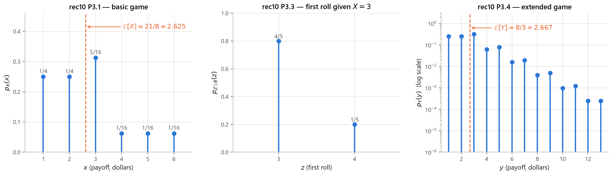
Solution
The game is symmetric under swapping the roles of heads and tails, which swaps $p$ and $q=1-p$ and
swaps the two players. So every formula for Heather transfers with $p\to 1-p$:
$$\mathbf{P}(\text{Taylor wins})=q^2(3-2q)=(1-p)^2\big(3-2(1-p)\big)=(1-p)^2(1+2p),$$
$$\mathbf{P}(\text{1st T}\mid\text{Taylor wins})=\frac{2-q}{3-2q}=\frac{2-(1-p)}{3-2(1-p)}=\frac{1+p}{1+2p}.$$
Checks (exact fractions, computes/g3_s5.py): at $p=\frac12$, $\mathbf{P}(\text{Taylor})=\frac12$
and the conditional is $\frac{3/2}{2}=\frac34$ — matching Heather's numbers, as symmetry requires. At
$p=\frac13$: $\mathbf{P}(\text{Taylor})=\frac{20}{27}$, and indeed
$\frac{7}{27}+\frac{20}{27}=1$; the conditional is $\frac{4/3}{5/3}=\frac45$. At $p=\frac25$:
$\mathbf{P}(\text{Taylor})=\frac{81}{125}$ and the conditional is $\frac{7/5}{9/5}=\frac79$.
Solution
Reuse the decomposition $Y=W+L$. The terminating roll is uniform on $\{1,2,3,4,5\}$ (each has
probability $\frac16$, and conditioning on the terminating event of probability $\frac56$ makes each
$\frac{1/6}{5/6}=\frac15$), so $\mathbb{E}[L]=\frac{1+2+3+4+5}{5}=\frac{15}{5}=3$. The number of rolls
$N$ is geometric with success probability $\frac56$, so $\mathbb{E}[N]=\frac{1}{5/6}=\frac65$, and each
of the $N-1$ non-terminating rolls pays \$3:
$$\mathbb{E}[W]=3\big(\mathbb{E}[N]-1\big)=3\Big(\frac65-1\Big)=3\cdot\frac15=\frac35=0.6 .$$
Hence $\mathbb{E}[Y]=\frac35+3=\frac{18}{5}=3.6$ dollars, confirmed by summing
$\sum_{k\ge0}(\frac16)^k(\frac56)(3k+3)=\frac{18}{5}$ in computes/g3_s5.py.
5.6 Bridge to G4
Two loose ends of G3 turn into the main themes of the next group. The first is a change in status for conditional expectation. Throughout G2 and G3, $\mathbb{E}[X\mid A]$ and $\mathbb{E}[X\mid Y=y]$ have been numbers: fix the conditioning event or the value $y$, and average. But $y$ was itself a value of a random variable, so the function $y\mapsto\mathbb{E}[X\mid Y=y]$ evaluated at the random $Y$ is a new random variable, written $\mathbb{E}[X\mid Y]$. Once you allow that, the total expectation theorem used three times in this section becomes the compact law of iterated expectations $\mathbb{E}\big[\mathbb{E}[X\mid Y]\big]=\mathbb{E}[X]$, and there is a matching decomposition of variance, $\operatorname{var}(X)=\mathbb{E}\big[\operatorname{var}(X\mid Y)\big]+\operatorname{var}\big(\mathbb{E}[X\mid Y]\big)$ — the two ways randomness in $X$ can arise, within a scenario and across scenarios. The second loose end is the convolution of L11: adding independent random variables is such a common operation that it deserves a tool that turns it into multiplication, which is what transforms do, and repeated addition of i.i.d. terms is what generates the limit theorems and, with a random number of terms, the stochastic processes (Bernoulli, Poisson, Markov) that occupy the remainder of the course. The exponential distribution of §5.2 reappears immediately there as the inter-arrival time of the Poisson process — its memorylessness, proved in rec09 P2, is exactly the property that makes such a process possible.
- Translation. $p_X\to f_X$, $\sum_x\to\int dx$, and everything else is unchanged. $F_X$, $\mathbb{E}$, $\operatorname{var}$, linearity, total probability/expectation, Bayes and independence are defined once and read in both worlds (L08 slide 8).
- Density is a rate: $\mathbf{P}(x\le X\le x+\delta)\approx f_X(x)\delta$. Hence $\mathbf{P}(X=x)=0$, $f_X$ may exceed $1$, and $f_{X|Y}$ makes sense despite the measure-zero conditioning event.
- Zoo. Uniform$[a,b]$: $\frac{1}{b-a}$, $\frac{a+b}{2}$, $\frac{(b-a)^2}{12}$. Exponential$(\lambda)$: $\lambda e^{-\lambda x}$, $\frac1\lambda$, $\frac1{\lambda^2}$, memoryless. $N(\mu,\sigma^2)$: standardize, closed under linear maps and sums. Beta$(\alpha,\beta)$: $\frac{\alpha}{\alpha+\beta}$, $\frac{\alpha\beta}{(\alpha+\beta)^2(\alpha+\beta+1)}$; Beta$(2,1)$ has $f(q)=2q$, mean $\frac23$, variance $\frac1{18}$. Fig. 5.1.
- Derived distributions. Only a mean? expected-value rule. Discrete? sum the PMF. Linear? $\frac{1}{|a|}f_X(\frac{y-b}{a})$. Monotonic? divide by $|dg/dx|$. Sum of independents? convolve. Otherwise CDF method. Always state the support and check $\int f_Y=1$. Fig. 5.2.
- Six traps. $f>1$ is fine; $\mathbf{P}(X=x)=0$ but conditioning is still defined; never drop $|dg/dx|$ ($f_Y(0.01)=5$, not $1$); split the convolution limits (triangular, not constant); $F\ne f$; independence needs factorization on the whole plane — a triangular support is always dependent. Fig. 5.3.
- Checkpoint (rec10 = Quiz 1). 1.1 answer (c), 1.2 answer (e), with counterexamples for all eight false options. Heather wins with probability $p^2(3-2p)$; $\mathbf{P}(\text{H wins}\mid\text{1st H})=p(2-p)$; $\mathbf{P}(\text{1st H}\mid\text{H wins})=\frac{2-p}{3-2p}$. Casino: $p_X(3)=\frac5{16}$, $\mathbb{E}[X]=\frac{21}{8}=2.625$, $p_{Z\mid X=3}=(\frac45,\frac15)$, $\mathbb{E}[Y]=\frac83\approx 2.667$. Fig. 5.4.
- Next. $\mathbb{E}[X\mid Y]$ as a random variable, the law of iterated expectations, the variance decomposition, transforms, and processes built from repeated independent additions.